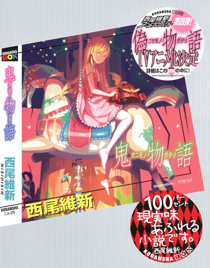
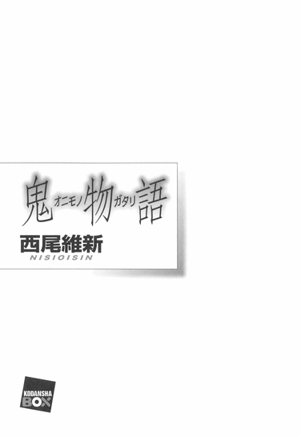
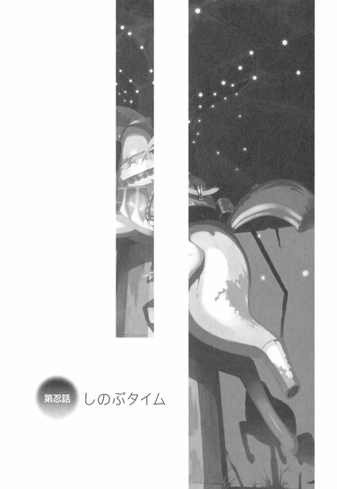
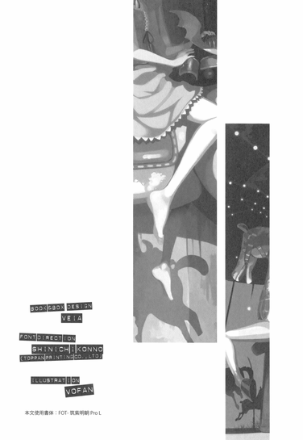
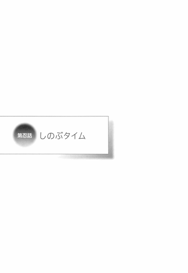

| [西尾維新] 物語シリーズ11 | |
| 西尾維新 | |
| (2015) | |
|
鬼物語
西尾維新
|
底本データ
一頁18行 一行23文字 段組２段





００１
忍野忍という名前は、僕達の間では既に十分に馴染んでいて、特段聞いて嬉しくなってしまうこともないし、逆に言えば、僕にとっては何の違和感もなく、胸にすとんと落ちるものである。元々あったキスショット・アセロラオリオン・ハートアンダーブレードという彼女の名前は、彼女にとってさえ、既に過去のものとなっているだろう。
過去。
昔。
終わったこと。
あるいは──なかったこと。
あったかどうかも、定かでないこと。
そんな風に、思い出と共に語られる何かであり、言ってしまえば今のあいつとは、何ら関係がなかったりする。
無関係。
言うまでもなく過去の自分なんてのは、ちょっとした他人よりもよっぽど他人であり、自己嫌悪とはまったく違う嫌悪を抱く対象だ──たとえば僕にしたって、春休みの僕、ゴールデンウィークの僕、階段を昇る僕、母の日の僕、自転車に乗る僕、授業中の僕、全部、別人だ。
別人で、他人で、知らない人だ。
責任逃れをしようってわけじゃあない。
ましてあの頃の自分を否定しようというわけじゃあない──あの頃の僕は、あの頃の僕で、とてもよくやっていたと思う。できる限りのことを、できる限りの全力で、やっていたように思う。
ただその全力は、今の僕が思う僕の全力とは違う──きっと今の僕なら、それぞれのときに、それぞれの信念に従って、違うことをするんだろう。
それにしたって、僕は結局吸血鬼を助け。
それにしたって、僕は結局猫に襲われ。
それにしたって、僕は結局戦場ヶ原を受け止めるんだろうけれど──それぞれのとき、それぞれの考えに従って、それらの行為に及ぶはずだ。
それが間違ったことであろうと、それが正しいことであろうと、そこに辿り着くまでの道筋は無限のようにある──その無限からどれを選ぶかは、究極的には、そのときどきの、言ってしまえば気まぐれに委ねるしかないのだろう。
忍が、今の忍であること。
違う忍ではない、今の忍であること。
伝説の吸血鬼──鉄血にして熱血にして冷血の吸血鬼、キスショット・アセロラオリオン・ハートアンダーブレードの名と姿を捨てて、今の忍であってくれることは──僕にとって何よりの救いであるその事実は、彼女の、そのときどきの気まぐれの産物と言えよう。
なんという嬉しい気まぐれだろう。
見た目は幼女のようだけれど、十八歳の子供である僕よりずっと年上、五世紀以上という長い人生を生きている彼女は、案外というか、割とその辺の気遣いがしっかりしているのかもしれない──否、気遣いならぬ、あくまで気まぐれなのだろうが。
そんな彼女の気まぐれが、四百年前どんな風に働いたかという話を、今回はしよう。四百年前、彼女がこの国でどういう目に遭ったのか、そして何をしたのか──そういう話だ。
忍野忍。
彼女の時系列を遡る話だ。
忍の時計を巻き戻す。
もちろんことはそれだけでは済まず、その過去は現代に繋がって来たり来なかったりするわけだが──例によって僕は助けたり助けられたり、何かしたり何もできなかったりするのだけれど、まあその辺は読んでもらって、色々思って欲しい。
僕、阿良々木暦も。
あいつのことを思いながら話そう。
００２
前回までのあらすじ。
僕、阿良々木暦は、パートナーの吸血鬼、忍野忍と共にありふれたタイムスリップを経験し、そして歴史を変えることに失敗し、すごすごと現代に帰ってきたのでした、終わり。
まあ詳しいことは前々々作の『傾物語』を参照して欲しい、と言いたいところだが、別に参照しなくてもいい。『言いたいところだが』とは言ったものの、言いたくない。正直なところ、僕としてはあんな失敗譚を参照しないで欲しい。どんな露悪趣味だって話だ。
しかし一応、あのタイムスリップには我ながら感動的な理由があって、それは十一年前に死んで幽霊となり、この町をさまよい続けていた友人、八九寺真宵を生き返らせよう、彼女がわずか十歳にしてその幼い命を、交通事故でなくしてしまうのを未然に防ごうとしての行為だったということは、僕の名誉のために（みみっちく）明かしておこうとも思う──まあ結局、すごすごと敗残して帰ってきてから彼女に直接訊いてみれば、
「別にわたしは生き返りたくなんかないですよ、無駄なことしましたね、一人よがりな阿良々木さん。きゃはっ！」
と言われてしまったので（そこまでは言われてない）、僕のやったことは、僕の高校生活最後の、貴重な夏休みの最終日（正確には二学期の始業式当日だが）を費やして行われた真夏の大冒険は、無意味で無意味でしょうがない、お前なんでそんなことに単行本一冊分の紙幅を費やしたんだよ馬鹿じゃねえのか死ねよああ半分吸血鬼で不死身だから死ねないんだっけ本当どうしようもねーな、みたいな感じなのだった。
だから読まないでね、傾物語！
絶対だぜ！
これは振りじゃないぞ！
......ともかく、そんなわけで、僕は今、その問題の幽霊少女、つーか一言で言って問題児、八九寺真宵と一緒に、てくてくと帰宅途中だった。
タイムスリップで歴史を変えることに失敗し現代に帰ってきたときには、既に始業式は始まっちゃっていて（ちなみに正確な現在時刻は、八月二十一日、月曜日の午後一時過ぎと言ったところだ）、あーあ新学期初日からサボっちゃった、そういえば夏休みの宿題には結局手をつけてないしな、これは戦場ヶ原と羽川に二回ずつ殺されるなー、わっくわくだぜ、みたいな感じで、僕の内心はハイテンションだったのだが（わーい）、それはともかく、僕は八九寺にリュックサックを返してやらなければならなかったのだ。
まあそれについての詳細は、ここで語るほどのことでもないし、タイムスリップを経験し、過去やら未来やらで八九寺が言うところの『無駄』な時間を費やしてきた（だから言ってない）僕にとってはもう、体感的にはかなり前のことになってしまうんだけれど、時間軸的にはつい昨日、八月二十日、幽霊少女八九寺が僕の部屋に遊びに来て、そしてリュックサックを忘れていったのだ。
詳しくは何を参照してもらえばいいんだっけ？えーっと、確か、『化物語アニメコンプリートガイドブック』だったか？
あの本の中にショートショートとして、そのときのエピソードが載っているような......いやでもちょっと待てよ、あれってアニメ版のほうのエピソードになるから、僕達的には平行世界での出来事になるのかな？
平行世界。
嫌な言葉だ......。
まあどちらにしても、あの本はもう世間に流通していないんだったか......、いやあ、厳しい業界なんだなあ、アニメ界。
結構ブームになったと思ったのに、あっという間に淘汰されちゃったぜ。
その回転の速さは、業界として健康的とも言えるが......まあともかくだ。
僕が過去を変えようと躍起になっていたとき、八九寺は僕の家からリュックサックを取り戻そうと、町中をうろうろしていたのだった。
別にそんなの、僕を探して半日近くうろついたりしなくとも、普通に帰宅時間を見計らって、家の前ででも僕の帰りを待っていてくれたらそれでよさそうなものなのに、と思ったが、問うて答えて八九寺いわく、
「阿良々木さんにリュックサックの中身を探られたらたまりません！探られるだけならまだしも、リュックサックの生地で、あんなことやこんなことをされたらと思うと吐き気がします！そんなことはしない？ええ、しないかもしれません。しかしされるだけの時間があったという事実が、既にわたしには許せないんですよ！」
とのこと。
まったく信頼されていない。
というか普通に嫌われていた。
まあ年端もいかない少女から蛇蝎のごとく嫌われるというレアな経験自体は、案外喜ばしいことであるかもしれないので僕としては甘受するにやぶさかではないのだが、それはそれとして、リュックサックは返してあげなければならない。
というわけで、僕はタイムスリップの現場である北白蛇神社から自宅に向かって、自転車を押しながら、八九寺と並んで歩いているのだった。
「......しかし八九寺、やっぱあれだな、リュックサックがないと、お前ってどこか、キャラが薄くなるよな」
「何を失礼なことを仰いますか、阿良々木さん。わたしのキャラはこのツインテールだけで十分でしょう」
「ツインテールねえ。だけどそれだけだと、キャラ付けとしては弱いよな......いいキャラっていうのは、シルエットだけで誰だかわかるようなデザインになってないと駄目らしいぜ」
「その論もいい加減古いと思いますけれどね......キャラクターはシルエットだけで誰だかわかるようにとか、物語には起承転結が必要だとか、そういうテンプレートが通用しない時代が、とっくの昔に来ていると思いますよ」
「相変わらずお前は既存の価値観に対し疑問を呈する女の子だな......」
「キャラクターデザインの善し悪しって言うのは、シルエットどうこうではなく、絵心のない人が真似て描いてもそのキャラだってわかるデザインのことを言うのだと思います。悟空とか、ピカチュウとかって、子供が描いてもわかるでしょう？」
「なるほどね」
「確かにリュックサックがないと、わたしはカタツムリではなくナメクジっぽくなりますが」
「......なんだっけ、忍野が言ってたんだっけ、羽川に教えてもらったんだっけ、忘れたけど......、そう言えばカタツムリとナメクジって、まあ同じもんっちゃ同じもんらしいんだよな。カタツムリから殻が退化したのがナメクジだとか......」
「しかし、貝類から貝が退化して、残るものがあるというのも不思議な感覚ですがねえ──鳥類が飛べないみたいなものというか、人間で言えば、『骨がなくなったけどまだ生きてるよ、元気だよ』みたいなものなんでしょうか？」
「うーん。まあ貝を外骨格と見做せばそうなんだろうけれど、しかし役割的には、どちらかと言えば皮膚じゃないのか？皮膚を無くして人が生きていけるのかどうかはわからないが......」
「ええ。確かにわかりませんね。骨を無くしても生きていくことができるのは、既に阿良々木さんが証明してくれてはいますけれど......」
「そうそう、骨なしチキンの僕が既に証明......してねえよ！」
「なんていうか、ヤドカリのイメージが強くありますから、カタツムリの殻って取れそうなんですよねえ。実際に取ったら、死んじゃいますけど。結構大事な中身が詰まっているそうですから」
「お前のリュックサックと同じか」
「いえ、わたしのリュックサックに、そこまで大事なものは入ってませんけどね......単に、自分の持ち物を阿良々木さんに預けているという現状が生理的に嫌なだけであって、別になくても困りません」
「............」
「八九寺真宵がナメクジ真宵になるだけの話です......あれ？このネタ、前に使いましたっけ？」
「僕はその場にいなかったからよく知らないけど、アニメの副音声で言ってたんじゃね？」
「しまりました。使い回してしまいました」
「まあメディアが違えば再利用もありだと思うけれど......、平行世界だし。しかしそのネタそのものは、どうだろう、お前のイメージがナメクジで定着してしまうから避けておいたほうがいいと思うんだが......」
「でも元がカタツムリですからねえ。大差ないですよ。羽川さんの猫とか、とても羨ましいです」
「ああ」
「阿良々木さんの鬼もですけど」
「......ああ」
「どうかされました？」
「いや、まあ......でもあれだろ、カタツムリって、子供の人気者だろ？ナメクジは嫌われ者だけど......、殻があるとないとで、大違いだ」
「最近はそうでもないらしいですよ。カタツムリって、寄生虫も多いですからね」
「寄生虫？」
「わたしで言えば阿良々木さんです」
「なるほどなるほど、お前で言えば僕か、っておい。誰がお前の寄生虫だ」
「ノリ突っ込み多いですね、今日の阿良々木さん。個人的にはノリ突っ込みって、活字だと恥ずかしい感じがします」
「ああでも聞いたことがあるな。なんだっけ、カタツムリの寄生虫......、レウコクロリディウムって言う、脳を乗っ取る系のおっそろしい奴......」
「名前の真ん中にロリが入ってるところが、阿良々木さんみたいですよね」
「しまった。自ら思わずキラーパスを出してしまった」
「持ってますねえ、阿良々木さん。多少頑張ってみれば、レウコクという部分も、冷酷と聞き違えることもできますからね。冷酷ロリディウム」
「最低じゃねえか。つーかそんなところで頑張るな」
「ディウムをどうにか面白くできないかどうかを、阿良々木さんと相談したいです」
「なんで僕が自分の悪口を、お前と一緒に考えなきゃなんねーんだよ......でもレウコクロリディウムって、だからマジで怖いタイプの寄生虫だろ？話聞くだけでもぞっとするような。そいつに寄生されたカタツムリは、自分から鳥に食われやすいところに移動して、目立つように触角を変形させてアピールするって言うじゃないか......、確かに僕はお前にとってロクな人間じゃないかもしれないけれど、しかしそんなのと一緒にされたくはないな」
「冗談ですって」
「わかってるけどよ」
そんな風に道中、八九寺とぺちゃくちゃ話しながら僕達は阿良々木家、つまり僕の自宅に帰り着いた。まあ八九寺との雑談は、始まってしまえば尽きることなくいつまでも続くのだが、あまりその会話の内容に意味があったことはない──が、しかし、今回のケースに限っては、案外例外だったかもしれない。
後から思えばだが。
カタツムリとナメクジの進化退化云々の話や、レウコクロリディウムという寄生虫の話は、ひょっとすると、今回の物語に関して、いささか皮肉を感じるほどに、暗示的だったかもしれない──いやまあ、暗示だなんだってのはいわゆるバーナム効果で、後からなら何とでも言えるものだが。
後から思えば。
この都合のいい言葉に、聞こえのいい言葉に、人類がどれだけ振り回されてきたかを思えば、僕の考えもいい加減妄想だ──思うことなんて後からしかできないし、そうじゃないとしたって、人はただ未来を思えばいいのだ。
タイムスリップを経験し。
僕はそれを十分に学んだはずである。
「じゃ、上がってけよ、八九寺」
「は？」
さりげなく誘ってみたものの、『何言ってんだこいつは？』みたいな顔をされてしまった。
「わたしが阿良々木さんの家に這入るのは、お通夜のときだけですよ？」
「そのショックな物言いに傷つきつつも、しかしどこかに、八九寺はお通夜には来てくれるんだという喜びを感じている僕もある......」
「......阿良々木さん、ちょっと会わない間に、変にポジティブになりましたね」
「まあ、ちょっとばかりありえない人生経験を積んできたからな......」
「とにかく家には這入りません。わたしが阿良々木さんの生前に、阿良々木家の敷居を跨ぐことは、もうないのです......、昨日が最後です、って言うか、そもそも昨日だって、半ば誘拐みたいなものでしたよね？」
「誘拐？ 人聞きの悪いことを言うな」
「本当のことじゃないですか。もう原本が手に入らないからと言って適当なことを言わないでください」
「別にそれが本当であることを否定はしていない。僕はただ、人聞きの悪いことを言うなと言っただけだ」
「勝手過ぎますね......とにかく」
八九寺は警戒心ばりばりの目で言った。
信頼感も信頼関係も何もない、怪訝そのものの目である。
そんな目で見られるとぞくぞくするぜ。
「ご両親も妹さん達もいないであろう阿良々木さんの家に這入るほど、わたしは女子として警戒心を失ってはいないのですよ」
「十歳の女の子が何を言ってんだ」
「生きてたら二十一歳ですけどねー」
「萎える発言をするなよ」
「わたしの実年齢で萎えないでください」
「割と今までそういう夢を壊すようなことは言わなかったのに、どうしていきなりそんながっかりなことを言うんだ？」
「いやほら、都条例とか施行されて、色々厳しくなってきたじゃないですか。これから先の展開を考えると、一応不肖このわたしは十八歳以上の合法だということを言っておかないと、あらぬ風評被害を受けてしまうかもしれませんし」
「合法って......でも確か都条例って、実年齢は関係ないんじゃなかったっけ？」
「でしたっけねー。子供だからよくわかりませんー」
「お前の立ち位置がよくわかんねーよ。子供なのか大人なのかどっちなんだよ」
「法律の上では大人ですが、肉体的には子供です」
「肉体がねーんだろ、だから...」
「真面目な話、都条例なんかあってもなくても同じだと、わたしは思いますけれどね。あれが可決する前から漫画界もアニメ業界も、自主規制の嵐じゃないですか。自由な創作活動ができなくなるとか言ってますけど、そんなもん事実上とっくにできなくなってるって言いますか。お金をくれる仕事相手の言いなりにはなるけれど、お上に規制されるのは嫌だって、かなりお寒いですよね──」
「いきなり真面目なことを言うなよ......」
「そんな中、せめてわたし達だけは自由でいたいものですよね！八九寺真宵、十歳でーす！パンツとか見せまーす！」
「奔放過ぎる！」
「あ、でもパンツくらいは問題ないんでしたっけ？確かドラえもんのしずかは、都条例には引っかからないと聞いたことがあります」
「まあさすがにドラえもんを規制はできないだろう......」
つーか、しずかちゃんをしずかって呼び捨てにすんな。何者なんだよ、どういう立場なんだよ、お前は。
「そうですねえ、ドラえもんは国民的漫画ですからねえ......、っていうか、下手すれば国際世論さえ敵に回しますからねえ。しかし阿良々木さん、こう言っちゃなんですけれど、ドラえもんって普通にエロいですよね」
「歴史に残る名作を変な視点で読むな！」
そりゃあ、そういう意味ではドラえもんのひみつ道具って、人間の欲望に忠実というか、悪用し放題だけどな......。
「男子小学生の八割は、ドラえもんで性に目覚めると思うのですが......そういう事実から、文部科学省はいつまで目を逸らし続けるのでしょうか」
「ちなみに、残りの二割の男子小学生は、何で性に目覚めるんだ？」
「サザエさんのワカメちゃんですかねえ」
「............」
国民的人気漫画の功罪について、色々考えさせられる会話ではあったが、とは言え男子小学生の残り二割が、若干マニアックな気がする。
ていうか嘘データだろ。
適当なことを言うな。
「じゃあ......ここでちょっと待ってろ。お前のリュック、すぐに取ってくるから」
「十秒。ダッシュ」
「横柄っ!?」
なぜか十歳の少女にパシらされた。
いや二十一歳の女性に、か？
どちらにせよぞくぞくする。
でも十一年の幽霊生活は八九寺にとって『積み重ならない』ものだったから、あいつ、二十一歳にはなれないんだけどな......。
それもまた。
タイムスリップで痛感した事実である。
歴史的事実。
僕は八九寺を新築されたばかりの門扉のところで待たせて、家の中に這入り、階段を昇って自分の部屋に八九寺のリュックサックを取りに行った。
一瞬、リュックサックの中身を石ころと入れ替えてやろうかという山羊のような悪戯心が芽生えかけたが、もちろん僕の部屋に石ころなんてあるはずもないので、諦めた。
一応、地の文で天地神明に誓っておくけれど、僕は昨日、八九寺がこのリュックサックを忘れていって以来、このリュックサックの中身には手を付けていない。
冷酷ロリディウムなどと言われてしまった僕ではあるが、少女の私物に手を付けるほど犯罪者めいてはいないのだ。
紳士である。
ジェントルマンである。
あまり長い時間八九寺を待たせておくわけにはいかないので、僕は部屋に腰を下ろすことも、コーヒータイムを過ごすこともなく、リュックサックを背負って、再び外に出た。
「あ！ ちょっと、触んないでくださいよ、人の荷物に！」
「無茶を言うなよ......」
「あーあ、クリーニングに出さなきゃ」
「なあ......、お前、さっきから僕のこと嫌い過ぎてねえか？」
「もういりませんよ、そんなリュック。捨てておいてください」
「いやだからこれがなかったらお前、ナメクジ真宵になっちゃうだろ？」
「なんでそうやって妙に押しつけようとするんですか。さては盗聴器でも仕掛けましたね。うっわ、阿良々木さん最低ー」
「疑われ過ぎだろ、僕......、もう面倒臭いから、お前が読めよ、傾物語。そうすれば僕の潔白が証明されるから」
「嫌ですよ、あんな高い本」
「高い本って言うな......」
「千三百円!? うっわー、それだけあったら、六百円の文庫本が一体何冊買えることか！」
「二冊だよ。高い本って、せめて厚い本って言ってくれよ。分量的には実はそんなに変わらないよ」
ふざけんな。
自分の副題がついてる本のマイナスプロモーションとかやめろよ。
「まあ本の定価問題も、こっから先変わっていくかもしれないですけどねー。再販制度もいい加減限界みたいですし、電子書籍の時代も刻一刻と近付いてきますし。黒船なんだか救助船なんだか、それとも私掠船なんだか」
「電子書籍ねえ......、でもあれって、漫画を読むには意外と適してたりするよな。黒の発色が異常にいいから」
「ああ。そりゃそうですね。雑誌とかだと、インクが薄かったりしますからね。うまい絵ほど、電子データで見たくなるものかもしれません」
「問題があるとすれば、電子書籍だと見開きが使えないってことだろうな。ケータイとかだと、一コマずつ表示したりするけど、やっぱ漫画の利点って、画面の大きさを自由に操作できるところにあるわけで......、まあその辺も、結局は慣れの問題なのかもしれないけどな」
「ほんの数十年前とか、コマ割りなんてすごく単純でしたからねえ。横長のが四つとか、そんな感じで。シンプルだったのは、絵もですけど。まあ色々、ルネッサンスの時代が訪れているということかもしれません」
「ルネッサンスだと、意味が温故知新になっちまうけどな......」
コマ割り問題的には、それであってるのかもしれないが......、でも、話を振ってみたものの、そっちのほうにはあまり造詣が深くないので知らないけれど、少女漫画くらいコマ割りが複雑な場合、ケータイではどう処理してるんだろうな？
見開きどころの騒ぎじゃないかも......。
「最近は漫画のネット連載も増えてきましたし」
「オンライン雑誌って奴か。まあそういう観点で見れば、漫画界の新人への門戸も、広くなったもんだよな。新雑誌も次々発刊されてるし」
その一方、既存の雑誌が次々廃刊、もとい休刊になっている事実には目を瞑るとして。
「これからの展開を考えれば、案外漫画家って、すっげー安定した職業なのかもしれないな。最近は長期連載も多いし、意外と潰しも利くし」
「それはいささか楽観的過ぎる気もしますけどね......、ただまあ、さっきコマ割りで、画面の大きさを調整できるのが漫画の利点だみたいな話も出ましたけれど、人気と体力が続く限り、一つのストーリーをいつまででも続けられるっていうのも、それはそれで漫画の利点ではありますよね」
「まあ、その辺、文化的に小説とはちょっと違うよな......」
発表形式の違いだと思うが。
漫画は雑誌連載のほうがメインで、小説は単行本がメインだから、性質的には小説は、漫画でいう読み切り形式みたいなものなのだ。
嫌でも区切りがついてしまう。
「シリーズが終了した振りを何度も何度もしつつ、さながらゾンビのように蘇り続け、いつまでもだらだらと続く連作小説もありますけどね！」
「やめろ。自虐的なことを言うのをやめろ」
「さておき、電子書籍は、値段の問題さえクリアできれば、一気に普及すると思います。みんながご飯を食べられる値段設定さえ可能になれば」
「ご飯ねえ......。この不況下、それができれば苦労がないと言う気もするけど」
「わざわざ手間をかけて便利な電子データにしてあげるんですから、むしろリアル書籍よりもお高い値段設定にしてもいいと思うんですけど」
「なんでそんな恩着せがましいんだよ」
殿様商売もいいところだ。
「付加価値を増やせばいいと思います。検索機能とか、伏線の部分にリンクを張って、すぐに戻れるようにしておくとか、いつでも登場人物紹介を参照できるようにしておくとか、声優さんが台詞を言ってくれるとか」
「いずれにしても、今僕達が持っている『本』のイメージからはかけ離れていく感じだなあ......」
時代から取り残されていくのを感じる。
まだ高校生なのに。
けどそういうのって、物心つく前から英才教育を受けてないと、そうそう受け入れられないって。携帯電話でさえ、僕は高校生になってから持ったから、あんまり慣れない感じだしな。
メールとか、いまだおっかなびっくりだぜ。
「いいじゃないですか、新たなる文化の発生期に自覚的に立ち会えるというのは幸運ですよ」
「そうかなあ。どうせなら、普及してからゆっくり楽しみたかったけどなあ」
それに、立ち会うも何も、幽霊のお前が言ってもという気はする──半分吸血鬼の僕が言ってもという気もするが。
「携帯電話の発生期に立ち会った人なんて、羨ましいですよー。着信音を和音で、自分で作曲してたりしたんですよー」
「羨ましいか、それ......？」
「今だと着うたダウンロードで一発ですからねえ......、ま、どの道いい機会じゃないですか？出版界にも革命が必要でしょう」
「革命ねえ......ただの自爆で終わらなければいいけれど」
少女と出版界の未来を色々と憂えてみたところで、腹も空いた。
いい時間である。
僕は吸血鬼ゆえに食事を、そこまで規則正しく取る必要はないのだけれど、さっきの話ではないが習慣というのはなかなか抜けないし、それに折角八九寺と一緒なのだ。
ランチタイムとしゃれ込むのも悪くあるまい。
「八九寺、何か食べたいものとかあるか？」
「食べたいものは色々ありますけれど、阿良々木さんと一緒に食べたいものならありません」
「......あれあれ？」
おかしいなあ。
僕、八九寺にこんなに嫌われてたっけ？
インターバルが開き過ぎて、心当たりがないけれど......。
そう言えば、こんな風にじっくりと八九寺と話すのって、ひょっとして『偽物語』とか以来？
だとすると本当に久し振りだぞ。
「まあ羽川さんとか神原さんとか千石さんとかに、クーデターを起こされて、語り部役を乗っ取られましたからねえ」
「いや待て、時系列的に、神原と千石のことを今の僕達が知ってるのはおかしいだろ」
「なんとも恐ろしい。まさか千石さんがあんなことになるなんて......」
「やめろ、それを今の僕が知っていたら、それこそタイムパラドックスが起きる。千石は僕にとって、可愛いだけの後輩なんだ」
「確かそれが問題だったような......」
「ところでお前は語り部になったりしないのか？」
「怪異そのものの存在は、語り部になれないというルールです」
「そんなルールがあったんだ...」
僕は自分の影を見下ろす。
そうか。
だから今回も......。
「冗談はさておき、何か食べたいものはないのか？奢ってやるぜ」
「はあ......でもわたしはこの通り幽霊ですので、阿良々木さん、もしもわたしとランチタイムということになれば、阿良々木さんは亡くなった娘さんの分まで料理を注文するご両親みたいな目で見られることになりますよ」
「別にいいよ、そんなの」
ん。
それはそれとして、でも、八九寺がリアルなご飯を食べた場合、その食べられた食事はどういう風に『現実』として処理されるんだ？
八九寺は、一般人には見えないけれど、八九寺が食べた料理は見えるわけだから......、内臓内の食べ物が宙に浮いて見えたりするのか？
いや違うよな。
そもそも八九寺が何かを持ったとして、それが浮いて見えるってわけでもないらしいし......、その辺は目撃した人間の脳が適当に処理してくれるのかもしれない。
本当に『適当に処理』されているのは、十一年前に亡くなっている八九寺という人間を『認識』している、僕の脳内情報のほうなのかもしれないけれど。
いずれ仮説の域を出ない怪異譚だ。
「まあ奢ってやるっつっても、金のない受験生の話だから、ファーストフードだけどな」
「ファーストフード......」
「不満なのかよ」
「いえ、ファーストクラスのフードだと思えば、不満はありません」
「勝手に思うな」
綴りが違うのだ。
受験生だからそれくらい知っている。
「じゃ、自転車に乗れよ。二人乗りだ」
「嫌です。阿良々木さんの後ろなんて......」
と。
どうやら現在、八九寺の中ではやっているらしい、『阿良々木さん嫌いプレイ』の返答が、またも返って来ようという、そのときだった。
早くも僕的には癖になり、今か今かと待ち構えていたその返答を、僕は最後まで聞くことはできなかった──なぜなら。
僕達は目撃してしまったからだ。
それを。
００３
『それ』とは何か、と言われると、謎である。
謎。
そう答えるしかない。
しかしそれは、僕......それに八九寺に、怪異的な知識がなかったからというわけではない。いや、もちろんそういうわけでもあるのだろうが......、それだけではなかった。
なぜなら、そもそも『それ』が怪異なのかどうかも、僕達には──少なくとも僕には、よくわからなかった。
『それ』が何なのか、同定できなかった。
だって、僕には『それ』が見えなかったのだから。
見えない存在を目撃したという表現も、なんだかそれ自体が矛盾しているような気がするけれど、しかしその表現がこの場合は一番的確だ。
なぜなら、見えないというのは、決して透明であるという意味ではない──たとえば、先述のように、幽霊少女である八九寺真宵の姿は、一般人には視認することはできないが（これは別に、死人ゆえに視認することができないという駄酒落ではない。うまくないし、不謹慎だし）、じゃあそれをもって、八九寺が『見えない』のかと言えば、実は一概にそうは言えない──だって視認できないということは、『見えない』という『認識』を、『認め』られないということなのだから。
見えないことに気付かない。
それは、換言すれば、いないということだ。
認識できないものは存在しない、少なくとも人間の脳の中では、そんな理論が成立する。
で、この場合──見えない『それ』を、僕は認識することができたのだ。見えないことを認識できた──だって。
だってそこには『くらやみ』があったのだから。
暗闇──暗黒と言い換えてもいい。
あるいはただの黒とも。
改めて言っておけば、今は真昼間である──しかも真夏の真昼間だ、空から太陽の光がさんさんと降り注いでいる。
じっとしていても汗ばんでしまいそうな、そんな天候──つまりは視界良好というしかない、そんな環境の中、いきなり現れたのだ。
その『くらやみ』は。
「.........」
一応......その現象を解釈しようとすれば。
視界と言うのは光の反射であり、光の波長であり、逆に光が反射しなければ、そこは黒く『表示』されるわけで──たとえば石炭は光の吸収率が高いから真っ黒に見えるとか、いや、ブラックホールでたとえたほうがわかりやすい、ブラックホールは、光さえも折り曲げて吸収してしまうから、目ではどうしたって観測することができないとか──ただの『くらやみ』がそこにあるように見えるとか。
ただ、ここは宇宙空間ではない。
ブラックホールなんて生じるはずもない。
大体、こんな近距離にブラックホールが生じて、僕が無事で済むはずがない──否。
否、だ。
たとえ『それ』が──この『くらやみ』がブラックホールでなかったとしても、ただの石炭のかたまりだったとしても、僕が、そして僕達が、無事で済むとは限らない──ず、と。
その『くらやみ』が、動いた気がした。
かすかに。
「..................っ！」
勘だった。
直感だった。
嫌な予感だった。
強いて言うなら経験則だが。
僕は即座に自転車に跨る──そして行動の速さで言ったら、八九寺も僕には負けていなかった、先ほどあれほど強固に拒みかけていた僕との自転車の二人乗りになってしまうというのに、彼女は一瞬で後ろの荷台へと飛び乗ったのだった。
「出してくださいっ！」
「わかってるよ！」
なぜか八九寺から指示を受けて、僕はペダルを回し始める──ひと踏み目から、もうトップスピードで、力の限り。
吸血鬼としての脚力を、できればここで発揮したかったのだけれど、しかし残念なことに真昼間ではそれも知れていた。
もっとも吸血鬼としての本気の脚力に、ただのママチャリが耐えられるはずもないので（たぶんチェーンが吹っ飛ぶ）、人間としての本気の立ち漕ぎくらいでちょうどいいのかもしれなかったが。
神原の奴にマウンテンバイクを破壊されて以来、いい加減このママチャリも乱用し過ぎている感もあるし──うん、いい加減、メンテナンスをしてあげないと。
「うおおおおおおおおおおおおおおおおっ！」
しかしそれは当然、メンテナンスができる未来があってこその話だった。
僕はとにかく全力でペダルを回す。
道路交通法的には、自転車にもスピード違反という概念はあるらしいのだけれど、そんなものは全力で無視した。
僕には法律よりも守らなければならないものがある、そう、たとえば自分の命とか。
そんな速度で歩道を走っていたら、通行人を轢いてしまう恐れがあったので車道に降り、更に僕はスピードを上げる。
「八九寺！」
「はいっ！」
「後方確認っ！ ついて来てるかっ、さっきの奴！」
「えーっと！」
後ろを振り向いたらしい八九寺。
やや間があって、
「なんか来てますっ！」
と叫んだ。
思えば八九寺との付き合いも結構長いけれど、基本的にこいつとは道端で雑談をするだけのことが多かったので、こんな風に取り乱す様子というのを見るのは初めてだった。
取り乱す八九寺なんて、精々あれだ、僕に襲撃されたときに見えるか見えないかだ。
「それってつまり、会うたびいつも見てるってことですよねーっ！」
こんなときにも律儀に突っ込んでくれる八九寺だった。
いい奴だ。
一生友達でいられそう。
「なんか来てるって......どんな感じに!?」
「えっと......いえ、気が付いたらそこにいる感じなんです......、近くにはいないんですけど、遠くもない感じで──」
「............？」
八九寺にしては、随分とあやふやな表現だ。
しかしそれも無理からぬ。
だって、あの『くらやみ』は見えないのだ──見えないということは、距離感が正確には計れないということでもある。
いや、距離感だけではない。
大きさ......いわゆる規模やスケールも、要するに何もわからないのだ。
その辺にいる......と言うか、その辺に『ある』ことしかわからない──だから周囲の風景から判断するしかないけれど、しかしそんなもの、角度を変えれば、すぐにずれてしまう。
まして今は自転車で高速移動中だ。
表現があやふやになるのも当然だった──しかし、とにかく、ついて来ている『らしい』というだけで、十分だった。
「よっしわかった！ もう確認しなくていい！」
僕は立ち漕ぎを止め、サドルに腰を下ろす。
単純な速度という点においては、立ち漕ぎのほうが速いのだけれど、しかし後ろに少女をひとり積んでいるとなると話は別だった。
「八九寺っ！ 僕の背中にしがみつけ！」
「嫌ですっ！」
「断るな馬鹿！ バランスが悪いんだよ！」
「ちっ！」
少女にあるまじき舌打ちと共に、八九寺は、恐らくは渋々、僕の背中にしがみついた。
これで重心が一体化して、結果的にはより速度を上げられる──というか、あのまま立ち漕ぎでぶっ飛ばしていたら、八九寺を振り落していたかもしれないしな。
「リュックサックも捨てたほうがいいでしょうか！」
「いや......」
本当のことを言えば、そうしてくれたほうがありがたいのは確かだった。幽霊少女八九寺に『重さ』があるのかどうかは、実のところ微妙というか、僕が勝手にその重みを感じているだけなのかもしれないけれど、存在していようといまいと、重いものは重いのだ。
つまり八九寺同様、八九寺のリュックサックからも、見た目通りの重量を受けるので、それを捨ててくれれば更なるスピードアップが望める──しかし、それは、しかし、だ。
「捨てなくていいっ！」
「でも......、あとで拾いにくればっ！」
「いいんだって！」
本人からの申し出だし、あとで拾いにくればいいというのもその通りで、八九寺の意見は実に筋が通っているのだが、しかしそれはなんとなく、得心しかねるものがあった。
そうすることで、むしろ速度が落ちそうな。
そんな気がした。
要するには気のせいだが、しかし僕はずっと、その気のせいに従って生きてきた。
「それより八九寺、もっとぎゅっと抱きついてろ、僕と一体化するくらいの気持ちで！」
「はいっ！」
「もっと胸を押し付けるように！」
「こ、こうですかっ！」
緊急事態ゆえにか、意を決してからの八九寺は、従順に従ってくれた。
小学五年生にしてはよく実った八九寺のボディが、僕に容赦なく押し付けられる──その喜びをエネルギーに、僕は更にペダルを漕ぐのだった。
「八九寺！ もっと回転させるようにだ！」
「は、はいっ！」
若干混乱状態にあると思われる八九寺は、言われるがままだった。
人生何があるかわからないものだ、八九寺の感触を背中いっぱいに感じられたり、わけのわからない『くらやみ』に追われたり。
ここでひとつ言い訳が必要かもしれない。
確かに突如出現した謎の『くらやみ』に対して、怯えのような感情を抱くのはわからなくもないが、だからと言ってそこまで徹底した逃走行動を取る必要があるのか？
そんな疑問を持つ向きもおられると思われるからだ。
正体不明とは言え、まだ危険なのかどうかもわからないような相手から、そうも必死こいて逃げる必要が、果たしてあるのか？
回答しよう。
ある！
徹底的に逃げる必要がある！
情けないと思うならばいくらでも思ってくれればいい、しかし、今までこうして、逃げるべきときにちゃんと逃げておかなかったがゆえに、どれだけ大変な目に遭ってきたことか！
百戦錬磨！
春休み以来、とにかく色んな『怪しげ』を目撃し、『怪しげ』と戦ってきた僕としては、今、百パーセント、何のまじりっけもなく正しい行動を取っていると断言できる！
今は逃げるときなのだ！
間違ってもあの『くらやみ』に対抗しようとなんてしてはいけない！
自分の身だけならまだしも、今僕は、八九寺真宵という小さな、そして大切な友人をも守らねばならないのだ！
......ん？
その小さな友人の感触を、どさくさにまざれて背中でたっぷりと堪能していることについての言い訳？
いや、そんなの別にないけど。
恥じるところは何もないですよ。
「阿良々木さん！」
「どうしたツインおっぱい！」
「追って来てます！」
「！」
もう振り向かなくていいと言ったにもかかわらず、どうやら八九寺は振り向いたらしい──背中の感触に特に変化は見受けられなかったので、おそらくはかなり無理な体勢で。
首を百八十度ねじるような形で。
想像すると超怖い。
「なんか近付いてきてるような......！」
「！ 距離感はつかめないはずじゃあ!?」
「い、いえ......そうなんですけど、距離感はありませんけど、圧迫感があるといいますか......」
「............！」
八九寺の証言が、よりわけがわからなくなってきた──こうなってしまったら、僕自身が振り向いて、その『くらやみ』を確認したほうがいいのかもしれなかったが......いや、それはやめたほうがいいのか......。
認識。
あの『くらやみ』が怪異なのだとすれば、認識することも大切だが、しかし怪異の認識には、それはそれでリスクも伴う。
結構多大な。
目撃するだけで呪われてしまうような怪異は実在する──『見られる』ことで『生じる』怪異。つまりあの『くらやみ』が、『目撃する』ことが発動条件の怪異だという可能性はあるのだ。
まあ、だとすれば、僕は既に『それ』を見てしまっているのだから、今更目を逸らしても仕方がないのかもしれないけれど。
今更、見越し入道を見越すような真似をしても、通じないかもしれないけど。
「八九寺！ いいからもう見るな！」
「で、でもでもっ！」
「おとなしく、僕の背中にキスしとけ！」
「は、はいっ！」
そんな、ロマンチックなんだか屈辱的なんだか、いまいち判然としない謎の要求にも従ってくれた八九寺だった。
さすがにこれは、単にシャツが唾液まみれになって気持ち悪いだけだったが。
「ふしゅー、ふしゅー、ふしゅー。べろっ、べろっ、べろっ......むぐっ、むぐっ」
「..................」
つーか怖えよ。
僕の背中、食ってんじゃねえよ。
そういえばカタツムリには一万本以上の歯があるというのを聞いたことがあるが......大丈夫か、僕の背中。
僕も別に人のことが言えるほどに強靭な精神を持っているわけではないが、八九寺真宵、どうにもメンタルが弱いようだった。
ここまで逆境に弱い奴も珍しい。
つーか、物語上のキャラとしては珍しいよな、『逆境に弱い』って......、それじゃあ一個も話になんねーじゃねーか。
なんか機転の利いたことしてくれよ。
普段の余裕ぶった態度は何なんだ。
「！」
と。
迂闊にも、僕はそこで見てしまった。
その『くらやみ』を──振り向いたわけではない。
しかし町というのは不思議なもので、割とあっちこっちに、鏡があったりするのだ──仮面ライダー龍騎が変身しやすいようになのかは知らないけれど、交差点とかに。
その鏡の中に。
うっかり見てしまった、『くらやみ』を。
見た瞬間、その『くらやみ』が増大したようだった──気のせいかもしれないけれど。
気のせい？
だったら──それがすべてだ。
「ぐっ」
と、僕は『くらやみ』そのものはもちろん、それが映り込んだ鏡からも逃げるように、自転車のハンドルを切った。
ほとんどスリップしたみたいな形で、そのまま倒れてしまうところだったが、かろうじてバランスを維持した──アスファルトで頬を削るような角度にまで傾いたのだけれど。
体感的には一七〇度くらい傾いた。
よく元に戻れたものだ。
「八九寺！ 無事か!?」
「触角が一本折れました！」
「大変なことじゃないのか、それ!?」
ていうか人間に触角なんて器官があったっけ？
言うなら肌が触角だけど、肌が折れるなんてことがあるか？
「間違いました！ ツインテールが一本ほどけました！」
「そうか......」
脅かすなあ。
「あと、ブラウスの肩のところが、ちょっとだけ破れました！」
「大丈夫なのか！」
「はい、服だけです......、ただ髪が片方解けて、服が破れたので、なんだかビジュアル的にはわたし、阿良々木さんに乱暴されて誘拐されてる最中みたいな絵面になってます！」
「それは大丈夫じゃないなあ！」
今後の僕の人生が大変だ。
どうなってしまうのだろう。
「......げ」
しかし更なる危機が、僕の前に差し迫っていた。
というか、正確には僕のほうが差し迫って行く。
無理矢理カーブしたその先に、なんと信号機があったのだ。
赤青黄色のあれである。
いや。
赤青黄色というか──赤だった。
「............っ！」
選択肢は、まあ二つ。
考えるのも馬鹿馬鹿しいが、二つ。
このまま突っ切るか、突っ切らないか、だ。
ハイスピードの中、周囲を見渡してみれば、辺りには歩行者もいなければクルマも走っていない。信号無視をして、このままブレーキを掛けず、真っ直ぐに突っ切ったとしても、何の事故にも繋がりそうにない。
ないのだが。
「......ちっ！」
僕は再び──ハンドルを切る。
赤信号。
八九寺を背中に感じた状態で──その信号を無視はできない。たとえ事故に繋がらなくっても、それは当然のことだった──十一年前、交通事故で死んだ、八九寺を背負っている以上は。
ただ、ここで僕は失敗をした。
いや、そのうち一つは失敗とは言い難い──だって、さすがにここでは、どうしたってブレーキをかけて減速しなければ、曲がり切ることはできなかっただろうから。
しかし問題はもう一つの失敗だ。
そう、うっかりしていた。
僕は車道に出ていたのだから──信号の意味合いが、普段とは違う。目の前の信号が赤だったのなら、右折だろうが左折だろうが、それは直進と同じで、禁止なのである。
赤は止まれ。
そのルールを守れなかった僕は──八九寺を背負った上で守れなかった僕には、容赦なく天罰が下ることになる。
００４
曲がった先、その正面に、あった。
その『くらやみ』が。
まるで落とし穴のように──最初からそこで待ち伏せしていた、落とし穴のように。
「..................っ！」
距離感がない。
というより、距離がなかったのかもしれない。
最初から──この現象には。
遠くにあろうと近くにあろうと、何ら関係なく、すぐそこにあるとでも言うのか──まずい！
今更方向転換もできない、だってハンドルを限界まで切ったその直後である。ひたすら、徹底的に逃げていたつもりが、何のことはない、最終的には自分からその『くらやみ』の中に突っ込むような形で、この鬼ごっこには終止符が打たれる。
自滅。自爆。
まるっきり無駄な逃避行。
わけのわからないものから、わけのわからないままに逃げて、わけのわからないまま追いつかれ、わけのわからないまま──終わる。
「ぐ──うっ」
だけど。
だけどせめて八九寺だけは──
「むぐっ、むぐっ、むぐっ」
相変わらず八九寺は僕の背中を食べていた。
僕が促したこととはいえ、最後の最後にこいつは何をやっているのだ。
シリアスな空気が台無しである。
だけどなんとか、文字通り僕に食らいついている八九寺を引きはがして、逃がさないと──逃がさないと！
この子だけはなんとしても──
「──『例外のほうが多い規則』」
と。
どこかから聞こえてきたそんな静かな、棒読みのような声と共に──吹っ飛ばされた。
待ち構えていたその『くらやみ』が、ではない。
僕が。
僕達が、である。
巨大なハンマーでぶっ飛ばされたような感覚だった──実際、起きた現象もそれと似たようなものだったのだろう。
『くらやみ』よりも、もっとはっきりした形の、あからさまに物理的な怪異現象。
気が付けば僕と八九寺は、反対車線にまで吹っ飛ばされていた。どうやら何らかの何かが起きて──僕と八九寺は、救われたらしい。
もっとも自転車だけは間に合わず、ママチャリは『くらやみ』の中に呑まれたらしかった──跡形もなく消えていた。
「............！」
ついに......。
何度となくあった危機を共に乗り越えてきたママチャリが、ついにこの世から消滅してしまった......、かなりショックだ。
凹み過ぎて死にそうだ。
明日から僕は何に乗って学校に行けばいいのだ。
「鬼のお兄ちゃん──こっちだよ」
不意に、そこにいたのは──斧乃木ちゃんだった。
斧乃木余接。
無表情な童女──やけにふりふりの可愛らしい、しかも視覚的にはかなり派手なファッションに身を包んではいるものの、その無表情さゆえに、すべてがちぐはぐである。
さながら人形が、無理をして人間の振りをしているかのようである。
しかしそれも無理のない話だった。
斧乃木ちゃんは人形ではないが、しかし人間でもない。
彼女は彼女で、怪異なのだ。
斧乃木余接という怪異なのだ。
とある暴力陰陽師の式神──
「え......？ あれ、斧乃木ちゃん......、どうしてきみがここに......」
「何言ってんの。昨日会ったところじゃない」
そうだっけ。
そうだった。
タイムスリップの影響で、その辺の記憶が現実とズレている──こういうのも、時差ボケって言うのだろうか？
『くらやみ』がいきなり現れたのと同様、斧乃木ちゃんもいきなり現れたのだったが──状況から判断すると、どうやら僕と八九寺は、この子に助けられたようである。
「あ、ありが──」
「礼を言うのはちょっと早い、かな......」
呟くように言う斧乃木ちゃん。
確かにその通りだった。
脅威である『くらやみ』はすぐそこに、道路の上に──別に消滅することもなく、はっきりとあり続けているのだから。
見えない『くらやみ』がそこにあり続けているというのも、いい加減おかしな表現ではあるのだが──それが現象なのだから仕方ない。
「鬼のお兄ちゃん......、何、あれ」
「え？」
斧乃木ちゃんからの質問に、僕のほうが却って当惑してしまった。
「なんだ、斧乃木ちゃん。きみはいきなり現れて、僕を助けてくれ、そしてすべてを説明してくれる役割の子ではないのか」
「そんな都合のいいことを一身に求められても困る、かも......」
斧乃木ちゃんは、無表情ではあったが、戸惑ったようにそう言った。
まあ戸惑うわな。
助けてもらえただけでも御の字だ。
忍野なら、人は一人で勝手に助かるだけとか言うのだろうけれど。
「八九寺は......」
八九寺は。
幽霊少女、八九寺真宵は、僕の胴体に腕を回し、ボディをしっかりクラッチしたまま、しかも僕の背中の肉にがっちり食らいついたままで、どうやら気絶しているようだった。
だからメンタル弱過ぎるって。
お前にはがっかりだよ。
「............」
無理矢理引き剥がす。
この後どういう行動を取るにしたって、その姿勢は、自転車の二人乗り以外にはまるで適さない。クラッチを切るほうはともかく、背中に噛みついているのを外すのが結構骨だった。
本当に一万本歯があるんじゃねえか、こいつ。
「......やれやれ」
と、斧乃木ちゃんは言う。
声に抑揚がないので、感情は読みづらい──なんだか、昔の戦場ヶ原にちょっと似てるんだよな、この子。
だから親近感を持ってしまう側面もある。
「うっかり助けてしまったけれど、こんなことなら放っておけばよかった、かな......。どうやら僕はよくわからないことに巻き込まれてしまったらしい。とんだハードラック、だよ」
そう言えば僕っ子だっけ、この子、なんて、時系列的には昨日会ったばかりの、しかし僕の体感時間的には結構久し振りに会ったばかりの斧乃木ちゃんに対して、僕は思う。
「こんなことなら放っておけばよかったとか言うなよ......、命は貴重だぜ」
「不死身の吸血鬼が言うよね」
と、斧乃木ちゃん。
「その女の子が、昨日言ってた幽霊かい？ リュックサック、背負ってるし......無事に返せたんだね、よかった」
「昨日......」
言ったのかな。
前のこと過ぎて覚えてない。
まあ、斧乃木ちゃん自身が怪異であり、しかも式神とは言え専門家と行動を共にすることが多い立場なのだから、当然と言えば当然だけど......見えるんだな。
斧乃木ちゃんには、八九寺が。
そして更に当然──『くらやみ』も。
「鬼のお兄ちゃん」
「何」
「どうしたい？」
「どうしたいって......」
「あれと」
斧乃木ちゃんは指差した。
人差し指で、道路の上の『くらやみ』を。
まるでこちらの様子を見ているかのように、向こうこそこちらを『目撃』しているかのように、動きもしない『くらやみ』を──指差した。
指差す。
それは斧乃木ちゃんにとって、既に攻撃動作である。
『例外のはうが多い規則』。
その発動条件は、指差すだけで満たされる。
その威力を──僕は身をもって知っている。
正確には身というか、半身のようなものだが。
「戦う？ それとも、逃げる？」
「逃げる」
即答した。
「戦うとか、そういうもんじゃねーだろ、あれは」
「だよね。僕もそう思う」
臆病だと嘲笑されるかもしれないと思ったが、しかし、斧乃木ちゃんはあっさりとその指を下ろした。まるで最初からそのつもりだったと言わんばかりに──やはりこの子は読めない。
かつての戦場ヶ原のように、読めない。
「じゃあ逃げるよ。鬼のお兄ちゃん、その子を抱えて」
「わかった」
「なるべく静かに、音を立てずにゆっくりとね。急に動いたら、あいつ、それに反応して襲い掛かってくるかもしれないし」
「............」
そんな動物みたいな、と思ったが、まあ、原始的な怪異とは、動物みたいなものなのかもしれない──怪異って大抵、動物モチーフだし。
しかし、あんな『くらやみ』そのものの動物なんて、この世にいるはずがないが......。
とにかく、斧乃木ちゃんに言われた通りに、僕は八九寺の身体をゆっくりと抱える。音を立てないように、首の下に手を通し、スカートの中身を確認して、両足を揃えて持って、胸の前に抱えた。
「......余計な動作が含まれていた気がしたけど」
「何を言う。スカートの中に怪異がいたらどうするんだ」
「知らねーよ、馬鹿」
乱暴な言葉で怒られた。
使役している陰陽師の影響なんだと思うけれど、結構キャラ付けに適当なところがあるんだよなこの子。
「じゃ」
と。
僕が八九寺を、いわゆるお姫様抱っこし、立ち上がったのとほとんど同時だった──斧乃木ちゃんが、僕の襟首をつかんだのは。
「『例外のほうが多い規則』──離脱版」
００５
正直に言うと、僕は斧乃木ちゃんが使う、なんというか、必殺技？結構頻繁に使うので、別に奥義とかではないのだと思うけれど......とにかく、その『例外のほうが多い規則』という技、スキルがどういうものなのか、そもそもどういう理屈なのか、よくわかっていない。
斧乃木ちゃんの正体は憑喪神だと聞いているが、しかも『死体』の憑喪神だと聞いているが（憑藻神だという話も）、それだってよくわかってはいないのだった。
攻撃力はよく知っている。
阿良々木家の玄関は、それで新調する羽目になったのだから、その攻撃力、いやさ破壊力は、折り紙つきどころの話ではない。だからこそなんとなく、斧乃木ちゃんはオフェンスに特化された式神なのだと、僕は思い込んでいた──しかし、こうして。
こうして無事に逃げてこられたところを見ると、案外、その考え方は間違っていたと言わざるを得ない、僕の勘違いだった。
思えば彼女を使役する立場にある陰陽師、即ち影縫余弦さんは、めちゃくちゃ攻撃型のファイターだった──だったらそのパートナーである斧乃木ちゃんが、オフェンスにのみ特化しているなんて、そんなバランスの悪い組み合わせがあるものか。
むしろ『例外のほうが多い規則』は、逃走のためのスキルなのかもしれなかった──僕があれだけ頑張って自転車を漕いでも逃げられなかった『くらやみ』から、文字通りの足手まといを二人抱えたままで、見事逃げ切ってみせたのだから。
実際にやったことと言えば、ただ両足で、思いっきりジャンプしただけに見えたんだけどな......。
「いや、それであってるよ、鬼のお兄ちゃん。離脱版なんて格好つけた言い方をしたけれど、単純に逃げただけだ」
「単純にって......」
「ただし立体的にね。平面的に逃げても意味がないのは鬼のお兄ちゃんが証明してくれてたから......、案外、上下の動きには対応できないんじゃないかと思って......どんぴしゃだったね」
「............」
なんだかうまく誤魔化されたような気がするけれど、まあ、結果として逃げ切れたのだから、それ以上のことはあるまい。
で──ちなみにどこに逃げてきたのかと言えば、以前、斧乃木ちゃん、それに彼女のご主人様である影縫さんと死闘を演じた、僕にとっては春休み以来とても思い出深い秘密基地のような場所、即ち例の学習塾跡の廃墟である。
その廃墟の四階。
三つある教室のうちの一つに、僕達は腰を落ち着けていた。廃墟で落ち着くというのもおかしな話かもしれないが......、まああの『くらやみ』から逃げ切れたのだから、ここで安堵しない理由はひとつもない。
八九寺は気絶したままである。
床にそのまま寝かすのはいくらなんでもあんまりな気がしたので、忍野がそうしていたように、その辺の机を合わせてベッドを作り、そこに横たえてやった。
八九寺は小学五年生にしては成長しているほうだが、それでもやっぱり小学生は小学生なので、机を三つも並べればそれで十分だった。
掛布団代わりに僕のシャツを掛けてやり、枕代わりに僕のジーンズを丸めたものを敷いてやった、お蔭で僕は今、トランクス一丁である。
うーむ。
八九寺の身体を慮っての行動を取ったつもりだったけれど、なんだか僕の変態性だけがアピールされている気がする......。
正直、この上、露出属性なんていらないんだけど......。
「鬼のお兄ちゃん、結構筋肉質だね」
斧乃木ちゃんが言った。
一息ついたところで。
「いい筋肉だ、うん」
「............」
「いい筋肉だね。鍛えてるんだね、いい筋肉だね。服の上からだとわかりにくかったけど、実にいい筋肉だ」
「............」
筋肉を褒められた......、いや別にこれは、鍛えているわけじゃなくって、単に、春休みの吸血鬼化の影響のひとつに過ぎないんだけどな......。
「ずっとその格好でいたらいいんじゃないかな。鬼のお兄ちゃんはもっと筋肉をアピールするべきだよ。素晴らしい細マッチョだと思う」
「筋肉の話は、いや、もういいんだけど......」
「まあまあ、そう言わずにちょっと、ポージングしてみようか、鬼のお兄ちゃん。僕に助けられたお礼にさ」
「恩着せがましいことを言いだしたぞ、この童女」
「もしもアブドミナルアンドサイのポーズを取ってくれるなら、僕の『例外のほうが多い規則』の秘密を教えてあげてもいい」
「結構大事な秘密だろ、それ!?」
滅茶苦茶だな、この子は。
その辺も戦場ヶ原っぽいのだが。
......もっともあの女は、僕の筋肉に対しては何の反応もしなかったが。ここまで食いつかれるのも困ったものだが、無反応というのも、それはそれで悲しいものがあるのだった。
「まあ、『例外のほうが多い規則』にも、興味がないでもないんだが......」
影縫さんの専門のことを思うと、あの人とはいずれまた、戦いにならないとも限らないしな......、今はどうやら、あの人はこの町には来ていなさそうだけれど。
「しかし、さしあたって今知りたいのは、あの『くらやみ』についてだぜ。斧乃木ちゃん、本当に何か心当たりはないのか？」
「だから知らないって......」
言いながら、斧乃木ちゃんは、僕の腹筋を触りにきた。そのさりげなさにうっかり見逃しそうになるが、これはあまりに堂々とした痴漢行為である。
「僕は鬼のお兄ちゃんの筋肉のこと以外何も知らないよ」
「お前が僕の筋肉の何を知ってるんだよ」
「何って......すべてさ」
無表情で断言されると、意外と説得力がある。
知られてしまっているのかもしれない。
ひょっとすると......いや、だから何をだよ。
僕の筋肉に秘密なんてねえよ。
「大体、鬼のお兄ちゃんのほうにこそ、心当たりはないのかい？......心当たりはあったりしないのかい？」
「思いついたように言い直しても、駄酒落としても言葉遊びとしても中途半端だぞ、斧乃木ちゃん......心当たりねえ」
あるっちゃある。
あり過ぎる。
人生のすべてが心当たりと言ってもいいくらいだ。
とは言え......、じゃあ具体的に何かと言われれば、これがとんと思いつかない。
怪異にはそれに相応しい理由がある──のは確かなのだろうけれど、しかし、ああいう理不尽な正体不明の『くらやみ』を、怪異と言っていいのかどうか、わからない。
理不尽、正体不明。
そして──原因不明。
「わかんねえ。僕は怪異の専門家ってわけじゃないんだしな......僕はあくまで、どこにでもいる吸血鬼もどきの高校生なんだから」
「どこにでもはいないと思うけど......」
「つーか、今まで相手にしてきた怪異を思い返してみても──」
吸血鬼。
猫。
蟹。
蝸牛。
猿。
蛇。
蜂に──鳥。
それに──死体か。
「──何か、違うんだよな。あんな抽象的な、『くらやみ』そのものみたいな怪異、見たことねえ。どういう怪異現象なんだ、あれ？」
そもそもこんな真昼間から怪異現象というのがおかしい気がする。いや別に、怪異は夜にしか──丑三つ時や逢魔が時にしか現れないというのも先入観だと言われればそれまでなのだが、しかしあそこまではっきりと......。
いや、はっきりとはしていないのか......見えてないんだから。
「『くらやみ』か」
斧乃木ちゃんは言う。
呟く......独り言のように。
「まあ、確かに『あれ』は『くらやみ』なんだろうけれど......」
「？ なんだよ」
「いや......何と言うか......、相手にしてるのが、本当に『くらやみ』ならいいんだけどね。『くらやみ』なら......」
斧乃木ちゃんは無表情のままだ。何も感じていない風でもあるし、ただ現在の状況をつまらなく思っているだけのようにも見える。
「どういう意味だ？ どう見たって、あれは『くらやみ』じゃねえか」
「だから見えないんだろう？あの黒い塊は、ただの怪異に付随する現象という可能性のほうがずっと高いよ」
「ああ、そういう意味......」
「ま、それを言い出したら、『相手にしている』のかどうかも、わかんないけどね。あれが鬼のお兄ちゃんを狙って現れたものだとは限らないわけで......、台風とか嵐とかの気象現象が、人間を狙っているとは限らないように」
「いや、でもあれは明らかに、僕と八九寺を追ってきていたぜ」
「そうなんだけどさ......」
どうにも煮え切らない態度の斧乃木ちゃんだった。
それについては本人も自覚的なようで、
「駄目だ」
と言う。
「鬼のお兄ちゃんの筋肉に見蕩れてしまって、どうにも考えがまとまらないや」
「考えがまとまらないのは仕方がないが、それならなんとかして他の理由を見つけろ」
「お姉ちゃんなら、何か知ってるかもしれないけれど......今僕は、お姉ちゃんとは連絡が取れないからなあ」
この場合、斧乃木ちゃんが言うところのお姉ちゃんとは、言うまでもなく、影縫余弦さんのことである──暴力陰陽師。
まあ専門家であり、同時に忍野の昔の知り合いであるところの彼女ならば、あの物体（かどうかも怪しい何か）について、知識を持っているかもしれない。
でも、持っていたとしてもな......、今は彼女と連絡が取れないという斧乃木ちゃんの言葉を聞いて、どちらかと言えば、ほっとしている自分がいるもんな。
まあたぶんそういうわけにはいかないのだろうけれど、しかし、できれば今後の人生、一生関わりたくないタイプの人なのだ。
「ちなみに影縫さんって、今どこで何をしてるんだ？たぶん、そっちも仕事なんだろう？」
「そりゃ仕事は仕事だけど、細かいことは秘密に決まってるじゃないか。何を探りを入れてるんだよ、図々しい」
「別に図々しいつもりで訊いた訳ではないが......」
社交辞令のつもりだったのだけれど、陰陽師界の守秘義務は思いのほか重いようだった。
「どうしても知りたいというんだったら、その筋肉を提供することだね」
「筋肉を提供するって、どういう状況だよ」
「えぐりとって、僕に食べさせるのさ」
「えぐいわ」
話がかみ合っているようで、かみ合っていない。
「......ま、影縫さんに連絡が取れなくても、別に問題はねーよ。どうせ、夜になったらすべてわかるわけだし」
「？ どうして？ 夜になったら鬼のお兄ちゃんはいきなり頭脳明晰になるとでもいうの？」
「そんな便利な機能は僕にはない......単に、忍が起きるってだけだ」
忍、という名を聞いて、斧乃木ちゃんは露骨に顔をしかめた。普段が無表情なだけに、顔をしかめたりすると、嫌悪感が必要以上ににじみ出る。
まあ仕方あるまい。
斧乃木ちゃんはその昔、まさしくこの学習塾跡で、忍に殺されかかったのだから──いや、殺されかかったというと語弊がある。
あのとき、忍は明らかに遊んでいた。
斧乃木ちゃんをいいように甚振っていただけなのだ──恨みも買うし、嫌われもする、当たり前のことだった。
とりあえず、斧乃木ちゃんの反応に気付かなかった振りをして、僕は話を続けた。
「忍はあれで、怪異の王だからな──怪異については詳しいはずだし、しかもその上、影縫さんと同じく専門家であるところの忍野メメから、数ヵ月間にわたる英才教育を受けてるからな。つまり、エキスパート以上のエキスパート。きっとあの『くらやみ』についても、何らかの知識を有しているはずなんだぜ。だから忍が起きたら、あの『くらやみ』の正体は判明するはずなんだ」
「......ケッ」
露骨に毒づく斧乃木ちゃん。
人間ができていない──怪異だから当たり前だけれど。そもそも斧乃木ちゃんの場合は、元人間なのだから、『怪異ができて』しまっていると言ったほうが、より正確なのかも。
「信用ならないね、あんな後期高齢者の知識なんて」
「忍のことを後期高齢者と呼ぶのをやめろ」
「起きたらって......つまりあの性悪女、今は寝ているっていうのかい？信じられないね......、自分の主人が死にかけてるっていうときに、まさか居眠りをしているだなんて」
「別に僕は忍の主人じゃないんだけど......」
しかしその辺の関係は、説明しづらいものがある。少なくとも影縫さんと、完璧な、いわば理路整然とした主従関係を形成している斧乃木ちゃんに、納得してもらえる形で説明するのは非常に難しい......最初からその努力を放棄しておいたほうが賢いというような気がした。
「？ なんだい、鬼のお兄ちゃんはあの吸血鬼の主人じゃないのかい？」
「いや、主人主人。主人過ぎて逆に主人じゃないくらい。あいつは僕に常に傅いているよ」
「............」
危険人物を見る目で見られた。
そりゃそうだ。
「しょうがないんだよ、あいつの居眠りについては......ちょっと最近、疲れる事件があったもんでな。今はたぶん、熟睡中だ」
「へえ。あんな吸血鬼でも、疲れるなんてことがあるんだ......、意外だね」
そりゃまあ、何度も何度もタイムスリップを繰り返せば、忍だって疲れる。それでも全盛期の忍だったなら、話は別なのかもしれないけれど......。
「たった半日の睡眠で、その疲れが全部取れるとは思わないけれど......、まあそれでも、忍さえ起きてくれれば万事解決だよ。あの『くらやみ』が果たして何だったとしてもな」
「過信は禁物だと思うけどね。あの吸血鬼がどんな英才教育を受けていたとしても、この世の怪異をすべて知り尽くしている奴なんて、一人もいないんだから」
お姉ちゃんや忍野メメを含めてもね──と、斧乃木ちゃんは言った。忍嫌いから出たやっかみのような意見という気もしたが、まあ、一理ある意見ではある。
怪異が人の認識から生まれる何かだと言うなら、つまりは無限に生まれ、生まれ続ける存在なわけだからな。
「確かに忍も、あの『くらやみ』がなんなのかを知っているとは限らない......でも斧乃木ちゃん、それでも別にいいっちゃいいんだよ」
「？ どうして」
「忍は怪異を食うからな──あの正体不明の正体がなんであったところで、丸呑みにしてくれるさ。とりあえずは緊急避難的に危機を脱して、あの『くらやみ』の謎なんて、後日羽川にでも訊いて教えてもらうさ」
「はねかわ？ それは誰？」
「なんでも知ってる奴」
なんだったら今、羽川に電話をかけて訊いてみるというのもありかもしれなかったけれど、しかし、始業式をブッチした身の上の者としては、若干それは憚られた。
『教えてあげるし、好きなだけ胸を触っていいから、もう話しかけないでくれるかな』
という羽川の返答が聞こえてくるようだった。
「どうかと思うけどね」
と、斧乃木ちゃんは言った。
僕の妄想のことかと思ったけど、違った。
「そんな風に、誰かに頼りっきりになるのは」
「......別に、頼りっきりになってるつもりはないけれど」
「支え合ってるとでも言うつもり？ 人という字は互いに支え合ってるというけどさ──でも、あなたは人じゃあないだろう、鬼のお兄ちゃん」
「............」
「もちろんあの吸血鬼もね......忠告しておいてあげるけれど、所詮、肝心なところで頼りになるのは自分だけだよ」
鬼のお兄ちゃんをついつい助けてしまった僕が言うのもなんだけどさ──と、斧乃木ちゃん。
まあ確かに、今日の僕は、斧乃木ちゃんがいなければどうなっていたかわからないわけなのだから、そんなことを言われても酷い自家撞着という気はするけれど。
「そもそも僕こと斧乃木余接はこんなところでこんなことをしている場合じゃないのだった」
いきなり説明口調になって、斧乃木ちゃんは立ち上がった。
「僕は仕事でこの町に来ているんだって、昨日言ったよね？」
「言ったっけ？」
だから覚えてないって。
あれから大変だったんだから......大袈裟でなく、マジで大変だったんだ。そう、その経験に比べれば、今の状況だって、きっとそんなには酷くないと言えるほどに......。
それを解決してから、まったく間を開けずに連続で今の状況に陥っていることを思えば、とんでもねえラッシュアワーだが。
僕が何をしたというのだろう。
色々したけれど。
タイムスリップのほうに関して言えば、完全に自分のほうから首を突っ込んでいるしな。
「しかし斧乃木ちゃんも忙しいんだな」
「当たり前だよ。僕は鬼のお兄ちゃんのように、学校に行って遊んでいればそれでいいなんて、極楽蜻蛉な身分とは違うのさ。働かなくては生きていけないんだ」
「別に僕は、学校に行って遊んでればそれでいい身分ではないんだけどな......」
「その学校にさえ今日は行かなかったんだろう？」
「まあ.........諸事情あって」
「事情なんて全員にあるよ。自分だけが被害者みたいな言い方をするんじゃない」
「......はい」
童女に怒られた。
しかし言葉もない、反論のしようもなかった。
ついでに言えば、トランクス一枚で座った姿勢で、童女に上からなじられるというこの状況はなかなか悪いものではなかった。
叱って叱ってー。
「......なんか気持ち悪い」
何か察したらしく、そう言って、斧乃木ちゃんは歩き出す。
横を通り過ぎるときに、ぐりぐりと、明らかに故意に僕の影を踏みにじっていった。当然、その影の中で忍がすやすや眠っていることを知った上での所業だろう。
根が深い......。
「じゃ、これで」
「これでって......なんだよ。帰っちゃうのか？」
「帰るというか......、仕事に戻るんだよ」
「一生僕に付き添って、僕の身を守ってくれるんじゃないのか？」
「どんな発想だよ......」
「冗談だ。一度でも、よく守ってくれたと思う。そう言えばお礼を言いそびれていたな、ありがとう。この恩は何らかの形で返すよ」
「筋肉で？」
「いや、筋肉以外の何かで......」
どうしてもと言うのなら、腹筋の一パックくらい挟り取って差し上げないでもないけれど......、吸血鬼体質ゆえに、どうせ後で回復するわけだし......、けどそれって、倫理的にも人道的にも、色々逸脱したやり取りという気がする。
一度踏み出したら二度と戻れないくらい。
そもそも回復したら、差し上げた筋肉は消滅しちゃうんだっけ。
「この恩は何らかの形で返すとか、この借りは必ず返すとか、そういう台詞を言う奴が、本当に何かを返してくれたことなんかないけどね......、そもそも、いつこの世から消えてしまうかわからない僕のような立場の者からすれば、恩やら貸しやらは、即返しが基本だよ」
「即返し......、じゃあ、何か、今すぐ僕にできることはないか？」
恩義を感じているのは本当なのだ。
思えば、あんな風に助けてもらっておきながら、斧乃木ちゃんが嫌っている忍の話を自慢げにしたりしたのは、礼を失したかもしれない。
それで機嫌を損ねて、いきなり帰るとか言い出したのかもしれない......、でないにしても、普通に仕事があるから帰るだけにしても（その仕事の内容とやらは、訊いてもどうせ教えてもらえないのだろう）、できる限りのことはしてあげたい。
「今すぐ鬼のお兄ちゃんにできることねえ。うーん、そうだなあ」
「まあ僕にできることなんて限られているけど、何でも言ってみてくれよ。言うだけでも」
「ふん」
と、なぜか斧乃木ちゃんは一歩、僕のほうに戻ってきた。
戻ってきて影を踏む。
......だからわざわざ影を踏むな......。
「鬼のお兄ちゃん」
「？」
「こっち向いてちゅっ」
唇を奪われた。
突然。
キスされた、なんて可愛らしいものではなく、本当に『奪われた』という感じだった。なんかこう、『気が付けば財布でもすられていた』みたいな、不意打ちだった──鮮やかな手品でも見せられたような気分だった。
ていうか被害者！
僕被害者！
「な、なにぬねのっ......」
何すんだ、と言おうとして舌がもつれた。
舌を噛まなかっただけ上等というものだ、ひょっとしたらこの舌さえも奪われていたかもしれないのだから！
「らりるれろ」
とぼけたように言う斧乃木ちゃん。
悪びれた様子も、照れた様子もない。
「あーあ。浮気した浮気したー。駄目な男だなあ、鬼のお兄ちゃんは」
「............!? !?」
何言ってんの、この子!?
無表情で何言ってんの!?
よくはわからないけれど、すげー怖いこと言われてるような！
「......まあ信頼関係とか、なんとか、そういうのって......、こうもたやすく壊れるものだってことを、教えてあげたかったのさ。恩を返してもらったと言うよりは、更に恩を着せてやったという感じかな......、随分な厚着だね、鬼のお兄ちゃん。でもまあ、ちょっとはすかっとしたか」
言って斧乃木ちゃんは僕に背を向けた、まるで興味を失ったおもちゃを、片付けもせずにそこに打ち捨てていくように。
どうやら『浮気』というのは、僕と戦場ヶ原の関係性について言ったわけではなく、僕と忍の関係性について言ったらしい。
要は忍に対する当てつけなのか......。
童女って怖い！
「じゃ、まあ頑張って生き残ってよね。ルールのわからない、このゲームを」
「......これはゲームなんかじゃねえよ」
「じゃあ何？」
そう言って斧乃木余接は、大して後ろ髪を引かれる様子もなく廃墟から去って行ったのだった。自分の仕事に戻って行ったのだった。
００６
童女との接吻行為についての釈明はなし。
まあ油断した僕が悪いですよ、普通に。
斧乃木ちゃんが言うところの『浮気』云々は、戦場ヶ原に対しても忍に対してもほとんど因縁みたいなものだとしても、これを彼女達に報告したものなのかどうかは微妙だが。
報告することが恋人同士、パートナー同士としての誠意という気もするけれど、それって単に、話して僕が楽になりたいだけというような気もするし......、罪（？）を告白することで、相手に『許す』という負担を強いるくらいだったら、僕の胸にしまっておいたほうがいいかもしれない。
証拠はないのだ！ それに僕は被害者なのだ！
......そういう言い方をすると、なんだか開き直っているだけのようにも聞こえてしまいそうだけれど......、ええい、なぜこの状況で、新たなる問題の火種を抱えなければならないのだ。
ああ、死にてー。
『くらやみ』に呑まれて死にてー。
というのは冗談にしてもだ。
「......ん？」
と、ここで僕は新たなる状況に気付く。
斧乃木ちゃんがこの場を去ったことで生まれた、更なる状況という奴に──戦慄！
なんと、僕と八九寺が二人っきりじゃないか！
しかも廃墟の一室という薄暗い空間に！
そして八九寺は意識を失っているのだ！
「............」
やべえ、俄然盛り上がってきたぜ！
僕は息をひそめ、机製のベッドの上で未だ目を覚まそうともしない逆境に弱いことが露見した少女、八九寺真宵のほうに目をやる。
「...八九寺が寝てるってことは、何をしてもいいってことだよな......」
危険な発言をしつつ、八九寺に近付く僕。
えーっと、口実はなんだ。
何を口実にすれば僕は八九寺に触っていい？
救命行為か？ そうだ！ そうだろ。
意識を長時間失っているという状態は危険かもしれない、デンジャーかもしれない、八九寺の目を覚まさせるために、僕は何かをしなければ！
明らかに『目を覚ますのはお前だ』というシチュエーションではあったが、しかし突っ込む者のいない密室において、僕の行動を止める要素は何一つないのだった──
「目を覚ますのはお前様じゃ、ボケ！」
突っ込まれた。
というか殴られた。
影の中から飛び出てきた金髪の幼女に、ぐーで殴られた。
「吸血鬼ぱんち！」
まるっきり無警戒のところにいいパンチが入ったので、僕はきりもみ状に回転しながらぶっ飛び、そのまま壁に激突した。
「ふんっ」
激突したところを更に下段蹴り。
幼女の裸足による下段蹴りである。
気持ちいい反面死ぬかと思った。
「な......、何をするんだ、忍！」
「それはこっちの台詞じゃ、アホか！ なんで儂がお前様の良心みたいな役割を負わねばならんのじゃ、うかうか寝てもおれんわ！大体気持ちいい反面ってなんじゃ！」
至極もっともなことを言われた。
人間の倫理や道徳から大きく逸脱した領域で生活する吸血鬼に、まさか真っ当な説教を受けることになろうとは......。
「すいません、ほんの出来心で......」
謝る僕、情けないことこの上ない。
「でもまだ、何もしてませんよ！」
「当たり前じゃ。しとったら、下段蹴りが金的に入っておるわ」
すさまじいことを言いつつ、忍は周辺を見渡すようにした──学習塾跡の教室の中に、僕と八九寺しかいなかったという、この危険な状況を確認した上で、
「はあ」
とため息をつく。
「危機一髪と言ったところのようじゃの。いいタイミングで目が覚めたようじゃ」
「いいタイミングねえ」
僕は窓の外に目をやる。ガラスの割れた窓から覗く外の景色は、まだまだ夕暮れには程遠く、太陽が照りつけているようだったが......。
「......お前実質、二時間くらいしか寝てないんじゃねえの？」
「どうも眠りが浅い。全然熟睡できんかった。まるっきり疲れが取れんかったわい」
こきこきと、首の骨を鳴らしながら、不機嫌そうに忍は言う。眠りが浅かったから機嫌が悪いのか、僕の愚行に呆れて機嫌が悪いのか、その辺は曖昧だが......、いや、普通に両方かな。
「何があったのじゃ？」
「え？」
「言っておろう──お前様と儂とは、精神的にペアリングされておるのじゃから、お前様の動揺は儂に伝達される。影の中に潜んでいるときであろうと、眠っているときであろうと、変わりなくの。お前様に何かあった、ゆえに儂の眠りが浅くなったとしか考えられんが......」
「ああ......それは」
あの『くらやみ』。
あれに追われたせいだ──間違いない。
感覚を共有していても（共有、正確に言うとそれは、僕から忍への一方通行なのだが）、記憶が共通しているわけではないので、その辺の事情までが伝わっているわけではないのだ。
ん？
いや、どうなんだ？
この様子からうかがう限り、忍があの『くらやみ』を『目撃』していないのは確かだ──が、その後のことについてはどうだ？
ていうか、具体的には、さっきの斧乃木ちゃんとの行為についてはどうだ？あの時点において、忍はまだ眠っていたのか？それとも既に起きていたのか......どっちだ？
斧乃木ちゃんが忍のことを嫌っているように、忍は忍で、斧乃木ちゃんのことを好ましからず思っているんだから、もしもあの時点で起きていたのなら、なんらかの邪魔をしそうなものだけれど......、でも、ぼんやりとした夢うつつの状態だったってこともありうるしなあ。
「ところでお前様」
「え......何かな？」
「儂に何か、言っておくことはないかの？」
..................。
え、何このプレッシャー。
気のせいかな？
罪悪感から、勝手にプレッシャーを感じてしまっているだけなのかな？
言っておくことはないかというのは、つまり普通に『僕の暴走を止めてくれてありがとう』という、お礼の要求というだけのことかもしれないじゃないか。
「ん？ どうした、お前様」
「えーっと......」
しかしわからん。
斧乃木ちゃんの無表情とは対極的に、今の忍は実に凄惨な笑みを浮かべているのだが......、笑顔は笑顔で、感情の読みにくい表情ではあるのだ。
ふむ。
ここはひとつカマを掛けてみるとするか。
こちらからうまく質問をして、忍が起きた時間を突き止めるのだ──と言っても、普通にカマをかけたんじゃあ、さすがに忍も引っかかってはくれないだろうからな。
ここは遠回しに行こう。
「なあ忍、お前の髪の長さって、そう言えば自由に調整できるんだよな？」
「お前様と式神童女とのキスシーンなら目撃したぞ」
「察しがよ過ぎる！」
迂回路を行こうとしたら、一直線にショートカットされて、がっしりと首根っこをつかまれた感じだった。
忍を見る。
にこにこしている。
牙を剥き出しに、にこにこしている。
「......あの、忍さん」
「お、謝罪か？ 謝罪か？ 楽しみじゃのう、どんな風に謝るんじゃろうなあ、この男は。生涯のパートナーであるこの儂をさしおいて、あんなよそ者の式神童女と行為に及んだことについて」
「............」
逆に腹が立ってくるなあ、こいつ。
明らかに面白がっている......見かけは今のところ八歳の幼女だけど、まあこいつって五百歳、どころか最近判明したところによると六百歳くらいの、熟女中の熟女みたいな吸血鬼だからなあ。
吸血鬼の平均年齢が二百歳くらいだと前に聞いたことがあるのだが、その基準で考えても、結構な人生経験だ（人ではないが）。
あれくらいの『浮気』は笑って流すというか、むしろネタにしてしまうほどの器の大きさを、案外持ち合わせているのかもしれない......だったらついでに八九寺との行為も見逃してくれればよかったのになあ。
まあ忍が大人になってくれると言うのなら、こっちも大人にならないと。
被害者だとか証拠がないとか変にゴネて今後忍と気まずくなるくらいだったら、さっさと謝ってしまおう。そして僕のパートナーはお前しかいないんだということを、ちゃんとわかってもらおうじゃないか。
「あの、忍。ごめん、僕が悪」
「まあそんなことはどうでもいいんじゃが」
出鼻をくじかれた。
ベストタイミングでくじかれた。
かなりいい台詞を考えていたのに！
「お前様がその辺の女と乳繰り合うくらいいつものことじゃしー」
「忍、お前は一生後悔するぜ......、僕の世界一美しい土下座を見損ねたことを」
「我があるじ様がパンツ一枚で土下座をする姿など、たとえどれだけ美しかろうと見たくないわい......、いつから起きておったのかという質問に今更ながら答えるならば、お前様があの憑喪神女と接吻を交わしたその瞬間じゃがな。まさにその瞬間じゃ。お前様の心臓がどっきんどっきん、さながら全力疾走でもしたかのように鼓動を速めたので、それにびっくりして目が覚めたのじゃ」
感覚を共有しているがゆえの、心臓バイブ機能じゃなあと、忍は笑った。
いやちょっと待てよ。
僕が童女とのキスにありえないほど、目が覚めるほどに動揺し、興奮したのだみたいな言い方するなよ。
なんか僕がすげー初心な奴みたいじゃん。
「ゆえに状況はほとんど理解できとらん。なんなんじゃ、この状況？ぱっと見る限り、お前様が少女と童女を誘拐してきて監禁していたけれど、童女のほうにはキスの不意をつかれて逃げられたというようにしか見えんが」
「どうしてそんな風に見えてしまうんだ。心が汚れてるぜ、忍」
「汚れておるのはお前様の手じゃと思うが......」
「まあ聞けよ」
斧乃木ちゃんの件で、これ以上突っ込んだ話をするのが精神的にキツかったというのもあるけれど、しかしそれ以上に、僕はあの『くらやみ』の正体を知りたかった。
たとえ忍が知らなかったとしても......、みたいな話を斧乃木ちゃんにはしたけれど、それはあくまでも消しきれない可能性というだけの話であって、たぶん忍は知っているはずだ。
ならば一刻も早く、知りたい。教えて欲しい。
『くらやみ』。
いきなり現れて、僕達を追いかけてくるようについてきて──突然先回りをして、僕の愛車を呑み込んだ、あの『くらやみ』。
おそらく、斧乃木ちゃんが僕と八九寺を自転車から突き落とさなかったとしたら、そのときには僕と八九寺も、諸共に呑み込まれていただろうことは想像に難くない──いや、想像の余地がない、はっきり言って、想像を絶する。
大体、僕のママチャリがあの『くらやみ』に、本当に呑み込まれたのかどうか、それが原因で消滅したのかどうかさえも定かではないのだ──僕はその瞬間を『目撃』したわけではない。
単純に自転車の進行方向にあの『くらやみ』があり、そして自転車がなくなってしまったという現象を、短絡的に繋げて考えているだけだ。
イメージ的に、あの『くらやみ』が、どうしてもブラックホールを連想させるので、自転車は吸い込まれたという風に思えてしまうけれど......、しかしそれさえも、厳密にははっきりしていない。
わからないことだらけなのである。
春休みのときも、ゴールデンウィークのときも、戦場ヶ原のことも八九寺のことも神原のことも、それ以降のあれこれもすべて、現象自体はとてもはっきりしていた──瀕死の吸血鬼がいるとか、町を跋扈する化け猫がいるとか、そんな風に。
しかし今回はその現象さえ、よくわからないのである。
怪異自体が、根本的によくわからないものの象徴だと言われてしまえばそれまでだが......、僕もその通りだと思うのだが、しかし、逆に言えば怪異とは、『よくわからないもの』が、『よくわかる形』で存在しているのではないだろうか？
だったらあの『くらやみ』は。
最初から怪異として──矛盾していることになる。
象徴のようであり、最も異端だ。
ただ黒いだけなんて──
「......まっくろくろすけでもあるまいに」
「うん？ なんじゃ？」
「いや、なんでもない......ジブリ映画の話はしていない」
「嘘をつけ。今となりのトトロの話を振ったじゃろう。言っとくが儂はトトロにはうるさいぞ」
「お願いします、話を逸らさないでください......」
まさか僕のほうからこんなお願いをする羽目になろうとは。
「なんじゃよ。全キャラの全台詞を、物真似でお送りしようと思ったのに」
「一時間半かかるじゃねえか」
「アニメ化の際、どう処理するかが見物じゃな。権利関係がややこしいぞ」
「心配しなくともこんなところまでアニメ化されないって......絶対にされないって。アニメは小説と違って予定通りに偽物語で完結だって」
「何い？ この劇場映画主演女優に対し、何と失礼なことを言うのじゃ」
「............」
劇場映画主演女優さまは、明らかに図に乗っていた。
アニメ一期じゃ一言も台詞なかった癖に......。
「楽しみじゃのう。儂が儂の記憶を探るために、頭に手を突っ込むシーンが、どんな風に映像化されるのか、本当に楽しみじゃ」
「確実にカットされるであろうシーンについて、いちいち触れるな。どんな前振りだよ。いいから僕の話を聞け」
「ふっ。お断りじゃ、愚か者。普段から散々いろんなおなごと雑談ばかりしておる癖に、いざ自分が話したいことがあるときだけ無駄話抜きで会話を進めようなどと、そんな調子の良い真似は天が許しても儂が許さん。このままアニメ傷物語のプロモーションを、およそ百五十ページにわたって行い、今回の話自体は箇条書きで済ませてしまうから精々覚悟──むぐっ!?」
キスで黙らせた。
背中に腕を回して引き寄せるように。
これはもう明らかに僕からしているので、画的に誤魔化しようがなかった。
「な、何をするんじゃお前様......、い、イタリア男か......」
「いいから聞け。僕の話を。大変なことがあったんだよ──いや、それが大変なことなのかどうかもよくわかんないんだが、聞いてくれ。お前の知恵が必要なんだ」
「ま、まあ、どうしてもと言うならの......」
金髪の前髪を手持無沙汰のようにいじりながら、赤面し、照れ気味のリアクションを取る忍、こういうところは可愛らしい。
六百年生きているとは思えない初心さである──さっきの器の大きさはどこに行ったのだ。
「聞いてやらんでもないぞ、話せ」
「タイムスリップから、お前と一緒にどうにかこうにか帰ってきて、あの山を下りた直後に、八九寺と会ったんだよ」
かなりペースを上げて話を進めたつもりだったが、それでも結構前置きが長くなってしまった。僕はしつこく眠り続ける八九寺（こいつこそ寝たふりしているだけじゃなかろうか）をちらりと見て、忍に説明を始める。
話すことで、自分でも整理できるはずだ。
整理できる何かが、この物語にあるのなら──だけれど。
「ほう。偶然にしては出来過ぎじゃな」
「いや、その台詞はまだ全然早いと思うんだけど......、まあ八九寺は昨日、僕の部屋にリュックサックを忘れていったから、それを取り返すために僕を探していたらしいんだが......、で、とりあえずはそのリュックサックを返してやるために、僕の家に二人で一緒に帰ったんだ。仲良く、仲良く、とても仲良くな」
「お前様、なぜそんなにも『仲良く』を強調するのじゃ......？」
「............」
今日の八九寺の発言が、妙に僕を嫌う傾向が強かったからだとは言うまい。自分のガラスハートぶりをパートナーに（これ以上）晒しても、僕にとっては一文の得にもならない。
「で、まあそこまでは特にトラブルもなく、普通にリュックサックを返してやったんだ......家の前で待たせていた八九寺に、僕はちゃんと、中身を少しも探っていないリュックサックを渡してやった」
「なんかお前様の話からは、いちいち後ろめたさを感じるのう。しょぼい軽犯罪者と話しておる気分じゃ」
「パートナーをしょぼい軽犯罪者呼ばわりすんな......えっと、どこまで話したっけ？」
「お前様がハチクジをなんとか家の中に連れ込もうと画策しておるところまでじゃ」
「そうそう、僕が今こそ手練手管を発揮しようとしたそのとき......、じゃねーよ。そんな話、一個もしてねーよ。僕は、年上の者が年下の者に当然そうするように、彼女の健全なる成長のために、優しく昼食を御馳走してやろうと、誘いをかけたんだよ」
「幽霊じゃから成長はせんがの。しかもファーストフードじゃがの」
なんでファーストフードだってわかるんだよ。どれだけ僕のことを読み切ってるんだよ。鋭過ぎるだろ。
「するとそのときだった、唐突に現れたんだ──『それ』が」
僕は声の調子を低くして、言った。
さすがの僕でも、ここから先を笑いを交じえて語ることはできなかった──突如、僕達のそばに出現した『くらやみ』。
瞬間の逃走。追走。
そしてたまたま通りかかった斧乃木ちゃんに救出され、最後に『例外のほうが多い規則』離脱版によってその場から離れるところまで──僕は一気呵成に、我ながら立て板に水のようにまくしたてたのだった。
話しているうちに整理できるはずという読みは、まあ予想通りというか、全く外れた。むしろ話せば話すほどに、僕は混乱してしまった。
なんか、よく考えたら、八九寺と揃って、慌てふためいて逃げるようなことだったのかどうかも怪しくなってきたというか......、今僕がするべきことは、まだ眠気が残っているだろう忍にわけのわからない話をすることではなく、家に帰って、戦場ヶ原と羽川に謝罪の電話をかけることではないのだろうか？そんな風にさえ思えて来た。
「......って話なんだけど、どうかな。まあ、心当たりがないなら心当たりがないで、全然いいんだけれど......」
だから僕は忍に対し、最後は自然、下手に出るような物言いになってしまった。いやもう、なんかちょっと、恥ずかしくすらある。
「............」
しかし──そんな僕の、ある種卑屈とも言える態度に対し、忍のほうは、むしろ真剣な表情だった。例の凄惨な笑みを浮かべていない。
と言うか、僕の話を聞けば聞くほど、『くらやみ』について語れば語るほどに、忍の表情は険しくなって行ったのだった。
最初は、それこそ僕の話を面白がっているような態度も見受けられたのだが......最後には、僕に対して怒っているようでもあった。
つまらん話を聞かせよってこのガキが、そんなもん怪異譚というより怪談じゃろうが、みたいな感想なのだろうか......。
まあ僕だって、寝ているところを起こされて、特に実害のない変な幻覚の話とかされたら、怒るだろうしなあ──
「つまらん話を聞かせよってこのガキが」
と。
思っていたら、思っていた通りの台詞を忍は言った──しかしそのニュアンスは、僕が思っていたのとは少し違った。
だいぶ違った。
「──お蔭で嫌なことを思い出したわい」
「え......？」
「いや......八つ当たりじゃな。お前様に何か責任があるわけでもない......むしろこれは儂の縁か。業とでも言うべきかもしれんが......となると、むしろ狙われたのは......」
ぶつぶつと、わけのわからないことを言う忍。考え込むような仕草......というか、何かを思い出そうとしているような仕草である。
もしも今の忍にそれが可能だったなら、それこそ例の記憶術、頭の中に手を突っ込んで、自分の脳を引っ掻き回していたかもしれない。
「なんだよ、忍......つまり、心当たりはあるってことなのか？」
「うん？ 心当たりな......、うむ、ある......いや、あると言っていいのかどうかは、不確かなのじゃが......」
煮え切らない言い方である──断言癖と言ってもいい、はきはきした物言いを売りにしている忍にしては珍しいことだ。
まあ、とは言えつい最近......、タイムスリップ先でのことではあるが、忍は似たように煮え切らない態度を取っていたこともあるのだが、しかしそのときと今回とでは、ケースが違う。
忍は今回、影の中で寝ていただけなのだから。
「なんだよ、忍。隠し事はなしって約束だろ？知ってることがあるなら教えてくれよ。そういう態度を取るってことは、心当たりがあるってことなんだろう？僕が言うところの『くらやみ』の正体を、お前は知ってるんだよな」
あれがどういう怪異なのか。
お前は知ってるんだよな──と。
僕は勢い、忍に詰め寄るようにして訊いてしまったが、しかし当の忍は、僕のそんな剣幕に驚くでも焦るでもなく、
「まあ」
と、曖昧な態度を取り続けるのだった。
「いや、知ってるかと言われれば、まあ知っておるのじゃが──」
ただ、忍の態度には、やはりどこか、怒り......、憤りのようなものを感じる。最初は僕に対して怒っているのかとも思ったが、そうではなく、もっと、漠然とした何かに、苛ついているような。
「ちっ......、面倒なことになった。これから先の展開を思うと、憂鬱そのものじゃ......、なんで大袈裟でなく世界を救った直後に、このようなトラブルに遭遇せねばならんのじゃ......しかしこれも、巡り合わせということか......」
「......いや、だから忍......」
「知らん」
と。
忍は、彼女の中で複雑に絡み合っていたであろうさまざまな感情の糸を、すべてまとめて切り離したように、いきなりすっきりとした顔で僕のほうを向いて、そう言った。
まるでさっきと逆のことを。
「え、でも......、さっき、知ってるかと言われれば、知っておるって言ったじゃねえか」
「そんな怪異は知らんという意味じゃよ、お前様」
「え？」
「お前様も既に半分気付いておるように、その『くらやみ』は怪異ではない──あのアロハ小僧も、きっと同じことを言うじゃろう。それは怪異ではないと──怪異なんかとは質が違う、と」
「............？」
いや......まあ、忍からのその返答、それはそれで、別段驚くようなことなどではないのかもしれない。僕自身、確かにあの『くらやみ』を、怪異かどうか、疑っていたのだから......もっと別の、何か違う現象ではないかとは思っていた。
だから驚くにはあたらない。
はずなのに──しかし、だからと言って、とてもではないが、
「なあんだ、そうだったのか。これで一安心だ、一件落着！」
とは言えそうにない。
大体忍のその言い方がおかしいじゃないか──怪異の王である忍の口から、怪異『なんか』とは質が違う──だなんて。
「やれやれ......困ったもんじゃ。というか呆れる。あんな馬鹿げた現象が──まだ終わっておらんかったとはな」
「終わってない......？ 終わってないって──」
「その現象には名前がない」
きっぱり。
普段の調子をようやく取り戻したのか、それとも単に、ようやく目が覚めたというだけのことなのか、忍は、きっぱりとそう言った。
断言した。
「お前様が『くらやみ』と呼ぶ『それ』を、儂はその昔、見たことがあるんじゃよ──思い出したというのは、そのことじゃ」
「思い出した......嫌なことを思い出したって、言ってたが......、なんだよ。その昔って、どれくらい昔のことだ？」
「四百年くらい前かの」
「四百年？ それって、確か──」
「そう」
忍は言った。
真顔で、神妙に言った──断定的な口調はともかく、そんな表情自体は、非常に珍しいものだった。
「前に儂が、この国を訪れたときじゃ」
「............」
「つまり──一人目の眷属を作った、そのときじゃ」
儂はそのとき。
あの『くらやみ』に巻き込まれたのじゃ──と、忍は言ったのだった。
「否──呑み込まれたと言うべきか」
「呑み──込まれ」
「みっともないことにな」
あの頃は儂も若かった。
と、幼女の姿で彼女は言う。
「ふん。大して懐かしくもないわい──そしてできれば話したくもないんじゃが、こうなってしまえばそういうわけにもいかんのじゃろうな。『あれ』が出現してしまった以上、放っておけば、最悪──この町のすべてが滅びる」
「ま──町っ......？」
そして始まる。
忍野忍──否。
鉄血にして熱血にして冷血の吸血鬼。
キスショット・アセロラオリオン・ハートアンダーブレードの昔語りが、四百年の時を越えて、今更のように。
００７
「さてと。あの頃のことを思い出すのも久し振りじゃわい。儂くらいの年齢になると、最早記憶は積み重ならんからの──その瞬間その瞬間を生きておると言えば聞こえはいいが、まあ、要するには刹那的で享楽的なのじゃな。
「楽しかったことだけを覚えていて、嫌だったことを忘れていく。
「じゃから不愉快な気分は否めんな──いきなり、すっかり忘れておった昔の出来事、それも思い出したくもない出来事を思い出してしまったのじゃからな。
「だからと言ってお前様を責めるつもりは毛頭ないから、そこは存分に安心しておけ──何と言えばよいのか、お前様にしては珍しく、今回は完全に巻き込まれておる。
「自ら首を突っ込んだのではなくな。
「もっともこれからする儂の話を聞いてしまえば、お前様はいつものごとく、自ら死地に赴くのじゃろうがの──儂はそれに付き合うことになるんじゃろうがの。
「少し長い話になるぞ。
「少なくとも、儂が劇場版の広告に使おうと思っておった紙幅の大半を費やさねばならんほどに──何、一向に構わん？言うことが冷たいのう、長き時を経て、ようやく訪れた儂の見せ場じゃと言うのに。
「ま、あの春休みの話も、思い出としては大概じゃがな。しかしあの思い出は、不愉快なアロハ小僧のお蔭で、バッドエンドなりに、きちんとまとまったからのう。
「くくく──あの頃の儂なら、しかし、あんなアロハ小僧に不覚を取ることはなかったじゃろうな、なにせ。
「なにせ、その頃の儂は全盛期じゃったのじゃから。
「今のような幼女状態ではなく。
「お前様好みのロリスタイルではなく。
「つるぺたでなく、ぼいんぼいんじゃったからのう──キスショット・アセロラオリオン・ハートアンダーブレード。
「鉄血にして熱血にして冷血の吸血鬼。
「伝説の吸血鬼、怪異の王。
「誰に縛られることもなく、誰の影に縛られることもなく、自由気ままに生きておったわい。
「自殺志願？
「いやいや、儂が自殺志願の吸血鬼になったのは、その後のことじゃのう──よくそんな初期設定を覚えておったな、お前様。これじゃから昔の話は照れると言うのじゃ。
「とは言え、厳密にはお前様にその頃の話をするのは、初めてではないな。一人目の眷属を作ったときの話は、一度、したことがあるはずじゃ。
「ざっくりとじゃがなあ。
「ほれ、春休み、この建物の屋上での。
「あのときはその顛末までは語らなかったが──つまり、お前様に何度か貸してやったこともある妖刀『心渡』を、儂がゲットしたのも、その頃のことなのじゃ。
「ま、話に入る前に少しだけ前置きというか、諸注意を述べておくことにするが......、お前様、つまり儂はこれから、一人目の眷属の話、一人目の眷属を作ったときの話をすることになるのじゃけれど......、嫉妬はせんようにな。
「いや、冗談ではない。
「それに笑い事ではない──儂にとってはな。
「まあ儂のような形の貞操観念を持った吸血鬼は珍しいのじゃろうが──眷属を作るというのは、一般的には種族の繁栄というか、いわば家族を作るようなもんじゃからのう。
「お前様との関係性のような複雑な、入り組んだものではなかったとはいえ、お前様にとってはまるで関係ない人物と儂が、たとえ一時的にであっても主従関係にあったというのは、お前様にとっては決して気持ちのいい話ではないじゃろう。
「というか、そうであって欲しいと儂が思っておるだけかもしれんが。
「先ほど、あの憑喪神の小娘とお前様が接吻しておったような『浮気』とは、やや質が違う──だって、当時の儂は当時の儂で真剣であり......、そう、お前様を眷属にしたのと同じくらい真剣な気持ちじゃったのじゃから。
「元より人間に戻してやるつもりで眷属にしたお前様よりも、下手すると真剣じゃったかもな。
「少なくとも、浮ついた気持ちなどはなかった。
「じゃからお前様。
「ちゃんとやきもちを焼くように。
「くだけた言い方をするなら、今のお前様から見れば、儂にとっての元彼と言うことになるんじゃからのう──儂の処女性を否定することになってしまって申し訳がないのじゃが。
「いや、ま、そこまで言うと冗談じゃがの。
「今更昔の話をしたところで、蒸し返したところで、儂とお前様との間にある信頼関係が揺らいだりはせんのはわかっておる。
「本当の諸注意は、じゃから、心して聞けと言うくらいのことじゃな──これはただの昔話ではない。今に通じる、今に繋がる物語なのじゃから。
「四百年か。
「儂の人生のおよそ大半というわけじゃが......、過ぎてしまえばあっという間じゃのう。
「一瞬のようじゃわい。
「記憶も曖昧じゃ、ついさっきまで、すっかり忘れておったことでもあるしな。
「さて、何から話したものかの。
「と言うか、どこから話せばよいのやら。
「そうじゃな、まずは経緯かの──儂がこの国、日本を訪れた経緯。もっともその当時は、この国は日本などとは呼ばれておらんかったのじゃろうが。
「あれじゃろ、日本という国名が成立したのは、ほんの何十年か前の話でしかないのじゃろう？その前は大日本帝国で......、その前は、なんじゃ？受験生なのじゃからわかるはずじゃろ。
「ああ、日本という呼称自体はもっと前からあったのか？ふうん......なんだかよくわからんの、日の本の国？由来か......。
「まあそもそも、当時の儂は今以上に、よくわかっておらんかったがの。よくも悪くも、わかっておらんかったかの。人間の文化など、何もわかっちゃおらんかった。
「大体、国名どころか、儂はこんなところにこんな列島があること自体、知らんかった。海水浴をするつもりで海に飛び込んだら、そこに陸地があって、びっくりしたものじゃ。
「そう、海水浴。
「いや、吸血鬼は海を渡れないとか、流れる水を飛び越えられないとか、そんな常識的なことを言われても儂は困るよ。
「儂の能力を『持って』、儂と『戦った』お前様が、誰よりもよく知っておろう、儂はそういうルールからは外れた、特別種の、貴重種の吸血鬼じゃということを。
「それに、当時は全盛期にして最盛期。
「最盛期にして再生期。
「もちろん、吸血鬼は吸血鬼じゃからの──太陽の光に弱いとか、大蒜やら十字架やらに弱いとか、そういう弱点めいたものは弱点めいたものとして、ちゃんと『設定』として儂にもあるのじゃが、しかし、その弱点をはるかに上回るほどの再生能力を、その頃の儂は持っておった。
「太陽の光で身体が灰と化すその端から、否、その前から、儂の肉体は回復しておった──もしもあの頃の儂を生物学的に細かく分類するならば、異常再生型の吸血鬼ということになるのじゃろうな。
「お前様が何度か苦しめられておる『毒』であろうと、当時の儂には通じなかったじゃろう。毒が効果を発揮する端から、そして前から、儂の機能は回復していくのじゃから。
「来日の以前、儂は南極におった。
「うん、南極じゃ。
「オーロラとか見たくての......、ああ、じゃから当時の儂は自殺志願ではなく、単純な旅行者じゃったからのう。
「世界中の名所を巡っておったのじゃ。
「世界中のヴァンパイア・ハンターに命を狙われながらな──いやいや、ドラマツルギーとかエピソードとかギロチンカッターどころの話ではなかったぞ、あの当時のハンター達は。
「マジでドン引きというか......人権意識とかガン無視の時代じゃからな。
「ほんの四百年で人間界も変わったものじゃ......あの頃は、不死身というだけで、別に吸血鬼じゃなくとも命を狙われておったからの。
「もっとも儂はそんなの、気にしたこともなかったがの──むしろ楽しんでさえおったがの。儂がそういう戦いに飽きるのは、嫌気が差すのは、もうちょっと先の話じゃ。
「自殺志願になるのはな。
「その頃は、マジでただ単純に、無邪気に純粋に、旅行を楽しんでおった──オーロラまじ綺麗じゃった。
「すごいぞオーロラ。
「ありゃあ生きとるうちに一度見ておいたほうがよい──まあ地球温暖化やら何やら世間では最近はやっておるが、どうせいつかは氷河期になるじゃろうし、その際には日本でも見えるじゃろうから、忘れんように。
「そこまでお前様が長生きできるのならの話じゃがの。たとえ不死身であろうと、早死にしそうじゃしなあ、お前様。
「しかし結果から言えば、失敗じゃった。
「いくら自由奔放な旅行人と言っても、オーロラが見たかったと言っても、儂は南極にだけは行くべきではなかった──正確に言うなら、北極にもじゃろうな。
「いや、別に寒いのが苦手というわけじゃあない。吸血鬼ゆえに、むしろ寒いほうが得意じゃと言えよう。
「不死身ということは、体温がないということでもあるしの......その辺を言いだすと、ゾンビやら幽霊やらとの絡みも説明せねばならんから、やや込み入ってくるが。
「問題はの、南極には人がおらんということじゃよ。言ってしまえば無人島じゃな。北極は正確には、土地ではなく氷が浮いているだけとも聞くが......まあ、お前様もそれはよくわかっていよう。
「怪異は人とは相容れないが。
「しかし人がいなければ成立しないものでもある。
「目撃証言、体験談なくして、怪異譚は成立しないのじゃ──ペンギンやシロクマ相手にいくら儂の不死身性、化物性を発揮したところで、連中がそれを話題にしてくれるわけではないからのう。
「都市伝説。
「街談巷説。
「道聴塗説。
「いずれ、人がいなければ成り立たんよ。
「凍え死ぬことはないにせよ、なんじゃろう、己の存在力が弱まっていくのを感じたからな──おおこれはまずいと、大ピンチじゃと、儂は思った。オーロラを見ている場合ではない、このままでは儂がオーロラになってしまう、とな。
「いや、意味はないよ。
「吸血鬼は死んだらオーロラになるとか、そんなロマンチックな伝承はない──まあオーロラを死んだ者達の魂であるとする伝説もあるらしいが、そんな伝説を語るものすら南極にはいなかった。
「今はおるのか？ 南極にも人間。南極観測隊か......、ほう。じゃあ儂はそのはしりというわけじゃな。何も発見しとらんし、何も観測しておらんが。ともあれ。
「このままでは儂という偉大なる存在が掻き消えてしまう、それは地球にとって損失じゃ、儂は太陽を倒すまで死ぬわけにはいかんのじゃと、慌てて儂は南極を脱出した。
「レバー入れ大ジャンプで脱出した。
「さしもの儂も、一度膝を曲げてしゃがまなければならなかったの。ん？憑喪神娘のジャンプ？ああ、そう言えばさっきそんなことを言っておったのう。
「『例外のほうが多い規則』離脱版。
「ふん、そんなもんとは比べ物にはならんよ。儂のジャンプは、はっきり言って、南極の大地を反動でぶっ壊さんばかりじゃったぞ。
「まあそこはそうならんよう気を遣ったが。
「ずっとはおれんでも、居心地はよかったので、別荘にするつもりじゃったからの、人に会いたくない時にはまたあそこに籠ろうと思って。その代わり着地点のことは何も考えておらんかった。
「でたらめに飛んだから、どうせ海に落ちると思っておったし。そのままひと泳ぎしてさっぱりしようと思っとったんじゃ。
「地表の七割は海なんじゃから、確率的には普通、海に落ちるはずじゃろう。でたらめと言っても、一応は目安として、太平洋のあたりを目指したつもりじゃったしのう──しかし。
「しかし、するとそこにあにはからんや、この国があったというわけじゃよ。
「ん？ なんじゃその顔は。
「いや、心配は無用じゃ、儂は別にこの国を踏み潰したりはしておらん。まともに着地しておれば、その可能性もあったかもしれんが、そこが儂の強運なところでの。
「湖に落ちた。
「その際、その湖は消滅したがの。
「無駄にスケールが大きい？ じゃから全盛期の頃の話じゃと言っておるじゃろう──お前様は、そう言えば儂の全盛期の姿を、ほとんど見てはおらんからのう。特に第一印象が悪かった。根本的にスケールは大きいんじゃよ、儂は。
「ただ、湖。
「儂がその湖に着水──いや、結局は湖底に両足をつけてしまったのじゃから、やはり着地と言うべきなのじゃろうが──し、その湖を消滅させてしまったところから、物語は始まる。
「ろくでもない、鬼の物語が」
００８
「いや、儂には既に物語の終わりがわかっておるから、つまり酷い結末を迎えることが儂にとっては自明じゃから、どうしても話すテンションが低くなってしまうけれど、しかしろくでもない物語とは言いつつ、別にすべてが嫌な思い出、すべてが思い出したくもないフラッシュバックというわけでは、決してない。
「まあ儂はこの通り、いい加減な性格じゃからの。
「いい加減と言うか、適当と言うか、場当たり的と言うかの、あまり物事を深く考えんと、適当に生きておった。
「儂が吸血鬼として特別に長生きしておるのも、そのためなんじゃろうが──深く物事を考えんと、とにかく享楽的に生きておったからの。
「それゆえに、それなりに楽しい思い出でもあったのじゃ──あの村での出来事は。
「村の名前は忘れたがな。
「いや、これに関しては忘れたというより、最初から覚える努力をしておらん──お前様もよくご存じの通り、吸血鬼としての儂は、人間社会の文化にはほとんど興味がなかったからの──すべてが同じようにしか見えてなく、区別をしようともしておらんかった。
「人種の区別もつかんかったくらいでの。
「なんじゃこの国の人間はみんなサイズがちっこいのう、くらいのことは思ったがな──今でこそ、育った男子も珍しくはないが、しかし四百年前は、みんなみんな、今のお前様と同じくらいの身長じゃったぞ。
「ふむ。
「ちゅーか、今は逆に儂がちっこくなっておるのじゃから、世の中わからんもんじゃのう──とにかく、話がわかりにくくなってしまうのは申し訳ないが、ここから先、村の名前とか人の名前とか、その辺の固有名詞は正確ではない。
「というか適当じゃ。
「感覚的じゃ。
「当てずっぽうでさえない──でたらめと言ってしまっても、あながち間違いではあるまい。そもそも儂が、『村』、『男』、『女』、『子供』、くらいにしか区別しておらんかったのじゃから。
「それさえ混じっておったかもしれん。
「ごちゃごちゃにの。
「儂が消滅させた湖にも、恐らくは何らかの名前がついておったのじゃろうが、覚えておらんのう......結構大きな湖じゃったのじゃが。
「そう言えば、琵琶湖という湖は、人ならぬ存在の足跡じゃという伝説があると、不愉快なアロハ小僧が言っておったけれど、儂の場合はそれとは逆じゃったわけじゃな──その足跡によって、湖を消滅させてしまったというのじゃから。
「とは言え、からくりがないでもない。
「からくりと言うか、儂がそんなスケールのでかいことをするにあたって、有利な条件とでも言うのかの──結構水量が少なくなっておったらしいのじゃよ、その頃、その湖は。
「日照りでの。
「ダムとかがない時代の話じゃからのう、地球温暖化......と言うか、日照り旱魃の被害は、結構深刻じゃったんじゃ。
「本当に生き死ににかかわるほどにな。
「恵まれた時代に生きておるお前様には理解しづらい話かもしれんが......、インフラという概念さえない頃の話じゃし──と、こんな風に、まるで当時の人間に対して同情的なことを言っておるような振りをしておるこの儂じゃが、もちろん当時の儂に、そんな概念はない。
「人間がいなければ怪異は存在できない、人間に目撃されることで初めて、怪異は怪異として成立するとは言っても、そんなもん、理屈の上での話──もっと言えば、ただの机上の空論に過ぎん。
「そのことをいちいち有難がったり、感謝したりはするはずもない──むしろ逆に、太陽の光が原因で弱って死んでいくなんて、まるで吸血鬼じゃのうと、げらげら笑いながら、そんな突っ込みを入れておったくらいじゃ。
「ブラックジョークじゃがな。
「が──期せずして、儂はそんな、か弱い人間達を助けてしまうこととなってしまったわけじゃ。どんな風に、じゃと？それはもう説明したつもりじゃったが......。
「湖を消滅させたと言ったじゃろう？
「だけど儂は別に爆弾ではない。
「体温はないという話もしたところじゃしな──儂の場合、再生機能が著しいので、体温がないというわけにもいかんのじゃが、それはさておき。
「つまり、どれほど勢いよく、マッハ何で着水したところで、たとえ干上がりかけておったとは言え、湖の水が消失してしまうようなことはないというのじゃ。
「それで蒸発してしまうようなことはの。
「ま、高速がゆえに、幾許かの高温は帯びておったかもしれんが、その高温も、儂が常温に『再生』させてしまうからの──着水・着地時には、儂の体温はごく常識的なものじゃったじゃろう。南極からの着水が、そもそも非常識じゃという話はさておくとしての。
「さておくとして──で、お前様、そうすると、どうなると思う？現象としてはつまり、深い水たまりに石礫を、真上から投げつけたようなものなのじゃが──いや、深く考える必要はない、普通に考えてくれればよい。
「そう、『水が跳ね上がる』じゃ。
「湖の水、ほとんどすべてがの。
「帯びる熱は殺せても、運動エネルギーまでは殺せんからの──さて、そして跳ね返った水がどうなるかと言えば、これまた至極普通の話、一旦は天高く舞うにしろ、ただ重力に従って地面へと落ちるだけじゃ。
「『雨』としてな。
「いや、雨でいいじゃろ──空から水が降ってくれば、それは雨じゃろ。大体、儂に気象現象のからくりなんぞ語れるはずがないじゃろうが。長生きしとるからって何でも知っとるわけじゃないんじゃ。儂にお婆ちゃんの知恵袋を期待するな、刹那的に生きてきたと言っておろうが。
「とにかく儂は『雨を降らせた』。
「これが笑えることにな──あの時代においては、ほとんど最上級と言ってもいいほどに、『徳の高い行為』じゃったのじゃよ。
「雨を降らせたくらいで何を大袈裟なと思うのじゃろうが、でなくとも徳の高い行為と言ってもお前様にはピンとこんかもしれんから、ここは親切にわかりやすく二文字で表現しておくと、そう、『奇跡』じゃな。
「命がけで雨乞いをする時代じゃからのう──日照り旱魃は、儂が着地したわけでもないのに地面を割るような強烈さじゃ。
「あの頃に比べれば、太陽も丸くなったもんじゃと、儂なんかは思うがの──地方にもよるが。まあお前様は、とりあえずその頃の時代背景だけはわかっておけ。
「儂はそんな時代背景、土地情勢じゃったところに──『雨を降らせた』。
「結果として、じゃが──儂は多くの命を、どころか、湖周辺の集落をまとめて、広範囲にわたって、救ってしまったわけじゃな。
「もちろんそれを誇るつもりはない、自慢する気はまったくない。儂にそんな意志はなかったのじゃからな。人間を救うことが偉大じゃとも思わん──それに一歩間違えば大惨事じゃった。
「湖からずれた地点に着地しておれば、たとえば集落のど真ん中にでも着地しておれば、舞い上がっておったのは湖の水ではなく、日照りに割れた地面そのものだったかもしれん。列島すべてとは言わずとも、村のふたつみっつ、引っ繰り返っておったじゃろう──大惨事じゃ。
「それを避けるために海を狙って飛び込んだというのもある......まあ人間の文化や生活には、基本的に何の興味も持たない儂ではあるが、だからと言って好んで大虐殺をしたいわけではないからの。避けられるものなら避けるよ、そりゃあ。
「避けられんかったら、避けんがの。
「そりゃ怪異じゃし。吸血鬼じゃしな。
「自殺や同族殺しがパンデミックの、退廃的な部族じゃぞ──当時と今では、人間の中でも倫理観が違うし、たぶん儂の中でも倫理観は違ったじゃろうな。無理じゃよ、四百年前と、同じキャラでい続けることなんぞ──特に儂の場合、今はお前様の影響を強く受けておるがゆえに、人間に対して多少の理解も示せるが、当時はのう。
「現代人で人間寄りのお前様にとってはいささか聞きづらい話であろうが、そういうことじゃ。とにかく儂は、何も周辺の村の救世主となるために、湖の水をひっくり返したわけではない。
「そこははっきりさせておこう。
「吸血鬼伝説ならぬ救世主伝説なんぞを語っても、何の意味もなかろう。そもそも、避けられるものなら避けると言いながら、実際は儂はそれに失敗したわけじゃし。
「湖がそこにあったのは、たまたまじゃしな。
「で、タイミングの悪いことに、そのたまたまの部分を目撃されてしまっての──いや、タイミングはいいと言うべきなのか？
「だって、儂は南極から、儂という怪異の『目撃者』を求めて、レバー入れ大ジャンプを決行したわけなのじゃから。
「むしろいきなり『目撃』してもらって大成功、『目撃』してもらって万々歳と言うべきなのじゃ──よりにもよって『奇跡』を起こしたその瞬間をな。
「いや、後のこと考えれば、やっぱりタイミングは悪かったのか.........最悪じゃったのか。
「ところでお前様。
「『奇跡』を起こした者が、人間どもから何と呼ばれるか、知っておるか？
「怪異であろうと、人であろうと、『奇跡』を起こしたものが、なんと呼ばれるか──およそ見当がつくじゃろう。
「そう。
「奇跡を起こした者は、『神』と呼ばれるのじゃよ。
「正確には──奇跡を起こした者は、怪異であろうと人であろうと、『神』にされてしまうのじゃ」
００９
「『神』にされてしまう......？」
僕は忍のその言葉を聞いて、思わず怪訝な反応を返してしまった──一つには忍の話が如何にも大袈裟に聞こえたからだし、もう一つには、そう、今僕達が抱えている『くらやみ』の件から、今の忍の話が随分と遠いように思えたからだ。
「馬鹿げたことを言っておるように聞こえるか？お前様」
「あ、いや......まあ」
図星を指され、僕は慌てる。
斧乃木ちゃんほどの無表情は極端にしても、僕はもうちょっと、感情を隠すすべを身に付けたほうがいいかもしれない。
見え見え過ぎる。
忍野じゃなくとも見透かせる。
「まあそうなんだけど......、あ、でもそう言えばお前、昔神にならんかと誘われたことがあったとかなんとか、言ってたよな」
確か春休み、出会った直後に、そんなことを言っていたような気がする。
僕を『吸血鬼』に『した』直後のことだ。
吸血鬼から人間に戻りたいという、僕の気持ちを受けて、忍は、その気持ちを『わかる』と言ったのだった。
自分もかつて、神にならないかと誘われたことがあったけれど、それは断ったから──僕の気持ちがわかるのだと。
だから僕を、人間に戻してやると。
「それが、そのときのことなのか？」
「まあそういうことじゃな......しかしこうして思い出してみると、実際には誘われたというより、半ば無理矢理、神にされたようなものじゃったのじゃが......、問答の余地なんぞなかったからのう」
「問答の余地がなかった......まあ目の前で、お前は確かに雨を降らしたわけだからなあ......百聞は一見に如かずって言うか......」
ん？
いや、でも問答って。
「話を進める前にひとつ確認しておきたいんだけど、忍。お前ってその頃、日本語を喋れたのか？つまり現地の人間と、お前が救い、お前を目撃した当時の日本人たちと、ちゃんと会話......っていうか、意思疎通ができたのか？」
「いや、できんよ」
「だよな」
それゆえに、か。
そもそも問答にならないのだ──忍は日本の存在を知らなかったくらいなのだから、日本語を知らなくても当たり前だ。
「だとすると、お前はそのときに、日本語を覚えたって感じなのか？」
そう言えば、そんなことも言っていたような気もする。
「うむ、たどたどしくな──もっとも全盛期の儂はお利口さんじゃったし、それに多くの人間に、『神』として『崇め奉られた』からの。それら人間の言語を習得するのに、それほど時間はかからんかった」
「そういうもんなのか......」
「そして今はお前様から、現代の日本語を学んでおるというわけじゃ。『萌え』とか『ツンデレ』とか『三つ編み巨乳委員長』とか」
「『三つ編み巨乳委員長』という語彙は忘れろ」
そんな言葉を教えた覚えはない。
間違っても羽川相手に使ってくれるな......大体あいつ、もう三つ編みじゃないし。
どんな髪型でも大好きだけどね！
「でも、半ば無理矢理『神』にされたというのも、お前らしくないな。たとえ言語が通じなくっても、そんなもん、レバー入れ大ジャンプで逃げればいいだけじゃねえか」
「逃げる？ 誰が？ 儂が？」
ふふん、と忍は不敵に笑った。
なぜパートナーに対し、そんな嫌な表情を浮かべることができるのかはなはだ不思議である。
「儂は誰にも背を向けんよ。吸血鬼として生まれてこの方、逃げたことなど一度もない」
「............」
どうだろう、結構あった気がするけど......。
ていうか、そもそもお前、生まれついての吸血鬼と言いつつも、実は元人間なんじゃなかったっけ？それもまた、『覚えていない』のだろうか......都合のいい記憶力だなあ。
長生きしてると、これだから。
「まあ別に、強引に誘われて、強引に断る理由もなかったからの──神扱いされてみるのもたまにはよかろうと思った......の、じやろう。当時の儂の心理を想像してみればな」
「ふうん......、しかし『神扱い』ねえ」
忍も言っていたが、時代背景や当時の事情がよくわからないので、どうにもぴんと来ない話ではある、どうしても。
僕の頭が平和過ぎるのか？
「雨を降らすことが、その時代では最も徳の高い奇跡だって話は、わかんねーでもねーけど......、でも、そんなことができる怪異って、他にもいそうだけれどな。えーっと、ほら、アメフラシとか」
「アメフラシは怪異ではないぞ......、ま、いき過ぎて大雨続きで水害になってしまったときには、まさに怪異扱いじゃったじゃろうがな。結局は状況次第ということじゃ、何事も」
「状況ね......、ああ、そう言えば聞いたことあるぜ。現代ではある程度は、天候を操ることができるって......、飛行機とかで雨雲を移動させて、無理矢理晴れさせたり、無理矢理曇らせたり、雨を降らせたり......、まあ遺伝子操作ほどでないにせよ、どこか人間の領域を超えた技術って気がするのは確かだ。それが『奇跡』って意味の、裏っかわかな」
「じゃの。遺伝子操作でどんな病もたちどころに治してしまう者が現れれば、それは文句なく、現代の『神』じゃろう──崇め奉られもしよう。それがいいことかどうかはわからんがの」
「？」
「信仰心の薄れた現代では、神殺しだってありうるという話じゃよ──ズバ抜けたスキルは、狙われる。スキルも、命も。否。神殺し自体は、何千年も前から世界各地で行われておることじゃったか。幸い、儂はそんな目には遭わなかったがの」
「遭わなかったのかよ」
意外だ。
バッドエンド、なんて言うから、てっきりそんな落ちが待ち構えているのだとばかり思っていたけれど──いや、それだと、忍の話に『くらやみ』が入り込む余地がなくなるのか。
やはり今の展開で、一体いつ、どの段階でその『くらやみ』の話が噛んでくるのか、予想もつかないけれど。
「なんじゃ、残念なのか、お前様。儂がその頃神殺しの憂き目に遭わなかったのが。酷い期待をする聴衆じゃの」
「いや、そういうわけじゃないが......」
「心配せんでも、話はちゃんと繋がるわい。うまく誤魔化して、なんとか映画の宣伝をしようとか思っておらん」
「思ってんじゃねえか」
「いや、まさかなあ。劇場版じゃとは聞いておったが、まさかの３Ｄとは意外じゃったなあ」
「ガセ情報を流すな......」
２Ｄだよ２Ｄ。
嘘をついてまで客を集めようとするな。
「委員長のおっぱいが、ああも飛び出すとは！」
「飛び出さん飛び出さん」
「いやでも、飛び出すかどうかはともかく、映画はテレビと違って規制が緩いはずじゃから、おっぱいも血しぶきも、描写し放題なのではないか？」
「............」
この幼女の中で、おっぱいと血しぶきが並列に語れるものであるらしいことが判明した。そら恐ろし。
「って、だからさりげなく映画の宣伝に入るな。そのまま話を続けろよ。お前の過去の話っつーか......、一人目の眷属の話をよ」
『くらやみ』云々についてももちろんなのだが、しかし、正直に言えば、一人目の眷属というのにも興味はあった。
それを嫉妬だとか、やきもちだとか言われるのは、なんだか見透かされているようで釈然としないものがあるけれど、しかし忍──というか、キスショット・アセロラオリオン・ハートアンダーブレードの『二人目の眷属』としては、そこは気にせざるを得ない。
どうしても。
「言われんでも続けるわい。まあ儂も、喋りながら思い出しておるところがあるし、やはり昔のことゆえに記憶が若干あやふやというか、細部までは思い出せんのじゃがな──」
「............」
頼りねえなあ。
頼むぜ忍さん。
「まず、もう少しだけ背景に説明を付け加えておこうか──時代背景というより、これは土地情勢のほうなのじゃが」
「土地情勢？ え、それってつまり、その辺り一帯が、旱魃の被害に遭っていたってことだろ？それならもうわかった──」
「いや、そうではなく、儂が消滅させた湖についての詳細じゃ。どうもその湖、琵琶湖のようにとはいかんでも、そもそも何らかの信仰の対象になっておったようでな。周辺の住民は、その湖を『神の湖』として、崇め、そして祈っておった。つまり、雨乞いをしておった。愚かと笑うことは容易そうじゃがな──いくら八百万の神々のおわす国と言えど、湖にまで神を見出し、その湖に雨乞いをするなんて。そんなことをするくらいじゃったら、湖の水を汲んで、ちまちま運べばよかったじゃろうに」
「............」
つーか。
信仰の対象になっている湖を消滅させたということは、他ならぬお前が神殺しをしちゃってんじゃねえかよ。
突っ込まないけど......。
「儂を目撃したというのは、じゃから雨乞いをしておった近隣住民じゃ──まあ連中にしてみれば、儂が湖の中から爆誕したように見えたじゃろう。湖の水が具現化して、儂が登場したようにな」
「......それに、まあこう言っちゃなんだけれど、当時の日本人にとって、いきなり金髪金眼、長身のお前が現れたら、それなりに神々しくは見えるだろうなあ......」
実際は神々しいのではなく、禍々しいのだが。
しかし実際、そのふたつの表現から受ける印象に、確たる差異などないのかもしれないが──僕だって、最初忍を『目撃』したときには、その美しさには見蕩れてしまったものなのだから。
自分の命を投げ出してもいいと思うほどに。
そういう意味じゃ、本当に怪異と神に、差なんてないんだろうな──戦場ヶ原に取り憑いていた例の蟹だって、神様の一形態だったっていうしな。
対照的な悪魔は......えっと。
神原の猿が、そうなんだっけ？
でもあの悪魔だって──願いを叶えてくれる、言うなれば『奇跡』を起こしてくれる、そんな猿だった。
神と悪魔は、ただの二面性という学説が、あったようななかったような......。
「ふん、褒めても何も出んぞ」
僕の言葉をどうやら褒め言葉と受け取ったらしく、そんなことを言う忍。なんだかとても、まんざらでもなさそうだ。
「いやまあ、別にお世辞やお追従を言ったつもりはないんだけれどな。特に当時の日本って外国人そのものが珍しかったはずだし」
「だから褒めても何も出んと言うのに、わからん奴じゃのう。いくら言っても、ポールダンスくらいしか披露してやらん」
「大サービスじゃねえのか、それ？」
まんざらじゃないどころか、大喜びらしい。
褒め言葉に弱い神......、信仰できねえなあ。
だがまあ、目の前で奇跡を起こし、神として顕現し、しかも結果として多くの人間の命を救ったというのなら──救われたというのなら。
忍を神にしてしまった、周辺住民の気持ちは、わからなくもない──しかし。
しかし......。
「けど、それ......絶対長続きしないよな」
「ん？ なぜじゃ」
「いや、お前の性格からしてよ──ただ崇め奉られるのをよしとするってタイプじゃねえだろ、お前は......」
傲慢で高慢で、高飛車で上から目線で、差別的で自分本位で、本当にどうしようもないくらいにどうしようもない奴ではあるが──しかしこの吸血鬼、どう考えても神扱いされることを楽しみ続けられる奴ではない──気がする。
それこそ刹那的に。
面白半分で、そういう立場に立ちたがることもあるんだろうが──でも、支配したり君臨したりすることに、興味があるとは思えないんだよな。
性格的に。
むろん、僕が知る、僕にとって親しみ深い忍の性格というのは、他ならぬ僕自身の影響が色濃く反映されているので、自然とそう思えてしまうだけであり、当時の忍の性格なんてわかるはずもないのだが──けれど、もしも忍が神扱いをよしとできるような性格だったら、六百年でたった二人などではなく、もっと多くの眷属を作っていたことだろう。
吸血鬼の階級社会を形成していたはずだ。
基本的に至高よりも孤高を好むのだ、こいつは。
そしておそらく、精神的に自分を神より高みに置いている──その誇り高さがあるからこそ、神なんて立場に、長居するとは思えない。
鬼であること。
それだけにこだわり続ける吸血鬼である。
「ん？ ああ、そうじゃろうそうじゃろう。そういう誇り高い奴なんじゃよ、儂は。他者からの称賛なんぞまったく求めておらん、そういう虚栄心とは無縁の存在なんじゃよ、いやーわかっとるではないか、お前様も」
「............」
褒め言葉に弱いというこのどうしようもない特性を考慮すると、前言を撤回しておいたほうがいいかもしれない。
「ま、確かに」
ひとしきり嬉しがったのちに、忍はようやく、話を再開する。してくれる。
「お前様の言う通り、そんな神様生活は長続きせんかったがの──およそ一年というところか。儂の性格がどうとかはともかく、儂が神様向きでないのは確かじゃったろうな──」
忍はそう言って、窓の外を見た──窓の外は、まだ青空である。怪異の気配、怪しげな気配なんてどこにもない。
八九寺真宵は。
僕達の脇で、まだ意識を取り戻さない。
０１０
「まあアホな連中が儂を神様と祭り上げたところに、調子よく乗っかって居ついたのは、休憩という意味合いもあった。
「南極暮らしが過酷じゃったからの。
「氷点下の極寒ブリザード──の上に、怪異として誰にも認識してもらえない時期が長かったからのう、全盛期とは言え、ちょっぴり、ほんのちょっぴりだけ、疲れておった。
「ちょっぴりじゃぞ？ 本当にちょっぴり。
「じゃから儂を『認識』できる人間どもがたっぷりおる場所で、のんびり休んでみるかという、言ってしまえば、気まぐれじゃな。儂らしい気まぐれじゃ──なにせ、神様扱いじゃ、寝床にも食い物にも困らんかったしな。
「ちょっとしたバカンスという感じじゃった。
「島国じゃし、今で言うハワイみたいな感じかのう、ハワイ──もっとも世界中を巡った儂も、ハワイには行ったことがないが。
「島国は、大ジャンプではなかなか辿り着けんのよ。的が大きな大陸でないと狙いがつけにくい。
「ん？ いやいや、食い物に困らんと言っても、現地の人間どもの血を吸ったりはしておらんよ。そんな顔をするでない、確かに儂は吸血鬼で、人間の血をエネルギーにする怪異じゃが、しかし自分になついてくる人間からエネルギーを摂取しようとは、思わんよ。
「緊急事態になればわからんがの。
「お前様だって、自分になついてくる牛とそうでない牛がおったら、後者の肉を食らうじゃろう？そういうことじゃよ。
「まあ当時のこの国には、いまだ生贄の制度もあったから、吸おうと思えばいくらでも血くらい吸えたろうがな──参考までに言うと、人身御供みたいな制度は、結構最近まで、この国にも残っておったらしいと聞いたぞ。
「誰からって、あのアロハ小僧からじゃが。
「あの小僧にこんな話はしておらんがの──儂がこの廃墟で膝を抱えておった頃には、そんな過去の打ち明け話をするような空気は一切なかったからのう。
「もっともあやつはあやつで儂のことを調べ尽くしてからこの町にやってきた節があるので、こちらから開示するまでもなく、案外知っておったかもしれんがの。
「文献などにあの辺の集落のことが残っておるのかどうかは怪しいが──儂の伝説の吸血鬼たる所以は、主に欧州での行為によるものじゃし、なんといっても、あのときの出来事を伝承する者は一人も残らんかったことじゃしな。
「うん、そういう落ちが待っておるのじゃ、この話には。
「覚悟して聞いておけ、出てくる登場人物、みんな死ぬから。
「日照り旱魃で死ぬことは避けられても、結局、みんな死んでしまったのじゃから、運命というのはやはりそうそう捻じ曲げられんものなのかもしれんのう──そう思いたくはないのじゃが。
「ま、当時の儂には、そんな価値観はなかったが──しかし誤解するなよ、お前様。儂はただただ、極東の島国においてバカンスを楽しんでおったわけではないぞ。
「ちゃんと『神様』としての仕事もしておった。
「雨というのは、一度降らせればいいというわけでもなかったからの──適当に間を置いて、雨を降らせてやった。
「湖は消滅したんじゃなかったっけ、じゃと？うむ、じゃから、その辺から雨雲を集めての。お前様がさっき言っておったようなやり方でじゃ......むろん飛行機など使っておらん、儂が自分の手で雨雲をかき集めてじゃ。おいおい、儂は翼も生やせることを忘れたか？
「もっとも、そんなことをしたら、よその地域が今度は旱魃日照りの憂き目にあってしまうのじゃがな──なるべく海の上から集めてきたつもりじゃったが、完璧とは行かんかったじゃろう。
「神様というのは、そういう意味では勝手なものじゃの──信じる者は救われるとか言って、信じる者しか救わないのじゃから。
「もっとも、そういう理屈を一応は説明してやったところで、あの人間どもは別段気にした風もなかったがの......信心深いように見えて、所詮、自分のことしか考えておらん普通の連中じゃったということじゃ。そういう利己的な人間も儂は嫌いではないのじゃが、どうじゃろうな、お前様には、ちょっときつい話かの？
「そういう、人間の業というか、生き物の業みたいな話は──いっそ怪異になってしまえば、楽なものじゃがなあ。
「あるいは神にか。
「まあ儂にもお前様にも、結論から言ってそんな決断はできんかったわけじゃが──えーっと、そうじゃな、少し飛ばすか。
「巻きでいくか。
「連中が儂を祭り上げるまでの経緯なんぞ、下手すれば本当にただの自慢話になってしまうからの。こんな風に褒められた、あんな風に尊敬された、みたいな話、聞いても面白くなかろう？まあもとより、面白い話などではないのじゃが。この話に面白い要素などないよ、あるとすれば、儂の若気の至りが、いささか滑稽過ぎたということだけじゃろう。笑いたければ笑え。
「そのうちどうせ笑えなくなる。
「......寝床にも不自由せんかったという話をしたが、儂の寝床は、正確に言うと、作った。なくなってしまった湖の、湖底にな──その湖そのものを、儂の土地として認定したわけじゃ。いわゆる神域としてな。
「いわゆる社を建てた。
「とてもゴージャスな建物をな。
「どこかの村に落ち着いて、人間どもと一緒に暮らすなんてわけにもいかんかったからな──それでは神の威厳を保てまい。
「ん？ そんな困窮した村に、社を建てさせることを要求するなんぞ、なんて酷い神様だ、じゃと──誤解するな、建てさせたりなんぞしておらん。
「自分で建てた。
「忘れたのか、儂の物質具現化能力──それも全盛期の儂じゃ、建物や、それに付随するガジェットなんぞ、すぐに作れたわい。あっという間に、あっと言わせるほど、すぐに作れた。そんなこと、別に疲れもせん。
「ちゅーかお前様、いい加減そのパンツ一枚の姿も見苦しいの。服を作ってやるからそれを着ろ。あんな筋肉マニアの憑喪神娘へのサービスを、いつまで継続しておるのじゃ。
「ふむ。いい感じじゃ。似合う似合う。
「劇場版アニメはそれで通せ......何？ 時系列が狂う？知るか、そんなこと。儂の前では時間なんぞ意味をなさん。お前様がそれを、つい最近体感したところじゃろうが。
「お前様の残念な私服を、銀幕で披露するくらいじゃったら、時系列くらい無視すればよかろう。この残念私服が。
「ともあれ、湖の底に、儂は快適な自宅を建築したわけじゃが、これがまた『奇跡』として認められてしまって、儂の神格はますます上がったのじゃ。うなぎ上りじゃったな。
「まあしたいようにさせておいた。
「起きたことの理屈を解明しようとせず、奇跡じゃ奇跡じゃと騒ぎ立てる連中は、放っておくのが一番じゃろう。
「わざわざ教化してやる必要もない。
「その意味ではお前様は立派じゃな、その『くらやみ』の正体を、こうしてちゃんと探ろうとしておるのじゃから──さすがあのアロハ小僧に、教化されただけのことはある。教化というより、強化かもしれんがの──もっとも。
「その理屈を理解できるとは限らないがの。
「こうして説明しておる儂にさえ、実のところ、その『くらやみ』の正体はわかっておらんのじゃから──儂は今、わからないものをわからないと説明しようとしておるだけなのじゃから、思ってみれば空しい話じゃ。
「そういう意味では無駄話、お前様がそこの娘とするような雑談と何も変わらんのじゃから、もうやめるか？結論だけさらっと述べて──冗談じゃよ。儂としても、ここまで話してやめるのでは、いささか座りが悪い。
「話を続けよう。
「あるいは意味のない話をの。
「したいようにさせておいた、とは言ったものの、ひとつだけ禁じておいたことがある。連中......というか、儂の信徒共にな。
「それは儂に『名前』をつけることじゃ。
「儂を名前で呼ぶことじゃ。
「それを儂は──禁じた。
「まあ、儂が固有名詞を覚えない、人の名前を呼ばない、ゆえにその村の名前でさえ知らんというのは既に言ったが──それは儂があやつらの中に、価値を見出しておらんかったからじゃ。
「十把一絡げの『人間』でしかなかった。
「『人間たち』という一個じゃな。
「しかし連中に儂の名を呼ばせなかったのは、それとは意味合いが違う──なにせ『神』じゃ、むしろ連中は儂の名を知りたがった。
「じゃが呼ばせなかった──キスショットという名も、アセロラオリオンという字も、ハートアンダーブレードという系も、儂は決して呼ばせなかった。
「と言うより、そもそも名乗らなかったし。
「そして連中に名付けもさせんかった。
「あのアロハ小僧が儂を『忍野忍』と名付けたのは、その名によって、儂の存在を縛ることじゃ。それもがんじがらめにな──あの当時、儂はそれだけは避けねばならんかった。
「名前をつけられては、その土地に縛られてしまうからの──あくまで儂にとって、神という称号は一時的なものであり、あの土地への滞在は、バカンスに過ぎん。
「縛られてたまるものか。
「神の振りはしても、神になる気など、儂にはなかった、あくまでも。
「ああ、そういう視点から見れば、連中の名前や、村の名前を儂が覚えなかったのも、案外同じ意味合いじゃったのかもしれんのう。名前で呼んでしまえば、愛着が生まれるからの。
「土地を離れられんようになってしまうかもしれんかったから──これは今思えばというだけのことであって、そんな理由をはっきりと意識しておったわけではないがの。
「考えてみれば、今でも儂は、あまり固有名詞を覚えておらんしな──はっきりフルネームを覚えておるのは、お前様と、お前様の妹御くらいのような気がするぞ。
「漢字で書けと言われたら、お前様のフルネームでさえ怪しい。『暦』という字と『歴』という字の区別が難しいからの。
「怒るな怒るな──ちゅうか、凹むな。
「どうせお前様だって、儂の旧名のほうを、アルファベットの綴りでは書けんじゃろうが──とにかく、儂を名前で呼ぶことを除いては、儂は連中にすべてを許しておった。
「じゃから、許すも何も、ほっといただけなんじゃがな。
「適当にごろごろして、適当に寝て起きて食べて、適当に雨を降らしてやって、たまに結婚を祝ってやったりしつつの。
「まあ快適と言えば快適じゃった。
「ミスタードーナツが当時のこの国にはなかったから、今から思えばそれが不満じゃったが、それ以外は概ね、いいバカンスじゃった。
「暇つぶし......というか、暇を堪能した。思う存分、好きなだけの。南極でちょっぴり疲れた分の回復を大人しく、大して暴れもせずに待っておったわけじゃが......、まあこれは無駄じゃったな。
「儂の再生能力は、厳密には回復能力とは違うからの──とは言え、そこで連中に『目撃』され続けておれば、そのうち存在力も回復するとばかり思っておったのじゃが、残念ながらそうは問屋がおろさんかった。
「なんとなれば、連中は儂を『吸血鬼』という怪異として『目撃』しておったわけではないのじゃから──回復するわけもない。
「それに気付くのに結構かかった。
「なんかリカバリが遅いのう、とか......そんなことを思いつつ、呑気に暮らしておった。ま、さしあたって、それで困るということもなかったのじゃがな。
「たとえそのまま誰にも『目撃』されることがなかったとしても──大事を取って移動したものの、たとえあのまま南極で暮らし続けたとしても、百年くらいは生き続けられたと思うぞ。
「というか──今から思えば、そうしておくべきじゃったのじゃろうな。儂としたことが、過敏に反応して、とりあえずは南極からは脱出すべきじゃと、焦ってしまったわけじゃ。
「そのお蔭で快適な神様暮らしができることになったのじゃから結果オーライ......と思っておったが、そうではなかった。全然違った。
「吸血鬼として『目撃』されないのならば、それはそれでよかったのじゃ──別に、それは差し迫った問題ではなかった。
「問題は『神』として『目撃』され続けたことじゃ──後から思えば、名前を呼ばせんくらいでは足らんかったわけじゃ。
「悪魔と遊べば悪魔になる──ならば。
「神と呼ばれれば神になる。
「それに気付かなかった儂は──いや、知りさえもしなかった儂は、本当に迂闊じゃった。
「さておき。
「お前様の勉強しとる歴史の教科書から判断すると、当時は幕藩体制と呼ばれる政治形態じゃったようじゃが、まあその辺のことはよく知らん。
「連中はどこかに年貢を納めたりしておったから、どこかの何かに支配されてはおったのじゃろうがな──神以外の何かにも仕えておったというのじゃから、考えてみればそれはそれで不実という気もする。
「まあ国の上層部が誰であろうと、末端のほうにはあまり関係ないというのは、今でも昔でも大して変わらんのじゃろうな。
「苦しい時代ではあったのじゃろうが、みんな適当に楽しそうに、幸せそうに生きてもおったしの──人間なんて、どんな過酷な状況でも幸せになれるし、どんな満たされた状況でも不幸になれるのかもしれんのう。
「その辺が、キャラ設定がはっきりしておる怪異との違いじゃ。
「いや──つまり、そのキャラ設定がこの頃はぶれておったわけじゃが......。
「今から思えば、神扱いなどを受け入れず、その地に吸血鬼伝説がないことを知った時点で、立ち去るべきじゃったのじゃろう。
「神様の振りなんぞを続けておったから罰が当たったのじゃと、単純に言ってしまうこともできるじゃろうがの──少なくとも、あやつはそう言っておった。
「あやつ。
「そう──一人目の眷属じゃ。
「つまりは妖刀『心渡』の持ち主じゃ、な。
「以前その男については、少しだけ語ったことがあったの──そのとき儂はなんと語った？戦士......武士。そう、そうじゃな。
「しかし時代背景の話をすれば、あの頃のこの国は、世界一平和な政治体制じゃったそうじゃからのう──これはお前様の教科書から得た知識ではなく、アロハ小僧が言っておったことじゃが。
「とにかく『戦う者』が、一番手持無沙汰じゃった時代だったわけじゃ。そういう意味では、あやつも儂同様の、暇人じゃったわけじゃな。
「武士というのは、立場だけの話じゃったとか、名誉職じゃったとか、なんとか......まあその辺の細かい話は、どうでもいいがの。
「大事なのはの、そんな時代背景においても、あの男は『武士』であり。
「『戦士』じゃったということなのじゃ。
「あの男は戦っとった──あんな平和な、ある意味今よりも平和じゃったあの時代においても、戦っとった。
「何と？ 人と戦わんというのならば、戦う相手は限られていよう。
「そう──怪異とじゃよ」
０１１
「怪異と戦う......、え、それってつまり、専門家ってことか？」
忍野メメ。貝木泥舟。影縫余弦。
妖怪変化のオーソリティ。
いや、違うのか。
あいつらはなんというか、怪異と『戦っていた』というイメージじゃあない──影縫さんに若干暴力的なイメージが強いけれど、しかしあくまでも彼らは『専門家』。
こちらとあちらの橋渡しをする──交渉人。
そういう立場の者だったはずだ。
『戦う』というのは何か違う。
とすると、むしろ──
「ヴァンパイア・ハンター──」
ドラマツルギー。
エピソード。ギロチンカッター。
ああいった連中のほうか。
「まあそうなのじゃろうな──もちろんあの時代にも、アロハ小僧のような交渉人もおったのじゃろうが、とりあえずそやつはそういうのとは違っておった。妖怪退治を生業とする由緒正しき一族の末裔──とか言っておったような、言っておらんかったような......」
「なんでそんな大事なポイントがあやふやなんだよ」
「仕方あるまい。記憶は摩耗する」
「摩耗って......」
いや。
さっきからの話しぶりを聞いていて、なんとなく思うんだけど、こいつ、思い出が美化されたりしないのか？
春休みの地獄もゴールデンウィークの悪夢も、僕にとっては嫌な思い出だが、それでも、いざ思い出してみようとすれば、それなりに美化されているものだけれど......。
なんかこいつ、記憶が変わってるというより、普通に忘れてる感じなんだよな。
頑張って、一週間前の夕飯のメニューを思い出そうとしているような話し振りだ......、たとえるなら、食中毒の原因を調べるために、これまでに食べたものを順番に思い出しているみたいな感じというか......。
まあ一週間前どころか、四百年も前のことなんだから、美化とか、そういうレベルの話では最早なくなっているのかもしれないけれど......それにしたって、だ。
「一人目の眷属との、大切なエピソードなんだろう？たとえ摩耗したところで、そこまで曖昧になるもんか？摩耗した部分を、勝手な思い込みで埋めたりしろよ。情緒的に。嫉妬しろとか言ってたけど、今のところ嫉妬の要素がゼロだぜ」
「そうかのう。ま、そう言われてみれば、お前様とは、だいぶんタイプの違う男じゃったし、状況も違ったから、重ね合わせるのは無理があるかもしれんのじゃけれど......、それに、これはお前様に気を遣って言うわけではないのじゃが、はっきり言っておくと、今となってしまえば、お前様ほど印象深い相手というわけでは、別にない」
「ん？ そうなのか？ でも、一人目だろ？」
「一人目の眷属じゃからと言って、二人目の眷属よりも印象深いとは限らんじゃろう......お前様は今現在、あのツンデレ娘と付き合っておるが、それをまるで初恋のように言っておるが、本当に厳密なことを言えば、園児のときとかに保母さんを好きになっておったりしておるはずじゃろう？それを『忘れて』おるだけで──の」
「............」
まあ、その理屈はわかるけども。
でも僕にとっての園児のときの話が、忍にとっての二百歳のときの話と一致するかと言えば、それは怪しいと思う。
いや、というか、本当に記憶の話ではなく、ただの印象の話なのだろうか？
恋の話にたとえて言うなら、そう、人間だれしも、初恋かどうかにかかわらず、今している恋を一番いい恋だと思い込む──思い込みたいというような心理......。
今話している打ち明け話は、忍にとっていい話でないのは確かなようだし──でも、違和感はどうしても残るよなあ。
そんなにどうでもいいものか？
忍にとっての、一人目の眷属というのは。
「背中を任せるに足る男、とか言ってなかったっけ？」
「言ったが、しかしその後のお前様を知ってしまうとのう。今思えばやや、あやつは背中を任せるには物足りん」
うーむ。
身も蓋もない。
忍は今でも後生大事に、その妖刀を腹に呑んで、持ち歩いているというのに──
「そう言えば、『怪異殺し』っていうお前の通り名も、元々はその、一人目の眷属の持っていた刀の通り名だったんじゃなかったっけ？」
「そうじゃな。妖怪退治の一族......に、代々受け継がれておった刀。怪異を昔から殺し続けた刀──それはそれで、神のように崇められていた刀じゃったじゃろうな。妖刀と言いはするものの、しかし神刀と言ったほうが現実に即してはいよう」
「神刀......」
「それを振るう人間は、神のごとき存在じゃったじゃろうしな──つまり、そやつはそやつで、現人神じゃったということかもしれん」
「......どうにも、ベール一枚かぶせて会話している感じが否めないな。そやつそやつって、さっきから言うけどよ......、そろそろここらで、その一人目の眷属って奴の名前を明かしてくれないか？でないと、そいつの顔が見えてこないよ」
「知らん」
「へえ、知らんとは変わった名前だな。でもその時代から考えれば、案外珍しくもないのか......って、え？」
「え、じゃないわ。じゃからさっきから繰り返し繰り返し言っておろう。儂は人間界の固有名詞は曖昧にしか記憶できんし、それに誰の名前も呼びもしとらんと。人の話を聞けよ」
「............」
いや......聞いていたけれど。
そして確かに、言っていたけれど。
でもそれにだって例外があるはず、というか......限度ってものがあるはずだろう？
さすがに、そんな重要人物、メインキャラクターの名前さえも憶えていないなんてことがあるはずないだろう......どんだけ適当に人生生きてんだよ、お前。
「儂はそやつのことをずっと『怪異殺し』と呼んでおったしの──儂が今そう呼ばれておるように。刀を持っておったから、他の人間と区別はつきやすかったし、専門家特有の空気もあったしの」
「......特徴的で、特異な存在であるがゆえに逆に区別が容易で、名前で呼ぶ必要が逆になかった......ってわけか......？」
理屈としてはわかるけれど......。
でもそれ、強引過ぎるだろう。
言い訳っぽいというか、いくらなんでも冷た過ぎるというか──冷血過ぎないか？
鉄血と熱血はどこに行った？
「あのなあ、じゃから勘違いするなよ。お前様は例外中の例外なんじゃって、儂にとって──お前様は五百年以上の儂の人生において唯一の、命の恩人なのじゃから」
「............」
「それに比べれば一人目の眷属にしたあの男なんぞ、ただの行きずりじゃよ。今から思えばの。それゆえに、お前様の嫉妬を誘えるかとも思ったが、その様子じゃと無理じゃったようじゃな──顔も見えん、名も知らん相手では、嫉妬のしようもないか」
「......思った以上に適当に生きてきてるんだな、お前......」
つーか。
そんな人生で、よく今まで生きて来れたな。
それだけ強い怪異だったということなのかもしれないが......。
「......じゃあ、便宜的にそいつのことは、『初代怪異殺し』とでも呼んでおくか......。一人目の眷属ってんじゃ、長過ぎるしな」
「文字数的には大して変わらんとも思うが」
「いいんだよ」
大して変わらんと言われればその通りなのだが、しかし『一人目の眷属』では、あまりに没個性的過ぎる。
怪異殺しというのも元が刀の名前なのであれば、そいつの個性にはならないのかもしれないが（僕で言えば、『学生服』とか呼ばれているのと同じかもしれない）、せめて後輩として、それだけのことはして差し上げたい。
嫉妬どころか、同情心が湧いてきている......。
どうなのかと思う。
「で、なんだ？ その初代怪異殺しの登場で、お前のニート生活に、多少の変化は生じるのか？」
「まあ、それなりにの」
「妖怪退治の専門家......ってことは、当然、お前を退治しに来たってことでいいんだよな？どこかからお前の噂を聞きつけて、お前をやっつけに現れたという──」
「否。違う違う──一度バトルにはなったが、しかしあやつは儂を、退治するためにやってきたわけではない。じゃって、考えてもみよ。聞きつけたというその噂の中において、儂は神として崇められておったのじゃから。退治すべき対象ではなかったのじゃよ」
「そう......なるのか？」
吸血鬼伝説そのものはなくとも、人の血を吸う怪異ならば、当時の日本にもいなくはなかっただろうから──専門家が見れば、忍が神などではなく、吸血鬼だということが露見しそうな気もするけれど。
「ああ、いや──眷属にしたってことは、どの道最終的にはバレたのか」
「そういうことじゃな──では、その辺りのことを切り取って話そうかの」
０１２
「まあじゃからそやつは、儂を退治しに来たわけではなく、とりあえず様子を見に来たわけじゃ。湖がひとつ消滅し、そこから神が顕現した......なんちゅう話を聞けば、それは『由緒正しき身』としては捨ててはおけんよな。
「それにしては来るのが少し遅かった気もするが......まあ、今のように情報の速い時代でもないからのう。移動手段も限られておるし。
「移動手段と言えば、そやつはそう言えば、駕籠に乗って現れたがの。
「お供をぞろぞろ引きつれてな──さながら大名行列のような有様じゃったぞ。まあ、大名行列の実物を、儂は見たことはないのじゃが。
「それでもあの部下の数。
「大名クラスに偉い男じゃったんじゃろうな。
「あれはあれで、眷属なのじゃろうし──ひょっとするとあの男、あのあたりの集落を実効支配しておる階級の者と、繋がっておる立場の者だったのかもしれんな。
「ひょっとすると、そのものだったのかも。
「村人たちも、やけにへこへこしておったしな──まあ人間同士のコミュニティ、上下関係なんぞ儂にはよくわからん。
「確かなのは、というより大事なのは、儂の仮の住まいに、そやつがやってきたということじゃ──人間がどれほどつるんで現れようが、儂にとっては何の脅威にもならんのじゃが、しかしそのときばかりは別じゃった。
「そやつにも脅威は感じておらん。
「専門家......、ハンターなのじゃから、感じることがあるはずだとお前様は思うかもしれんが、儂は年がら年中そういう連中を相手取って来ておったからのう。
「普通の人間とハンターとの区別なんかつかん。
「生き方が適当過ぎると言われても、それが儂なのじゃから仕方あるまい。それに、儂にとってはハンターと普通の人間を区別する必要なんぞないしな──似たようなもんじゃ。
「弱っておるときに会ったアロハ小僧や、幼女化してから会ったカイキやカゲヌイは、そりゃあ印象深いがの。
「そういうもんじゃ、悪く思うな。
「とは言え、目が覚めた。そいつらの来訪で、儂は目が覚めた──それまで社の中で寝ておったというわけではないぞ。
「久々に意識が目覚めたということじゃ。
「神様としてぬるい生活をしておったところに、いい刺激が現れたということじゃ。いや、じゃからそやつが──あるいはその集団が、儂にとって刺激じゃったという意味ではない。
「刀じゃ。
「そやつが持っておった──腰にぶら下げておった刀。『佩いておる』とでも言うのか？その辺の区別はわからんが──
「とにかく。
「駕籠から降りたその男が持っていた、大小二本の刀──それに儂は引きつけられた。
「まあ男の腰元に意識を引きつけられたというのは、若干下品かもしれんがの。異性の腰つきが好きというのは、お前様と共通ということになり、ふむ、そういう意味では最初から儂とお前様は、古来より繋がっておったということかもな。
「冗談じゃが。
「ん？ そう。
「二本じゃ、二本──長いほうが、妖刀『心渡』。
「お前様もレプリカを使ったことのある、あれじゃ──本物はもう少し危険じゃぞ。
「レプリカはある程度デチューンされておる。
「危険過ぎたからの。
「ま、それでも儂にとっては、あれはそこまで有効な武器ではないのじゃが......、目くらいは覚めるわ。
「刺激にはなる。
「ん？ 小さいほうの刀──小太刀のほう？
「二本の刀の──二本目？
「ああ、言ったことはなかったかの。その話は既に、前にしておったつもりじゃったが......、気のせいじゃったか。
「それは予備というか......、危険過ぎる一本目の『心渡』に対する歯止めという感じじゃな。
「鞘と言ってもいいのかもしれんが......、まあオリジナルの『心渡』にもその小太刀にも、それぞれ鞘は別にあったので、この比喩は話がややこしくなるだけか。
「危険過ぎる武器にはフォロー、サブが必要じゃったということじゃ──儂の持つレプリカは、所詮レプリカじゃから、その小太刀は必要ないのじゃがな。
「二本目の妖刀──小太刀の名は『夢渡』じゃった。
「今もなお使っておる『心渡』についてはともかく、儂が小太刀の名前を憶えておるのは意外かのう？まあ例外というわけではない。
「それだけ、本家『心渡』とその小太刀はセットというわけじゃ、それこそどんな刀であろうと、切り離せないほどにな。
「『心渡』が怪異殺しなら。
「『夢渡』は怪異生かし──じゃった。
「代々受け継がれる神格を持つ刀となれば、もうそれはそれ自体が怪異みたいなものじゃからな、儂のレーダーにもビンビン来る。
「儂はその気配を感じた瞬間、社から外に出た──まあより正確に言うなら、社を粉々に吹っ飛ばした。自分が移動するのが面倒くさかったので、社のほうに消えてもらったというわけじゃ。
「大名行列と表現したが......、人数としては、そう、五十人くらいじゃったかの？リーダー格であるそやつだけでなく、残りの四十九人もただの部下ではなく、それぞれに専門家だったのじゃと思うが。
「ま、社を消し飛ばしたくらいじゃあ、『奇跡』とはなるまいが──実力のほどは十分に見せつけられたと言ってよかろう。儂の実力を本気で発揮すれば、消し飛ばせるのは社ではなく地球じゃがの。
「儂に消し飛ばせんのは太陽くらいのもんじゃ。儂の持つ、今でも持ち続けておる、唯一の目標じゃな。
「それだけは許さんとか言うなよ。儂の唯一の目標に対して......、まあともあれ、連中の意表を突くことには成功した。別に意表を突こうとして社を消し飛ばしたわけではなく、あくまで歩いて外に出るのが面倒だったからそうしただけなのじゃがな......儂にとっては、また建て直せばいいだけの建物なのじゃし。
「が、それだけで制圧できた。
「連中は確かに、妖怪退治の専門家じゃったのじゃろうが、儂はあまりにも、連中の知っておる妖怪変化の枠からはみ出しておったのじゃろうな──大抵の連中は、腰を抜かしてしまったよ。
「その場にへたりこんで、みっともない限りじゃった、儂のほうが戦意喪失するほどにな。
「睥睨する儂の様子を見て、それでも立っていられたのは、数人......、えっと、確か五人くらいじゃったかの。
「初代怪異殺し、まあ儂もその名を採用するとして......、初代と、その直属の部下、いわゆる四天王めいた連中だけが、かろうじて立って、こちらを見ておった。
「まあだからと言って、驚いておらんかったわけではないのじゃろうがな。
「そして、連中はそれでも、儂を『吸血鬼』、神ならぬ吸血鬼じゃと看破したわけではなかった──むしろ『本物の神』じゃと思ったようじゃな。
「少なくとも、そう呼ばれ、そう崇められるのに十分な実力を持った存在じゃと──まあ、お前様も言っておったが、髪の色も肌の色も、土地の人間にしてみれば目新しかったし、太陽の光が反射して、神々しくも見えたじゃろうしな。
「で、儂はどうしたと思う？
「その、いつまでも続く誤解に対してどうしたと思う──正直に言うと、そのときには少し迷った。前に言った通り、刀の存在があったから、そやつらが専門家、ハンターであることはなんとなくわかったからの。
「もしもここで儂が正体を現せば、バトルになることは目に見えていた。
「バカンスもいいが、たまには刺激もいい──この刺激を、もうちょっと激しいものにしてしまうのもいいかもしれん。
「そう思わなかったと言えば、嘘になる。
「ん？ いや、結論から言えば、正体は明かさなかったし、戦いにはならなかったよ。ご存じの通り、儂は平和主義者じゃからのう、平和主義者──戦いを嫌い、愛の一文字を額に冠する、人格者じゃ。
「人でもないのに人格者とは我ながら笑わせるが......言って、自分の白々しさに青ざめるわい。冗談にしても度が過ぎておったの、すまんすまん。
「まあバトル展開に入らなかった理由は、連中のほうが仕掛けてこんかったからというだけのことじゃな。
「妖怪退治が連中の主な仕事である以上、儂なんぞ、正に殺さねばならぬその対象じゃったわけじゃが、しかしさっき言ったように、そのときの儂は、妖怪ならぬ吸血鬼ならぬ、神。少なくとも単純な力で言えば、儂は見た目にわかりやすく神クラスだったわけじゃから、連中としてはそれ以上のことはなかったわけじゃ。
「申し訳程度に訊かれたがな。
「『お前は本当に神なのか』──と。
「まあそれでも、自ら神を名乗るのは憚られたので、『好きに考えるがよい。ただし儂の名を呼ぶな』と儂は応えたのじゃが......その頃には多少なりとも、日本語は解しておったから、そのくらいの受け答えはできるようになっておった......、で、その答は、むしろ説得力があったようじゃ。
「もっとも連中は、近隣住民達と違って、儂に傅いたりはせんかったがの──その辺は現実的な対応じゃったな。特に態度ががらっと変わったりもせんかった。
「むしろ事務的じゃったな。
「ああ神様なんですか、ではこちらの書類にサインをお願いします、後ほどお呼びいたしますので──といった感じじゃ。
「むろん比喩じゃが。
「思うに儂以外にも、連中は神をたくさん、これまでに相手にしておったんじゃろうなあ──神とわかってしまえば、手馴れた風じゃった。ファーストインプレッションに腰を抜かしておった連中も、あっさり立ち上がったわい。
「まあ本当は神じゃないのじゃが......。
「ことほどさように、慣れとは恐ろしいものじゃ。
「まあ連中が神を恐れんかった、もっと言うならばある意味神を軽んじておった理由は、概ねのところ慣れなのじゃろうが、それに付け加えて、支配階級の者だったから、というのもあったと思う。つまり連中には、日照り旱魃なんぞ、それほど実際的な問題ではなかったからの。
「儂に救われるということがない。
「儂でなくとも、『神』に救われるということがない──神に頼らなくてもよいシステムを、自ら考案し、作り出して、実行しておる。
「そういう者は神を崇めんよ。むしろ対等な存在として見る。
「信じる者は救われるというさっきの言葉は、存外、救われたから信じるという、後出しジャンケンのような形で語ったほうが、ひょっとすると真実には近いのかもしれん。
「閑話休題。
「その後の会話は、儂の日本語が頼りなかったこともあり、かなりたどたどしいものにはなったが、しかし儂が神としての役割を果たす上での約束事の締結のようなものじゃった。
「現地には現地のルールがある。
「書面にすることは、だからなかったが──神ならぬ紙も、貴重な時代じゃったしの──ひと言で言うと、『あんまりやり過ぎるなよ』ということを言われたわけじゃ。
「そんな制限を受ける憶えはなかったので、やっぱりこいつら蹴散らしてやろうかとか思ったが、まあ止めておいた。
「儂が興味があるのはその妖刀くらいじゃったし、しかしそれも所詮は刀。振るうものが人間ならば怖くはない。
「戦うべきときがくればどうせ戦うことになると思ったしの──そこは運命に任せるべきじゃと思ったのじゃ。
「そのときの儂は思いもせんかった。
「その判断が、どれほどに間違っていたか──運命に任せたせいであんなことになるなんて、思いもせんかった。
「専門家の来訪を機会に立ち去れば、あんなことにはならなかったのに──まったく。
「まったく、情けない話じゃわい」
０１３
「小太刀ってのは──」
僕は、不意に気になって、忍の話に割り込んだ。
「──どういうものなんだ？」
たぶんそれは横道で、今僕が聞きたいことの本筋からは離れているのだろうけれど、しかしそれでも、聞いておかなければならない気がした。
聞いておかなければ。
今聞いておかなければ、後々、とても後悔することになりそうな──と言っても、それは何か、この後にそれについてシリアスな展開が待ち構えているという予感がした、みたいな話じゃあなく、単に、今訊かないと、絶対にこいつ、それについての話を忘れるだろうなあという予測が根本にある予感なのだけれど。
忍と『心渡』の話をすることは何度かあったけれど、そんな小太刀の存在、聞いたこともない──その存在さえ匂ったことがなかった。
つーか忍ちゃん、絶対今の今まで忘れてた。
何が『言ったことはなかったかの』だ。
気取ってんじゃねーよ。
「『心渡』が怪異を殺す刀なら、小太刀のほうは、人間を殺す刀なのか？いや、それじゃあただの刀になるか......」
「じゃの。じゃから『怪異生かし』じゃよ──小太刀『夢渡』は、怪異を生き返らせる刀じゃ。元より命のない怪異を、生き返らせるというのも変な言い方になってしまうが......、要は怪異を復活させるための刀じゃな」
「......？ よくわからんが」
「その刀で斬れば、『心渡』で斬り殺した怪異が生き返る──つまりは治癒属性のアイテムということになるのかの。もっとも、治せる傷、生き返らせれる怪異は、あくまでも『心渡』の被害を受けた怪異だけなのじゃから、かなり限定的な効果しかないわけじゃが──」
そういう理由でも、儂の持つ切れ味の悪いレプリカにはその小太刀はまったく必要ないわけじゃが──と忍。
「二本も刀を持ち歩くのは重いしのう」
「お前に重い軽いってないだろ......」
「ないけど、そこは気分の問題じゃ。それに儂は殺すだけじゃしの」
「............」
確かに。
妖刀『心渡』の斬れ味を制限するのが小太刀『夢渡』の役割だったとするならば、忍にはそんなものは必要なかっただろう。
忍は殺した怪異を生き返らそうなんてすまい。
すべての怪異は、彼女にとって食べ物でしかないのだから──
「......なんだったら、その刀自体を食べちゃいそうなくらいだよな」
「どうじゃろうな......、さしもの儂も、あの二本の刀は、消化できんかったような気がするが......」
冗談で言ったのに、真面目にそんな風に答えてくれるところを見ると、ひょっとすると四百年前に、食べようとして失敗したことでもあるのかもしれない。
だとすると食欲旺盛過ぎるが。
「まあ食べる食べないはともかく、勝てる勝てないの問題になったら、どうなんだ？」
「ん？」
「その、初代怪異殺しとお前って、結局、一度はバトルになったんだよな？その際の勝ち負けって、どうだったんだ？お前がこうして生きてるってことは、お前の勝ちだったんだと普通に思っていたけれど、その『夢渡』の不思議な特性を聞いてしまうと、案外......」
「たわけが」
そう言って蹴られた。
幼女に蹴られた。
言葉と暴力が同時に出るタイプか、こいつ。
幼女の裸足で蹴られて文句があるはずもないので（そんなに人間が小さくはないという意味だ、誤解しないように）、僕はとくにその攻撃を咎めることもなく、
「なんだよ」
と言う。
「斬り殺されて、生き返らされたのかもって、思うくらいはいいだろう」
「思うだけで駄目じゃ。初代怪異殺しが、儂を殺せるほどの逸材だったなら、儂がその名を記憶せんはずがないじゃろう──実際、儂とガチでやりあって、儂から四肢を奪ってみせたあの三人のヴァンパイア・ハンターの名前は、儂はしっかり記憶しておったじゃろうが」
「そうだっけか......」
つまり強い奴の名前は憶えるのな、こいつ。
どんなバトルマニアだ。
......って伝で行くと、忍野の名前は憶えているかどうか、微妙だ......、あいつは忍に確かに一杯食わせたけれど、ガチでやりあったわけじゃあないからな。
いや、でもあいつのことはむしろ性格の悪い、嫌がらせが大好きな専門家として、記憶に強く焼き付いているかもしれない。
それに現実的には、あの三人の名前は、ほんの半年前のことだから覚えているだけのような......。
「とにかく、儂の名誉のために言っておくが、断じて儂は初代怪異殺しに殺されたりなどしておらん──バトルになったというのも、いわば余興のようなものでな」
「余興？」
「酒の席での余興じゃよ。軽くあやしてやった程度じゃ──儂は儂で、それらの刀を計ってみたかったしの」
あれは歴史に残っておってもおかしくないクラスのアイテムじゃったのう、と忍は感慨探そうに言う──レプリカを所有し続けるくらいなのだから、その評価も当然だろう。
「ま、本体のほうは消滅してしまったから......、伝承ごと消滅してしまったから、残念ながら歴史どころか、誰の記憶にも残っておらんがの」
「......なんか、お前の話を聞いていると、その刀ばっかりがすごくて、初代怪異殺しの男は、全然大したことないみたいなんだが」
「さすがにそういうわけでもない。そう聞こえたとするなら、儂のお前様に対する配慮がそうさせたとしか言えんな。あえてお前様を傷つけるような言い方を選ぶとするなら、専門家として──怪異を相手取る専門家として、あやつはお前様より、十二枚上じゃよ」
「十二枚って......」
上過ぎるよな、それ。
もう『枚』じゃねえよ、『束』だよ、それ。
いや、僕は専門家でもなんでもない素人なんだから、当然なんだけど......、うん、その言い方は確かに傷ついたかもしれない。
難しいもんだ。
前のパートナーのことを、忍があまりにぞんざいに扱うのを聞いていると同情心、というか変な義憤が湧いてくるけれど、しかしだからと言って忍が彼に好意的なことを言うのを聞くと、普通に気分が悪くなる。
難しいなあ。
最初に忍が、たとえるならば元彼、みたいなことを言っていたけれど、こうしてみると比喩じゃなくそんな感じだ。
「厳密には、あやつ一人でできることは限られておったがな。あやつはあくまでリーダーとして優れておったということじゃ──およそ五十人の専門家集団を指揮し、どのような怪異をも一刀両断にする。それがあやつの戦い方じゃった」
じゃからタイマンで儂に勝てないのも当たり前のことなのじゃ、と忍は言った。
「もしも、あの五十人でかかって来られておったら──」
「負けてたか？」
「そうじゃな、刀傷のひとつくらいは負っておったかもしれんのう」
「............」
その程度なんだ......。
『怪異を殺す刀』だから、刀傷というか、かすり傷ひとつでも十分なダメージ、というか致死的なダメージになるはずなのだが、それでも忍の場合、それは僕の場合でもそうだったという意味だけれど、『心渡』で斬られたところで、つまり『殺された』ところで、すぐに蘇っちゃうから、あんまり関係ないもんなあ。
『夢渡』なんて、そういう意味でも忍には必要なかった。
レプリカによるそれとは言え、死んで蘇り死んで蘇りの繰り返しを、悪夢のように味わったもんなあ、僕は。
回復力の弊害とも言える。
「まあ、そんな風にやってきた専門家、ハンター連中とも、儂はうまいことやっておったというわけじゃ」
「ふうん......」
その生き方が適当過ぎるというか、まるでニートのような自堕落な生活なので、あんまりそういう印象はないけれど......確かにこいつ、地元住民と『うまいこと』やってるなあ。
仲良く、というのも違うのだろうし。
友好的、というわけでもないのだろうが。
「以来、定期的に連中は見回りにやってきて、儂と話をして帰って行く。その繰り返しじゃった。頻度は、まあ月に一回くらいじゃったかのう──もうちょっと頻繁じゃったかのう。何度か、連中の妖怪退治を手伝ってやったこともあったか。背中を任せたのはそのときじゃの。日本固有の妖怪を相手にするのは骨が折れたが、ま、儂にとって怪異はただのエネルギーじゃから、物珍しいというだけのことじゃったな。......もっとも、連中の見ておる前で食事をするわけにはいかんかったから、そのエネルギーを摂取することはできんかったが」
うまそうなエサが廃棄されていくのを、黙って見ておるしかなかったわい──と忍は至極残念そうに言った。
本当に残念そうだ。
色んな記憶が摩耗している癖に、その食べ損ねた怪異とやらのことは、今でも鮮明に記憶しているらしい......ひでえ話だ。
食欲だけで生きてやがる。
......とは言え。
「なあ忍、お前、だったらそのまま神様になっちゃえばよかったんじゃねえのか？向いてないかと思ったけど、話を聞いてたら、割と適役というか......、すげー向いている風じゃねえか。民を虐げたりしてないし、まあ問題があるとすれば、お前にある吸血衝動ってことになるのかな」
「アホが。その吸血衝動という問題があるだけで十分じゃろうが──ま、自分になついてくる人間の血が吸えないというのであれば、遠くにまでお出かけすればよかったのかもしれんが、しかし儂はあくまで旅行者じゃからの。バカンスはバカンスに過ぎないのじゃ」
「............」
頑なだなあ。
もっとも、僕が吸血鬼から人間に戻ろうとしていた頃も、こんな風に見えていたのかもしれないけれど──その僕は、しかし、全然人間に戻れていなかったりもする。
思えばこの不死身体質に、何度も助けられたことだし......。
今、すべての問題が解決され、そしていきなり普通の人間に戻れると言われても、僕は『じゃあ戻る』と即答はできないだろう──そう答えるためには、僕はあまりに、ここまで吸血鬼としての体質に頼り過ぎた。そういう迷いは、当時の忍にはなかったのだろうか？
あってもなくても、今更だが......。
「と、言うかの」
忍は言った。
いきなり真顔になって。
「問題はそれだけではなかった」
「ん？」
「問題はそれだけではなかった──儂の吸血衝動のことだけではなかった。そんなもんはいざとなれば、いくらでも解決できることじゃったのじゃからな──乱暴な解決法ではあるが、それだって解決法であることには違いあるまい」
「うん......まあ認めるよ、それはそれで。四百年も前の話だしな──お出かけ作戦もありだし、いざとなれば、生贄でも差し出させればいいって考え方もあるだろう。っていうか、初代怪異殺し達の目を盗んで怪異を食うことだって、できただろうし」
一年。
神様暮らしはおよそ一年と言っていたか──とすると忍はその一年、ほとんど絶食していたということになる。
供物としてささげられる食べ物は、忍の快楽欲求は満たしても、栄養にはならないからな──今で言うミスタードーナツみたいなものだ。
よく我慢したもんだと思うが、それだけ当時の忍は最強だったということなのかもしれないし、反面同時に、『目撃譚』に飢えていたということなのかもしれない。
いずれ、忍のあやふやな話からは、その辺は推測するしかないけれど.........。
「どうしたって、直接的なリスクにはならないってことだよな──お前の吸血衝動は。じゃあ、あるのか？他に、なんていうか......問題が」
「あるよ。お前様はそれを知っておるはずじゃ──よおく、知っておるはずなのじゃ」
０１４
「と、勿体ぶってから言うと、お前様がまた拍子抜けするかもしれんから、最初にネタばらしをしてしまうとじゃな──吸血衝動とかそういうことでなく、儂という怪異、儂という吸血鬼の存在そのものが問題じゃったわけじゃ。
「覚えておるじゃろう？
「例の前髪娘のときに行ったあの神社──そして昨日、タイムスリップするときに使用したあの神社。そのほか、様々な事件のスポットとなったあの神社の存在を。
「北白蛇神社。
「どうしてあそこに、どうして負なるエネルギーが溜まっておったのか──その原因が何じゃったか、お前様もよーく覚えておるじゃろう？
「なにせお前様が、あのアロハ小僧から使命を受け、その負なるエネルギーを封じたのじゃから。その大仕事を成し遂げたのじゃからな。
「そうじゃ。
「儂という怪異は──怪異の王である儂、まあ正確には旧儂というべきじゃが、キスショット・アセロラオリオン・ハートアンダーブレードという存在は──怪異を集める。
「さながら誘蛾灯のごとくじゃな。
「寄ってきた怪異を食い放題なのじゃから、考えてみればこれほど便利な特性もない。エサが向こうのほうから食われに来てくれるのじゃからのう──厳密には、儂が怪異のバランスを崩す、生態系を崩す、というだけであって、別に向こうには食われに来とる自覚はなかろうが。
「それに、寄って来るのは、怪異というより怪異以前の負のエネルギーじゃからのう。そういう『よくないもの』じゃ。
「そうじゃな。『よくないもの』と、あのアロハ小僧は表現しておったの──何かぴんと来るものはないか？
「ほれ、お前様はその『くらやみ』を、『わけがわからないもの』と表現しておったじゃろう──なんとなく近しいものを感じるじゃろう。
「実際、皮肉ではある。
「そう、儂はうっかりしておった。
「どうして儂が、旅から旅への放浪暮らしをしておったのか、その理由を忘れておった──いや、これに関しては忘れておったわけではない。うっかりしておったし、迂闊ではあったが、自分が旅をする理由を忘れるほど、儂は愚かではなかった。
「儂は一ヵ所に長期間留まってはいかんのじゃよ──怪異の生態系のバランスを、ごっそり崩してしまうゆえにな。
「難儀な性分じゃ、強過ぎるというのも考え物じゃな──まあ多少バランスが崩れたところで、集まってくる負のエネルギーが怪異そのものとなるまで『成長』せんかったら、場の空気が悪くなる程度の被害しか出んがの。
「しかしそれが妖怪大戦争に繋がる可能性も大いにある──アロハ小僧が言っておった言葉は、大袈裟でもなんでもない。
「それでも──それだけでは問題はなかったはずじゃ、実際、そのように対応できておったのじゃから。この町の、あの吹き溜まりが、たとえどういう成長を遂げていようと、全盛期の儂がいればそんなもん、十分に対処できたのじゃから。
「あれが問題になったのは、あれらを呼び寄せた儂が力をなくし──その上でアロハ小僧に監視されておったからじゃ。
「誘蛾灯として、自分が呼び寄せたものくらいは自分でなんとかできたわい──とは言え、さすがに収拾がつかなくなるほど寄って来られては敵わんから、適度に移動するというわけじゃ。
「これでわかったじゃろう？
「儂が神として、その場に永住するわけにはいかんかった理由が──儂がその場にい続ければ、そこは怪異の坩堝と化すのじゃから。儂にとっては天国じゃが、儂以外にとっては地獄じゃろう。
「儂は享楽的ではあっても退廃的ではないのでの。
「そんなことは望んでおらん。
「じゃから儂は思っておった──このバカンス的な生活も、ある程度のところで切り上げようと。
「で、このときうっかりしておったのは、それ以前に南極という、人間も怪異も存在せん土地におったせいじゃ。
「そのせいで感覚が狂っておった──儂がそこにおるにもかかわらず『よくないもの』が、まったくそこに集まっていないことに、儂は全然気付かなかった。
「適度に現地の妖怪も出ておったから気付きにくかった。これが、まるっきり妖怪が登場しないというのであれば、儂もさすがに違和感を覚えたじゃろうけどな。
「今回は集まりが遅いのう。
「ならばもうちょっとここにおってもいいか。
「神様扱いされてやってもいいか。
「ごはんはおいしいし、いくらでも寝れるし。
「幸せ幸せ......そんな感じ。
「自堕落と言うな、そういう意味では儂だって、好きで旅をしとったわけではないのじゃから、たまには腰を落ち着けてのんびりしたいとか思うわい──神様扱いはともかくとしてな。
「じゃから例外的に、延ばし延ばし、儂は一年という長期間にわたって、そこに留まり続けた。
「まだ大丈夫、まだ大丈夫、まだ大丈夫──と。
「今日も平和じゃと思っておるうちに、儂は悲劇を回避する機会を失っていったわけじゃ。
「事件が起こったのは──違うな、事件に気付いたのは、儂ではなく、専門家集団でもなく、初代怪異殺しでもなく、近隣住民じゃった。
「言うならその辺の連中じゃ。
「まあ怪異現象は、人口に膾炙してこそ広がるものじゃからな──一般市民の間で普及し、『上』に伝わってくるのは遅くなってからなのじゃ。手遅れになってからなのじゃ──もっともあのときのあれは、怪異現象とは言えんがの。
「こんな話じゃった。
「人が消える──と言う。
「人がいなくなる──と言う。
「姿を消す──と言う。
「出掛けたまま帰ってこない──と言う。
「それだけ聞けば、いわゆる『神隠し』現象じゃな。じゃがこの場合、それを『神隠し』として処理するのは難しい、なにせその場には『儂』という『神』がおって、しかもわかりやすい位置に住んでおって、ある意味鉄壁のアリバイがあるのじゃから。
「もしも『神隠し』だと思うのなら、儂の社に来て、隅から隅まで家探しすればいいのじゃからな──実際、そうした者はおらんかったが。
「まあこの辺は、儂の普段からの行いがよかった──笑うな、このときは本当によかったのじゃから仕方あるまい。
「神様ぶっていたがゆえに、神隠しの容疑者から外れるというのは、いかにも皮肉じゃがの。
「じゃが、軽く調べてみたところ、その現象自体は本当に起こっておったようじゃ──少なくとも、ただの家出じゃとか、失踪とか、誘拐やら殺人やらとか、そういうことではなく──
「怪異現象としての一連の事件じゃった。
「否──じゃから、怪異現象とは言いづらい。
「儂としては『ついに来たか』と思ったもんじゃがの──儂がこの場に留まりつづけておることで、負の連鎖が起こり始めたかと思ったもんじゃが、しかし、それにしては違和感があった。
「というのは『目撃証言』がないのじゃ。
「『現象』というより、『現象の結果』だけが伝わって来ておる感じで──その『神隠し』を目撃した、あるいは体験したという者が、一向に現れんのじゃよ。
「ただ人間が消えるだけで。
「それだけで。
「普通、その手の現象には、つまりその手の怪談には、消えた人間と一緒にいて、連れが消えるところを見た──という者がいるはずじゃし、そうでなくとも、消えた者が、記憶をなくしてでも、戻ってきたりするものなのじゃが。
「それがない。
「消えて、いなくなって、消されて。
「帰ってこない。
「連れがいたなら、連れごと帰ってこない。
「それだけじゃ──完結しておる。
「手の出しようがないほどにの──初代怪異殺しとも話し合ってみたが、そして共に捜査をしてみたが、結論としては、証拠が出ないだけで、これは人間の犯罪なんじゃないかということになった。
「怪異の完全犯罪はなくとも、人間の完全犯罪はあるからのう。
「これは儂らの仕事ではない──『神』や『専門家』の仕事ではない、とそういう結論になった。警察の仕事じゃとな。
「まあその時代だから、警察ではなく、寺子屋......じゃなくて、なんじゃったっけ。同心とか、あの辺の連中の仕事か？
「とにかく別の専門家の仕事じゃろうよ──神様として雨を降らすくらいのことはしてやるが、しかしよくわからん人間関係の軋轢とか、そういうのは御免じゃ。
「結果論で言えば、これはとんでもない責任逃れじゃったのじゃがな。儂は考えるべきじゃったのじゃろう、どうして今回に限り、負のオーラが、この場所にいまだに寄ってこないのか──考えるべきじゃったのじゃろう。
「人間達が消えていくのと同様に。
「負のオーラも消えているのだと。
「そう考えるべきじゃったのじゃろう。
「しかし、実際には儂は、寄ってきていないことにさえ、ぎりぎりまで気付かんかった。寄ってこなくて、別に困るわけではないんじゃからのう。逆に、大量に百鬼夜行となってやってくるというのだったら嫌でも気付くし、その原因を真剣に考えたじゃろうが、人間、じゃなくて吸血鬼でも、差し迫らん危機には真剣になれんもんじゃ。
「反省はしとるが、しかしその反省が未来に生きるとは思えんの。
「まとめると、儂は何もせんかった。
「それまで通りに暮らしておった。
「そんな中でも消えていった──近隣の住民が、行方不明になり続けた。
「誰もいなくなるまで。
「それが続いた」
０１５
一瞬、聞き違いかと思った。あるいは言い間違いかと──そう思った。
誰もいなくなるまで？
誰も？
「......なんだ、それ。誰もいなくなるまでって......、えっと、その初代怪異殺しの専門家集団の、五十人が、全員いなくなるまで、か？」
「なぜそうなる。そんな話ではなかったじゃろうが。ちゃんと脈絡を読めよ、話の脈絡を」
「お前の話に脈絡なんかねえよ.........お前の記憶は摩耗し過ぎていて、細部が本当にあやふやだし......、こう言っちゃあなんだけれど、お前、誰よりも話し下手だよ」
口下手じゃなくて話し下手な。
八九寺じゃねえが、怪異は語り部になれないというルールがあって本当によかった。
「ふん。吐かしおるわ。しかし、今のところ一番評判のよいストーリーテラーは、意外なことにあの猿娘らしいぞ。抜かれとるではないか、お前様」
「いや、神原の評判がいいのは、あいつの語りが予想よりもかなりまともだったからだろう......？つまり、ある意味がっかりされたってことだろ？」
ていうか、だから未来の話を当たり前みたいにするな。
怪異はメタ発言をしていいというルールは、早めに撤廃したほうがいい......、いや、もう手遅れ過ぎるほど手遅れだけど。
残り一冊だもんなあ。
「ちなみにラスト一冊の語り部はあのツンデレ娘になるらしいがの」
「え、そうなの？ 僕じゃないの？」
軽くショックだ。
じゃあ僕、今回でお役御免？
こんなあっさり？ あっけなく？
さすがにそれはないだろ？
「いやあ楽しみじゃのう、あのツンデレ娘の本音。どんな悪口を聞けるんじゃろう」
「悪口って、僕のか......？ 違う、あいつは僕の悪口なんて言わない。あいつはもう、更生したんだ。心の綺麗な戦場ヶ原ひたぎになったんだよ」
「いやいやいや、女の本音はわからんぞ。儂の見立てでは、あの女は間違いなく現在、別れ話の切り出し方を考えておる」
「なんでお前が人間心理に精通しているみたいな言い方してんだよ......それがわかんなかったせいで大変なことになったみたいな話をしてたところだろうが」
「今別れ話を切り出したらお前様の受験に影響が出るから、同情で我慢してくれておるんじゃ」
「よく聞く話だなあ、それ！」
えっと......。
うわー、考えちゃうなあ、言われちゃうと......。
更生して表情豊かになったとは言え、それでもいまいち僕には、あいつが何を考えているかわかんないところがあるんだよなあ。
こうしている今も、あいつが何をしているか、想像もつかない......始業式をサボった僕をどうなじるかを考えているという線が、なんだか一番濃そうだけれども。
「いいよ、次巻の話は。このままだと、その次巻があるかどうかもわかんねーんだし、つーかそれ以前に、下手すればこのまま、お前の回想だけで話が終わりそうじゃねーか」
いい加減、みんな不安に思ってるよ。
意外に、本当に長いお前の昔語りに。
「よいではないか。回想シーンは人気漫画の基本じゃろう」
「いや、いち読者としては悪しき風習だと言いたいが......」
「回想シーンにしてもそうじゃが、人気漫画ってなんで人気と比例して、展開が遅くなっていくんじゃろうなあ」
「その話、今しなきゃ駄目か？」
お前の話の大切なところだろ？
それもたぶん、いっちばん大切な。
「じっくりしたペースって、読んでるほうも苦痛じゃけれど、書いてるほうも苦痛じゃと思うんじゃよなあ。加圧トレーニングじゃないんじゃから、あんなゆっくりと書いておったら、自分でも何をやっておるか、わからんのではないじゃろうか......」
「まあいち読者としての視点を離れ、いちファンとしての視点から言えば、出版社からの要請で引き伸ばしてるというのが、本当のところだと思うけどな」
「ふむ。しかし出版社がゆっくりやって欲しいと願うとは思わんが......」
「そりゃ、ゆっくりとやって欲しいわけではないだろうけれど、できればさくさく進めて欲しいだろうけれど、人間の才能は有限だからな。長くやるためには、ある程度密度を変えるしかないだろう」
「なるほどのう。わからなくもない話じゃが、じゃからと言って、引き伸ばして欲しいと出版社から願われるクラスの人気作家が、出版社の言うことを聞くか？終わらせたい話は、さっさと終わらせてしまうのではなかろうか？」
「出版社は作家をコントロールするのも仕事なんだから、そこはコントロールしているとは気付かれないように、うまく言いくるめるだろうよ」
「結局クリエイターは資本の手のひらの上か！」
「お前が誰の立場で怒ってるのかよくわかんねーんだけど......」
いち読者でもいちファンでもねーなー、その立場。
そもそも寿命の長い忍には、人気漫画がどれほど引き伸ばされようと関係ないはずである......今の忍の寿命の長さは、はっきりとはしないけれど。
でもまあ確かに最近見なくなったなあ。
人気漫画の最終回。
「で、忍。この話はそれで結論が出たとして、本筋の話に戻っていいか？」
「むう。納得はいっておらんが、まあよかろう」
「お前これでお前の話に『くらやみ』とか無関係だったらぶっ飛ばすからな。お前の胸が倍になるまで揉み続けるからな」
「儂の場合、胸を揉まれるのは奴隷からの忠義の証なのじゃがな」
「そうだったか」
あったな、そんな設定。
初期設定がだいぶ曖昧になってきているが、その設定は生きているのか。
「じゃあ、お前の話が、僕の見たあの『くらやみ』と無関係だったなら、僕は八九寺の胸が倍になるまで揉み続ける」
「仕方あるまい。儂もここまで話したのじゃ、それくらいのリスクは負おう」
本人が気絶しているかたわらで、少女の人権を無視したとんでもない取引が行われていた。
「で、誰もいなくなった──っていうのは、どういうことなんだ？脈絡を読めと言われても......お前の言い方、話し振りじゃあ、周辺の住民が誰もいなくなったという風にしか聞こえなかったんだよ、僕は」
「それであっとる」
あっさりと忍は、僕の言葉を肯定した。
「なんじゃ、わかっとるのではないか。いや、これはやはり儂のストーリーテラーとしての能力が群を抜いておるということか。むしろこれは、次巻の語り部は予定を変更して、まさかの儂じゃな」
「まさか過ぎるだろ。戦場ヶ原の立場がねえよ──え、でも、全員がいなくなった？そして誰もいなくなった──って、アガサ・クリスティの小説のタイトルじゃあるまいし」
「ふむ。しかしあれは無人島での出来事じゃろう、ゆえにそれどころではない。集落まるごと、無人になってしまったのじゃから」
「............」
規模が大き過ぎる──あまりに。
村が消えたとか、集落が消滅したとか、そういう言い方で遠回しに表されているからぴんと来ないけれど、それって......。
何人消えたことになるんだ？
五十人──どころではない。
当時の人口、それに人口密度がどれくらいだったかわからないから迂闊にこれとは決めつけられないけれど、少なくとも、百人や二百人では済まないような......。
そんな規模の『神隠し』？
「ちょっと待てよ......、今の話だと、お前が湖を消滅させた時とは違って、一気にじゃあなく、段階的に人間が消えていったんだろう？少しずつ、消えていったってことだろう──だったらそんな酷いことになる前に、気付けたはずだ。そんな風に『そして誰もいなくな』るまで、お前一体何してたんだ？寝てたのか？」
「寝てたと言えば寝てたのう」
多少、批難の空気も混じった僕からの追及に、さして悪びれる風もなく忍はそんな風に答えた──悪びれる風こそなかったが、さすがに少し、気まずそうではあったが。
「ずっとごろごろしておったわけじゃし──しかしお前様、それは結局、同じじゃろう？」
「ん？」
「たとえ一気に全員いなくなったとしても、それはそれで防げんかったわけじゃし──どの道、儂が積極的にそれを防ごうとしておらんかった時点で、集落の終わりは決まっておったよ」
「......まあ、そうなんだろうなあ」
理屈で言えば、一気に消えるのも、ゆっくり消えるのも、最終的に全員が消えてなくなるのなら同じことで──でも、なるべく理屈で言いたくはないところだな。
「お前様だって、お金を結構持っておったつもりでも、ちょっとずつ使っていって、気が付けば財布が空っぽになっておったことくらいあるじゃろうが。それと同じじゃ」
「......その比喩もどうなんだろうな。でも、案外、一気にいなくなるより、ちょっとずつ間引かれていったほうが、わかりにくいというか......、重要性が認識しづらいかもしれないよな。最初の調査で見逃してることだし......」
いきなり百人単位で村人が失踪したというのなら、さすがに忍だって──それに初代怪異殺しだって、動いたと思う。
それが、たとえば一晩に一人とか、三日おきに五人とか、そんなペースだったなら、対応も、そして気付きも遅くなってしまうかもしれない。
ことの重要性......。
「で、結局お前は、どうしてそれに気付いたんだ？その......、なんというか、異常事態に」
「どっちのことじゃ？ 儂が滞在しておるにもかかわらず、負の空気が流れ込んでこなかったことか──それとも、村人が次々失踪し、最後には誰もいなくなったことか？」
「両方──だが、どっちかと言えば後者だな」
「後者に気付き、直後に前者に気付いたと言ったところか......、まあ後者には、遅かれ早かれ、儂がいくら鈍くても、気付かざるを得んじゃろう。儂を崇める信徒どもが、一向に参拝に来なくなるのじゃからな」
「ああ、そりゃそっか......」
「最初は、儂の冷たさにいよいよ愛想を尽かしたのかとも思ったがの。儂が、その『神隠し』については知らん、儂や妖怪変化は関係ない、お前らで勝手に捜査をして片付けよと切って捨てたから、なんじゃこいつは頼りがいのない神じゃと、信仰を捨てたのかと思っておったが──それで参拝に来る人間が減ったのじゃと思っておったが、それにしたって、ゼロ人になってしまうのは、おかしかったからな。『神隠し』がどれほどに横行しようと、人は食って生きていかねばならん。ならば儂への『雨乞い』を止めるわけにはいかんかったはずなのじゃ──神隠しの被害に遭っておらん者にすれば、当然ながら、日照り旱魃のほうが、実際的な問題なのじゃからのう。神としての儂に見切りをつけて、また飢饉に見舞われてもたまらんじゃろう......ゆえに、気付いた」
論理的帰結じゃ、と忍。
なんかこいつに論理とか言われると、それだけで腹が立つんだよな......。
「何かおかしい──と」
「............」
「で、社を出、村に降りてみると──厳密には、元湖の底からじゃから、村に上がってみると、という感じじゃが──まるで、マリー・セレスト号のような有様じゃったというわけじゃよ」
「時系列的に、その比喩はおかしいけどな」
無人の村。
誰もいない集落。
忍が神として統治していた村々は、ゴーストタウン──と、化していたわけだ。
彼女を慕う民は、一人残らず消えていた。
ゆっくりと──気付かないうちに消えていた。
「......どんな気分だった？」
「ん？」
「いや、感想を訊くのも残酷かもしれないけれど......、そういうときにお前が、それも全盛期の、僕の影響を受けていない時代のお前が、どういう風に感じるのかは興味があってさ」
自分を崇めていた人間達が、自分の目の届かないところで──でも、手が届くはずだったところで消えてしまったことを。
取り返しのつかないことになってしまったことを──彼女は。
キスショット・アセロラオリオン・ハートアンダーブレードは、どのように受け止めたのか。
知りたかった。
「いや別に。うわ、いないって、びっくりしたの」
「............」
受け止めていなかった。
見事なスルーパスだ。
というか、ただのスルーだ。
「みんなで出掛けたのかのう、出稼ぎにでも行ったのかのうと、そんな風には思ったかな。ついでに、儂を置いてこっそり出かけるとはなんて連中じゃ、むかついた、全員殺すと思ったかもしれん」
「最悪だ......」
ただの気の短い奴だ......。
まあそんなもんか......、時代も時代だし、それを咎めたって仕方がないだろう。訊いた僕が馬鹿だった。
その時代の忍と、今の忍は違うのに。
「今なら、違うよな。今のお前なら、そんな風には受け止めないよな」
「そうじゃな。今の儂じゃったら、うわあああああ！いないいいいいい！という感じじゃろうの」
「リアクションが大きくなるだけなのかよ」
ちなみにポーズもついた。
ふざけんな、僕との付き合いを通じてお前が学んだのは、そんな無駄なリアクション能力だけか。
感情を学べよ。
人らしい心とか。
「お前様からそれを学ぶのは難しそうじゃのう......、まあそれから儂は、近くの村を全部回った」
「ほう」
「感情的に、心をもって回った」
「余計な形容はしなくていい。事実だけを伝えろ」
「で、その探索活動の結果わかったことは、その辺りの集落には、もう誰も残っておらんということじゃった──境界線を引いたように、ある一定の地域から先の村は、無事じゃったようじゃがの」
「境界線──その境界線ってのは、つまり、『お前を信仰していたかどうか』ってのが、境界線になっていたのか？地域的に──」
「そうじゃの。より正確を期して言うならば、『儂を知っておったかどうか』じゃな。信仰は関係ない──近くの村の中には、儂の存在を知りつつも、信仰はしないという連中もおったからのう。少数派ではあったが──ひょっとするとそいつらは残っておるのかもしれんと思っておったが、その期待は空振りじゃった」
「ふむ......となると」
となると、と言ってみたものの、僕にはそこから先がわからない──なんだか、狐につままれたような話というか、雲をつかむような話というか......、これだけ話を聞いても、まだ要点が見えてこない。ストーリーテラーとしての能力はともかくとして、忍が語り部、忍が主人公の話だから、なんとか物語としての軸が、僕にとって保たれているけれど──そうでなければ、怪異譚として、あまりにとりとめがなさ過ぎる。
怪異譚ではなく──怪談。
よくないもの──であり、よくわからないもの──であり、わけがわからないものであり──
それはさながら、『くらやみ』のような。
「となると、じゃ」
僕の内心の混乱を読んだわけでもないだろうが、忍はここで、僕の言葉を引き継いだ──いや、読んだのかもしれない。
なにせ僕とこいつの心は繋がっているのだから。
「いかに儂であろうと、さすがに何かが起きているらしいことはわかった」
「その時点に至っても、お前はまだそんな認識なのか......どんな呑気さんだよ」
「大物と言ってほしいものじゃが──まあ、何かが起きているらしいし、それに、どうやら儂が原因であることもわかった」
「ん？ いやでも、原因ってのは少し違うんじゃないか？どうやらその現象にお前が噛んでいることまではわかっても、その時点でわかるのはそこまでで──」
「いやそこは経験則じゃのう。何か起こったら、大体儂が原因じゃから」
「............」
ですねえ。
そうでしたねえ。
こちらとしては、起きたことの解決にも、つまり結果の処理にも忍の力を借りているから、文句が言いづらいところでもあるが。
「そしてまあ、ようやく儂は気付くわけじゃ──そう言えば、儂がここに随分と長く滞在しておるにもかかわらず、負のエネルギーがまったく溜まっておらん、寄って来ておらんということに。原因があるとするならそれじゃ、儂がここに長居し過ぎたから、そのエネルギーがどこかで何かを起こしたのじゃ──と思ったが、辺りを見回してみれば、特にそんなことはなかった」
「............」
「そんなことはなかったのが──おかしい」
異常じゃった。
異常事態じゃった──忍はそう言って、目を閉じる。
「怪奇現象が起きておらんことが、おかしい──にもかかわらず、異常事態が生じていることがおかしい。なんというか──かみ合わんのじゃ。どうしようもないちぐはぐ感。正直、儂にとっては近隣住民がこぞっていなくなってしまったことよりも、同じように近隣に『何も集まっていない』ことのほうが、不思議で──気持ち悪かった」
「............」
「気持ち悪かったから、家に帰って寝た」
「おい」
「え？ 気分が悪いときは大人しく寝るのが一番なんじゃろう？」
「そうだけども！」
よくわからないことがあったら、家に帰って寝れば治るのか、こいつは......、便利な体質だなあ、おい。
「誰もいなくなってしもうたからな、もうどっかに行くか、と思った。今度は大ジャンプなどではなく、翼を広げてすーいすいと、呑気にタケコプター気分でな」
「だからその時代にタケコプターとかねーだろ」
今もないけどな。
いつ発明されるのだろう。
「まあ儂の場合は電池切れはないがの。知っとるのか、タケコプターは四時間おきに休憩させねば長時間の利用はできんのじゃぞ」
「そりゃ、妹の部屋にある漫画のことくらい知ってるよ......、え？まさかそれで、本当に外国へと飛んで行ったってわけじゃねえよな？本当に、寝て起きて全部忘れて......」
「まさか、そんなわけがなかろう──あまり儂を見くびるなよ、お前様」
「いや、お前のスケールは、常に尊敬に値すると思ってるよ......だからこそ確認したんだけど」
「寝て起きて全部忘れたのは、お前様の言う通りじゃがの」
「でっけえなあ！」
計り知れねえよ、いい加減！
「冗談じゃ。寝て起きてすべてを忘れられるほど、儂も単純ではない。起きてもまだ覚えておった。あー、駄目かー、短期記憶から長期記憶に置き換わっちゃったかー。みたいな」
「まあ、そうだな......その気楽な感じがそこはかとなく不快だが、人間、じゃないにしても、脳の構造って、そんなに単純じゃねえよな......」
「じゃから儂は、頭の中に手を突っ込んで、脳細胞をごちゃごちゃに破壊して、無理矢理忘れた。ここ最近のことを」
「あののーみそいじり、思い出すだけじゃなくって忘れることもできるの!?」
怖いなあ！
いくら回復すると言っても、そんな風に記憶を好き勝手にできるなんてとんでもない話だ。なんでも知っている羽川だって、そんな話を聞けば驚くだろう、ありえないと。
「で、すっきり忘れて、儂は二度寝をしようとしたのじゃが──しかし儂の眠りを妨げる者が現れたのじゃ」
「現れて欲しいよ、その展開なら。僕も。現れなかったらどうしようかと思ったよ」
まあその場合、八九寺の胸を好き放題できるので、構わないと言えば構わない、むしろ推奨してもいいくらいだが、しかしさすがにそれはない。
「現れたって......それが、敵か？」
「うんにゃ、現れたのは」
初代怪異殺しじゃ、と、忍は言った。
０１６
「起きろ、神よ──と、そんな風に声を掛けられて、儂は目を覚ましたわけじゃが、まあ儂の寝起きの悪さはお前様もよく知っていよう。
「二度寝のときゆえに、さすがにそこまで悪いというわけではなかったが、それでもなかなか呼びかけに応えん儂にあやつは業を煮やしたようで、ずかずかと社の中に踏み込んできた。
「社の中は、神域の中の神域。
「という設定にして、有事以外は誰にも踏み込ませんようにしておったのじゃ──もちろん理由は、儂の快適なライフを維持するためなのじゃがな。
「一応、成り行きとは言え神扱い。
「ごろごろしているところを見られては体裁が悪い......まあこのとき、ついに見られてしまったわけじゃがの。
「無礼者が、と、一応神として、それらしい態度を取って怒鳴ってみたものの、ほとんど全裸で床の上にうつ伏せになっとるところを見られてしまったあとでは、特に決まりもせんかったじゃろうな──あやつもそんな儂に、驚いた風もなかったし。
「それどころではないという風じゃったしな。
「というか──儂のほうが驚いた。
「なぜなら、そやつが一人じゃったからじゃ──いつでも、まるでお気に入りの勲章でも見せびらかすように、部下を大量に連れておった男じゃからのう。
「そんな男が一人で行動していることに驚いた。素直に驚いた──眠気が一気に飛ぶほどにの。それは驚き過ぎではないのかと言いたげじゃが、お前様、本当にそれくらい珍しいことなんじゃって。
「まあ、さすがに社の中に大人数で這入ってくるわけにはいかんから、部下を外に待たせて一人で這入って来たのか──という推測もできんではなかったが、その可能性も、ほとんどありえんと思っておった。その必要がある場合は、部下を一人で社の中に送り込むじゃろうからな。
「一人になることを嫌う男じゃった、という言い方もできるじゃろう──寂しがり屋？ふむ。人とつるむのが好きという意味では、本当にお前様とはタイプの違う男じゃったのう。まあお前様は好きで一人でおるわけではないのじゃろうが......。
「そんな男が一人で行動しておるのじゃ。
「儂はびっくりして『何があったのじゃ』と訊いた──ちなみに儂はこのとき、自分で脳を弄繰り回して記憶を消しておるから、周辺の村々で起きておる異変についてはまったく気付いておらんという立場じゃ。
「直後にあやつが語った異変を聞いて、それはびっくりしたものじゃ──が、さすがに聞いていくうちに思い出した。あやつの話をきっかけに、その形に脳細胞が再生した。
「あ、なんで儂、そんな大切なことを忘れておったんじゃと、自分で自分を責めたもんじゃ。大いに反省した。
「当然嘘じゃが......、あーあ、嫌なことを思い出しちゃった、くらいの気持ちじゃ。寝て起きたら忘れられるかなあ、とか──まあ思考がぐるぐる繰り返しておったかのう。
「さすがに初代怪異殺しを前に、三度寝をするわけにはいかんかったが──それに、新情報もあったしな。
「新情報というのは、初代怪異殺しの部下達のことじゃ──どうしてあやつが、いつものように部下共を引きつれてこんかったのか。
「まあお前様が予想しておる通りじゃよ。
「ちゅーか、さっき言っておった通りじゃ。
「そやつらも──いなくなった。
「いなくなった──消えた。
「どこかにの。
「村人たち同様に消えてしまったという──頭から話せばじゃな、専門家集団の連中が集落が無人になっておることに気付いたのは、儂よりも随分先らしい。
「そして儂と違って、ちゃんと調査をしておったらしい──家に帰って寝もせんとは、見上げた連中じゃよ。いや、これは冗談ではなくな。働き者には感心するよ、それくらいの気持ちは儂にもある。
「お前様だって、働き蟻や働き蜂を見れば、ああ働き者じゃのうと感心するじゃろう、それと同じじゃ──もっとも、その結果、一人残らず姿を消してしまったというのでは、それ以上に褒めてやることはできんがな。
「そちらも一気に五十人近くが姿を消したということではなく、少しずつ消えていったらしいぞ──で、気が付けば初代怪異殺しは一人になっておったということらしい。
「儂と違って、危機感は相当なものじゃったじゃろうがな──危機感以上に、恐怖感か。あの集団好きが、儂の下を一人で訪れたのも、使命感よりもその恐怖感に、切羽詰まってのことじゃったと思うぞ。
「まあ理由なんぞどうでもいいし、最終的に奮い立ったというのじゃから、やっぱり見上げたものなのじゃがな。
「儂よりもよっぽど立派じゃよ。
「で、儂としては──神様気取りの儂としては、当然そやつの話を聞いて、ならば調査せねばならんのうと、しかつめらしく言った。まあ、たった一人を相手に神様を気取っても意味はないがの......、初代怪異殺しは、別に儂の信徒というわけでもなかったしのう。
「この辺は癖じゃな。
「既に儂は一度、辺りの村々を回って現状を把握してはおったが、まあそれは忘れておるという設定になっておったので──その辺の説明をすると、脳をいじったことがバレてしまうので──もう一回、初代怪異殺しと一緒に、村々を巡ることになった──まる二日くらいかけての。
「一度かけた鍵を、もう一度かけ直すような作業じゃったが──もちろん変化などなかった。『神隠し』に遭った連中が、不意に戻ってきておったなどということはなかった。
「そして誰も──おらんかった。
「まあ儂のように、ただ食らうだけの化物と違って、初代怪異殺し、あやつは曲がりなりにも専門家じゃからの、ただ場当たり的に探すだけでなく、様々な角度から検証しておったが──何の成果も上がらんかった。
「お前様は寂しがり屋とか、こき下ろすようなことを言ったがのう。部下を引き連れて、偉そうにしておるだけの奴ではなかったのじゃ──一人では何もできん奴、ではなかった。
「まあそんな風に思っておったのは、誰よりも儂じゃったがの。
「見上げた上に、少し見直した。
「かつてお前様にも使った言い方をするなら──情が湧いた、のかもしれんな。消えてしまった住民達、消えてしまった部下達を探そうとするあやつの態度に──な。
「もっとも、その努力も無駄じゃったがの。
「なんの成果も得られんかったし、なんの結果も出んかった──不思議なくらいに、なんもなかった。後から考えたら、それ自体が異常なんじゃがな──今よりももっと深く、怪異......そして『闇』が人と寄り添っとった時代の話じゃ。
「『何もない』なんてことはありえぬ。
「疑わしきは罰せずとは言え、その検証すべき疑わしささえ存在せんというのじゃから、なんと言うか......、果たしてなんと言えばいいのか......、あああ、そうそう。
「完全犯罪染みておった、それじゃな。
「怪異に完全犯罪はなくとも、人間に完全犯罪はあり、ゆえに人間の完全犯罪じゃと、今から考えれば若干浅めの三段論法で、ゆえにこの『神隠し』は人間の仕業じゃと判断して儂は手を引いたが──初代怪異殺しも、同様に手を引いておったが──しかし、この論理には隙があった。
「怪異に完全犯罪があるかもしれないという可能性？いや、それを検証したいわけではない、そんな重箱の隅をつつくよりも先に考えるべき可能性があろうよ。
「そう──怪異の仕業でもなく、しかし人間の仕業でもないという可能性じゃ。
「第三の可能性。
「それに今更のように儂らは気付いた──儂と、初代怪異殺しはのう。気付いたと言うより、それは、そう考えるしかないところにまで追い詰められたと言うべきじゃろうがな。
「儂はそうなっても、適当な性格じゃから、気楽なものじゃったが──初代怪異殺しの、そのときの落ち込みようといったら、なかったの。
「怪異が原因ならまだしも──そして人間が犯人ならまだしも、そうではない場合の対応なんぞ、儂も初代怪異殺しも、心得ておらんかった。
「専門外じゃ。
「儂は怪異を食らい、人間の血を吸うが──それだけの吸血鬼であって、しかもそのときには神を演じていて、初代怪異殺しは、専門知識を有しながらも手足となる四十九人の部下を既に失っており、頼りである妖刀、『心渡』と『夢渡』は、確かに神格を持つ高貴なるアイテムではあったが、しかし『怪異殺し』に『怪異生かし』というその名の通り、怪異しか相手取れんそれじゃ。
「ついでに言えば初代怪異殺しは、権力者でもあったがの──その権力も人間相手にしか発揮されんわけじゃ。
「怪異相手ならば、あるいは人間相手ならば、これ以上なく、遺憾なくパフォーマンスを発揮できる儂らではあったが──この状況では何もできんかった。というか、やることがなかった。
「やることが──なくなった。
「まあ、何度も言うが、儂はそんなに懸命ではなかったから、『やることがない』というその状況に対して、そんなに落ち込むことも凹むこともなかったが──初代怪異殺しは、落ち込んで......、しかも上がってこんかったの。
「エリートは挫折に弱いわい。
「実際、そんな風に落ち込んでおる暇なんぞなかったのじゃがな──儂はともかく、初代怪異殺しには、そんな、自分の精神の千変万化を楽しんでおる暇なんぞ、なかった。
「だって──人間が次々消えていく、煙のように消滅していく中、自分だけは例外だと考えることなんて、できないじゃろう──まあ。
「それができてしまうのが人間なんじゃがな」
０１７
「できてしまうって......」
「要するに、初代怪異殺しは、気が付けば部下が全員消えていたという現象に怯えてはおったが、しかし次は自分が消滅してしまうのではないかという類の不安感とは無縁じゃったということじゃよ」
「はあ......でも、それを責めるみたいな言い方をするけれど、それはお前だって同じだろう？お前がそこにいるのに負のオーラ、いわゆる怪異の元が集まって来ていない──それを『怪異の消滅』としてとらえるんだったら、お前の消滅も可能性としてはありえただろう」
「............」
僕はただ、素朴な印象を述べただけのつもりで、言うならば忍からの論理的なリプライを期待していたのだが、彼女はびっくりしたような顔をして、僕を見ていた。
その顔は雄弁にこう語っていた。
あ。
それはあったわ。
......、こいつ、本当に人生を適当に生きてるなあ......、危機感とか恐怖感とか、あとは不安感とか、そんな単語が色々と出てきたけれど、忍（の全盛期）くらいまでぶっ飛んで、そして吹っ飛んでしまうと、そういうの、なくなっちゃうんだなあ。
野性の勘という言葉があるけれど、しかしその野性の勘って、基本的に弱い動物の持つものなんだろうな......。
忍みたいな例は極端過ぎるが、しかし強い奴っていうのは、案外ごろごろ寝ているだけなのかもしれない。
人間が野性を失ったように──
「ま、まあ。まあまあまあ」
忍は露骨に誤魔化した。話し下手な彼女は、誤魔化し下手でもあって、それにあたって『まあ』以外の何も言わなかった──取り繕う気もねーもんな、こいつは。
「儂くらいの存在になると、どんな事態にも対応できるからの。そんなことは心配せんでも平気の平左なのじゃ」
「だからそれと同じことを、初代怪異殺しは思ってたわけだよな......？それを今お前は、責めるような口調で......」
「別に責めてはおらんよ──ところで」
強引に話題を変える忍だった。
「お前様じゃったら、どうする？」
「あ？」
「たとえば、そんな状況になったら──同じ立場に置かれたら、どうするのじゃ？」
「どうするもこうするも......、僕は初代怪異殺しと違って専門家ではないし、お前みたいな怪物でもないからな。同じ立場に置かれたら、普通に打ち震えるというか......、たぶん、本気で逃げるんじゃねえかな。境界線の向こう側に」
「まあ賢明じゃの。しかし境界線という言い方は結果的に生じた便宜的なもので、実際の区別は地域差ではなく知識差じゃぞ。つまり、『神』としての『儂』を知っておったらもうアウトなのじゃぞ──そこに思い至ったら、どうする？」
「頑張って、お前のことを忘れるとか、か......？脳でもなんでも弄繰り回して......」
この発言は半ば冗談だったのだが、しかしそれに対して忍は、
「じゃな。そうするべきじゃろう」
と、むしろ我が意を得たりとばかりに、深々と頷いた。
「そうするしか──方法はなかったじゃろう」
「............？」
「なんて、検討するような言い方をしてみせたが、実際には選択の余地なんぞ微塵もなかったのじゃがな。なんというか、間の悪いことに──いきなりじゃった」
いきなり──突然。
現れた。
「最後に巡ったその村で、最後に回ったその家が無人になっておったことが判明し──初代怪異殺しが、好きなだけ凹んでおった、デリケートに傷ついておったその場に。そこに現れたのじゃよ。お前様が言うところの『くらやみ』が──何の脈絡もなく、真昼間じゃというのにの」
「────」
ついに登場した。
本題に入った。
どうやら僕は、八九寺の胸を好き放題にすることはできないようである。
０１８
「いきなりおった。
「あった、と言うべきなのか？
「怪異ならば、『おった』でいいのじゃろうが──恥ずかしながら儂には『それ』がなんなのか、まるで見当がつかんかったからの。
「正直、最初は気象現象なのかと思った──日の下に出ても平気とは言え、天敵であることに変わりのない太陽について、儂は詳しく知っておるわけではなかったからのう。日光の屈折とかなんとかで、そういう現象も起こりうるのかとか、そんな風に思った──その。
「その『くらやみ』を『目撃』したときにはの。
「黒い塊──と表現するのが一番適しているような気がするが、しかし『塊』というほどに、固まっておるようにも思えんかった。むしろぼんやり散っているような──大きさとしては、お前様が見たのと同じくらいの、等身大といったところじゃの。
「しかしそれもアテにはならんが。
「距離感がつかめんのじゃから、大きさなど。
「まるっきりの正体不明じゃよ、何がなんだかわからんかった──というか、視界が一部欠けておるような気分じゃったな。風景の中の一部だけが、どうしても見えんというのか......。
「空っぽというのか。
「お前様は、『それ』を見た瞬間に、何かやばいと直感して、脱兎のごとく逃げたという話じゃったが......、残念ながら、儂にはそんな直感はなかった。
「なんじゃこれ、と呆けておった。
「初めて見るものに興味津々じゃったと言ってもいいの──目新しいという経験を、儂はそうそうすることがないからの。むしろ嬉しいくらいの気持ちがあった。
「野性を失っている？ ああ、そういう言い方は適しておるかもしれん──危機感が欠けておると言われれば、なんかまるで馬鹿にされておるようじゃが、まあその通りかもの。
「そして初代怪異殺しも同じじゃった──落ち込んでおったから、というわけでもあるまい。痩せても枯れても落ち込んでも凹んでも、奴は由緒正しき専門家のハンターじゃ──怪異現象が起きれば、身体が勝手に反応するわい。
「しかし無反応じゃった。
「唖然としておった感じじゃな──儂の場合は下手に経験があったがゆえに、初代怪異殺しの場合は下手に知識があったがゆえに、動けず、呆然と、茫然としてしまったのじゃろう。
「何かわからん──それに。
「何かわからんそれを、理解しようとしたのが、失敗じゃった。
「お前様のように半可通ぶることさえない素人は、素人がゆえに、正体不明の何かを前にしたとき、あっさり撤退を選べたのじゃろう。
「というと馬鹿にしておるように聞こえるかもしれんが、何、これでも褒めておる──実際、お前様の判断は正しかった。
「間違っておったのは儂じゃ──儂らじゃった。
「その間違いを認識する暇もなく──呑まれた。
「お前様の自転車も呑まれたのじゃろう？ 同じように、呑まれたのじゃ。黒に吸い込まれたという風でも、闇に吸収されたという風でもなかった──あくまで暗闇に呑まれたという風じゃった。
「誰が......と言うなら、二人ともじゃなあ。
「二人とも呑まれた。
「伝説の吸血鬼、キスショット・アセロラオリオン・ハートアンダーブレードと、二本の妖刀を持つ初代怪異殺し──まとめての。
「ああなるほど。
「これが神隠しの正体か──遅まきながら儂はそう気付いた。遅まきながら、と言うしかないのう。だってそのときには、儂は半身を、『くらやみ』に呑まれておったのじゃから。いや半身どころではないな。四分の三くらい呑まれておった──思えば、四肢を奪われるよりも酷い目に遭っておったの。
「ま、しかし、四分の一も残っておればそれで十分じゃった──逃げるにはな。
「あ、逃げるではない、逃げるではない。儂は逃げたことは生まれてこのかた一度もない──えっと、じゃから、その場を離脱するには、四分の一も身体が残っておれば十分じゃった。
「『例外のほうが多い規則』離脱版とか言っておったの──しかしその離脱っぷりを遥かに超える離脱じゃと、ここで繰り返し明言しておこう。何をやらせても、儂はあんな憑喪神娘なんかには負けん。すべてにおいて秀でておる。
「いつか言った、ひとっとびで地球を七周半というのも、そういう意味ではあながち冗談ではない。
「というわけでその場から離れた。その場からと言うより──その『くらやみ』からの。
「え？ あの憑喪神娘の離脱は、できて精々数十キロと言ったところじゃろう？その程度で離脱と言えるのじゃから、可愛らしいもんじゃのう──儂はあれじゃ、南極まで飛んだ。
「別荘として取っておいた南極までな。
「呑まれた四分の三の中には儂の片足も含まれておったからの──いうなれば片足ジャンプで、十万キロを飛んだわけじゃ、格が違うじゃろう。
「......南極までは十万キロもない？ 精々一万数千キロじゃと？ふうん......まあ体感の話なのに、細かい突っ込みを入れるなよ、無粋じゃのう。
「とにかく避難した、全力で。
「てっきり追ってくると思ったからの、南極に着いても儂は逃げ切った気にはなっておらんかった──とりあえず呑まれた肉体を回復させるために、一瞬でいいから時間が欲しかったのじゃ。
「そのためのエスケープじゃった──続いて次は、なんなら火星にでも飛ぶつもりじゃったがの。宇宙まで離脱すれば、とりあえず安全圏というわけじゃが......大気圏を超えれば安全圏という保証もないがの。
「さすがの儂も、自分の身体をあんな風に削られたのは初めてじゃったから、とにかく距離を取りたかった。
「しかし、結果から言えば、そこまでする必要はなかったの──南極圏に着いて、南極点に着いて、瞬間で肉体を再生させ、そして身構えてみるも──その『くらやみ』は追って来んかったからじゃ。
「どれほど待とうとの。
「うむ、待つという気持ちは本当にあった。強敵には飢えておったからの──全力を出す機会にも飢えておった、というより、ほとんど皆無じゃったからの。
「じゃからある意味、この『鬼ごっこ』が楽しみでもあったのじゃが──なのに、来なかった。
「お前様は随分追われたらしいが、そのときの儂にはなにせ理屈がわからんからの──あれは追うとか、動くとか、そういうものではないのかもしれんと判断し、とりあえずは気を緩めた。
「お前様の話を聞く限り、しかし動くようだし、どころか瞬間移動的なこともできるようじゃから、そこは話がかみ合わんのじゃが......、まあ自転車程度の速度ならば、追尾できるのかもしれんの。
「単に、儂の本気の速度には対応できんというだけで──憑喪神娘の『例外のほうが多い規則』でも逃げ切れるくらいじゃしの。
「個体差ということも考えられるし──『あれ』を個体じゃと認識するなら、じゃが。
「固体でさえなかった気がする。
「液体のようでも気体のようでもあったしの。
「追ってこようが追ってこまいが、とにかく正体不明であることに変わりはない──とは言え、しかし臨戦態勢でい続けるのも難しい。
「いずれは気を抜かねばならんかった。
「ので、もう早めに抜いた。
「だから適当と責めるな、その頃の儂はそういう性格じゃったのじゃから仕方あるまい──どうせいつかは抜く気なら、早めに抜いても変わらんと思ったのじゃよ。
「気を抜いていようと気を入れていようと、どうせやることは変わらんしな──まあこういう経緯で、儂は日本を離れた。
「そしてそのまま戻らなかった。
「儂が次に日本に来るのは──半年前のことになる。そして儂はお前様に出会うことになる」
０１９
「...ん？ ちょっと待て」
僕は忍の語りに、いよいよ現れた『くらやみ』に、思わず聞き入ってしまったが、しかしそのしんみりとした空気を、止めざるを得なかった。
だって、大事な情報が欠けている。
「初代怪異殺しはどうなったんだ？」
「ん？ じゃから言ったじゃろう。儂と諸共に『くらやみ』に呑まれたよ──『怪異殺し』も『怪異生かし』も、抜く時間はなかった。儂は四分の三で済んだが、先に呑まれたあやつは四分の三どころでは済まんかったな──ほぼ全身、いかれたわい」
「いかれたって......お前、それを黙って見てたのかよ」
「厳密には見ておらんかった──気が付いたら現れた『くらやみ』は、気が付く前に儂らを呑みにかかっておったのじゃから」
「............」
まあ、その状況で、初代怪異殺しのことを気に掛けろというのは無茶な話か──大体、忍にはそうやって、僕の先代を庇わなければならない理由はなかったのだから。
その時点ではその男は、忍の眷属ですら、つまり僕の先代でさえない、ただの人間なのだから──ん？
いやいや、違う違う。そうじゃなくって。
「おかしいだろ、忍。そこで『くらやみ』にそいつが呑まれてしまったっつーんなら、そこで話が終わっちゃうじゃないか。まさかお前、とぼけた語りをしているように見せて、実は巧みな叙述トリックを仕込んでいたのか？専門家集団のリーダーこそが僕の先代だと思わせておいて、そう誘導しておいて、実は、みたいな......」
だとすれば見直したぜ。
最近真っ当な叙述トリックを駆使する推理小説って、なくなってきたからな──つーか、それは無限の泉にも思われた叙述トリックも、さすがに使い尽くされたということかもしれないが。
だが、そこに今！
僕のパートナー、忍野忍が一石を投じたのか！
「成仏トリック？ なんじゃそりゃ、知らんのう。えらく使う幅の狭そうな仕掛けじゃが」
「............」
そんなわけがなかった。
「まあそんなわけでな、その女、いや男が、四年前、いや四百年前に、『くらやみ』を襲って──いや襲われて」
「......叙述トリックっていうか、ただの言い間違いが仕込まれていたという落ちじゃねえだろうな」
「いやいや、そうじゃなくっての。心配するな、そんな仕掛けもなければ間違いもない──今まで話して来た初代怪異殺しが、お前様の先代であり、儂にとっても先代の男であることは間違いがない──よく聞けよ。そやつが『くらやみ』に呑まれたのは、ほぼ全身と言ったはずじゃぞ、儂は」
「言ったよ。だから疑問を呈しているんだろうが。それじゃあ──」
「ほぼ。つまり一部は残った」
忍はそう言って、自分の右腕の袖をまくるようにした──ノースリーブのワンピースなので、袖なんてもとよりないけれど。
「右手首が残った」
「ん？」
手首？
「先にそやつのほうが呑まれたと言ったろう──そして呑まれる際に、そやつはまるで助けを求めるように、儂の手首をつかんだのじゃ。こんな風に、がちっと」
言って忍は、右手で僕の手をつかむ。
がっちりと、鍵をかけるように。
「助けを求めるように──と言ったものの、実際は反射的な動作だったのじゃとは思う。そこにあったのが蔦なら蔦を、藁なら藁をつかんでおったじゃろう──本能的な動作」
「溺れるものは──って奴か」
「うむ、じゃから責めるのも酷じゃ。そんなときこそ、腰の刀に手を伸ばすべきじゃないのか──と、責めるのも酷じゃ。たとえそうできておったところで、意味があったとは思えんしの──『怪異殺し』で、怪異ならぬただの闇を、切り裂けるものか」
「............」
「だからと言って、さながら絆でも求めるように儂の手をつかむのも考え物じゃがな。下手すれば儂は、そのせいで逃げ遅れておったかもしれんのじゃからな」
「......まあ、そうは言っても、南極まで飛ぶようなスケール違いのブースターを、人間の握力でどうにかはできねーだろーけどな──ん、ってことは、まさか──」
「その通りじゃ」
忍は、僕の手首をつかんだ手を、更に握りしめるようにして、言うのだった。
「儂はあやつの手首と一緒に、南極にまで飛んだのじゃった」
０２０
「わからんな。
「儂のジャンプ力があやつの身体から手首を引き千切ってしまったのか、それともそれ以前に、手首までの部分が『くらやみ』に呑まれ、千切る必要さえなかったのかは、わからん──断面の綺麗さから見れば、後者という気もするがの。
「儂の皮膚に爪が食い込むほどにつかんでおったから、もしも前者じゃったら、そのまま一緒に南極に同行できておったかもしれんが......。
「いや、超高速と酸素濃度の低下、重力変化と気圧変化で、さすがに南極に辿り着く前に死んどったか......。どれほど専門的知識を有しておろうとも、奴は肉体的にはただの人間だったのじゃから。
「経緯はそんなところじゃ。
「結局儂は、南極に一人、そやつの手首と共に、取り残されてしまったということじゃ──高速で移動してきておきながら、取り残されたと言うのは言葉選びがおかしいけれど、しかし気分的には取り残されたという感想がぴったりくる。
「あの『くらやみ』は一向に追ってこんし。
「初代怪異殺しを含め──儂がその頃、名前は覚えんにしても、見知っておった連中は、全員いなくなってしまったのじゃから。
「恐らくは。
「あの『くらやみ』に──みんな、呑まれてしまったのじゃからな。
「取り残された。
「一人ぼっちになった。
「百年ぶりに──そんな風に思ったよ。いや、そんな風に思った記憶を、儂は恐らく自分で消しておったのじゃが──しかし、その記憶が再生してしまった。
「とんでもない孤独感にとらわれてしまった。
「孤独感、そうじゃ。お前様が普段からいつもいつも感じておるものじゃ。儂はそういう次元を超越しておるから、寂しいなんて思ったこともないが、人生で二回くらい、そういうことがあってもよかろうよ──あってもな。
「『くらやみ』という正体不明の現象に遭遇した直後だったことも、もちろん影響しておるのじゃろう。危機感や不安感、とは言わんまでも──脅威は感じた。
「お前様は、儂が強過ぎるがゆえに野性を失っておると言っておったが──その野性が、久し振りに蘇ったというわけじゃ。
「じゃから儂は──蘇らせた。
「一人目の眷属を作ったのじゃ──何のことはない、お前様のときと同じでの。儂の眷属作りは、とても利己的で、自分本位な動機にのっとって行われるものでしかないのじゃよ。
「吊り橋効果っちゅうのがあるよな──漫画やらに出てくる奴。吊り橋の上の、恐怖心から来るどきどきと、恋愛感情のどきどきを取り違えてしまうとか、の。まあそう説明されてしまえばわかりやすい現象とも言えるが、その『効果』を別に解釈することもできるよな。
「つまり、吊り橋の上だったり何だったり、命の危機を感じる状態に追い込まれると、生物は子孫を残そうと、恋に落ちやすくなる、とか。
「儂の場合、命の危機に陥るということがないゆえに、眷属を作る気にならんだけで──実際このときも、お前様のときも、儂が瀕死であることには違いがないよな。
「このときのほうが、お前様に初めて会ったときよりも、ずっと死に近かったと言うこともできるしの──ゆえにそんな気にもなる。
「恋とか愛とか、家族とか眷属とか──そんなエモーショナルなものじゃあない。衝動的な、褒めようのない理由なのじゃよ。心が弱っただけ。まあがっかりしておいていいぞ、ここは。
「儂に人間らしい気持ちを求められても、それは筋違いでしかないのじゃが──その筋違いで人間をやめる羽目になったお前様には、儂に失望する権利がある。
「そう思うよ。そうしてくれたほうが儂も楽じゃ──ん？
「なんじゃって？
「死体もないのに、どうやって蘇らせるのかって？初代怪異殺しの肉体は『くらやみ』に呑まれてしまっているんだろうって？
「おいおい、じゃからちゃんと儂の話を聞けよ──同じことを何度も言わすなよ。
「初代怪異殺しは、その身体のすべてを、『くらやみ』の中に呑みこまれたわけではない──右手首が、儂と同行して南極についてきておろうが。
「そう、右手首じゃ。
「首でもない──じゃが、右手首だけあれば十分じゃよ。
「儂をなめるな。手首に限らん、肉体の一部さえ儂の手元にあれば、それをひな形に、蘇らせることができるわい。
「もっとも、たとえばパーツの......この場合は右手首じゃが、細胞が完全に死滅してしまえば、儂では手におえんがの。
「厳密に言えば儂は死体を蘇らせるわけではなく、生きている者を不死化し、死なぬようにするだけなのじゃから。
「じゃから肉体の一部さえ手元にあればとは言ったものの、爪や髪の毛、角質化した皮膚などではさすがに無理じゃな──そして当然、そのパーツに、血液が含まれておらねばならぬ。
「吸血鬼ゆえにな。
「むろん、その理論は、自分のプロフィールとして理解してはおったが、実践するのは初めてじゃったから、やってみるまではどうなるかわからんかったけどの。
「がぶり、と。
「儂はその右手首に噛みついて──血を吸った。
「食事ではなく。
「眷属を作るために──血を吸った。
「一人が嫌で。
「神様をやめ、吸血鬼に戻った」
０２１
「......壮絶過ぎて言葉がねえよ。嫉妬の余地も、同情の余地も──」
僕は言う。思っていることをそのまま。
忌憚なく、感想を述べる。
と言うか......、しかし、こうして話を聞いていると、改めて、
「お前の『桁違い』を知った感じだ」
だった。
桁違いっつーか、何もかもが違う。
違い過ぎる。
手首ひとつから、人間を生き返らせてしまうなんて、滅茶苦茶だ──なんか、そのことで忍を責めるのもやはり違うのだろうが、正直、生命を弄ばれているような印象である。
忍はそれを『吸血鬼に戻った』と表現したけれど、しかしそれこそ、『神の領域』という気がした──今更言うのもなんだけれど、実力的には、やっぱり神以外の何でもないよな、こいつ。
こいつが湖を消滅させたときに、それを『神』と認定した連中の気持ちが、僕には痛いほどわかった──改めて。
「......で、成功したのか？」
「ん？ あ、いやいやお前様。確かに儂は吊り橋効果やら、生命の危機に陥った際の子孫繁栄欲求やらについて語ったが、それはあくまでも比喩であって、そんな直接的なことを訊かれても──」
「？ ......？」
なぜか赤面して、僕を責めるように睨みつける忍だった──え？つまり失敗したのか？比喩って、吸血行為が比喩ってこと......？んん──
「じゃねえ！ 性交じゃねえよ！」
「え？ 違うのか？ 儂と初代怪異殺しの、夜の営みについて聞きたいのではないのか？」
「お前の濡れ場シーンの有無なんて想像したくもねえよ！そうじゃなくって、そいつを手首から再生することに、成功したのかどうかと訊いたんだよ、僕は！」
「はっ」
途端、僕を見下すように笑う忍。
人を見下させたら世界一みたいな幼女だ。
「失敗の仕方がわからんの、儂には。さっき『どうなるかわからん』といったのは、どんな成功が起こるかわからんという意味に決まっておろう。むしろ知りたい、どうすれば失敗ができるのか。それがわからんと、いざ、万が一、失敗したときに困るからのう。うーん、知りたいもんじゃ、失敗の仕方。新書でハウトゥ本とか出して欲しいもんじゃ、『うまく失敗するために』とかいう本！」
「............」
まあ。
恐ろしいことに、あるんだけどな、その手の本って。
「で、なんだっけ、お前様の質問は？ 成功したのかどうか？答えて欲しいのかの？よーし答えよう」
「おう......いや、そこまで言うなら、もうわかったよ。成功したんだろ？」
「失敗した」
と。
思わぬフェイントをかけて──忍はそう言った。
得意気なしたり顔も、一気に影を潜め──陰のある表情へと変化する。
僕ではなく地面を見る。
「し──失敗？」
「より正確に言うならば、一時的には成功した──しかし、結果として失敗、じゃな。ほれ、お前様には既に話しているはずじゃろうが──キスショット・アセロラオリオン・ハートアンダーブレードの一人目の眷属がどのような末路を辿ったか──」
「............」
そうだ。
もう聞いているんだ、僕は──春休み。
この学習塾跡の屋上で──僕の先代が、どのような末路を辿ったか。
どんな最期を迎えたか。
衝撃と共に聞いている。
ネタばれされて──いるのだ。
「儂の目論見通り、初代怪異殺しは生き返った──右手首から全身が再生された。完全なる吸血鬼化じゃ──この春休みに、お前様を吸血鬼化させたときのような、不手際はない。儂が幼女化するようなこともなかった。単純な完成度で言えば、眷属作りは一度目のほうが二度目よりも、うまくいったくらいじゃ」
「それは聞き捨てならんが......」
「しかし──お前様ほど、メンタルが強くなかったということなのかな。エリートは挫折に弱いと言ったが、もっと根本的なところで、あの男は、脆かったのじゃろう」
今から思えばじゃが。
儂の気遣いが足らんかったのじゃろう。
忍はそう言うけれど──しかし、人間相手に気遣いなど、その頃の忍には望むべくもなかろう。
だから避けられない。
避けられなかった。
初代怪異殺しの──自殺は。
「......自分から太陽の下に飛び出して、灰になって消えたんだっけな、確か」
「そう。自殺──吸血鬼の死因のおよそ九割を占める、ごくごく平凡な死亡理由──じゃ。もしも平凡でない、風変わりなところがあるとするならば、そう──吸血鬼化してから、あやつはたった数年で、その命を絶ったということじゃがな」
「......眷属だから、お前ほどの耐久力はないとはいっても、それでも太陽の下に出たからといって、すぐには死ねなかっただろうな」
燃えて、再生され。
燃えて、再生され。
燃えて、再生され──燃え尽きるまで。
かなりの時間を要したはずだ。
かなりの苦しみを──要したはずだ。
僕も似たような経験があるので──わかる。
あれはまさしく生き地獄だ──しかしああでもしないと、吸血鬼は死ねないのだろう。特に、忍の眷属ともなれば──
「......そのとき、助けてやらなかったのか？ 春休みに、太陽の下に出てしまった僕をそうしてくれたように──」
助けてやらなかったのか、とは訊いたものの、助けてやれなかったのか、と訊くべきだったかもしれない。
実際忍は、
「無理じゃったなあ」
と答えた。
「当時の儂には、奴のその行動の意味がよくわからんかったしな──というか、そやつが自殺を選ぶまで、散々会話を交わしたもんじゃが、その時点でほとんど、あやつと儂との関係は破綻しておったからのう。止めようがなかった」
「破綻って......？」
「わかりやすく言うと怒っておったのじゃよ、初代怪異殺しは──儂があやつを吸血鬼化させたことをな」
「............」
「まあ、単純なものでな。儂としては、生き返らせてやった上に、その上強大なるパワーを持つ儂の眷属にしてやったのじゃから、どれだけお礼を言われても言われ足りんことをしてやった、施してやったつもりでおった。自分の人恋しさゆえにやった癖に、とんでもない態度ではあるが、しかしそれは四百年たった今じゃからこそ反省できることであって、当時は本気でそう思っておった。むしろ『いや、ここでお礼を強要するような大人げないことはするまい。儂は当然のことをしてやったまでじゃ』とか、そんな風に謙虚な心持ちでおるつもりじゃった」
しかし的外れじゃった。
まるで的外れじゃった。
手首ひとつから生き返り──吸血鬼として新たなる命を得た、初代怪異殺しが儂に対して、最初に発した台詞は。
「『この化物が──よくも私達を謀ったな』じゃったな」
「............」
『神』ではなく『鬼』だと。
『吸血鬼』だと──露見した。
謀った、とは、そのことだろうか。
当然それもあるだろう。
しかし、たぶんその他にも付加されている意味合いがあって──
「──『すべて貴様の所為だったのか』と怒鳴られた。怒鳴るというよりは、なじるというニュアンスじゃったかの。『天罰が下った』云々の台詞も、そのときに言われた。神様の振りなんぞを続けておったから天罰が下った──のじゃと」
「要はそいつ、『神隠し』から何から、すべてをお前の所為にしたってことか。その『くらやみ』も、お前の仕掛けか何かだと......、いや、それは──そんな風に考えるのも、わからなくはないが──」
規模が違う。
いくら専門家集団の長とは言っても、本物の『神』を知ってはいたと言っても、さすがに忍──キスショット・アセロラオリオン・ハートアンダーブレード級の怪異を相手にしたことはなかったのだろうし、謎の『くらやみ』に呑みこまれて消滅した後、残った右手首から強引に復活させられたとか──それでまともな精神状態を保てというほうが無理だろう。
特に、手首から自分を再生させられたというのは、なんというか、人としてのアイデンティティにも関わる問題だ──プラナリアは無限に再生するとか、ミミズは真っ二つにすれば二匹に分裂するとか言うけれど......、そのとき、自意識はどこにあるのかを問われれば、誰も答えることができない。
誰も答えることのできないそんな問題を──
彼は突き付けられてしまったのだ。
「で──お前はどうしたんだ？ 動機はどうあれ、曲がりなりにも助けてやったってのに、そんなことを言われたら内心穏やかではなかっただろう」
「いや別に。それほどでもない。まあ誤解を解くのとかは面倒くさかったから、好きに言わせておいたがの。今は混乱し、錯乱しておるが、しかしそのうち落ち着くじゃろうとな」
儂がこの廃墟ですねておったときと、似たようなもんじゃと思っておったのじゃ──と忍は言った。
「............」
ここで、本当に『それほどでも』なさそうに言うから、本当にそれほどでもないのだろうと思うほどに、僕も素直ではない。
そのとき忍がどう思い。
何を思ったか──察するに余りある。
初代怪異殺しが果たしてどれほど繊細だったか、直接の面識のない僕では知りようもないが、しかしなんだかんだ言って、デリケートなのは忍だって同じなのだ。
こういう奴だから、一種偽悪的というか......、表現に露悪的な言葉ばかり選んでいて、そいつを眷属にしたのは自分本位の衝動みたいなことを言っているけれど、それは嘘ではないけれど、あまりに一面的な見方というものだと思う。
気まぐれとは言え『神』として統治していた土地の──たった二人の生き残りを、死なせたくなかったという気持ちが、本当に、まったく、微塵もなかったかといえば──そんなはずがないのだ。
こいつがそんな女なら。
僕はこうして生きていない。
半ば吸血鬼と化して──生きていない。
「しかし落ち着かんかった。混乱し、錯乱し、散々儂と対立した末に、そのまま投身自殺した。儂に散々恨み言を言いながら、後悔と怨嗟の言葉にまみれながら、儂の目の前で太陽の下にその身を投げ出して──死んだ」
止められんかったし。
助けられんかった。
そんな結果を、無感情に、無感動に、忍は淡々と言うのだった。
「南極に着いてからは、本名を教えてやったというのに──結局奴が儂を『キスショット』と呼んだのは、投身する直前の一回だけじゃったな」
「............」
それでも──キスショット、と呼んだのか。
ハートアンダーブレードでも、アセロラオリオンでもなく──キスショットと。
僕のように。
だったら。
「そして奴は死んだ──不死身の身の上であるがゆえに、死んだと言うよりは滅びたと言ったほうが正確じゃが、とにかく死んだ。形見として、己の骨身でこしらえた、妖刀『心渡』のレプリカを残しての。どうせ儂を殺すつもりで作ったのじゃろうが......。それまで儂は、なんとなく眷属を作っておらんかっただけであって、別に頑なな意志をもって独り身を貫いておったわけではなかったが──青く燃え上がって消えた奴の死体の消滅を見届けて、儂はもう、二度と眷属は作るまいと──栄養摂取以外の目的で人の血は吸うまいと、誓ったのじゃった」
神にな、と付け加えられたその言葉は。
神を演じた彼女にとって──どれほど皮肉に響いたものか。
少なくとも笑うことはできなかった。
うまいこと言うと、感心することも──だって結局、最終的には、彼女は『神』としても『吸血鬼』としても、人間と『うまくやる』ことはできなかったのだから。
鬼の一人語りは。
今は昔の、四百年前の物語は。
こうしてバッドエンドで幕を閉じる。
０２２
「とか言って、その四百年後にはあっさり、新しい眷属を作っておるのじゃから儂も節操がない。ちゅーか、しかも一回目よりも酷い失敗をして、儂自身が力を失ってしもうとるしの。神の社どころか、人間の影に閉じ込められてしもうて。はっはっは、愉快愉快」
「............」
まあそうなんだよな。
懲りていないと言えば懲りていない......と言うより、忍にとってその四百年前のことはあくまでも昔の出来事であり、過去であり、精々、生かすべき教訓でしかないのだろう。
記憶も思い出も摩耗する。
若気の至り──思い出して、恥ずかしいくらいの過去話、回想シーンだったに違いない。そこで感情的になったり、今でも引きずっていたり、そういうなにがしかを背負っているわけではないのだろう──たった一点を除いて。
そうだ、忍の話では──話だけでは、解決していない問題がある。
終わっていない事柄がある。
『くらやみ』──だ。
「つまり──お前にとっては信徒や、初代の眷属の仇にもあたるその『くらやみ』の正体は、最終的にわからずじまいということなんだな」
「わからずじまい──じゃな」
神妙な顔で、頷く忍。
「結局、その後も──つまり初代怪異殺しがこの世から消滅した後も、『それ』が儂を追いかけてくるということもなかったし、追いついてくるということもなかった。ほとぼりが冷めた頃、儂はヨーロッパのほうへと向かったが──大ジャンプにはちょっとトラウマができたので、泳いでの移動じゃったな──そちらに着いてからも、その『くらやみ』を見かけることはなかった。逆に、負のエネルギーのほうは、普通に集まるようにはなった......それで『終わったのだ』とは思った。しかし、儂も馬鹿ではないから、その後も五年くらいはその『くらやみ』のことを、常に気に掛けておったが、一向に現れる気配がないので」
やがて忘れた。
と言った──まあそれを、脳をいじって忘れたのか自然に忘れたのか、問いただすようなことはしないけれども、やっぱこいつ、とことん適当に生きてるんだなあと、いっそ感心するような気持ちになってしまった。
本当すげーよ。
あんなものを──忘れられるなんて。
「およそ四百年振りに、思い出したわけじゃ──あーあ。本当に嫌なことを思い出した。それもこれもお前様のせいじゃ」
「僕のせいか......そう責められたら、謝るしかないけれど」
「冗談じゃよ、お前様のせいではない。むしろ儂のせいじゃろう──その『くらやみ』は、今になってようやく、儂のことを追ってきたに決まっておる。儂が勝手に終わったと思っておった鬼ごっこが、実は続いておって──儂とペアリングしておったお前様が、その標的になったということでの」
そのせいでハチクジまで巻き込んでしまって、体裁の悪いことじゃわい──と、忍は、これは本当に申し訳なさそうに言った。
ほとんど一心同体の僕についてはともかく、八九寺を騒ぎに巻き込んでしまったことについては、どうやら済まないと思う気持ちがあるらしい。
なんだろう、忍にとって、幽霊、つまり怪異である八九寺は、エネルギーでしかないはずなんだけれど......、何らかのシンパシーでも感じているのだろうか。
ひょっとすると二人とも、阿良々木暦被害者の会のメンバーなのかもしれない。
「原因もわからん、正体もわからん、何がなんだかわからん──謎が謎を呼ぶ謎の現象『くらやみ』に対して、正直全盛期の儂でも打つ手はなかったというのが正直なところじゃが──そんなことは言っておれんじゃろうな。さて、どうしたものか」
「でも──四百年前は、追ってこなかったんだろう？じゃあ今回も、こうして逃げ切ったところで、おしまいって可能性も──」
「そうかもしれんが、そうでないかもしれんじゃろうが──あのときと違って、今は南極までジャンプすることなんぞできんしの。対策は打たねばならんし、できればこちらから攻撃したいくらいじゃ──この辺りの住人がすべて『神隠し』に遭ってからでは、遅いじゃろう」
「............」
そりゃそうだ。
僕や忍だけの問題では済まない──この町、僕が生まれ育ったこの町の住人が、全員失踪してしまうというケースを、想定して行動しなければならないのだ。
戦場ヶ原ひたぎ、羽川翼。
神原駿河、千石撫子。
それに阿良々木火憐や阿良々木月火という妹達のことを思うと──こんな風に、安全な場所に身を潜めて、それで終わった気持ちになっていてはいけない。
たとえ怪異でなかろうと。
あんな現象は──とても捨ててはおけないに決まっている。
「まあ、お前の話を聞いても謎は謎のままだが、とりあえず行動する上での立脚点はできたぜ。四百年前──同じことが起きていて、そしてその被害にお前も遭っている」
「うむ。そういうことじゃ」
「なら、忍野風に、まずは情報収集から始めよう。お前が消滅させたという湖、誰もいなくなったという集落、その辺りの情報から──ああ、でも」
まずは図書館などで調べてみるにしても、とりあえず、八九寺を置いていかないとな。流れで一緒に逃げてきたけれど、そういう話なら、これ以上巻き込むわけにはいかない。
というか、逆境に弱いという新しいキャラを見せ始めた八九寺は、ここから先のアドベンチャーにはややお荷物というか......、ちょっとしたリュックサックになってしまうからな。
「そうじゃの。なんとかお前様の、明日の学校までには問題を片付けたいところじゃが──とりあえず、ハチクジが目を覚ましたら事情を説明し、そして別れて、本格的に行動を──」
と。
忍がそんな風に、具体的に今後の計画を立て始めたときに、横合いから、
「それはやめておいたほうがいいんじゃないかな」
という声が挟まっていた。
栞のように──挟まってきた。
「鬼のお兄ちゃん」
見れば、そこにいたのは──というか、見るまでもなく、そこにいたのは、憑喪神。
可愛らしいファッションの無表情。
斧乃木余接──だった。
教室の入り口のところに立って、醒めた表情で僕達のほうを見ている。
「斧乃木ちゃん──」
「そんな後期高齢者の言い分を鵜呑みにして、その口車に乗って行動したらえらい目に遭うよ。鬼のお兄ちゃんにはアイスクリームを奢ってもらった恩があるからね──愚かな怪異に唆されて酷い目に遭うのを看過はできないから、忠告しておく」
「............」
いや、って言うか。
いつからそこにいた？
当たり前みたいに僕達の会話に割り込んできたけれど──その知ったような口振り、まさか仕事とやらを済ませて、それから僕達のことが気になって帰ってきたってわけじゃあないよな？
斧乃木ちゃんが仕事と言う場合、それは、あっという間に終わってしまうようなもののことは指すまい──少なくとも一時間や二時間で済むはずもなかろう。
というあれこれから類推する限りにおいて、えっと、なんていうか......。
「うん」
と、斧乃木ちゃん。
「話はすべて聞かせてもらった。偶然」
「偶然って......」
「偶然、教室の外の廊下で、扉に顔を引っ付けて耳を欹てていたんだ。いやあ、あるもんだね、こんな偶然って」
「あるもんか、そんな偶然って」
いっぱい食わされた感じ......。
去った振りをして、ずっと廊下にいたのか。
でも、なんでそんなことを......。
「ふん」
と、忍が鼻を鳴らす──というか、滅茶苦茶不機嫌そうだ。
一気にテンションが下がっていた。
いや、忍の場合、これで逆に、テンションが上がっている状態なのかもしれないが。
「儂を後期高齢者と、面と向かってまだ呼ぶ度胸が残っておったとは意外じゃったぞ、憑喪神娘──どうせ内心震えておる癖にの。その度胸に免じて特別に、今この場で、一瞬で食い殺すことだけは勘弁してやろう」
「どうかな。今のあなたには、難しいんじゃないのかな......」
斧乃木ちゃんは強気だった。
というか、そうだった──以前、斧乃木ちゃんは忍に、圧倒的な敗北を喫してはいるけれど、それはあくまでも、忍がある程度、そのパワーを取り戻しているときの話である。
今の、幼女状態の忍だったら──影縫さんのいちの式神である斧乃木ちゃんを、少なくとも瞬殺はできないはずだ。
むしろ返り討ちになる可能性のほうが高い。
「どうしてもと言うのなら、相手になってあげないこともないけど──ね」
「ふん。再戦か──」
「お、おい、やめろよお前ら」
僕は思わず止めに入る。
一触即発の空気の中に、反射的に割り込む。
「今はそんなことをしている場合じゃないだろう──それよりも、斧乃木ちゃん」
「何？」
「いや、なんでわざわざ、廊下に控えるような真似をしたんだ？僕と忍の話を聞きたかったんなら、別にあのまま、部屋の中にいればよかったのに、仕事があるなんて嘘をついてまで──」
「偶然だよ」
と、斧乃木ちゃんはなおも言い張ったが、しかしその言い分に無理があることは重々承知していたようで、
「嘘はついていない」
と、発言をやや修正した。
「仕事があるというのは嘘じゃないよ。ちょっと予定を遅らせただけだ──何、そこの後期高齢者は、人格が狭量だからね。僕がこの場にいたら、話を渋るんじゃないかと思って」
「おいおい、見誤るなよ。儂がそんな小さい人間に見えるか」
「............」「............」
見える、と。
僕と斧乃木ちゃんの心が一致した。
忍ならばあの怪異の正体を知っているはず──という僕の予測を受けて、どうやら斧乃木ちゃんは、それを聞くために、一旦廊下に出たというのが、事の真相のようだった。
ということは、例の別れ際のキッスは、故意に、寝ている忍を起こすためにしたことだったのか......、僕と忍の感覚が繋がっていることは、斧乃木ちゃんの知るところだし。
なんだ、惚れられているのかと思ったけれど、違ったのか。
それは凹む。
三日くらい立ち直れない。
「思いのほか面白い話が聞けたから、仕事を遅らせてみた甲斐もあったけどね──なんとなくそういう予感がしていたんだ」
斧乃木ちゃんは無表情だ。
しかしその無表情の中に、明らかに忍に対しての、『してやったり』というような感情が見て取れる──これで少しは、以前の借りは返したぞ、というような。
「......うがっ！」
そんな見下され空気を察して大人しくしてられるほどに、忍の性格はよくなかった──彼女は、斧乃木ちゃんとの間に立ちはだかる僕の股下をくぐって、標的のところに駆ける。
しまった、油断した。
すわバトルシーンが始まってしまう──と身構えたが、しかし忍が取った行動は、斧乃木ちゃんの背後に回り込んで、相手の両腕をロックするというものだった。
「今じゃお前様！ やっちまえ！」
「僕が共犯者であることを前提にすんな」
「胸、揉み放題じゃぞ！」
「いや、そういう行為は一対一でないと、萌えないから......」
言って僕は、むしろ斧乃木ちゃんから距離を取るように、後ろに下がった。忍は僕の影と連動しているので、そうすると引きずられるように、斧乃木ちゃんから離れなければならなかった。
そのまま更に引き離す。
いい距離まで。
「......しかしこれ、考えてみれば夢のような状況だな。教室の中に、まず僕がいて、そしてその周囲に、少女と幼女と童女がいる。なんだ、ここはひょっとして桃源郷か？」
「お前様、考えとることが全部台詞になっとるぞ」
「おっと、危ない危ない。ぎりぎりセーフ」
「確かに発言はぎりぎりじゃったが......」
まあ、少女か童女か幼女か、その辺の年齢問題はともかく──えらく豪勢なシチュエーションであることは確かである。
忍野忍。
斧乃木余接。
そして未だ起きないとはいえ、八九寺真宵。
この三者が一堂に会するなんて展開を、一体誰が想像するだろう──シリーズも続けてみるものである。
素晴らしいボーナスステージだ。
モンスターがすべてコインになってるみたいな。
「何か鬼のお兄ちゃんがにやにやしているよ」
「そういう男じゃ。気をつけろよ、一回キスしたくらいで生涯付きまとうタイプの男じゃぞ」
おやおや。
僕という共通の敵を得たことによって、犬猿の仲だったはずの二人に和解の兆しが見え始めたぞ？
ふっ。
あえて悪役を演じた甲斐があったというものだ。
しかしまあ、女の子三人と、狭い部屋の中に一緒にいるという環境は、ボーナスステージというか、最早ギャルゲーのようだな。
嫌いじゃあないぜ。
「ところで、折角の機会じゃからお前様、ここらではっきりしておこうか。この三人の中で、誰が一番好きなのじゃ？」
「え!?」
うわおっ！
ギャルゲーはギャルゲーでも、修羅場った！
なんでいきなりそんな質問が飛び出してくる!?
「そうだね。それははっきりさせておかないと」
まさかの斧乃木ちゃんが乗っかった。
悪ノリだ。
「え、えっと、この三人の中でって言われると、そりゃあもちろん、一心同体であり、パートナーである忍、お前のことが──」
「一心同体でなく、パートナーでなければという場合の答を聞きたいのう」
更に追い詰める。
どうしてそこまで僕を追い詰める必要があるのだ.........この場面で。
こんなの明らかに八つ当たり、嫌がらせ以外の何でもない......。
「いやいや、この際、この場におる三人と言うより、儂とツンデレ娘と猫委員長との三人の中から、誰か一人選ぶなら誰、という話をしてしまおうか」
「～～～～～～～～～～」
ぶんぶんぶんぶん、と首を振る僕。
それ、それって訊いちゃあおしまいのことだろ！
シリーズが泥沼化するぞ!?
うまく『好き』の種類をズラすことで鼎立させている三方を、ひとつの文中にまとめられてしまった......大ピンチだ。
「そんなことより斧乃木ちゃん、忍の話を聞いてどう思った？『くらやみ』について心当たりはまったくないってことだったけれど、しかし忍の話から何か連想できたことがあったんじゃないか？」
「そんなことより？ 鬼のお兄ちゃんにとって、誰が一番好きかというのは、そんなことで済まされてしまうことなのかい？」
斧乃木ちゃんがフォローしてくれない。
忍はともかく、斧乃木ちゃんの恨みを買った覚えはないし、八つ当たりをされる覚えもないのだが......。
こっちは完全な面白半分だ。
「むにゃ──」
と。
四面楚歌とは言わないまでも、前後を挟まれた二面楚歌くらいの状況に、しかし別の一面から、救いの声があった。
まあ声というか、寝言だが。
「──むにゃ。ここは......」
どこでしょう、と──言った。
八九寺真宵が言った。
彼女がついに──目を覚ましたのだ。
０２３
「はちくじいいいいいいいいいいいいいいいいいいいいいいいいいいいいいいいいいいいいいいいいいいいいいいいいいいいいいいいいいいいいい！」
斧乃木ちゃんの『例外のほうが多い規則』離脱版もかくやというようなロケットスタートで、僕は八九寺に突っ込んだ。
八九寺に、というか、この場合は目算をやや低めに誤って、その下の、机で作ったベッドにタックルをかますような形になった──まあそれでも、べッドの上に寝転がる八九寺は吹っ飛んで、最終的にスライディングをした僕に受け止められることになったので、結果オーライだと言えよう。
「ぎゃああああああああああああああああああああああああああああああああああああああああっ！」
八九寺の悲鳴が響く。
超久し振り。
まるで心地よいクラシック音楽でも聞いているかのようだ。
「よかった目が覚めたのか！ お前気絶したっきり全然起きないから、打ち所が悪かったんじゃないか、取り返しのつかないことになったんじゃないかと気が気でなかったんだ！たとえ何から逃げる場合であっても、二人乗りなんかするべきじゃなかったんじゃないかって反省してたんだ！戦う交通安全、カーレンジャーの予告編だけを全部見ようかと思ってたんだ！でもよかったちゃんと目を覚まして！」
「ぎゃーっ！」
「ええいもっと触らせろもっと舐めさせろもっと吸わせろお！」
「ぎゃーっ！ ぎゃーっ！ ぎゃーっ！」
がうっ！
と、久し振りに八九寺に噛まれた。
というか八九寺だけでなく、吸血鬼と憑喪神にも噛まれた。
少女と幼女と童女に、三方向から噛まれた。
なんたる至福。
「がうっ！ がうっ！ がうっ！」
「ふざけんなお前様儂が出て来とる前で堂々と何をやっとんじゃボケ！」
「僕はまあ、なんとなくノリで──」
フルボッコだった。
殴る蹴るされ放題。
軽くリンチと言ってよかった。重くと言っても。
「ま、待て、お前達！ 気持ちはわかるが落ち着け！今、こんなことをしている場合か!?」
たとえ誰に言われようとも。
僕にだけは言われたくないだろう台詞だった。
「ふう......」
ひと息つく。
「なんだかんだで久しぶりのノリだったから、我を見失ってしまったぜ。さながら爆竜戦隊アバレンジャーのごとく、大暴れをしてしまった」
「そこでアバレンジャーの名前を出すな」
忍に怒られた。
戦隊好きか、こいつも。
「名前を出すなケラ」
斧乃木ちゃんにも怒られた。
語尾に変化をつけて。
なんかこうなると、本当に子供と会話しているという感じだ。
「ところで八九寺、本当に大丈夫か？ 今触診した感じだと、大事なさそうだが......」
「医者ですか、あなたは」
八九寺は言いながら、身なりを整える。
僕によってはだけさせられた服はすぐに元通りになったけれど、しかし、自転車での逃走中にほどけた髪のほうは、予備のヘアゴムをもってはいないようで、そのままだった。
ていうか、それならもう片方のテールも解いて、バランスを取ればいいのに......触角デザインにこだわっているのだろうか。
「大丈夫です。問題ありません。オールオッケー、オールグリーン、パーフェクトです」
八九寺は言った──寝ている間はさすがに下ろしていたリュックサックを、ひょいと背負って。
「元々あんな正体不明、わたしはまるっきり問題にしていませんよ、阿良々木さん」
「............」
追われている最中はあれほど取り乱していた癖に、澄ましたものだった──これはこれで、肝の太さを感じるなあ。
「しかし礼を言いますよ。阿良々木さん」
「おいおい、親しき仲にも礼儀ありとは言うけれど、僕とお前の間にはそんな水臭いもんいらねえよ」
僕は親指を突き立てて、言った。
「目覚めたお前を抱きしめるなんて、僕にとってはライフワークみたいなものだ」
「いえ、さきほどのハグについてのことではなく、わたしを見捨てずに、一緒に逃走してくれたことにお礼を言ったのです......、ああいう場合、てっきり阿良々木さんは、わたしのことなど振り落して自分だけ逃げると思っていました」
「うわーい、信用ぜろだー」
マジでショックだ。
僕は八九寺から、そんなに信用されていなかったのか......、まあ考えてみれば、僕はこいつの前では、あんまり格好いいところ見せてないもんな。
つーか、八九寺の前では格好悪いところばかり見せているような......ついさっきがそうだが、僕の格好悪さの一番の被害に遭うのが、八九寺だという気がする。
「それに」
と、八九寺はつけたした。
「信号無視をしないでくれたのも、嬉しかったです──あれはわたしに気を遣ってくれたんですよね？」
「......八九寺」
「まあ別にされてもわたし、気にしませんけどね？そんな神経質じゃないですし」
「がっかりだよお前には！」
常に落ちを用意しやがって。
まああのとき無理矢理カーブを切ったからこそ、町を徘徊していた斧乃木ちゃんのいる方向へと僕達はスライドしたわけで、その巡り合わせのことを思えば、やはりあそこは信号を守って正解だったのだろうが──いや。
結局は信号無視にはなったんだったよな。
そして天罰だった。
「さ、みなさん。わたしが目を覚ましたところで、切り替えていきましょう。いいですか、忍さん、斧乃木さん。お二人の個性は尊重しますけれど、今回ばかりは足並みを乱さずにお願いしますよ。今日はわたし達のチームワークが試される日です」
「......は、はい」「うん......」
なぜか八九寺が仕切り、なぜか二人が従った。
なんだこの関係。
混乱した現場においては、何をおいてもまずリーダーシップを取ってしまうのが得策だと言われるが、そういう意味では八九寺はうまいことをやった。
人見知りというか、広範なコミュニケーション能力が低いという設定だったような気がするけれど、相手が怪異の場合は、その限りではないのかもしれない。
「ではコードネームゴールド。現在の状況を述べてください」
「はいっ......って、おい。うぬ、さすがにいい加減にしろよ、そろそろ」
忍が我に返った。
八九寺の三日天下が終わった。
「食うぞ」
「ふっ。あなたにわたしが食べられますかねえ」
天下が終わった割に、なぜか強気な態度の八九寺だった。
実力を隠している感がありありだ。
「わたしは猛毒ですからね。食あたりを起こすかもしれませんよ」
「............？」
怪訝そうな忍。
行動に出られない風だ。
レウコクロリディウムでも宿しているのではないかと警戒しているのかも。
......なぜ八九寺がかような、強気な態度を取り続けているのかわからないけれど、その尊大過ぎる態度は、ある意味究極の護身と言えた。
八九寺なりの自己防衛なのかもしれない。
「......鬼のお兄ちゃん。さっきの話だけど」
と。
その寸劇から距離を置いて、斧乃木ちゃんが僕の袖を引いてきた。僕に用があるのならさっきのように、キスで呼んでくれればいいのに、シャイな子だ。
「え？ さっきの話って？」
「心当たりの話──後期高齢者の話を聞いて、何か新しく思い当たったことがあるんじゃないかって話だけど」
「......斧乃木ちゃん。悪いけども、忍のことを後期高齢者って呼ぶのを、ここらで本当にやめてもらえないか？」
さすがに聞き捨てにしかねて、僕は言う。
一度や二度ならばともかく、ずっとそれというのはキツい。
「大体、その後期高齢者って言葉も、今世間ではなかったことになりつつあるはずなんだから」
「じゃあなんて呼べばいいの」
「鬼のお姉ちゃん、とか......？」
一応、僕の呼称に合わせて言ってみたものの、だけど、見た目から判断すると斧乃木ちゃんのほうが忍よりも年上なんだよなあ。
忍＝八歳。
八九寺＝十歳。
斧乃木ちゃん＝十二歳。
くらいな感じ......だから『鬼のお嬢ちゃん』が正しいのか......？いやでも、老人扱いもどうかと思うけれど、年下扱いもなあ。
見た目の話を除けば、忍は六百歳近くて、斧乃木ちゃんは、生まれたばかりということになるのだから──
「......じゃあ、怪異殺し、にしとけ」
僕は考えた末に、言った。
旧キスショット・アセロラオリオン・ハートアンダーブレードという案もあって、そっちのほうがわかりやすいんだけれど、しかしいささか長過ぎる......ページ数が倍になりかねん。
「ふう」
露骨にため息をつく斧乃木ちゃん。
わざとらしい。
「仕方ない、ここは鬼のお兄ちゃんの顔を立てておいてあげるか」
「............」
だからなんで、いちいちこの子はこんなに恩着せがましいんだ？
憑喪神ゆえの『もったいない』精神か？
「で、その怪異殺しの話を偶然立ち聞きしてしまった結果の結論を言わせてもらうけれど──」
「ああ。何か思いついたか？」
と訊いたものの、しかし僕は大して期待していなかった──忍の話は、立脚点としては参考になったけれど、『くらやみ』が正体不明という点を、なんら変化させたわけではない。
むしろ謎が謎を呼び──謎度は倍増したと言える。
更に絶望的なことには、全盛期の忍でさえ、（本人は認めないだろうが）逃走せざるを得なかった対象であるという事実──ただ。
ただ絶望だけが溜まって行く、そんな状況。
小さな女の子達に囲まれたゴージャスなシチュエーションによって、いまいち危機感が追いついてこないけれど、しかし現状、僕はかつてないピンチに陥っているのである──
「ここでまさか都合よく、斧乃木ちゃんがあの『くらやみ』の正体に気付いたなんて展開が、起こりうるはずがない......」
「起こりうるよ。大体わかった」
と。
呆気なく斧乃木ちゃんは言った。言いやがった。
「え......？ 斧乃木ちゃん、今なんて言った？」
「ちゃん？ さんだろ」
「............」
だから性格が読めないんだよ、この子は......。
僕に対して、この子は一体どういう立ち位置でありたいんだよ。
「人に教えを乞うときは、それなりの態度ってものがあるんじゃないかな、鬼のお兄ちゃん」
「態度って......頭を下げろというのかよ」
「頭を地面にこすり付けろと言っているのだ」
「キック」
童女を蹴った。
童女の腹を蹴った。
頑丈な怪異とは言え、不意打ちだったからダメージが割とあったのか、その場に蹲る斧乃木ちゃんである。
「う......ぐぐぐぐ......」
嫌なうめき声をあげやがる。
そんなことで僕が罪悪感を抱くと思うな。
八九寺真宵を、あれほど虐げてきた僕なのだぜ。
「わかったことがあるのならさっさと白状しろ。今は一刻の猶予もないんだ」
「わかったよ。わかった、わかった」
斧乃木ちゃんは、そんな風に立ち上がる。
僕のほうに手のひらを向け、停戦を呼びかけながら。
「わかったからもう暴力は振るわないで」
「............」
普通に懇願されてしまった。
この子が普段から、影縫さんからどんな扱いを受けているかうかがわせる、暴力に対する耐久度の薄さだった。
「結論から言えば、鬼のお兄ちゃん。結構ヤバいよ、今」
「......いや、ヤバいことくらい、重々承知しているけれど......、んなことわかり切っているっていうか、だからこそ、こんな状況に陥っているわけなんだから......」
「あれは怪異じゃない。怪異以外の何かだよ」
と、斧乃木ちゃん。
「だからこそ怪異殺しも──そして初代怪異殺しとやらも、対応できなかった。違うルールで動いているものなんだから、当たり前だ」
もちろん鬼のお兄ちゃんにも対応できないのさ。
そう言う斧乃木ちゃんの口調は、どこか投げやりだった。
いや、元々この子には、そういうところがあるので、それをもって変化と見るのは、少し意識過敏なのかもしれないが。
だが──怪異ではない？
かなり早い段階から、その可能性は考えていたけれど──そして忍の話からも、それはある程度裏付けられているけれど──そんな風にいざ断言されてしまうと、それが一体どういう事態を招くことなのか、よくわからない。
『くらやみ』そのもののように。
よくわからない。
「怪異じゃないなら──なんなんだ？ 問題はその先だろう？あの『くらやみ』は──いったい『何』ってことになるんだよ？」
「具体的な名前は知らない──ただし、それを知っている人は知っている。僕も又聞きで、だからこそ最初は心当たりがなかったんだけれど──怪異殺しの話を聞いて、か細い線が繋がった」
「......か細い──線」
斧乃木ちゃんの立場で又聞きってことは、つまり直接的には影縫さんから聞いたってことになるんだろうけれど──だとすると、その影縫さんは、誰から聞いたのだろう？
その人に話を聞けば。
現状が解決するとは言わないまでも、一歩前に進む──ことになるのだろうか。
「誰が知ってるんだ。あの『くらやみ』の正体を。斧乃木ちゃんが言うところのか細い線っていうのは──誰のところに繋がっているんだ」
「臥煙伊豆湖」
と。
斧乃木ちゃんは、その名を口にしたのだった。
「彼女は何でも──知っている」
０２４
臥煙。
と言う、その名についての記憶を探る前に、『それ』は現れた──すぐそこにいた。
すぐそこにあった。
その──『くらやみ』は、そこにあった。
廃墟の教室、僕達が避難場所としていた一室の、ど真ん中に。
そこには確かさっきまで、僕が八九寺のために机を繋いで作った、ベッドがあったはずだった──確かにあったはずだった。
だけど消えていた。
消えてなくなって──そこにはただ、闇があった。
黒くて深くて、距離感のつかめない──そこにありながらもどこにあるのかもわからない、見えているけれど見えていない、その。
『くらやみ』が。
「────っ！」
「............っ！」
「～～～～っ！」
「ぐっ......」
八九寺真宵が、忍野忍が、斧乃木余接が。
そして僕が──戦慄する。
何の前触れもなく、いきなり、あまりにも脈絡なく登場した『それ』に、言葉を失う──なんとなく、油断していた。
本当になんとなくだが。
この学習塾跡は安全だと、不思議なことに思い込んでいた──いや、どれほど思い込みの激しい男なんだ、僕は。
「ぐ、ううう──」
「逃げますよ、みなさんっ！」
明らかに混乱してしまった僕よりも、そして四百年ぶりに、直に『それ』を見た忍よりも、一番その『くらやみ』に近い位置に立っていた斧乃木ちゃんよりも──
誰よりも速かったのは、八九寺だった。
彼女の判断が一番スピーディだった。
「お──おうっ！」
逃げる？
しかしどうやって？
さっきのように斧乃木ちゃんに『例外のほうが多い規則』離脱版を発動させてもらうか──それはいいアイディアだ。
だが先述の通り、『くらやみ』に一番近い位置にいるのが、その斧乃木ちゃんなのだ──その立ち位置には近付けない。僕達が斧乃木ちゃんに近付くことで、『くらやみ』が斧乃木ちゃんを呑み込むかもしれない──僕達も諸共に。
斧乃木ちゃんのほうからこちらに逃げてきてもらわなければならないが、しかし彼女は、突然の事態をまだ理解できていないらしい。
いや、理解しようとしているのだろう。
理解しようとしているから──動けない。
だが、今のところ逃走の手段を持っているのは彼女だけなのだ──忍は現在吸血鬼としての能力を大半失っていて、かつてのように、南極まで逃げることなんてできない。
僕も今はかなりの通常モードで。
八九寺は言うに及ばない──この状況で、何をどうすればいい？
どうすれば逃げられる？
敵なのかどうなのかもわからない、少なくとも意志があるとは思えない、この『現象』から、一体どうすれば──逃げられるというのだろう。
違うのか？
ここは逃げることではなく、戦うことを考えるべきなのか？
だが、戦うための足掛かりさえないのだ。
確かにこの『くらやみ』は、僕の愛車を呑み込んだ、つまりは憎むべき対象なのかもしれないけれど、しかしこいつに対して、どういう態度を持っていいのかわからない。
敵かどうかわからないものに。
敵意を持つのは──難しいのだ。
「ぐ──」
そのまま、睨み合いのような状態が続く。
誰も動けないその状況が、とても長く続く──実際はほんの数秒だったのかもしれないけれど、しかし感覚的には長く続く。
この場からの脱出方法を有しているのは、斧乃木ちゃんだけなのだが──その斧乃木ちゃんが呆け続けている以上、誰も動けない。
否。
誰も動けないというのは間違いだった──それを『誰』の内に含めていいのかどうかはわからないけれど、動ける奴がいた。
『くらやみ』そのものだ。
そう──動いたのだ、それが──ただし、斧乃木ちゃんの方向にじゃない。ほんの数十センチ前に出れば、それで斧乃木ちゃんを呑み込めたはずなのに、『それ』は『そう』しなかった。
そうではなく──立ち位置から言えば、一番遠くにいた、八九寺に向かって、動いたのだ。
ゆっくりと──気が付いたら動いていた。
「！ 八九寺──」
僕は声を上げ、その『くらやみ』よりも先に八九寺のところに向かおうとする──が、それはあくまでも意志だけで、実際には動いていいものかどうかわからない。
何がどう『くらやみ』を刺激するのかわからないのだ──斧乃木ちゃんが言ったように、『それ』は僕の動きに反応して、スピードを上げるかもしれない。
スピードを上げるだけならまだしも、例の瞬間移動じみた動きで、一気に八九寺を、あるいはここにいる全員を、呑み込んでしまうかも──
だから僕はこう言うしかなかった。
「──こっちに来い！」
どの道、『くらやみ』が八九寺に向かっているという現状だけは確かなのだ──その結果何が起ころうとも、八九寺だけは、彼女だけは何らかの対処をしなければならない。だったらせめて、僕のほうへと来てほしい。
忍は僕と影で繋がっているので、その手を取る必要はない──八九寺と合流することができたら、そのまま斧乃木ちゃんに抱き付いて、発動させてもらえばいい──「例外のほうが多い規則』離脱版を発動させてもらえば。
うまく窓から出られないようなら、天井を突き破ってくれてもいい──どこにでもいいから、とにかく超スピードで距離を取れば、助かるはずだ。
少なくとも一時的には。
「は──はいっ！」
この場合は八九寺の、逆境への弱さがいい方向に働いたのだろう......普段あれだけ僕に対して反抗的な少女が、その言葉には、無抵抗に、それも即座に従ったのだった。
僕が八九寺に跳びかかることはあっても、八九寺が僕に跳びかかることなんて珍しい。それも、思い出してみれば、今日だけで二度目だというのだから、より珍しい。
生きていれば、こんなこともあるもんだ──だからこそこんなところで死ぬわけにはいかない──と思いながら、僕は八九寺を抱きとめた。
『くらやみ』の動きは止まらない──八九寺のいたところを通り過ぎて、その先にあった机をいくつか、更に呑み込んだ。
本当にブラックホールのようだ。
しかし僕のイメージするブラックホールは、吸引力を持つはずなのだが──少なくとも吸い込まれることはないらしい。
呑み込まれることはあっても、吸い込まれることはないのだ──ならば逃げおおせられる。たとえその後先回りされることになっても、速度さえあれば、逃げることができるのだ。
僕は八九寺を抱いて（一瞬）、
斧乃木ちゃんのほうに飛び（一瞬）、
その身体に抱き付いて（一瞬）、
「斧乃木ちゃん！」
と、叫ぶ（一瞬）。
「今だっ！」
「え？ ちょ、大胆過ぎるよ鬼のお兄ちゃん。やめてよもう、変なところ触らないで。こんなときに何考えてんの」
「何考えてんのはお前だあ！」
全力で怒鳴り、頭突きをした。
両手で八九寺をつかんでいるため、手を出せなかったのだ──忍は既に、僕の影の中に沈んでいた。さすが僕と感情が繋がっているだけのことはある──あとで『お前様、儂を見捨てたな』と詰られるんじゃないかとひそかに心配していたので、この以心伝心にはマジで安心した。
「逃げるんだよ、斧乃木ちゃん！ さっきみたいに！」
「ああ、そういうこと──」
そんな選択肢を最初から忘れていたかのような斧乃木ちゃんの反応に怒りさえおぼえたけれど、それを問いただす余裕などもちろんない。
『くらやみ』が転進した。
そしてこっちに向かってくる。
ように──見えた、たぶん錯覚だが。
「『例外のほうが多い規則』──離脱版」
０２５
瞬間での移動──後で聞いたところによると、斧乃木ちゃんは天井を突き破ったりせず、ちゃんと窓から出たそうだ。
窓から出ることを『ちゃんと』と言っていいのかどうかはわからないけれど......、まあひょっとすると斧乃木ちゃんなりに、僕達の思い出の学習塾跡を破壊しないでおこうというような気持ちがあったのかもしれない。
かもしれない、とか、後で聞いたところによると、とか──妙に表現が曖昧になってしまうのは、そのときの斧乃木ちゃんの表情や、移動線を、僕は把握できなかったからだ。
あまりに超スピード過ぎて。
忍の全盛期の、レバー入れ大ジャンプは、本人いわく、斧乃木ちゃんなど比較にならないものらしいけれど──しかし、このときのスピードから見る限り、彼女もそれに比肩しうるくらいの脚力はあるのかもしれない。
と言うか、僕はその移動の衝撃で、意識を喪失した──とてもではないが、僕の意識が耐えられるような速度ではなかったのだ。
「最初の時と違って、今度は手加減抜きで逃げたからね──全力で逃げたからね。ソニックブームで身体がバラバラにならなかっただけでもめっけものだよ、鬼のお兄ちゃん」
というのが斧乃木ちゃんの弁。
弁というか、弁解である。
こいつ謝らねーよ......。
まあ、その速度でないと逃げ切れないと判断したのだろうし、実際それで逃げ切れたわけだから、文句なんてあるはずもないけれど......しかしあんまり、お礼を言う気にはなれない。
人は感情の生き物だ。
「で......ここはどこなんだ？」
気絶状態から目を覚ましてみると、見たこともないような場所にいた──どうやら山の中のようだが、しかし、どこの山なのかわからない。
山の中の風景なんてどこも同じように見えてしまうものだけれど......しかし少なくとも、僕がよく知る......というか、何かと縁深い、北白蛇神社をいただくあの山ではなさそうだった。なじみをまったく感じない。
ん......。
いや、どこかって言うより、時間も......。
空の色が、夜......、って言うか、夜明けって言うか......。
「どこなのかはわからないよ、鬼のお兄ちゃん。座標を定める暇はなかったからね──あの学習塾跡から、おおむね北方向っていうのは確かだけど」
「北......え、でもなんで山の中に」
「日本の国土の七割は山だからね。でたらめにジャンプすれば、そりゃあ山には着くよ」
「............」
地表の七割は海だから、ジャンプすれば海に着くと言っていた忍と、スケールこそ違えど、言っていることは同じだ。
「まあ、そこまで離れた場所じゃないとは思うけれど......一回目はほとんど真上だったから、直線距離としては数キロくらいの移動で済んだんだけどね」
「追って...来てないのか？ あの『くらやみ』は」
「そうみたいだね。いや、上下の変化に弱いというのは確かみたいだ......、怪異殺しも、四百年前そうやって逃走したんだから。今回も上向きに飛んだからよかったんだ──もっとも窓を目掛けたために角度が浅かったから、砲弾のように飛んでしまった」
たぶん数十キロ、ひょっとすると百キロ越えしちゃったかもね──と斧乃木ちゃんは、澄ました顔で言った。
後先考えない逃走だったようだ。
まあ、僕がブラックアウトを起こすほどの速度だから、夢の百キロ越えも夢でもなかろう......時速は百キロどころじゃなかっただろうし、振り落とされなかっただけ、御の字だ。
「......って、八九寺はどうした？ まさか振り落とされたんじゃ」
「大丈夫だよ。鬼のお兄ちゃんが、彼女の胸をがっしりつかんでいたからね──とんだシートベルトもあったもんだよ。あっちの木陰で寝てる」
「寝てるって......、また気絶しちゃったのか」
「いや、到着時は起きてたんだけどね。夜になったら眠いって言って、寝ちゃった」
「............」
逆境じゃないときには、本当に図太いなあ。
どんな神経してんだよ。
「そう......、夜になったらって......、今の時間だよ、そう。今何時なんだ？って言うか......、僕はどれくらいの間、気絶してたんだ？」
「どれくらいの間かと言えば、僕と八九寺さんとに、いいように遊ばれているくらいの間だよ」
「気絶中の僕に何をした!?」
ていうか八九寺さんって。
なに仲良くなってんだよ。
「具体的には一晩だよ──夕方からずっとだから、まあおよそ十二時間ってところかな」
「十二時間......」
そりゃよく寝たもんだ。
精神的疲労もあったから、ブラックアウトをいい機会に、肉体がスリープモードに入ったのだろう──もっとも、疲れが取れたという気はまったくしないけれど。
「いいように遊んだなんて言ったけれど、実際は僕と八九寺さんで、鬼のお兄ちゃんを看病してあげたんだよ」
「そ、そうなんだ......それは悪かったな」
「本当に悪いと思ってるの？ 口ではなんとでも言えるからね......もしも本当に悪いと思っているのなら、服の下にびっしりと書かれた落書きを見ても、絶対に怒らないと今誓ってもらおうか」
「今怒ってやるよ」
キック。
してやろうかと思ったが、やめておいた。
看病云々が本当かどうかはともかく、逃走中に気絶した人間がいるなんて、お荷物以外のなんでもないからな──僕をこの場に捨て置いて、ふたりしてどこか余所に逃げてしまわなかっただけ、ありがたい。
「しかし......、用心して言っておくと、上下移動なら追ってこないという法則も、思えば経験則でしかないからね。所詮『今のところ』だ。次もうまくいくとは限らない」
「ああ......、経験則はともかく、あの『くらやみ』、法則がまったくつかめない。なんなんだ、あれ」
いっそ追い続けてくれたほうがすっきりする。
こうしている今だって、いつ僕の隣に、あの『くらやみ』が出現するかわからない──なんとなく一息ついたみたいな気持ちになっているけれど、そんなことは全然ないのだった。
「八九寺は...」
一応念のため、僕は立ち上がって八九寺の寝顔を確認しに動く。斧乃木ちゃんが気を遣って言っているだけで、八九寺が怪我をしているという可能性もあったから。
まあ幽霊の八九寺が、本当の意味で怪我をするかどうかは微妙なんだけれど......。
どっち道、これは取り越し苦労だったようで、木陰で寝ている八九寺は、健康体そのもののようだった。
触って確認したので間違いない。
実に健康だ。
「さて......、どうしたもんかな。ここがどこかさえわからないっていうんだから......」
言いながら僕は携帯電話を取り出す。
うーん。
当たり前だが圏外だ──ということは少なくとも、すぐそばに町があったりはしない、深い山の中ということか......。
まさかとは思うけれど、斧乃木ちゃんの本気で、海外まで来ちゃってるってことはないだろうな......実はここ、グランドキャニオンだったりして。
......グランドキャニオンは山じゃないか。
「......反撃に打って出たいところだけど、あれに反撃なんて有効なのか？そもそも、あれが本当に僕達を狙っているのかどうかも本当は怪しい......忍を狙っているというのも、経験則といえば経験則だしな......」
「反撃の基準としては、まずは訊くことだろうね」
「訊く？」
「情報収集だよ──あいつが現れる寸前まで、僕がしていた話を忘れたの？あの怪異ならぬ現象を、知っている人がいるって言っただろう？」
「............」
えっと。
そう言えば──そんな話をしていたような。
直後に意識を失ってしまったので、記憶があやふやだけど......確か、名前は。
「がえん......」
臥煙──伊豆湖。
その人に話を聞けばいいのか。影縫さんの知り合い......なんだよな？とすると、まずはルートとして、影縫さんにアプローチを取らなければならないのか......。
「斧乃木ちゃん......、仕事のほうはいいのかい？」
「いいわけないだろ。でも、さすがにここで、あっさりと仕事には戻れないさ──僕もそこまで非情じゃあない」
「......影縫さんと、連絡を取ることはできる？昨日は無理だって言ってたけど、あれから時間もたったし、そろそろあの人の用事も終わってるんじゃ......」
「お姉ちゃんと連絡......そうだね。たとえ無理でも、お姉ちゃんがまだ仕事中でも、取らざるを得ないかもね。こうなると。そういう意味では、奥の手として、いくつかお姉ちゃんに、アクセスする方法はあるけれど......、そのすべてが、今この山奥では不可能だね」
「テレパシーで通じ合えたりしないのか？」
「生憎、僕達の絆はそこまで強くない。山を下りて、電話なりメールなりでアプローチするしかないよ──それだって、即座にリプライが来るとは思わないけどね。お姉ちゃんはずぼらだから」
「ずぼらね......まあ、メールの返事を一分以内に書くタイプの性格には思えないよな、影縫さんは」
しかし、影縫さんの性格がたとえどうであろうとも、もう頼る道はそこしかない──臥煙伊豆湖というその人と接触するためのルートは、今のところそれ以外には見当たらないのだから。
「まあテレパシーとは言わないまでも、お姉ちゃん、第六感くらい働いてくれていたらいいんだけどな──でも、お姉ちゃんはいざとなったら、僕くらい平気で見捨てるだろうからなあ」
「............」
「と、言うかさ。鬼のお兄ちゃん──怪異殺しの奴をそろそろ、いい加減、影から引っ張り出してくれないかなあ？」
斧乃木ちゃんは言った。
「僕と話すのが嫌なのか、それとも呑気に寝てやがるのか、ここに着地してから一向に出てこないんだよ──鬼のお兄ちゃんと違って、まさか超スピードの衝撃で意識が飛んだってことでもないだろうけれど」
「......忍が？」
え？
そう言えば、忍がいない──いや、この場にあいつがいないことには、最初から気付いていた。だから当然、忍は僕の影の中にいるんだと思っていた──斧乃木ちゃんや八九寺とは違って、僕と忍が『はぐれる』なんてことはないのだから。
影で。
心で──存在で、繋がっている。
離れ離れになんかならない──つまり、忍の姿が今ここに見えないということは、当然の論理的帰結として、あいつは現在、僕の影に潜んでいるということになるのだが──しかし。
しかし、考えてみればそれはおかしい。
だって今は──夜だ。
夜明けが近く、真夜中であるとまでは言えないけれど、それでもまだ『夜』に分類される時刻であることは間違いがない──未明でさえない。
なのに、どうして。
「どうして忍は──起きていない？」
「......どうしてって......、鬼のお兄ちゃん、それを僕に訊かれても」
斧乃木ちゃんは無表情ながらに、僕の言葉に戸惑いを見せる。斧乃木ちゃんも斧乃木ちゃんで、僕と同じように考えていたのだろうけれど──改めて僕にそれを問われることで、どうやらそのことに、強い違和感を覚えたらしい。
「困る──と言うか。そりゃまあ、あいつは僕が嫌いだから──」
「確かに忍と斧乃木ちゃんは不仲だし、忍はお前のことを好いてはいないけれど、だけどそれだけの理由で、この重大なときに文字通り影を潜めたりはしないよ......あいつはそういう奴じゃない」
「......信頼してるんだね」
と、ことさら皮肉な調子で言う斧乃木ちゃん。
しかしそれ以上の反論はなかった。
そういう、なんというか、忍の器の大きさについては、斧乃木ちゃんも納得せざるを得ないところだったらしい。だからこその皮肉だったのだろうけれど。
「じゃあ......、どういうことだろう。ありえないと思ったけど、影の中で気絶しているのか......それとも、何らかの理由で大怪我をしたとか......」
今のあいつには、僕と戦ったときのような再生能力はないんだろう？と、斧乃木ちゃんは確認する──確かにその通りだが、しかし。
「影の中にいて、大怪我をするってことがあるのかな......あそこは忍の超空間みたいなものだし、そういう物理的なショックからは無縁なはずなんだから......」
僕は言って、自分の影に触れる。
月明りでできる薄い影だが、それは確かに僕の影で──ここに忍がいるはずなのだ。いなければおかしい──
「鬼のお兄ちゃんは、自分の影の中に這入れないの？」
「残念ながら......でも」
べたべたと影に触れても、何のリアクションもない──僕が今感じている不安感や焦燥感も、この影を通じて忍に伝わっているはずなのに、それについてもリアクションがない。
四百年前とは比べものにならないほどのリアクション能力を身につけているはずの忍なのに。
ということは......、一体どういうことなんだ？
「斧乃木ちゃん、こうなったら斧乃木ちゃんとキスをするしかない」
「どうなったらそうなった」
「昨日そうしたように、その行為による動悸で、忍にアプローチするしかないだろう。キスしかない、べろちゅーしかないんだ！」
「......どうしてもって言うならそうするけど......、なんかやだな」
やだなあ、と言う斧乃木ちゃん。
嫌がられてしまった──悲しいことです。
もっとも他に手はないのだ。
たとえどれだけ嫌がられようとも、僕には斧乃木ちゃんの唇を奪うしか選択肢はないのだ！
「あの」
と。
今まさに僕が、斧乃木ちゃんの矮躯につかみかかろうとしたそのタイミングで、木陰からぴょこりと、八九寺が顔を覗かせた。
「阿良々木さん」
なんだ。
さっき見たときは寝ていたはずなのに、起きたのか──僕と斧乃木ちゃんとの会話が、うるさかったのかもしれない。
小声に努めていたつもりだが......。
「なんだ八九寺。嫉妬か？」
僕は八九寺のほうを向いた。
「なんだったらキスする相手はお前だっていいんだぜ。それならそうと早く言ってくれたらよかったのに」
「死んでください阿良々木さん。あ、じゃなかった、待ってください阿良々木さん」
「待つって何をだ。このキャラの責任を取って自殺することをか」
混乱のため、わけのわからんことを言って、わけのわからんことをしているという自覚はあるのだ、これでも。
取り返しがつくかどうか心配である。
「えっと、その──すいません、こんな大事なときに、寝てしまって」
一応そのことについて反省の気持ちというか、後ろめたいものはあったようで、八九寺はそんなことを言う。
しかしそれは仕方ない。
ずっと気絶していた僕が咎められることでもないしな。
「いいよ、寝てたくらい。それより八九寺、どうして僕は待たなければいけないんだ？斧乃木ちゃんとのキッスを」
「いえ──阿良々木さん。その理由は無数にありますけれど、しかしその前に、それ以前に、忍さんのことなんですが......」
八九寺は、僕達のほうに寄ってきて言う。
起きたまますぐに僕に声をかけたのか、リュックサックを背負っていない。
「つまり──影の中に、いないんですよね？ あのかた、今......」
「......いや、いないってわけじゃ......」
寝ているのか、意識を失っているのか......。
だって今の忍は、僕の影に縛られているんだから──ああ、でも、例外的なケースはあるか？実際、斧乃木ちゃんと戦うときには、忍は一時的に、僕の影から離れることができていたのだから。
だけど、あのときのあれは、忍が吸血鬼としての力を概ね取り戻していたからこそできたわけであって──
「......鬼のお兄ちゃん。少し──」
と、斧乃木ちゃんが、八九寺の言葉を受けて、動く──さっき僕がそうしたように、僕の影に手を触れる。
そして目を閉じて──何かを探るようにした。
「斧乃木ちゃん──」
「黙って。今、調べてるから──探ってるから」
僕を制して、斧乃木ちゃんは目を閉じ、影についた自分の掌にだけ集中する──ここでさすがに、目を閉じているんだから僕からのキスを待っているんだと思うほどに、僕は呑気でもない。
ただ待った。
斧乃木ちゃんが出す結論を。
既に──答が見えているような結論を。
「......いない」
やがて、斧乃木ちゃんは言った。
飾りっ気のない言葉で。
「いない」
０２６
「あのとき、阿良々木さんに抱きかかえられながら、わたしは見ました──『くらやみ』が阿良々木さんの影に重なったのを」
八九寺は言う。
彼女もまた、僕や斧乃木ちゃんと同じように、僕の影のところにしゃがみ込んで。
「ひょっとするとそのときに忍さんは、あの『くらやみ』に呑まれたのではないでしょうか......本当にひょっとすると、なんですけど」
「............」
僕の影に『くらやみ』が触れていた？
気付かなかったが──いや、その後の衝撃で、ただ忘れてしまっただけなのかもしれないが......でも、そんなことがあるのか？
直に触れたわけじゃないだろう？
影に触れただけで、影の中身を呑み込んでしまうなんて、滅茶苦茶な──けれどよく考えろ、考えてもみろ、僕は今、滅茶苦茶なものを相手にしているんじゃなかったか？
どこにいるかもよくわからない、謎の現象を──相手取っているのではなかったか。
ならば。
「......忍が、呑まれた......。あの、『くらやみ』に──そんな......」
「いや、それはないと思うな」
突き付けられた残酷な可能性に、僕が唾を飲み込んだところで、斧乃木ちゃんが言った──それは特に感情の込められた言葉ではない。
逆に言えば、気休めとか、気遣いとか、そういう何かとは無縁の言葉だった──それだけに、説得力のある言葉でもあった。
「仮に怪異殺しが『あれ』に呑まれたのだとすれば──鬼のお兄ちゃんは、吸血鬼性を『完全に』失うはずなんだ。ただの人間に戻るはずなんだ──けれど、そうなっていない」
「......そうなっていない......、いや、でも、僕が吸血鬼性を失っているかいないかなんて、ちゃんと判別できることなのか？ああ、できるのか──斧乃木ちゃんには」
初対面のときから、斧乃木ちゃんは僕が吸血鬼だと見抜いていた──『鬼のお兄ちゃん』と、呼んでいた。
式神として──怪異として。
見抜ける技術を持っているのかもしれない──今、影の中に忍がいないことを見抜いたように。
「いや、単純な判別なら鬼のお兄ちゃんにだってできるはずだよ──だって、鬼のお兄ちゃんには今、八九寺さんが見えているんだろう？」
「.........ああ」
「怪異である八九寺さんがしっかり見えているということは、鬼のお兄ちゃんは怪異性を失っていないということ──吸血鬼性をなくしていないということだよ」
言われて、僕は改めて八九寺を見た。
見える。
見えている──確かにいる。
ということは──僕がまだ、吸血鬼であり続けている──ということなのか？翻って、忍はあの『くらやみ』に、呑まれてなんかいないという──
「しかし見えているだけでは判断できない。触って確かめてみないと」
「ふざけないで死んでください阿良々木さん。いえ、ふざけないでください、阿良々木さん」
「さっきからちょくちょく、僕に死んでもらおうとするよな、お前」
「ていうかあなた、さっきわたしが木陰で寝ているときに身体まさぐってたじゃないですか」
「バレてた！」
大変なことになった！
やばい、言い訳が思いつかない！
「虫にまとわりつかれてるものだと思って、面倒臭いから放っておきましたけど......」
「僕の存在価値って......」
変態扱いさえもしてもらえなかったのか。
眠気に負けてしまった。
虫扱いとか、興奮しちゃうぜ。
「要するに、怪異殺しは無事ってことだよ──いや、無事かどうかはわからないけれど、とりあえず『消滅』......、本人が表現するところの『神隠し』に遭ったってことはなさそうだ」
「......そうか」
どっと、安堵する。
ほんの一瞬の間に、精神を思いっきり上下させられてしまった──そして辛いのは、斧乃木ちゃんの言う通り、忍の無事まで確認されたわけではないということだ。
あいつが今、僕の影にいないということも、また事実なのだから。
「怪異殺しは消滅してはいない......、ただしこの状況、鬼のお兄ちゃんと怪異殺しのペアリングは切れていると思ったほうがいい」
「ペアリングが切れている......？」
「より正確に言うならば、ペアリングが消滅したということなのかもしれない──あの『くらやみ』が影に重なったことによってね」
だとすればとんだ影踏みもあったものだけれど──と、斧乃木ちゃんは、彼女にしてはそこそこ洒落たことを言った。
影踏みね。
「......あそこで影を『踏まれ』たことで、もしもペアリングが切られたとして.........、だとすれば、どういうことになるんだ？それってつまり、忍はもう、僕の影には縛られなくなったってことだよな──だとすると......」
「だとすると、恐らくは僕達は怪異殺しを、あの場に置き去りにしてきたことになるだろうね──鬼のお兄ちゃんは僕と八九寺さんの身体は、がっしりとつかんでいたけれど、怪異殺しに関して言えば、ペアリング任せだったんだから」
「......冗談じゃねえぜ。じゃあ僕は忍を、あの正体不明の『くらやみ』の下に、置き去りにしてきちまったって言うのかよ......」
僕は頭を抱えた──なんてことだ。あいつを一人だけ、あんな危険地帯に置き去りにしてしまっただなんて......。
激しい後悔が僕を襲う。
「落ち着いてください、阿良々木さん──自分を責めないでください。斧乃木さんが仰っていたじゃないですか。あなたにわたしが見えているということは、つまり忍さんは生存中ということなんですから──最悪の事態ではありません」
「......そうだな、確かにそうだ」
そうなんだ──僕達はあいつを『くらやみ』の下に置き去りにしたが、忍はまだ、その『くらやみ』に呑まれてはいない。
少なくとも、どんなに悲観的に考えても、呑まれていない可能性のほうが高い──だったら僕に、気落ちしている暇なんてなかった。
早く町に帰って、あいつと合流しないと。
早くあいつに謝りたい。
置き去りにしてしまったことを謝りたい。
ミスタードーナツで機嫌を直してくれるかどうか、わからないけれど──それでも謝りたい。
そして何より、会いたかった。
ずっと一緒だった忍が、今僕の影にいないということだけで──こんなにも喪失感があるだなんて、思いもしなかった。
だからこそ──怒りも湧いてくる。
あまりに正体不明過ぎて、どういう態度を取り、どういう対応をしたらいいかわからなかったあの『くらやみ』に──具体的な怒りが、ふつふつと湧いてくる。
敵意が湧いてくる。
敵として、『認識』できる。
許せない。
許せない。
だって──忍だって、同じ気持ちのはずなんだ。
僕がいなくて──喪失感を味わっているはずだ。
四百年前、南極で彼女が感じたような──
孤独を。
もう一度、味わっているに違いないんだから──よくも。
よくも忍を、そんな目に──
「......山を下りよう」
僕は二人に言った。
「ここがどこかはわからないけれど、日本だって言うなら、一日かけて僕達の町まで帰れないってことはないだろう......早く忍と合流しないと」
「気持ちはわかるけど、鬼のお兄ちゃん──焦らないでよ。山を下りるというのは賛成だけども、怪異殺しと合流するより先にお姉ちゃんと連絡を取るべきだ」
「ああ、そうか──そうだったな。並行して『くらやみ』の正体も探らないと......」
まずい、怒りで頭が働いていない。
『くらやみ』に対してのスタンスを決めたのはいいが、しかしそれで我を失い、行動が雑になっちゃあ駄目だ。
順番を。
最善の順番を──選ばなければ。
「まあいずれにしても、斧乃木ちゃんの『例外のほうが多い規則』離脱版で、ここから移動だよな。日本の国土の七割は山だとは言っても、残りの三割は町だってことなんだから、何回か繰り返せば、いつかはどっか、車道とか線路とかがある場所には着くだろう」
「いや......、それは違う、鬼のお兄ちゃん。残念ながら、『例外のほうが多い規則』離脱版はもう使えないよ」
「え？」
斧乃木ちゃんの言葉に、僕は当惑する。
山を下りるにあたってアテにしていただけに、その言葉は予想外のそれだった。
「どうして......、エネルギー切れってことか？一日に使える回数が決まっているとか......」
「そうじゃないよ。確かにあの技は、それなりにエネルギーは消費するんだけれど、一晩休めたから、それについては問題ない」
「じゃあなんで──」
「問題があるのは鬼のお兄ちゃんだよ」
と、斧乃木ちゃん。
「怪異殺しとのペアリングが切れているということは、鬼のお兄ちゃんの吸血鬼性は、消えていないとは言っても、それ相応に弱くはなってしまっているはずなんだ」
少なくとも今のあなたは。
不死身ではない。
「──だからこそ、さっきの『離脱』に、鬼のお兄ちゃんは耐えられなかったんだ。その点が割と不思議だったんだけれど、さっきやっと納得が行ったよ。ペアリングされている頃の鬼のお兄ちゃんだったら、絶対にブラックアウトなんて起こさなかっただろうし、それで十二時間も目を覚まさないなんてこともなかっただろう」
「............」
「弱くなってるんだよ、鬼のお兄ちゃんは今──『例外のほうが多い規則』離脱版だけのことじゃない。ここ二ヵ月くらいしてきたような無茶は、何もできないと思ったほうがいい」
０２７
弱くなっている。
と、斧乃木ちゃんは表現したが、それは正確に言うと正しくない──弱くなったのではなく、『元に戻りつつある』のだと言うべきだ。
吸血鬼性はなくなってこそいないが、落ちている──不死身度もまた、なくなってこそいないが、落ちている。
ペアリングの解除が、まさかそんな影響をもたらして来るとは──いや、考えてみればまさかと言うより当然のことなのだが、しかしこの『当然』、どう考えてもいい風には転ばない。
なんだろう。
事態がどんどん悪化していく。
「......だけどこれは、忍のほうは逆に、吸血鬼度が上がっているってことになるのかな。ペアリングが切れることで、相対的に──」
「いや、あっちはあっちで、吸血鬼度が下がっているだろうね──連鎖的にね。あなた達の関係は、そういう風になってるんだよ──まあ、もしも鬼のお兄ちゃんが『力を落とした』のではなく『命を落とした』のなら、あの怪異殺しは、全盛期の怪異殺しに戻るんだろうけどね」
そう。
そういう仕組みだった。
つまり僕のほうだけじゃない、忍のほうの状況も、悪くなる一方なのだ──『まだ』存在しているというだけで、いつ消滅してしまうか、わかったものではない。
だが落ち着け。
まだ終わったわけじゃあない。
物語は──続いているのだ。
「ペアリングが切れているという非常事態であることを思えば、あの吸血鬼のところに早く行くというのは正しい、山を下りるというのも正しい。どうせあの『くらやみ』に対して、安全な場所なんてないんだから」
斧乃木ちゃんの結論だった。
「ただし、山を下りるのは自分の足でだ」
で──そうすることになった。
山を下りるような装備はしてない、それは決して簡単なことじゃなかった──平坦な道程ではなかった、なんて言うのも、いかにもわざとらしい。
一応、下る方向へと動いてはいるけれど、しかしもしもここが山脈のど真ん中だったりしたら、登りも下りも関係ないかもしれない。
斧乃木ちゃんは怪異だから、山を登ったり下りたりする程度では疲れないけれど、僕はそういうわけにはいかず──そして八九寺もそういうわけにはいかなかった。
こいつは怪異とは言っても、斧乃木ちゃんと違って戦闘仕様にはなっていないのだ。存在力的にはともかく、体力的には普通の十歳児とそんなに変わらない。
上空の高速移動には耐えられても、トレッキングには耐えられないというのは、なんだか矛盾しているようだけれど......、要するに、ゲージが赤色に点滅したらパラメーターが倍増するタイプのキャラだってことなのか。
「おい八九寺。お前、先に歩けよ」
「は？」
僕の言葉に、八九寺は思い切り不思議そうな、というか思い切り不快そうな顔を見せた。
「何を言っているんですか、下種野郎」
「下種野郎とな。現実ではなかなか言われない台詞だなあ、それ」
「こういう険しい山道を歩くときには、男性が一番前を歩くべきでしょうが。『るろうに剣心』で読みました」
「なんで知識元がるろ剣なんだよ」
「まあ私もるろうにみたいなものですからねえ」
と言う八九寺は得意げである。
確かに迷子の民ではあるが......。
「今宵の逆刃刀は血に飢えています！」
「そんな決め台詞はなかったと思うが......」
どんな逆刃刀だよ。
まあ逆刃刀で斬っても、血は出るだろうが。
「なんですか、阿良々木さん。そんな顔をして。あなたもまた、『不殺の誓いとか言って、いくら刃が逆についていても、金属の棒で人間の頭殴ったら普通死ぬだろ』とか、漫画に野暮な突っ込みを入れちゃうタイプですか？」
「そこまでは思ってねえよ」
僕は肩を竦める。
「身体がちっちゃいお前が先に歩いてくれたほうが、山道ではいいと思ったんだけどな。歩幅の大きい僕が先行したら、下手すれば離れ離れになっちゃうこともあるかもしれないし......」
後ろを歩いていれば、八九寺に何かあったときにフォローが可能だと思ったのだが、しかしこの発想は、生憎、どうやら彼女のお気には召さなかったらしい。
と言うか八九寺側から見れば、炭鉱で先行させられる、カナリアみたいな気分になってしまうのかもしれない。
「女性と歩道を歩くときは車道側。先回りしてドアを開ける、最後まで残ってドアを閉める。荷物を持たせるなんてもってのほか、女性より先には座らない。階段を登るときは女性の後ろを、階段を降りるときは女性の前を......だから」
と、斧乃木ちゃんが静かに言う。
「山を降りるときは、そうだね、鬼のお兄ちゃんが一番先を歩くべきかもしれないね」
「............」
式神にレディーファーストの精神を説かれた。
レディーファーストがどうとか言うより、この子は普段、あるじである影縫さんと歩くときは、自分の肩の上に影縫さんを載せていたりするんだけどなあ......。
ん？
待てよ、今なんと言った？
「階段を登るとき、女性の後ろに張り付くことが、男性に推奨されているということなのか？その女性がスカートを穿いていても？」
「............」
「............」
八九寺と斧乃木ちゃんが、同時にスカートを押さえた──心外な動作だ。僕はただ、純粋な疑問を口にしただけなのに。
「......鬼のお兄ちゃん。あくまでも、女性が階段から足を滑らせたとき、男性の包容力で受け止めるために、後ろに張り付くんだよ？」
「わかってるよ、そんなこと。実際に僕はつい半年前、階段から落ちて来る女の子を受け止めたことがあるんだし」
「今のエピソードを聞いてしまうと、その行為の前段階に何らかの下心があったんじゃないかという疑念が生じたよね......」
「ふむ、これは戦場ヶ原さんにチクったほうがいいんでしょうか......」
童女と少女があらぬ疑いを、僕にかけ始めた。
むう。
これは釈明が必要か。
言い訳なんて男らしくないが、しかし僕という紳士を誤解し続けることは彼女達にとっても大きな損失であることは間違いないのだから、ここは親切心で、言っておいてあげなければなるまい。
やれやれ。
本当甘いぜ、僕は。
だけどこれが僕なんだよなあ。
「いいか、きみ達。僕はスカートを穿いた女性を見れば、それだけでどきどきしてしまうけれど、必ずしもその中身を見たいわけじゃないんだよ。むしろスカートの揺れ具合、風になびくスカートを見るだけで十分満足なんだ。スカートに較べれば中身なんておまけだよ。中身が見えたら逆に目を逸らすくらいだ」
「前を歩いて頂戴」
「前を歩いて蛇に噛まれてください」
童女と少女が僕の視界から逃げた。
なんということだ......。
誤解を解こうとして真実を語ったら、関係がより悪化してしまった。これなら誤解のほうがマシだったかもしれない。
ある意味男らしさだけは伝わったかもしれないけれど......。
でも山道を歩いていて蛇に噛まれる奴ってのは、一番前を歩く奴じゃなくて二番目の奴だって話もあるけどな......。
しんがりが一番危険だとも言う。
結局山の中での行軍に安全な場所なんてないということかもしれない。
レディーファーストを旨とする紳士でありたければ、そもそも山中にレディーを連れ込むなということか......。
「阿良々木さんの変態性が増したのって、吸血鬼化したせいかもしれないと思っていましたけれど、ペアリングが切れてもその調子なところを見ると、どうやら関係なかったようですね」
と、八九寺は言う。
僕の視界の外、僕の後ろで。
「阿良々木さんはただ変態だったようです」
「変態変態と、軽々しく言うなよ。変態という言葉を、そんなに簡単に使うな。まるで僕が変態のようじゃないか」
「まああんまり変態変態と、その表現を気安く使ってると、確かに言葉の重みがなくなって、うっかりするとそれがそれほど大したことじゃないように思えてきますからね......だけど実際に阿良々木さんみたいな人がいたら、社会問題ですよね」
「僕を架空の人物みたいに言うな」
「変態と言えば」
と。
斧乃木ちゃんが、まさかの言葉から話を広げ始めた......まさかの変態繋がり。
しかし変態の意味合いが違った。
「芋虫が蝶に変わることを変態と言うけれど、あれはいったいどういう現象なんだろうね？」
「ん？」
「つまりあれって、生物としてまったく別物へと『進化』しているということなのかな......いや、適当に言ってるよ？僕は生物学の知識があるわけじゃないから......」
「ふむ」
と、しかつめらしく、八九寺。
「完全変態と不完全変態がありますが、阿良々木さんは今のところどちらなのでしょうね？完全はさすがに言い過ぎですかねえ」
「過ぎると言えば、過変態という言葉もある。まるっきり違うと言っていいほどに違う生き物になることをそういうのだけれど......、けれどその場合、生物としてのアイデンティティはどこにおかれるんだろうね？」
「過変態ですかー。それくらいが丁度阿良々木さんという感じですねー」
噛み合っているようで噛み合ってない、童女と少女の会話だった。
つーか八九寺が僕の悪口しか言ってない。
「......人間が吸血鬼になることを」
僕は、ふたりの会話に割り込んだ。
少女と童女の会話に割り込まない理由はどこにもないからな。
「変態と言っていいのかねえ」
「生物として別物になるとか以上に、生物から化物へと変わってしまうわけだから......、うーん、どうなんだろう」
「蛹の期間を経ていないから不完全変態ですね。なるほど、阿良々木さんは不完全ですかー。不完全という言葉も、変態という言葉も、阿良々木さんにはお似合いですー」
「............」
八九寺、ちょっと黙ってくれないかなあ。
八九寺にこんなことを思うのも珍しいが。
「ただ、吸血鬼に限らず、怪異というのは基本的には、『何か』が『変化』して生まれたものだから、変態でいいのかもしれないね」
斧乃木ちゃんは続ける。
八九寺を無表情でスルーして。
と言うか、基本的に斧乃木ちゃんは、八九寺の茶々をスルーし続けている気もする。
「『何か』が『変化』して......」
「そう」
と、頷く。
「だから『化物』だろう？」
「............」
「『化け』て『出る』から『化物』──人が幽霊になることも『化ける』だし、僕は『死体』の『化物』だし──『思い』が『化け』、狐や狸も、『化けて』『出る』──」
斧乃木ちゃんは、思いつくままに羅列しているかのように、言った。
「──だから『人間』が『吸血鬼』になることも、『化ける』──変態ってことなのかもしれない。メモタルフォーゼという奴だ」
「......メタモルじゃないか？」
「メタモルと言った」
ちゃんと言った、と言う斧乃木ちゃん。
間違いを認めようとしない。
「と、するとだ」
僕は言う。
まあ山の中で、それこそ変態しまくりであろう昆虫類の宝庫とも言うべき険しい山の中で、化けて出そうな狐や狸がわんさかいそうな山の中で、こんな話をするのも、なんだか滑稽じみているが。
「吸血鬼の忍が、神様になることも、変態と言うのかな？」
「ん？」
「いや、だからさ」
意味がよく通じなかったみたいなので、僕はもう少し細かく言う。
「『化物』が『化物』になることを、そういう変化もまた、変態なのかなあって。......まあ、そんなの、所詮は言葉の上だけの話だけれど」
「......実際、妖怪だって変化はするよ。妖怪変化と言うように──ただし」
ただし、と斧乃木ちゃんは言った。
「あの怪異殺しの場合は、そう、変態ではないのか、な......」
「え......？」
「だって四百年前、怪異殺しは『神』に『なって』はいないだろう──彼女は『神』と崇められてはいたけれど、しかしあくまで『鬼』であり続けたんだからさ」
「............」
「そう、『鬼』のように──『鬼』であり続けた」
怪異殺しが語った鬼の物語は。
あくまで鬼の物語であり──神の物語じゃない。
斧乃木ちゃんはそう言った。
「......ふむ」
いや、まあ。
そう言われればそうと言うか......ただ当然のことを言われただけなのに、どうしてか、結構重要なことを言われたような気がするな。
本当にどうしてだかわかんないけれど......。
「そう言えば八九寺、カタツムリはどうなんだ？カタツムリって、変態なのか？」
「いえ、私をカタツムリの専門家みたいに言われても困りますが......」
「............？」
八九寺の返事に、僕は首を傾げる。
おかしいな、歯切れが悪い。
変態なのかどうかじゃなくて変態するのかどうかだろう、この言い方ではまるで八九寺が変態のようでさえあるという隙を見せてみたのに、食いついてこなかった。
ここから、八九寺と変態トークを繰り広げようと思ったのに。
やっぱり山がきついのだろうか。
まあ道に憑く幽霊とは言っても、山道はさすがに想定外だよなあ......それにこの辺、その山道でさえないし。
「カタツムリは卵から生まれたときから穀を持ってるからね......、形が変態するってことは、ないんじゃないのかな......」
結局、僕の言葉には斧乃木ちゃんが、しかも至極真面目に答えてくれたのだった。
「え？ カタツムリって卵から生まれるの？ ......ああ、でもそりゃそうか。貝だもんな」
「何で増えると思ってたのさ」
「なんとなく、分裂して増えそうなイメージがあったな......軟体動物だから」
「軟体動物だって卵で増えるだろうに......鬼のお兄ちゃんは、蛸の卵とか、食べたことないの？」
「頻繁に食べられるもんじゃないだろ、それ......」
でも、そうか。
そりゃそうか。
分裂で増えるのはヒドラみたいな、もっと単純な生物だったな。
それこそ一人目の眷属の話じゃねーけど......。
「妊娠した恐竜の化石が発見されたなんて話もあるし、まあ生物には色んな増えかたが見受けられるという話だね......」
「もしもだけどさ」
「ん？」
「まあ僕は、ペアリングが切れている今だって、体内に吸血鬼の『後遺症』を残していることは確かなわけで......、いわば『人間ではない状態』が続いているわけだよな。じゃあもしも、この状態で、将来家庭を持って、子供を儲けた場合、その子はいったいどうなるんだ？」
「............」
斧乃木ちゃんは、この僕の質問に対してしばらく黙ってから、
「なんだよ」
と言った。
「このシリアスな極限状況下において、鬼のお兄ちゃんは、女性と性行為に及んだときの心配をしているのかい。エロ過ぎるぜ」
「違うよ！ その過程は今、スキップして話しただろうが！好きな子との子供の名前を考えるとか、可愛い話というか、至極真面目な話だったじゃねえかよ！」
「仮定の話で家庭を持ったときのお堅い問題を過程抜きで話したんですねえ」
と、八九寺が言った。
カタツムリの話から離れたら戻ってきた。
すげーな、この少女、発音の違いだけで全てを表現したぜ。
僕しか気付いていないだろうが、『お堅い』も実は『かてー』とかかってるんだぜ。
「さっきも言ったけど、人間と吸血鬼じゃあ、生物と化物であって、生態そのものが違うからね......、どうなんだろう。犬と人間とのハーフが可能かどうか、という話に近いものがあるのかな。いや、それどころか、吸血鬼が生物でないことを思えば、テレビと人間とのハーフみたいなものなのかな」
斧乃木ちゃんは、僕の問いに頭を捻ってくれてみたものの、
「じゃあ無理じゃん」
と言った。
「鬼のお兄ちゃんがどうしても子孫を繁栄させたいのなら、相手の女性も吸血鬼化させる必要があるのかも......、待て待て、そもそも吸血鬼は吸血行為によって繁栄するんだから......、互いに吸血鬼でも、やっぱり駄目なのかな？でも、吸血鬼の親子や、吸血鬼の兄弟ってのも、伝承がないわけじゃあないだろうし──」
「......って言うか、訊いてみたものの、そう言えば僕、ヴァンパイア・ハーフの男と会ったことがあったわ」
思い出した。
それこそ忍の昔語りではないけれど、あまり思い出したくはない思い出だ。
「あれは吸血鬼と人間との、ハーフってことだろう？ヴァンパイア・ハーフであり、ヒューマン・ハーフであり」
「そうか。じゃあ、男性側か女性側か、どちらが吸血鬼かにもよるのかな......どうしても気になるというのなら、それもまた、臥煙さんに訊けばいいと思うよ」
「いや、そんなに急いで訊きたいわけじゃねーけどさ......」
ふと疑問に思っただけだ。
少なくとも『くらやみ』よりも興味があるはずもない......仮にそんなことが問題になってくるとしても、随分と先の話だしな。
「どの道、過去の症例を見てどうこうなるものじゃないとは思うけどね......、だって鬼のお兄ちゃんは、吸血鬼と言うよりは吸血鬼もどきなわけだし。まあ個人的な見解を言わせてもらえるのならば、鬼のお兄ちゃんはほとんど人間なんだから、子作りそのものに問題はないと思うよ」
「子作り......」
その表現もなあ。
遠回しなようでかなり直截的だ。
「相手が人間なら、生まれてくる子は、少なくとも鬼のお兄ちゃんよりは人間に近いだろうしね......あ、ごめん、鬼のお兄ちゃん」
「ん？」
いきなり斧乃木ちゃんが謝ってきたので、僕は首を傾げる。なんだろう、今の斧乃木ちゃんのセンテンスに、何か失言でもあったか？
「家庭を持つ相手の女性が人間だということを前提で話していたけれど、そうとは限らないよね。相手が怪異殺しという可能性もあるんだった。その場合は──」
「やめろ。さすがに幼女と子作りする話とか、ドン引き過ぎるわ」
「では不肖僕でたとえよう。若干死体フェチ的な話になってくるけれど」
「いや、ここは八九寺でたとえろ」
「なんでわたしならいいんですか!?」
とにかく、色んな不安を抱えたままの下山となった──何時間歩こうと、夜が明けようと、それでも町にも村にも辿り着く気配がなかったけれど、しかし何度目かの休憩中、携帯電話のアンテナが、ほんの一本とは言え立ったことは僥倖だった。
圏外の地域でもたまに何かの間違いで電波が届くことがあるらしいが......、山の中にもそういう場所があるようで、通話は難しいが、何度も挑戦すれば、メールを送ることくらいはできそうだ。
「影縫さんにはメールでも連絡は取れるんだったよな？」
「うん」
「斧乃木ちゃんは携帯、持ってんだっけ？」
「いや......いざというときのために持ってない。けどアドレスはちゃんと憶えてるよ」
「............」
いざというときのために持っているというならまだしも、いざというときのために持っていないというのはよくわからなかったけれど......、つまり、落としたり、もっと言えば奪われたりすることを警戒しているということか。
だとすれば斧乃木ちゃんは、僕が思っている以上に過酷な世界で生きているということになりそうだ──連絡のツールを持ち歩けないというのは。
できればその辺に思いを馳せたいところだったが、その余裕さえない──僕は自分のことを冷たい奴だと思いながら、斧乃木ちゃんが言うアルファベットと数字の羅列を、携帯電話に打ち込む。
「文面は何にすればいい？」
「合言葉を......、それと、連絡を待つって意味の暗号を。具体的なことは何も書かないほうがいいだろうね。あまりこちらの状況が危険であることを知らせると、お姉ちゃんは手を引く可能性がある」
「......そんなシビアなのか？ あの人。むしろ危険な状況には、自分から首を突っ込みそうなタイプかと思ってたけど」
「それは相手が不死身の怪異のときだけ......」
それ以外のときはお姉ちゃんは基本的に常識人だよ、と斧乃木ちゃん。
「と言うか、突っ込んで来る場合でもやばいけどね。もしもお姉ちゃんが喜び勇んでここにやってきたなら、退治されるのは鬼のお兄ちゃんという線も──ああ、それはないか。鬼のお兄ちゃんは今、力を失っているんだから......」
「......いずれにしても、これ以上敵は作りたくはないもんだな......」
ついでと言ってはなんだが、僕は影縫さんに送るメールの文面と共に、戦場ヶ原と羽川、それに火憐と月火に、僕の無事を知らせるメールを送っておくことにした。
実際は無事というわけではないが、まあメールが送れる状況であることさえ伝われば、向こうも安心してくれるはずだ。
あいつらに心配をかけたくはないからな。
ふふ、僕も気遣いのできる男になったものだ。
計五通のメールを送信するのに、それなりに時間はかかったけれど、まあいい休憩になったと思っておこう。
「阿良々木さん」
「なんだ八九寺」
「送信されたあとで言うのも何なんですが、羽川さん達に送ったメール、文面が『しんぱいすれな』になっていました」
「本当に送信された後で言うのもなんだよ！」
「心配して欲しいのか心配して欲しくないのか、全然わかりませんが、まあそんな変換も未熟な文章が来たら、普通は心配するでしょうね......」
「............」
うーむ。
確かに僕は携帯操作に熟練しているとは言い難いが、それでも、そんな初歩的なミスをするとは意外だ......。
会話が途中で途切れたり、羽川達からの追及を受けるのを避けるという目的もないではなかったが、貴重な電池を大事にするために、メールの送信後、僕は携帯電話の電源を切って、その後も休憩を挟みつつ、最終的に山を下りられたのは、更に翌日の朝方のことだった。
つまり八月二十三日だ。
丸一日以上かけての下山になってしまったわけだ──それも、山を下りたというか、山の中の村に辿りついた、という感じだったが──とにかく、くったくたである。
足が棒と言うか、全身が棒のようだった。
木の枝って常にこんな気分なのかよ、大変だな。
途中、いつ『くらやみ』が出現するかわからないと思いながらのトレッキングだったので、精神的な疲労も半端ではなかった──幸い、それはなかったのだが、しかしこちらに現れなかったということは、忍のほうに現れたかもしれないということで、それはそれで心中穏やかではない。
「まあ、あんな深い山の中で、熊やらに遭遇しなかっただけめっけものだけどね......、鬼のお兄ちゃん。携帯電話のアンテナは、どう？」
「今電源入れてみたけど......うん、相変わらずか細いな。圏外じゃないだけまだよかったが」
「さっきは運がよかったんだね」
「どうだろう。影縫さんからの返信は、ないみたいだぞ」
羽川達からのメールの返信がないのも気になるが......、やっぱり怒っているのか、それとも、もう死んだものとされてしまったのだろうか。
「ふむ......、じゃあもう、いっそ電話をかけたほうがいいかもしれないね。その辺の民家にお邪魔して。携帯電話のアンテナは弱かろうと、固定電話がないわけじゃないだろうし」
「そうだな......」
言いつつ、背中の八九寺を見た──八九寺の気力体力が途中で尽きたので、僕が背負ったのだ。
斧乃木ちゃんがリュックを背負っている。
僕が通常モードに戻った今、十歳の女の子とは言え人間を背負って歩くというのはそれなりに大変だったけれど......まあ逆に、十歳の女の子だったからこそ、それを背負って山を下りることができたと言うことかもしれない。
......どこが通常モードなのか。
デンジャラスじゃねーか。
「もしも仕事が終わってたら、電話は直通で、影縫さんに届くのか？」
「まあ、そういうときもあればそうでないときもあるというか......割と適当だよ」
「適当って......」
「生活にパターンを作ると危険だというのが、お姉ちゃんの持論でね」
「............」
そんなもんかな、と思いながら、僕は村の中に向かって、舗装されていない道を歩き出す──もうひと頑張りだ。何、道があるだけありがたい。さっきまでは、土と石を歩いていたという感じなのだから。
「生活にパターンを作らないようにしているのは、そう言えば忍野の奴も同じだったな──なんだろう、かつてのオカルト研究会の仲間の、共通ルールみたいなものなのかね」
忍野と影縫さんは大学の同期生で、同じサークルに入っていたのだ──そのサークルのメンバーには貝木もいたらしい。
どんな濃いメンバーだよ、と思う。
オカルト研究とか言いつつ、将棋ばっかりしてたらしいしな。
「でも将棋って、何よりも定跡を重んじそうなイメージがあるけどな......、それも意外と偏見なのかねえ」
「......臥煙伊豆湖も」
斧乃木ちゃんがぽつりと言った。
「そのサークルのメンバーだったらしいよ、そう言えば」
「え？ そうなの？ じゃあ忍野の知り合いでもあるんだ、その人──忍野と貝木の......、なんか変な縁だなあ」
「先輩って言ってたかな。お姉ちゃんは......性格の悪い先輩だって」
「性格が悪いのか？」
なんてことだ。
そのサークルに性格のいい人はいないのか。
「うん。お姉ちゃんよりも、忍野って人よりも、貝木って人よりも、性格が悪いとか」
「そんな奴が実在していいのか？ フィクションじゃないのか？」
正直、その話を聞いてしまうと、そんな人に助けを求めたくはないんだが......。知りたくない情報だったなあ。
「住宅地図......なんてあるはずもない雰囲気だな。いったいここはどこなんだ」
「響良牙みたいな台詞だね」
「なぜ知ってる」
「か細いとは言え、一応は携帯圏内なんだろう？だったら、ＧＰＳとかで現在地を調べるくらいのことはできないの？」
「僕、そういうのよくわかんないんだよ......、携帯電話の、電話以上の機能はよくわかんねえ」
「メールを打ちそこなうくらいだもんね。しんぱいすれな」
「持ちネタにするな......」
しかし今となっては心配して欲しい。
まさか山を下りるのにあんなに時間がかかるとは思わなかったし......、正直現在、戦場ヶ原や羽川、妹成分に飢えている。
八九寺とは、さすがにこの状況、楽しい雑談をするわけにもいかないし......、頼みの綱は斧乃木ちゃんだけだった。
でも斧乃木ちゃんは冷たいのだ。
死体のように。
基本スキルが『スルー』という、恐しい童女である。
「どの家で電話を借りる？」
「インターホンのない家が多いな......、インターホンがある家を選んだほうがいいのか、それとも直接、玄関をノックできる家のほうがいいのか......、セールスマン的には後者なんだろうなあ」
だからこそ後ろめたい。
何かそういう計算をすること自体が、悪いことをしているような気持ちになってしまう。悪いは言い過ぎでも、なんか小賢しいような......。
いや、はっきり言って、そんなことを考えている場合じゃあないのだが......、誰が相手だろうと誠意をもって話し、僕は意地でも電話を貸してもらわなければならないのだ。
パートナーと再会するために。
生涯のパートナーと。
「それでも若い、できれば十代の女の子がいる家がいいんだけどな......、説得しやすい」
「鬼のお兄ちゃんの鬼たる部分が、どうやらまだまだ健在であることをうかがわせる鬼台詞だね。善哉善哉」
結局、適当に、なんとなく門構えのいい家を選んだ──一番最初に辿り着いた家にしようかと思ったのだけれど、ペットの犬に激吠えされて、諦めざるを得なかった。
インターホンがない家だったので、玄関をノックする。
「すいません。旅の者です。何か食べ物をください......、じゃなかった、えっと、電話を貸してもらえませんか──」
思わず本音が漏れそうになりつつ（吸血鬼性が薄くなっているので、空腹にもなりやすいのだった。山中では、木の枝を食ってしのいだが）、用件を告げる。
ノックを続けながら。
「すいません、旅の者です──」
よく考えたらこの挨拶も随分怪しいと思いつつ、僕はノックを続ける。
「はいはーい」
が、いくら僕のノックが怪しいと言っても、家の中から返ってきた、やけに陽気なそんな返事ほどではなかっただろう。
家の佇まいと比べて、とても若い声だ。
十代とは言わないまでも、相当に若い──しかし、だからと言ってこれはチャンスだと思えるほど、僕も疲れてはいなかった。
「お待たせー」
と言って、扉が開く。
横向きに、がらがらがら、立てつけの悪い音を立てて。
案の定、というか──現れたその人物は、若かった。
二十代後半の女性──そしてその上、ファッションが若い。
野球帽を横向きにかぶり、だるんだるんのジーンズを穿き、ＸＬ、いや、ＸＸＬくらいのシャツを着て、ネックレスやら指輪やらで、全身を飾っていた──サングラスをかけていないのが不思議なくらいの格好だ。
古風な家の佇まいにはまったくそぐわない。
失礼を承知で言ってしまえば、とてもインチキ臭い女の人だった。
「.........えっと」
「つーか、お待たせっつーか、待ってたのは私のほうだけどね──初めまして」
とぼけた風にそう言って、なんだかちぐはぐな女性は、笑顔を見せて自己紹介をした。
「私は臥煙伊豆湖。なんでも知ってるおねーさんだ」
０２８
当然のことながら、その家が戸籍に登録された臥煙さんの住処というわけではなかった──そんな都合のいい偶然があっていいはずもない。
本人の言った通り、臥煙さんは、
「待ってた」
のである。
誰をと言えば──もちろん僕達を、だ。
その言葉に、僕が忍野を思い出したのは、もちろん言うまでもない。
「いやあ、田舎の人は親切だねえ。この村で待ち合わせをしているんだと言ったら、『だったらご飯でも食べていきなさい』と招いてくれてね。何が『だったら』なんだか──毒気が抜かれるよね、まったく。貝木くんでも、詐欺ろうと思わないんじゃないかなあ、こういう地域の人は──」
「......ここはどこなんですか？」
村から山のほうへと戻りつつ、僕は臥煙さんに質問する──いや、訊きたいのは別のことだ。訊くべきなのは──どうして僕達が、あの家の扉をノックすることをわかっていたのか、だ。
「なんだい、きみはアイフォンを使えないのかい、阿良々木くん。ほら、見たまえ。ここだよ、ここ。ちなみにきみの住むあの町からは、県を二つほど跨いでいる」
「......そりゃ、思いのほか近かった......」
どうなんだろう。
とりあえず、電車で帰れそうなことには安堵するけれど......、飛行機は乗ったことがないから怖いし、そもそも飛行機に乗れるようなお金の持ち合わせはない。
「アンドロイドでも確認するかい？」
と、別のポケットから二つ目の携帯電話を取り出す臥煙さん。
「ああ、こっちは圏外か──残念」
「......携帯電話、何個持ってるんです？」
「これはスマートフォンだよ。携帯電話は別に持っている。合計は五つかな」
「............」
その台詞から忍野を思い出したばかりだが、しかし臥煙さん、あの機械音痴とは違って、かなりリテラシーが高いぞ......。
どういう人なんだ。
それでも、忍野の先輩らしいと言えば、忍野の先輩らしくはあるが──ただ、忍野の先輩にしては、見た目若過ぎるよな......。
「じゃ、じゃあ、そのスマートフォンを使えば、帰り道もあっという間に検索できるってことですよね」
「んー、まあ。そういうことも、できなくはないかな、うまくいけば──うまくいけばね──」
僕の希望的観測のこもった言葉を、臥煙さんはなぜか、はぐらかすようにした。
「あの、臥煙さん......」
「ああ、いい。細かい挨拶は抜きにしよう──お互い知らない仲でもないだろう」
気持ちのいい笑顔でそう言ってくれるが、いやいや、初対面だって。
これ以上の知らない仲もあるまい。
「そうでもない。きみはともかく、私は知ってるんだって──言ったろう？私はなんでも知ってるって──きみのことくらい知り尽くしているさ」
「............」
「うん。この辺で話そうか」
と、臥煙さんは山のふもとに辿り着いたところで、なぜこんなところにあるのかわからない古びたベンチに、腰かけた。
まるで最初からこの位置にベンチがあることがわかっていたように──実際についさっき、このベンチの横を通ったはずの僕達でさえ気付けないほど景色に馴染んでいた、そのベンチに座った。
「座れよ。話を聞こう。私に話があるんだろう？」
「......はあ。でも、その──」
何か言おうとしたけれど、しかし何も言葉にできず、うまく疑問を伝えることができず、僕はそのベンチに座った。
長いベンチなので、八九寺を隣に横たえても、全然余裕はあった──斧乃木ちゃんは座らない。
周囲を警戒するように、見張りのように、立っている。可愛いなりをしているけれど、そういう一挙一動を見る限り、斧乃木ちゃんは本当に戦士なんだなあ、と思う。
「これこれ、何を突っ立ってんだね、余接──こっちに来なさい。みんなが座ってるのに一人だけ立ってるとか、雰囲気悪くなるだろ。これだから怪異は空気読めないんだもんなあ」
「............」
しかしその戦士振りも、臥煙さんにかかっては台無しだった。
「...でも、臥煙さん──」
「いいから来るんだ」
それでも反論しかけた健気な斧乃木ちゃんだったが、有無を言わさぬ口調で言い切られ、臥煙さんに引き寄せられた。
ただ、八九寺を横たえたことでベンチはもうあらかたいっぱいだったので、斧乃木ちゃんは臥煙さんの膝の上に載せられることになった。
僕と臥煙さんが初対面であるよう、斧乃木ちゃんと臥煙さんも初対面らしいのだが......、臥煙さん、しかし斧乃木ちゃんに対して、影縫さんよりも親しげだった。
なんて言えばいいんだろう。
かなり乱暴に、強制的に仲良しになろうという性格のようだ──フランクなようでいて人とは距離を取っていた忍野や、はなから誰も信用していない貝木、誰を見ても戦うことしか頭にない影縫さん達とは、対照的だ。
......と言うか、この人がこんな性格だから、あの三人が捻くれたんじゃないのか......？
そんな気さえする。
「大体、斧乃木ちゃんの座る場所がないって言うんだったら、僕の膝の上に座らせればいいのに、何を考えてるんだろう」
「何を考えてるんだろうは鬼のお兄ちゃんだ」
斧乃木ちゃんに突っ込まれた。
臥煙さんの膝の上の斧乃木ちゃんに。
「さて──たぶん知りたがっているであろう現在の状況って奴をおねーさんが説明してやろう。説明大好き臥煙おねーさんだ。きみ達からのヘルプのメールを受け取った影縫は仕事中だった。残念ながら苦戦していて、長引いているらしい。だからあいつはそのメールを無視した。何があったにしても余接だけで十分対処できると思ったんだろうね、あいつはあれで、身内を暴力的なまでに信じるところがあるから──その信頼の結果身内が死んでもいいと思うほどにね。でも私は知っていた──この件がきみ達だけで対処できる問題ではないことを。単独行動の式神や、ペアリングを切られた半吸血鬼だけじゃあ対処できないということを、知っていた──だからこうして助けに来た。ヒーロー気取りでね」
まあ要するに手間を省いてあげたんだ、数日分ほどね──と、臥煙さんは言った、一息で。
なんか一気に説明されたので、臥煙さんが助けに来てくれたのだということだけはわかったけれど、よくよく思い返してみると、説明大好き臥煙おねーさんは、色々説明していない。
僕達がヘルプを送った相手はあくまでも影縫さんで、それはヘルプ用の専用回線だったはずで、影縫さんがそのメールを無視した以上、臥煙さんにそのメールの文面を知ることはできなかったはずで──それ以前に、あのメールには、具体的な内容、僕達が陥っている状況は書いていないはずだし......、僕と忍のペアリングが切れていることは、まあ、今の僕の『影』を見れば、専門家ならばわかるのかもしれないけれど......。
なんか説明されればされるほど、謎が増えていく感じだ──でもそれじゃあこの人、『くらやみ』と大差ない気がする。
これ以上状況を複雑にしたくないのだけれど。
「ん？ なんだい暦くん。私の説明に、何か足りないところがあったかな？なんだったらいくらでも追加するけれど」
「いえ......」
呼び方が暦くんになった。
会って一時間で、すげー馴れ馴れしい。
土足でずかずか、どんどん歩み寄られてくる感じだ──にこやかな臥煙さんがやる分には、それは不快ではなかったが、しかし、さすがに戸惑いは隠せない。
「まあ、説明というなら、どうして僕達が、ここにいるのがわかったのかを──僕達でさえ、あそこがどこの山中なのか知らなかったのに──」
「私はなんでも知ってるんだよ、こよみん」
「こよみん!?」
まさかのニックネーム！
二人きりのときの戦場ヶ原かよ！
「お見通しの千里眼って奴だね──まあ現実的なことを言うと、私が第三者を通じて余接に依頭をしていたはずの仕事が、なぜか進行していないようだった辺りがとっかかりだよ。余接が現場に現れないのはなぜなんだろうって──そして調べてみれば、こよみんが噛んでいるようで......、忍ちゃんのことも真宵ちゃんのことも、私は知っていたからねえ」
「............」
斧乃木ちゃんが『遅らせている』仕事というのに、そもそも臥煙さんが噛んでいたと言うことか──いや、違うな。
それはやや偶然が過ぎる──それならいっそ、その手の『仕事』の大半に、最初からこの人の息がかかっていると見るほうが正確な気がする。
元締め、というか。
大元締めみたいな立場に、臥煙さんはあるのかも──そんな風には全然見えないけれど。
「他に何か質問は？」
「......質問は色々あるんですけど、......いや、それは全部後回しにして、とりあえず聞いてください......じゃなくって......、つまり口振りからすると臥煙さんはもう知っているんですか？僕達が今、どんな状況にあって──何を相手にしているのか」
「知ってるねえ。ま、それについては知りたくはないような存在なのだが、残念ながらそんなことでさえ知っているのが、この私なんだなあ。困ったもんだ」
「......じゃあ」
「ちょい待ち」
と。
食いつきかけた僕を、臥煙さんは制する。
「一刻も早く、きみたちが言うところの『くらやみ』の正体を知りたいと思う気持ちは、私にはわかるけれど──まあそう焦るな」
「焦るなって......言われても」
「大丈夫だよ──少なくとも現状、危機はない」
「えっ」
「今は安全だ──それは保証する」
臥煙さんは断言した。
それこそ説明に欠けた、説得力さえ皆無の、論理に欠けた断言ではあった──気休めを言っているようにさえ思えた。
けれど反論もしにくい。
なにせこちらは『くらやみ』について、何も知らないのだから──何を知らないのかということさえも、知らないのだから。
臥煙さんに一方的に頼るしかない関係。
それが現状なのである。
「臥煙さんに一方的に頼るしかない関係、それが現状なのであるとか考えているかもしれないけれど、しかしこよみん、それは違うよ」
「............」
「と言うより──その状況を少し動かしておきたい。私は一方的に頼られる関係というものを好まない──それはバランスが悪いからね」
バランス、と言う言葉を使った。
臥煙さんは、使った。
「......しかるべき対価を支払ってもらうってことですか──僕に」
「ん？ 対価？ なんだ、まるでメメみたいなことを言うなあ──あいつはビジネスライクだからそういう言い方を好むけれど、私はそうじゃない。あんな適当な奴と一緒にして欲しくはないよ。私はね、一方的に頼られるのが嫌なだけなんだ──だから私にも、こよみんを頼らせてほしい」
「頼らせてって......」
「友達になろうと言っているのさ──とりあえず私からこよみんにとって有益な情報を齎す前に、三つ、お願いしたいことがある」
言って臥煙さんは、指を三本立てる。
「友達のよしみでお願いしたいことがね」
「............」
「助け合いの精神が大切だろう？ あはは、私はメメとは違って、人は一人で勝手に助かるだけだなんて冷めたことを思っちゃいないんだ。人は助け合うことで生きているのさ、生きていけるのさ」
「......わかりました」
僕は頷く。
「三つですね。約束します」
「おや、内容も聞かずに受け入れてしまっていいのかい？」
「友達の頼みは聞くものですからね......、ついでに言えば」
肩を竦めながら言うしかなかった、別に気取ったわけでもないが。
「どんな頼みごとだろうと、聞くしかない状況ですから。三つどころか百つでも──」
「......きみにとって、それくらい大切な存在なのかねえ。旧キスショット・アセロラオリオン・ハートアンダーブレードは」
「まあ、そりゃ」
僕と忍との関係は、第三者には理解しづらいかもしれない──し、それをわざわざ説明する気もない。もっとも臥煙さんは、僕から説明するまでもなく、知っているかもしれないけれど。
ただ──知っていたとしても、それを理解できるとは思わない。
「それより時間がないんです。僕達の安全は保証してくれるとしても、忍のほうの安全までは保証できないでしょう？要求があるなら、さっさと言ってください──」
「なんだよ、そっちの心配かい？ そっちから心配するとは、本当に忍ちゃんのことが大切なんだね、こよみんは」
「？」
変な言い方だ。
そっちから──って、まるでそちらが本筋ではないような言い方ではないか。
「四百年前ならばまだしも、今回はたぶんそういうことはないとは思うけれど──今の状況が続くと、それもありうるか。よし、じゃあちゃっちゃと話そう。取り返しのつかないことになる前にね──まず一つ目」
指を一本折って、臥煙さんは切り出す。
「紹介して欲しい人間がいる、それも結構急いでいる──もしもきみが紹介してくれないと言うのならば直接会いに行くしかないんだが、その場合、たぶん彼女は私に悪印象を持つだろうからね。誰かに仲介して欲しいんだ──きみが適役だと、私は思うんだけど」
「......紹介できる人が、僕にいるとは思いませんが......僕って人付き合い、全然ない奴ですから。誰のことです？」
「臥煙駿河──今は神原駿河か」
臥煙さんは言った。
「彼女は私の姪にあたる」
「......ああ」
そうか、思い出した。
臥煙という姓、どこかで聞いたことがあると思ったけれど──神原の母親の姓なのだ。以前、神原の左腕絡みの事件のときに、あいつがそう話すのを聞いた。
叔母、姪の関係。
そう言われてみれば、どことなく臥煙さん、神原に似ているような──気は全然しないか。
似てないや。
「......でも、親戚関係だっていうなら、直接会いに行けばいいじゃないですか」
「だから言ったろう？ その場合、相当の悪印象を、私はあの子に与えることになる。ややこしいんだよ、臥煙家の血統は。彼女は私の存在を知らないと思うしね──できれば私としてもそっとしておいてあげたいんだが、しかしこちらにも事情がある。臥煙家の事情という奴がね」
「紹介......まあ、しろと言われればしますけれど、ただ、その前に神原の許可を取ることにはなりますよ。血統だかなんだか知りませんが、もしもあいつに断られたら......、つまり『叔母さん』になんか会いたくないと言われたら、僕の立場では、その『お願い』を叶えることには無理があります」
「それでいい──あの子が会いたくないというんだったら、別の手段を考える。ただし、私を叔母さんとは紹介しないで欲しい。不都合があってね」
「不都合って......そんな勝手な」
「私だけの都合というわけではないよ、むしろ駿河の気持ちを考えてのことだ──さて、それでは二つ目の願いだが」
半ば強引に臥煙さんは、一つ目の願いについての話を打ち切って、二つ目のお願いに入った。
「これはお願いというよりは、お互い様ということになるけれど──余接がこの件に噛んでしまったせいで、今この子に任せている仕事に多少支障が出てしまった。まだフォローできる範囲内ではあるが、やや骨が折れる──別の専門家の力も借りなければならないほどに」
「............」
斧乃木ちゃんは、臥煙さんの膝の上で澄ました顔をし続けているが......、どうやら僕達のために、えらい迷惑をかけてしまったようだ。
「だから二つ目のお願いは、この件に片が付いたら、そちらの仕事をちょっぴり手伝ってはもらえないかということだよ──今のきみじゃあ話にならないが、旧キスショット・アセロラオリオン・ハートアンダーブレードとペアリングされているときのきみは、なかなか頼りになると聞いているからね──あの余弦が珍しく褒めていたくらいだ」
「............」
褒められていたのか......あんな戦いぶりで。
なんかそれ、あの人が冗談で言っただけのような気もするけど......たとえそうじゃなくっとも、全然嬉しくないんだけど。
まあ、僕が斧乃木ちゃんの仕事を邪魔してしまった以上、その埋め合わせをするのは当たり前のことかもしれないけれど、しかしその話の流れだと、この場合──
「それって、神原も一緒にってことですか？ 僕と、僕が紹介した神原が、あなたの仕事を手伝うという形になるんでしょうか？」
「私の仕事じゃないけどね──私達の仕事というべきかな。ただし概ねその通りだ、今となっては駿河の『左手』が必要なのさ。もちろん」
何か言いかけた僕を制して、先回りするように臥煙さんは言った。
「それも駿河の意思次第だ。彼女が手伝いたくないというのなら、そこはすぐに引き下がる。彼女からは話を聞ければ、それだけでも助けにはなるんだ──もっともこよみん、きみの手伝いだけは、絶対に必要なんだけどね」
「......わかりました。そういうことなら......」
承諾するしかないか。
ただ、神原に話すときの話しかたには、相当に気を付けないとな──あいつは僕に対して、わけのわからん忠誠心を示しやがるから、細かい話を聞かずに仕事を手伝うとか言い出しかねない。
『いやわかった、何も言わなくていい、何も言わなくていいぞ、阿良々木先輩。頼まれる前からその件については引き受けている！』
こんな感じかなあ。
いや、あいつの語彙はこんなもんじゃない。
一体どう言えばいいんだろうな、あいつに『断る』という選択肢を与えつつ、協力を求め出るというのは──
「で、三つ目のお願いと言うのは？」
「いや、三つ目は既にきみが言ったよ。駿河にも仕事を手伝うように要請して欲しいというのが三つ目のお願いだった──既にきみは引き受けてくれているから、これでこちらもこよみんを助けることができる。臥煙おねーさんは安心したよ。よかった、きみの力になれて」
「......そうですか」
そう言われても、こちらとしては全然安心できないんだけれど──正直、忍の状況が読めないというのに、こうしてベンチに座っているという状況に、耐えられないのだ。
「あの、すみません、臥煙さん。そういうことなら、移動しながらの話でもいいでしょうか？電車の中でもできる話でしょう──早く忍に会いたいんです。会って無事を確認したいと言いますか......」
「泣かせるパートナーシップだ。私もそんな風な絆を誰かと結びたいものだよ」
と、臥煙さんはそんな風に笑うが、しかしそれはどこか、僕の言うことに取り合っていない風でもあった──その証拠に、彼女は席から立とうともしない。
それは、斧乃木ちゃんを抱えているからというだけの理由ではなさそうだ。
「あの、臥煙さん──」
さすがに少し苛ついて、僕の語気が荒くなったのを見て取ったのか、
「こよみん」
と、臥煙さんはやや大きな声で呼んだ。
その響きには厳しい響きがあったけれど、まあ間抜けなニックネームなので、それほど厳格な感じはしなかったが......。
「悪いことは言わない、きみ達はここから移動するべきじゃあない──少なくとも、私の話を聞き終えるまではね。はっきり言わないと伝わらないようだから言っておくが、町に帰るというのは最悪の選択肢だ──それだけはしちゃあ駄目なんだ」
「............？」
「それだけは、ね──かろうじて保たれているこの均衡を壊すことになってしまう。最終的にこよみんがどういう決断を下すことになるとしても、今のところはきみ達はこの場にい続けるべきだろう。余接の『例外のほうが多い規則』離脱版で、こんな辺鄙なところにまで逃げてきたのは正解だよ」
「......でも、そのせいで、忍と離れ離れになってしまったんです」
「そのペアリングなら、すぐに回復できるよ。ためらわずに私の頼みを聞いてくれた礼だ、それについては約束する。そもそも、そのペアリングを回復させないことには、こよみんに私の仕事を手伝ってもらうことはできないからね」
私としては忍ちゃんにもやって欲しいことは山ほどあることだし──と、臥煙さんはいまいち要領を得ないことを言う。
「いや、大体、忍を単独行動させるのは危険では？狙われているのはあいつなんですから──」
「ふむ。こりゃあ狙われているのが忍ちゃんだという誤解を、早めに解いておくべきだったかな──なんでそんな風に思ったんだい？」
「え？」
僕は思わず──訊き返す。
「それは、まあ、あいつがそう言ったから......ですけど。確信を持って、そう言ったわけでも、だから、ないんですけれど......、忍が狙われてるんじゃ──ないんですか？でも、四百年前の話じゃあ──」
「四百年前はそうだった。だけど今回は違うってことだ──忍ちゃんの話を参考にするのは当然にしても、しかし、前にそうだったから次もそうだろうというのは、こよみん、推理としてはいささか浅はかだよ」
「............」
言われてみればその通りだ......正体不明な『くらやみ』の謎を解こうとするあまりに、安易な答に飛びついてしまった感はある。
経験則。
それはあくまでも可能性に過ぎないのだ。
大体、忍が狙われているとして、その理由はなんなんだ？
「......そうですね。そこはランダムなのかもしれない──あの『くらやみ』にとって、標的は誰でもいいのかもしれない。四百年前のことだって、厳密に言えば、それが忍をターゲットにしていたものなのかどうかは──」
「いや、四百年前のは忍ちゃんを狙った『現象』で間違いないよ。それは私が知っている──ただ、前回と今回とでは違うということだ」
「......なんでも」
なんだかいいようにはぐらかされているというか、誤魔化され続けているような気分になって、僕はいささか、絡むように臥煙さんに向かった。
「なんでも知ってるんですね──臥煙さんは」
「もちろんだ」
「じゃあ、今回の『現象』が誰を標的としたものかも、当然、知っているんですか？」
「もちろんだ」
てっきり、また何か、誤魔化すようなことを言うと思っていただけに──その断言は予想外だった。しかしそこで驚いてしまったのは、勇み足だっただろう──本当の衝撃は。
真の衝撃は、その後に待ち構えていた。
「今回『くらやみ』に狙われているのは、そこで疲れ果てて寝てる子だよ」
「......え？」
「つまり八九寺真宵ちゃんだ」
「え？」
０２９
「は──八九寺が？」
「そうだよ。だから忍ちゃんは基本的には安全なんだ──ペアリングを切られたのは偶発的な事故みたいなものだが、さすがは伝説の吸血鬼、大した強運だ。これで更に運よく、こよみんが死んでくれでもしたら、全盛期の姿に立ち返れるんだからねえ」
僕は八九寺を見る。
疲れ果てて寝ている八九寺を──
一番仲のいい幽霊少女を。
「なるほどね」
と、そう言ったのは斧乃木ちゃん。
「かもしれないとは──思っていたよ」
「......そうなのか？ 斧乃木ちゃん」
「まあ、だから僕はお姉ちゃんから、軽く聞いていたからね──でも、可能性はどちらにもあった。いや、言ってしまえば、鬼のお兄ちゃんにもあった──僕以外の全員にあった。混乱を避けるために、だから余計なことは言わなかったけれど」
でも。
その可能性が一番高いのは八九寺さんだと思っていたよ。
そう言う斧乃木ちゃんは、あくまでも無表情で、なんの感情も読み取れない──その徹底した態度に、この子はやっぱり怪異なんだなあと思わされる。
人と、決定的に違う何か。
分かり合える対象では──ない。
「責めるみたいに見ないでよ、鬼のお兄ちゃん──一応その辺、鬼のお兄ちゃんが気絶している間に、八九寺さんと少しだけ話してみたんだけど......まあそれも所詮は、可能性の議論だし。確率的には、一割も変わらなかった」
「......どういうことなんだ？ 正直、忍が狙われるというのは、わからなくもないんだ──あいつは何があっても不思議じゃないくらい、波乱万丈の人生を送って来てるんだからな。でも、八九寺はそうじゃないだろう。人間として十年、幽霊として十一年──間違ってもあんな『くらやみ』に狙われるような立場じゃあ──」
いや。
でも待て。
確かにあの『くらやみ』はあのとき、八九寺のほうに動いた──ような。
八九寺の寝ていた机を呑み、八九寺から狙った──ような。
そんな気が。
「その質問には私が答えよう」
自然、斧乃木ちゃんを問い詰めるような形になってしまった僕を、臥煙さんが遮った。
「余接は所詮、よくわかっていないんだから。又聞きなんだから。そもそも余弦だって、ちゃんとはわかっていなかったはずだ──あいつは私の話を、こともあろうにかなり話半分に聞いていたからね。話四分の一と言ってもいいくらいだ」
「......じゃあ」
僕は言う。
緊張感は一気に増していた──忍が狙われていないというのはいい情報だったかもしれないけれど、しかしその代わりに八九寺が狙われているというのでは、何も変わらない。
否。
より悪くなった──力を失っているとはいえ、元々戦闘型の吸血鬼である忍野忍が狙われているのと、平凡な幽霊少女の八九寺真宵が狙われているのでは、前者のほうがまだ救いがある。
「僕には全部教えてください──話半分じゃなくって、話全部。あの『くらやみ』について」
「もちろん──そのために私はここに来たのだから」
ただし私の人生観から言って。
あんまり後味のいい話にはならないと思うよ──と、臥煙さんは言った。
それは忍が四百年前のことを話すときにした前置きと一緒で、あからさまにバッドエンドを想定した言葉だったが──聞かずに済ませるわけにはいかなかった。
ここに及んで。
０３０
「まあ余接も忍ちゃんもそう言っていただろうし、こよみん自身も感じたことだろうけれど、その『くらやみ』は怪異ではない。怪異以外の存在──非存在。
「と言うよりは、怪異の天敵みたいなものだ。
「怪異の真逆、とでも言うかね。
「忍ちゃんの最初の眷属が持っていた刀『怪異殺し』や『怪異生かし』も相当、怪異の天敵めいた存在だけど、それどころじゃあない──存在ではない非存在ってところがポイントでね。
「倒すことはできない。
「殺すこともできない。
「もちろん食べることもね──とりあえず、『逃げる』というか......、『距離を取る』くらいのことはできるようだ。
「まあ所詮『一時的には』だけどね──逃げ続けることは難しい、それはこよみんが既によくわかっているはずだ。
「二度も三度もあれに遭遇したこよみんならね。
「ん？
「だけど忍ちゃんは一度、逃げ切っているだって？ああ、まあ、そういう言い方はできるね。今回の標的が忍ちゃんじゃないということは、つまり四百年前のそのとき、『くらやみ』から逃げ切ったという風に見える──だがそれはそう見えるというだけで、真実からは程遠い。程遠いことを、私はよおく知っている。
「逃げ切ったんじゃない。
「忍ちゃんは『くらやみ』の無効化に成功したんだ──たまたまだけどね。本当に強運だよ、彼女は。常識では考えられないくらい。
「そう。
「『くらやみ』は、倒すことも殺すことも食べることも逃げることもできないけれど、無効化することはできるんだ。
「そうだね、その方法を、私はこれからきみ達に教えることになるんだが──あまり気が進まないという気持ちもあるから、どうしても私の口が重くなってしまうのは勘弁して欲しい。
「少なくともなかなか、結論からは言えない。
「名前？
「名前、そうだね。ものには名前が必要だ──存在には必ず名前がある。しかしあれは存在ではない非存在だ。
「名前をつけることなんて誰にもできない。
「『くらやみ』以外にも、みんなが『あれ』を好き好きに呼びはする──『あれ』のことを見聞きした人間は、みんなね。
「たとえば四百年前、その現象を『神隠し』と呼んだようにね──『バランサー』とか『中立者』とか『イレイザー』とか......、『ブラックホール』と呼ぶ人もいる。
「まあそういう風には見えるよね。わかりやすい。
「きみと同じで『くらやみ』──そう表現する人もいるっちゃいる。そのまんまな表現で、逆に何も表してはいないけれど、まあシンプルでいいと私は高く評価する、間違っても平凡だなんて思わないよ。
「ただし私なら、やっぱりあの非存在には名前なんてつけないだろうな。名前をつけるのはことをわかりやすくするためだ──だけどあれをどんな風に表現したところで、わかりやすくなんてならないのだから。
「わかりやすくもシンプルにも、ならないのだから。
「あんなもん、縛りようがない。
「理不尽で、不条理。
「それがあの非存在。
「存在しない何か──そして存在を消す何かだ。
「怪異の存在を、消滅させる何か。
「ん？ ああそうだね、容赦なく人間だって消滅させるんだけど......、それはどちらかと言うと、怪異を消滅させるための一ルートにしか過ぎない。
「『目撃者』を消している、ということかな。現代の犯罪事件風の言い方をするならだが──あれ自体には、そんな意志があるとは思えないけれど。
「でも、確かに殺し屋みたいなものかな。
「ヒットマンのイメージが、もっとも近い。近いと言うだけで、それだって何もわかりやすくなっていないんだけどね。怪異を消滅させるヒットマン──それに狙われたんだよ。四百年前は忍ちゃんが、そして今回は八九寺ちゃんが。
「狙われた。
「それは別に特別なことじゃあないんだけどね──世界中のどこでも起こっていることだ、気付かれないというだけで。
「気付かれないのは、ヒットマンがあまりに鮮やかに仕事をするからなんだよ──普通、あの非存在からは逃げられないから。
「普通はね。
「あんなもんがいきなり目の前に現れて対処できる奴はそうそういないさ──忍ちゃんは一応逃げたとはいえ、忍ちゃんでもなければ、身体の四分の三も呑まれてしまったら吸血鬼だろうと関係なく死んじゃうし......、その忍ちゃんとペアリングされていたからこそ、こよみんは即離脱という選択肢を選べたんだろうね、相棒の経験ゆえに。
「記憶が繋がっているわけではない？
「心が繋がっていれば十分さ。
「うん？ 私が絶望的な話ばかりをしているように聞こえたかい？聞こえるかもしれない、ただし、これは希望のある話でもある。
「安心していい、安心して。
「なんでも知っている私をしても、こよみんが言うところの『くらやみ』について語れることは少ない──情報不足じゃないぜ、情報なんて、その『くらやみ』にはそもそもないんだ。
「ゼロを不足とは言わないだろう？
「怪異の天敵という表現を使ったが、実際は物質に対する反物質のように、怪異に対する反怪異という言い方ができる。
「だから衝突すれば消滅する──とかね。
「このとき消滅するのは、怪異のほうではなく、非存在のほうも同じだと言える。
「言えるだけだけど。
「まあなんにせよ、出会ってしまえばそれで終わりな、万能のヒットマンだよ──ヒットマンで通じづらければ、死神だな。
「いや、死神と言うと怪異になってしまうのか──怪異ではないんだ、だから。
「なんとも表現が難しい、話しづらい現象だよ。
「外周から辿るしかない。
「その上で、そのまま話すしかないんだよね。
「で、特定の怪異かそのヒットマンに狙われる理由なんだけれど、これは理不尽でもないし、不条理でもない。聞けば納得してもらえると思う。
「納得はできなくとも、理解はしてもらえるはずだ──非存在の話にしては、とてもわかりやすいと言うか......明確だからね。
「推理しようと思えば推理できるはずだよ。
「つまり忍ちゃんと真宵ちゃんの共通点を考えればいいんだからね。あのふたりの共通点、共通項はなんだい？
「考えて見給え。
「......可愛い少女？
「きみにはがっかりだよ。そんなロリコンみたいな理由で怪異を襲う奴なんているわけないだろ。いや、こよみんはそういう奴なのかもしれないけれど、少なくともあれは違う。
「狙われるに足る理由はあるんだよ。怪異を狙うと言うけどね──厳密に言うと、『あれ』は怪異の道を踏み外した怪異を狙うんだよ。
「人の道を踏み外した人は、社会から排除されるだろう？同じように、怪異の道を踏み外した怪異は、世界から排除されるのさ──超常的なパワーによってね。超常的なパワー、人によってはそれを運命と呼ぶのかもしれない。運命の避けられない力とね。
「運命という言葉は好きかい？
「私は嫌いだよ。そんな言葉を使うくらいなら、超常的とかパワーとか、幼稚な言葉を使ったほうがいい。すべてを知ったように語るのは、私だけでいい──メメもよく、見透かしたような話しかたをするけれど、私に言わせればあれも感心しないよ。
「あれは私と『違う』からこそ気に入らないんだけどね──しかしあの非存在が、運命的な動きを見せることは確かだ。
「情緒的な物言いで済まないがね。
「ん？ 怪異の道を踏み外すという表現のほうが、よくわからないかい？これは割とそのまんまなんだけどね......、じゃあ具体的に、忍ちゃんが四百年前に何をしたかを考えて御覧。
「私はすべてを教えるけれど、しかし、それはこよみんが思考を放棄していいという意味ではないんだからね。
「そう、そうだ。その通り。
「忍ちゃんは四百年前──神を演じた。
「鬼なのに、神を演じた。
「それがいけなかった、本人にはまるっきり自覚がないようだったけれど、しかしやってはならないことだった。
「いや、言いたいことはわかるよ──忍ちゃんは自ら神を名乗ったわけではなく、彼女の大ジャンプ着地を見て、周りの人間が彼女を神だと誤解しただけだって言いたいんだろう？こよみんは。
「だけどね、これは何も怪異の話に限っただけのことじゃなく、日常生活全般について言えることだけれど、誤解を解く努力をしないというのは、嘘をついているのと同じなんだよ。
「『誰にどう思われてもいい』『誰にどう思われたって構わない』という、一見自由奔放で尊重すべき振る舞いは、『誰だって騙してやる』と言っているのと同じだ。特にこの場合は、忍ちゃんは、意図的に誤解を解かなかったというか......、神という立場を楽しんでいたんだからね。
「気まぐれだか、バカンスだかで。
「神様を気取った。
「神になるんだったら、それは誰かに咎められるようなことではない──怪異が、別の怪異になるのだったら、そんなのはよくあることだ。
「だが嘘はよくない。
「神になるのではなく。
「神と騙したのは──よくない。
「それが裁きの対象になったわけさ──ヒットマンに狙われる理由になったわけさ。
「そして狙われたのは忍ちゃんだけではない──忍ちゃんを『鬼』ではなく、『神』と『目撃』していた人間達も──その誤りを正された。力ずくで、強引に。要は非存在、きみが言うところの『くらやみ』は、『間違いを正す』という仕事を成し遂げたわけだよ──すべてをなかったことにすることによってね。
「これで忍ちゃんが非存在から『逃げ切れた』理由もわかっただろう？明確だ。彼女が南極に大ジャンプで『逃げた』のちに──吸血鬼としての行動を取ったからだ。
「眷属作り。
「いや、その前の、肉体の常識はずれの回復──超再生、不死身の発露というのでも既に十分だったかもしれないけどね。
「それで『神』という嘘が露見する。
「それだけのことで、非存在の行動理由がなくなった──今更四百年も前のことを蒸し返す意味はないけれど、もしも忍ちゃんが『神』をやっていた頃、怪異を食べたり、吸血衝動に身を任せたりしていたら、まあ、集落の人間すべてとか、専門家五十人とか、その辺のみんなが『消される』ことは恐らくなかったんだがね──
「ああ、ちなみに一年間、忍ちゃんが神様暮らしをしている間に『よくないもの』が集まらなかったというのは、非存在の件とは直接的にはかかわりがない──忍ちゃんが吸血鬼としてここにいたわけではないからという、それだけの理由だ。
「誰も忍ちゃんを吸血鬼として『目撃』していなかったから『よくないもの』の目もまた逃れた──そういうことだ。
「むしろ『それら』が来てくれていたら、よかったんだがね──いずれにしろ、以上で終わり。
「目撃者は消され。
「証言者はいなくなり。
「犯人の嘘がバレる──それで事件解決だ。
「神様を名乗ることの何が悪いんだとか、それが人間を数百人単位で消すほどのことなのかと、そんな風に私に言われても困る。
「ただのルールだ。
「怪異は己を偽ってはならないんだ。
「小説やら漫画やらで、『キャラクターが勝手に動く』という言葉があるけれど、この場合はそれがルール違反だってことさ。
「ルールに文句を言っても仕方がないだろう、私はそのルールを知っているだけで、そのルールを変える権限を持つわけじゃあないんだから。
「結局忍ちゃんは、裁きを受けたんだ。
「まあその後の彼女の人生を思えば、ついた嘘に対してあまりに重過ぎる罰を受けたという気が、個人的にはするけれど。
「いや──罰を受ける前に、裁きを受ける前に、彼女はぎりぎり回避したのは確かだが、しかし周囲の、自分に懐いていた人間が皆殺しにされたというのは、やはり裁きで罰だろう。貞操観念を捨てさせるほどのね。
「神様の振りなんぞしたから天罰が下った──当てつけのようなその言葉が、結局は真実だったのさ。
「ま、それは終わったことだ。
「済んだことだ──それよりも今だろう？
「今の忍ちゃんには狙われる理由はない──今の彼女は吸血鬼性を失っていて、吸血鬼としての力をなかなか発揮できないけれど、しかし、それは嘘をついているわけではない、本当の実力なんだからね。非存在に狙われることはない。
「ルール上、偽るのは駄目だけど変わるのは、いいのさ。設定が変わるのはね。
「だから彼女は安全だ。
「ならば安全でないのは誰なのか──わかるだろう？
「八九寺真宵。
「きみなんだよ──嘘つきちゃん。
「まずはその嘘寝をやめなさい！」
０３１
いきなりの、周囲一帯に響き渡るような臥煙さんの怒鳴り声に、
「ひっ！」
と声を上げて、八九寺は飛び起きる。
いや──起きてはいたのだろう。
臥煙さんの言う通り、ずっと──少なくともいつからか、意識を取り戻しているのにそうではない振りをし続けていたのだとすれば。
嘘寝をしていたのだとすれば。
僕に身体をまさぐられていたときのような、嘘寝をしていたのだとすれば──
「ああ、驚かせてごめんね、真宵ちゃん。大声を出すつもりはなかったんだ。ただ、そのまま寝た振りを続けられると、いささか支障があったものでね」
「............」
八九寺は驚いた顔をしつつ、少し黙って、
「あ──」
と言う。
「阿良々木さん」
「大丈夫だ」
何かを言いかけた八九寺を、僕は制して、そして彼女の手をつかむ。
否──手を繋いだ。
「落ち着け。何がなんだかわからないが、とりあえず僕が味方だ」
「......はい」
頷く八九寺。そのまま、臥煙さんが斧乃木ちゃんにしているように、膝の上にでも載せて抱きしめてやりたいくらいだったが。
「おいおい、まるで私が敵みたいな言い方だなあ。勘弁してよ、こよみん、それに真宵ちゃん。私も味方だ」
臥煙さんはにこやかに言った。
忍野と違い、そのフランクな態度に胡散臭い感じはないのだが──だからと言って、正面から八九寺を嘘つき呼ばわりされて黙っていられるほど、僕も友情の薄い人間ではなかった。
「どういうことなんです......？ こいつが、八九寺が、どんな嘘をついているって言うんですか」
「わかるだろう」
「わからないです......あなたが何を言っているのかも、今、どういう状況なのかも」
あれだけ不思議だった、謎の存在──『くらやみ』がなんだったのか、とりあえず暫定的とは言え、わかった、教えてもらえたと言うのに──状況は一向に改善しない。
未だにわからないことだらけだ。
とんだ時間の無駄をしている気分だった──こんなことなら、臥煙さんと話なんかしていないで、早く町に帰って忍と会いたかった。
戦場ヶ原や羽川と会いたかった。
火憐や月火と会いたかった。
少なくとも。
そんな真実となんて──会いたくなかった。
「だったら教えてあげるよ、空気を読まない名探偵のように。真宵ちゃんがついている嘘は──今、そこにいるという嘘だ」
「............」
「本当はもう成仏しているはずなんだろう？真宵ちゃん、きみは──」
僕の頭越しに、臥煙さんは八九寺に直接話しかけた。そしてそんな風に話を振った癖に、八九寺に喋らせることなく、
「──なのに、今もそこにい続けている。そういう嘘をつき続けている。そこにいるという嘘を。そりゃ怒られるよ。非存在でなくとも、こらってね」
と言った。
「......嘘なんて、そんなつもりは」
八九寺は言う。
俯きもせず、声を詰まらせもせず、臥煙さん相手にそれは気丈な態度だったが──しかし、相手の目を見ていない。
目を逸らしている。
真実から目を逸らすように。
「ありませんでしたよ」
「だから誤解されたらもう嘘なんだって──八九寺真宵ちゃん」
臥煙さんは、にこやかに容赦ない。
「要は今のきみは、幽霊の幽霊みたいなもんなんだけどね──残念ながら世界はそんな、メタ構造みたいな存在を認めない。そんな存在、非存在に呑み込まれる定めなのさ」
「幽霊の──幽霊」
その言葉を繰り返し、嚥下するようにする八九寺。
それはたぶん。
彼女にとってあまりにしっくりくる響きだったのだろう──だが、僕にとっては、わけがわからないままだ。
「......臥煙さん。説明してください、どういうことなんですか」
「私としては説明はもう終えたつもりなんだが──できればもう帰りたいくらいなんだが。しかしきみが更なる説明を求めるというのならやぶさかでもない。説明大好き臥煙おねーさんだ」
「............」
「八九寺真宵は十一年前に交通事故で死んだ幽霊だ──厳密に言うと彼女は『迷い牛』というカタツムリの怪異だ」
迷い牛。
人を道に迷わせる怪異。
帰り道を阻害する怪異──いつまでも目的地に辿り着けず、ぐるぐる、ぐるぐると、さながら渦巻のように、人を迷わせ続ける──怪異。
「だ、だけどそれは──」
「そうだね。だけどそれは、こよみんとこよみんの彼女、それに未熟者のメメのお蔭で解決した──真宵ちゃんの迷いは、なくなったわけだ」
臥煙さんは言う。
「なのに──その子はまだ、そこにいる。それが嘘でなくてなんだ？」
「............」
そりゃあ、そうだ。
そのことは誰だっておかしいとは思っていた。
そんなことがあるのかって思っていた。
成仏するはずの八九寺がいつまでも、町に、道にい続けることに、疑問がなかったわけじゃない──だけどみんな、その問題を棚上げにしていた。
というより、その問題を、問題にもしていなかった。
問題にもせず、二階級特進という八九寺の言葉を鵜呑みにした。
だって、それで困る奴がいるわけじゃない。
むしろいいこと、というか──楽しいことだった。
道で会う八九寺と、雑談をするのは楽しかった。
だから──
「だから駄目なんだよ」
と、臥煙さんは強く言った。
「そんな都合のいいことばかりが、認められるわけがないだろう──あまりにでたらめなハッピーエンドだ、偽善的でさえある。世の中にはいい嘘と悪い嘘がある、それは認める、私はよく知っている。だけどね、こよみん──許される嘘なんてものはないんだよ」
真実の前ではね。
ルールの前ではね──と、臥煙さんは言う。
「その子は、そこに存在し、きみ達と楽しくお喋りし続けているという嘘をついている──それは許されることではないんだよ」
「......どうして、許されないんですか」
「私が許さないんじゃないよ。世の中が許さないんだ──まあ、いずれ変わるかもしれないルールだけど、今のところはね」
「............」
「怪異のキャラ付けは、かなり厳格ってことだよ──別の怪異の振りをしちゃあ、誤解されるような振る舞いをしちゃあ、駄目だ」
あくまでも。
あくまでも八九寺真宵は、迷い牛でしかないんだから。
「貝類から貝が退化するように、リュックサックをおろせばただの幽霊になれるというのならば、それもよかったのだろうが──迷い牛である以上、人を迷わせなければならない。だけどそれをしていない。きみ達に救われて以来、それをしていない──」
八九寺と一緒に戦場ヶ原の家に行ったこともある。
八九寺と一緒にいて、道に迷ったことはない。
むしろ──僕に道を示してくれたことさえ、しばしばだ。
だから僕は、八九寺は『迷い牛』ではなくなったのだと思っていた──そんな風に八九寺のことを『見ていた』。
そんな風に『目撃』していた。
騙されて──いた。
「見事に欺いたものだよね──だけどそんなの、今更だろ。その子は最初から、こよみんには嘘をついていたんじゃなかったっけ？」
「......違う。八九寺は」
僕は八九寺の手を握る。強く握る。
「八九寺は、僕に嘘なんて──ついていない。最初から──一度だって」
「阿良々木さん......」
僕の後ろで呟く八九寺の声が聞こえた。
だけど今は振り向けない。
僕は臥煙さんに向かっている。
「そうだね。そうだった。今のは私の勘違いだ」
呆気なく、臥煙さんは前言を撤回した──否、前言はただの質問だったか。
僕の意見を──訊いただけか。
「嘘をついたのは──自分が相手か」
「............」
「ま、どっち道、そんな理屈は、心の中の物語は、意志なき、自由意識なき非存在には無関係なんだけどね。『迷い牛』としての道を踏み外した以上、真宵ちゃんは罰され、裁かれるのさ」
「罰され、裁かれる──そんな、でも」
僕はなんとか、抵抗しようとする。
臥煙さんの語りを、なんとか否定しようとする。
今の話だけじゃなく、すべてが臥煙さんの勘違いであることを──証明しようとする。
「そんな証拠、ないじゃないですか──狙われているのが八九寺って決まったわけじゃ」
「まあルールが明文化され、判決が公開されるわけじゃないからね。可能性としたら、吸血鬼として曖昧な存在になっている忍ちゃんやこよみんが狙われた可能性も、もちろんあった。さっきこの子が言ったようにね」
膝の上の斧乃木ちゃんを、ぬいぐるみでもそうするように抱きしめて、臥煙さんは言う。
斧乃木ちゃんは無表情のままだ。
何を考えているのかわからない。
「しかし、しつこいようだが、その曖昧さは嘘じゃあない。忍ちゃんとこよみんは、嘘偽りなく『変わって』、新種の怪異に『なった』。変化した──変質した。だから、まあ嘘みたいな話だけれど、嘘とは言えない。きみ達は自分のキャラに忠実だった。だから嘘をついたのは──真宵ちゃんだけだ」
「............」
「ま」
その事実を前に青ざめた僕の肩に、臥煙さんは手を置いた。気安く、まるで十年来の友達のようにである。
「確かに物的証拠はないけれど、状況証拠はいくつかあるんじゃないかな？『くらやみ』は、真宵ちゃんが意識を失っているときには、追ってこなかっただろう？」
「え？」
いきなりの指摘に頭が追いつかない。
でも、そうか。その通りなのか。
信号のカーブの向こう側に先回りされたとき、『例外のほうが多い規則』で斧乃木ちゃんに助けられたあのとき──倒れたときに八九寺は気絶した。
その結果──あの『くらやみ』は動きを止めたのだ。
その後、『離脱版』で逃げた僕達を追ってくることもなかった──『くらやみ』が上下移動に弱いのだという推測が、どこまで当たっていたのかはわからないけれど、しかしそもそもそれが当たっているかどうかなんて関係なく、ただ──単純に追跡できなかっただけなのか。
八九寺真宵という『意識』が飛んでいたから。
「そうだね。その証拠に、彼女が意識を取り戻したら、学習塾跡の廃墟にだって、『くらやみ』は、あっさり現れたわけだろう？」
「......じゃあ、その後、山の中に逃げた後も、疲れて寝ていることが多かったから？追って来れなかったとでも──」
いや、でも、いくら寝ていることが多かったと言っても......、ずっと僕が背負っていたわけでもないぞ......。
じっとしているだけでも体力を消耗するような山の中を、一緒に歩いて──どこに向かったらいいのかもわからないような下山を、逃避行を──散々道に迷いながら──
「......あ」
「だね」
僕の気付きに、臥煙さんは頷いた。
「そうだよ。今きみは道に迷っている最中だ──真宵ちゃんの意図とは無関係だけど、どうやって自分の家に帰ればいいのか、まるっきりわかっていない......この状況なら、真宵ちゃんは迷い牛としての本分を果たしていると言えるだろう。だから──『くらやみ』は現れない」
「............」
安全を保証すると言ったのは──そのためか。
『くらやみ』は忍のところには現れないし。
そして八九寺のところにも現れない。
そうか──だから臥煙さんは、さっきスマートフォンを自慢するときに、現在地を見せこそしたものの、帰りの経路を、教えてくれなかったのだ。
僕が『道に迷い』続けていないと、今この瞬間にも、『くらやみ』がここに現れてしまうかもしれないから。
......思えば、あの現在地表示さえ、今となっては本当の現在地かどうかわからない──僕が村の誰かに住所を聞いたかもしれないから、改めて偽の情報を与え、混乱させようとしたという可能性が非常に高い......。
だとすれば、嘘をついているのは、八九寺よりもよっぽど臥煙さんのほうだ......。
それを責める気にはなれないが。
もちろん、八九寺を責める気にもなれない。
何も悪くない。
誰も悪くない。
だけど──悪いかどうかなんて関係ないんだ。
きっと──この場合は。
「逆に言うと......、もしもこよみん達が自分の町に、自分の家に帰るようなことがあれば、また真宵ちゃんは怪異としての本分を見失うことになる──ルールに違反することになり、『くらやみ』が再発動するというわけだ。忍ちゃんのことを強運だと私は言ったけれど、なかなかどうしてきみ達も強運だよ。あやかりたいもんだ」
「......それで」
まるでことが一件落着をし、大団円を迎えたような口振りの臥煙さんに、僕は言った。否──詰め寄った。
「それで、どうすればいいんですか？」
「え？」
きょとんとして、臥煙さんは首を傾げる。
わざとらしさのかけらもない、本当に、僕がどうしてそんなことを訊くのかわからないというような顔である。
「どうすればって......、どういうこと？」
「いや、だから──まあ、あの『くらやみ』が、八九寺を標的としているという可能性が高い、ということはわかりました」
「いや、もう可能性の話はしてないけどね」
「問題は、だから、それにどう対処するかということでしょう──確かに運よく、一時的に僕達が『道に迷って』いることで、現象自体は回避できているとしても──それって、根本的な解決にはなってないですよね？僕が知りたいのは、どうすればあの『くらやみ』に、僕達は対処することができるのかっていう──」
「それは既に話しただろう──いや、ちゃんとは言ってないかもしれないけれど、忍ちゃんの例を受ければ、推理できるはずだ」
ねえ真宵ちゃん、と臥煙さん。
八九寺は沈黙をもって応える。
「忍の例を受ければって......、でも、確か、忍の場合は──」
全力で逃げて。
それから『神』を『やめて』。
吸血鬼としての本分を取り戻すことで──
「......つまり、八九寺に『迷い牛』に戻れっていうんですか？」
ならば結論はそれしかない。
嘘を止めて。
白状すればいい──真っ当に生きればいいのだ。
怪異として──
「昔みたいに、人を迷わせ続ければ──」
「それは嫌です」
僕の言葉に、八九寺は応えた。
はっきりと、自分の言葉で。
「あんなことは、もう二度としたくないです」
「......八九寺、でも──」
「阿良々木さんのお蔭で、あんなことをしなくて済むようになりました──わたしは自分の家に帰れました。だから、もう二度とあんなことはしません。あんなことは二度としないと──そういう嘘をつくことに決めたんです」
「............」
そうだ。
迷い牛としての十一年が、八九寺にとってどんなものだったか、僕は知っている──だからそれに戻れなんて、言えるはずもない。
吸血鬼とは違うのだ。
そんな鬼のようなことは言えない。
だけどそれじゃあ──八方ふさがりじゃないか。
状況に手の打ちようがない。
「が、臥煙さん。じゃあ、あの『くらやみ』を倒す方法とか──」
「だから倒すとかそういうんじゃないんだって、あれは──現象とか、非存在とか、わざとそういう言い方をしてきたけれど、ありていに言えばあれは『法則』のようなものだ。ものは上から下に落ちるというような、ね──ジャンプすれば、一瞬上に浮き上がることはできるけれど、いつかは着地しなければならないだろう？それがどんな足場でも──湖だろうと、海だろうと、山だろうと」
着地は必然だ。
臥煙さんの言葉に──言い返せない。
言い返すべきなのに、言い返せない。
こんなことは──かつてなかった。
ここまで打つ手がない状況は、かつて一度も──
「大丈夫ですよ、阿良々木さん」
と。
僕の手を、ぎゅ、と握り返しながら、八九寺は言った。
まるで年上のお姉さんのように。
あのとき会った、あの人のように──
頼れる口調で言った。
「だったら、打つ手はありますから」
「...打つ手って......、でも八九寺、あんな別次元の存在みたいなものを相手取る方法なんて......あるわけないだろう。怪異そのものの反物質だっていうんだから、全盛期の忍でさえ相手にならないんだから──たとえ僕と忍のペアリングを回復しても、たとえ忍野がここにいたとしても、打つ手なんて──」
敵は法則そのものなのだ。
今まで僕達は、どんな困難に対しても、どんな滅茶苦茶に見えようと、どんな裏技であろうと、法則にのっとることで対処してきた。
今回は、それができない。
しかし法則を破ることはもっと、できない──
「いや、だから阿良々木さん──いつも通りにやればいいんですよ。今回だけはできないなんて言わず、あくまでもルールに従って対処すればいいんです」
「ルールに従うって......？」
僕は八九寺の言っている意味がわからず、ほとんどおうむ返しのように、疑問を呈する。
「どういう意味だよ、八九寺。具体的には」
「具体的には」
八九寺は笑みを浮かべて言った。
不安ひとつ感じさせない、満足げな笑みを。
「わたしが消えればいいんですよ」
０３２
臥煙さんはあっさりと帰って行った。
そちらからの連絡を待つよと、五台持っている携帯端末のうち、三台の番号を教えてくれて──五つすべてを教えないのは、防犯上の問題と言っていたが、よくわからない。
そんなことはどうでもよかった。
いや、もちろん約束は守るつもりだ──神原には連絡を入れるし、臥煙さんの仕事も手伝う。そこで嘘をつくつもりはない。
嘘を......。
「斧乃木ちゃん......、は、どうして一緒に帰らなかったんだ？」
臥煙さんの膝の上から、ベンチに座り直し、他人事のような顔をしながら、しかし立ち上がらず、ずっとそこにいる斧乃木ちゃんに、僕が訊く。
帰るのならば、臥煙さんと一緒に帰ることだってできたろうに──仕事の上では、それが一番都合よかっただろうに。
「別に。僕は一緒に『迷っている』身だからね──もしも僕がここで『帰った』ら、『くらやみ』が発動する可能性もあるかと思って」
「...そっか。優しいんだな」
「どうだろう。その場合、八九寺さんの『目撃者』である僕も、『くらやみ』に襲われかねないという可能性を考えたゆえに、僕はそうしないという側面もあるから、単純に優しいとは言えないんじゃないの、かな」
そう言って、そっぽを向く斧乃木ちゃん。
どこまで本気でそう言っているのかはわからないけれど──確かにその可能性はあった。いや、しかし迷い牛は、自分から離れるものを迷わせることはないから──その心配は、気苦労のし過ぎかもしれない。
あるいは、言い訳なのかもしれない。
「......そうですよ。阿良々木さん。わたしだけの問題じゃないんですから、これは。斧乃木さんにもご迷惑がかかってしまいますし──わかるでしょう？だって」
反対側に座る八九寺が言う。
僕の手を握って。
いや──八九寺はもう、僕の手を握ってはいない。
僕が、つかんでいるだけだ。
つかんで、離さないように。
八九寺がいなくならないように。
「だって──わたしを『目撃』しているのは、阿良々木さんだけじゃないんですよ？『迷い牛』で『なくなった』以降のわたしを『見ている』人は、そう多くはありませんが、それなりにいます──そういう『目撃者』にも、あの『くらやみ』は襲い掛かるんです。身近なところでは羽川さんがそうです。こないだ、あの人とはお話ししたところです」
「............」
「直接的な『目撃者』じゃなくとも、わたしのことを知っている人はたくさんいるでしょう？神原さんも、千石さんも、戦場ヶ原さんも、火憐さんも月火さんも、忍さんも忍野さんも──斧乃木さんも、今日あった臥煙さんだって。このままだと、そういう人たちがみんな、『呑まれて』しまうかもしれないんですよ？」
「そうじゃないかもしれない」
「そうなった場合、取り返しがつきませんよ──阿良々木さん。あなたはわたしに、四百年前の忍さんと、同じ思いをさせる気ですか？」
だから。
だからこの手を離してください。
八九寺は静かに言った──諭すように。
「......そういう言い方は、卑怯だ」
「いや、でも事実ですし──それに、元々それが正しいあり方なんですから。本当は五月の母の日、あのときに、わたしは成仏させてもらっていたはずで──今は延長戦みたいなものなんですから。いえ、延長戦じゃなくて──ボーナスステージですか」
別の言い方をすれば。
引き伸ばし──ですよ。
「いつまでも続くとは思っていませんでしたし──いつかは終わることですし。思いのほか、唐突でしたけれど......でもまあ、こんなものでしょう」
子供のつく嘘なんて。
終わるときはあっけなく終わるものです。
「阿良々木さんの家で寝ちゃったり、嘘にしても若干自由にやり過ぎましたかねえ。特に今回は、重いエピソードとか、複雑な理由とかもありませんしね──単に、阿良々木さんと話すのが楽しくて、ずっとあちら側にいくのを先延ばしにしていただけなんですから。こんな楽しい時間がいつまでも続けばいいなと思っていましたけれど──せめて、阿良々木さんの大学受験が終わるくらいまで続けばいいと思っていましたけれど、でもまあ、何もかもがそううまくは行かないってことでしょう。楽しかったですねえ、この夏休み──」
「いや......ちょっと待て。話をまとめようとすんな。振り返るな。終わらないって──今、考えるから。なんかあるはずだろ、こっからだって逆転劇が──」
全員が救われる道、みたいなものが。
なきゃいけないはずだ。
重いエピソード？
複雑な理由？
そんなものが必要なものか。
十一年間、孤独に過ごしてきたひとりの女の子が、もう少しだけ遊びたいと思ったことが──罰され、裁かれなければいけないほどのことか。
そんな思いの。
何がルール違反なものか。
だからあるはずなんだ、何か突破口が──なければ世の中、間違っている。
「ありませんよ、突破口なんて──むしろ、世の中は優しかったくらいじゃないですか？普通、何ヵ月も待ってもらえませんよ。幽霊の幽霊なんて──荒唐無稽な存在を」
「そんな......でもこんな、八九寺に全部責任を負わせて、みんなが助かるみたいなやり方──」
「何言ってんですか、阿良々木さん」
八九寺は笑う。楽しそうに。
「そんなこと、ずっと阿良々木さんがやってきたことじゃないですか。自分はやるのに人にはやらせないなんて、そんなのは通りませんよ」
「......なんで」
あくまでも明るい八九寺のその態度に、僕はある種、怒りさえ覚えて、八九寺に言った。
「なんでそんな平気そうなんだよ、お前は──確かに僕は、そんな風にやってきたように見えるかもしれないけれど、それが平気だったことなんて一度もないぞ。いつだって泣きそうになりながら──つーか泣きながら、戦ってきた。どうしてお前はそんな風に、何の不安も、何の不満もなさそうに──」
「不安がないと言えば嘘になりますけれど......、でも何の不満もありませんよ。楽しかったですし。あとは空の上から、阿良々木さんを見守っていますので」
「だからそういうことを言うなって──」
言ってるんだ。
僕はまだ──お前と話していない。
十分に話していない。
まだまだ話し足りないんだ。
僕はもっと──いつまでも。
ずっと、話していたいのに。
「ああ、消えるっていう言い方がよくなかったですね。わたしは帰るんですよ、阿良々木さん。いなくなりますけれど──いなかったことになるわけじゃありません」
「そんなのは同じことじゃねえか......言葉の上のことだけで──」
八九寺だって本心では嫌なはずなんだ。
怖いはずなんだ。
あの『くらやみ』と最初に遭遇したとき──あんなに必死で逃げたじゃないか。
不満も悔いもない、はずがない。
あんな理不尽なルールに従うことを、そんな不条理な法則に裁かれることを──よしとなんてできるはずもない。
敵でもないものに倒されるなんて。
目的でもないことを果たさなければならないなんて──あまりにも滅茶苦茶だ。
「というか......、忍さんが神様を気取ったせいで四百年前の事態が起こったように、今回はわたしが浮遊霊を気取ったせいでこんな事態が起こったんですから──責任は取らないと」
「責任って......」
「まあ、そうですね──とりあえず阿良々木さんの、自転車に対する責任でしょうか」
「......そんなもん、どうでも──」
どうでもいい、とは言えないが。
しかしそんなもの、十歳の子供に押し付けるようなものじゃない。
「それこそ忍さんの言うことではありませんが、もう少しだけ遊んでいたいというわたしの気持ちから生じた事態なんですから、わたしがちゃんと自分で解決しないと──」
「それを言うんだったら、僕だって同罪だろう。お前が話していた相手は僕なんだから──僕だって、楽しくお前と話してた。責任があるっつーなら、僕にだって──」
ある。
むしろ僕の方が──八九寺には楽しませてもらってきたじゃないか。
なのにこういうときに、僕には何もできないだなんて──そんなことがあっていいわけない。
ないのに──どうして僕には何もできないんだ。
「いい加減にしなよ、鬼のお兄ちゃん──どっちが子供なんだかわからないよ」
斧乃木ちゃんが、隣で言った。相変わらず、他人事のような無表情で。
「諦めが悪いよ──いや、この場合は、文字通りに往生際が悪いと言うべきなのかな。本人がいいって言ってるんだからいいじゃないか」
「そうですよ、阿良々木さん──わたしがいいって言ってるんですから」
「わっかんねー奴だな！」
思わず、僕は声を荒らげる。
八つ当たりするように。
「自分のことばっか言ってねーで、ちょっとは僕の身にもなってくれよ！」
いいとか悪いとかじゃない。
嫌なんだよ、お前がいなくなるのが！
「そんなことになるくらいだったら──僕がお前と、一生道に迷ってやる」
「......阿良々木、さん」
「ああそうだ、その手があった──それで万事解決じゃないか。なんでこんな簡単なことに気付かなかったんだ。このまま、町に帰らなきゃいいんだ。山の中でも知らない村でも、一生お前と一緒に、迷い続ければいい。それなら、お前は迷い牛としての本分を発揮し続けているから、何の問題もない。『くらやみ』が羽川たちを襲うこともない。まあ、忍を巻き込むことになるけれど、元々あいつはずっと旅をして生きてきたんだから、案外そういう旅路も楽しんでくれるだろう」
「阿良々木さん──」
「そうだな、決まりだ、そうしよう。何の問題もない──半分吸血鬼である僕の寿命が、あとどれくらいあるのか知らないけれど──少なくとも十年や二十年くらいは生きられるだろう。それくらいの延長戦があって、ボーナスステージがあって初めて、お前の十一年は満たされるって言うか──」
「阿良々木さん！」
怒鳴られた。
八九寺に──そんな風に怒鳴られたのは、初めてだった。
「何を言ってるんですか......、わたしのために二十年も使って、戦場ヶ原さんのことはどうするんです。羽川さんは？妹さん達のこともありましたよね。忍さんのことは巻き添えにするとしても、そっちは一体、どうするんです」
「それは......、まあ、それぞれ考えるとして......」
「考えても駄目でしょう。全部は選べませんよ」
そう、イタリア紳士のようには......、と、この状況でも面白いことを言おうとする八九寺は、やっぱり、僕のよく知る八九寺だった。
「イタリア紳士にも......、無理だろ」
応じる僕は、こんなにも頼りないというのに。
面白い演出も、味な応酬もできず。
ただ──悲しんでいるだけなのに。
ああそうだ、僕だって頭ではわかっている──諦めが悪い振りをして、考えている振りをして、悩んでいる振りをして──頭を抱える振りをして。
だけどわかっている、結論は出ている。
そうだ。
知っている──のだ。
結局のところ、究極的には、運命は、決して変えられないことを──十一年前の世界で、僕は体験してきたじゃあないか。
「いいじゃないですか、阿良々木さん。離れていてもずっと一緒だとか、心の中の思い出は消えないとか、いつでもわたしはそばにいるとか、ふたりの絆は永遠だとか、それでもいつか阿良々木さんが本当に困ったときにはきっと帰ってきますとか、そーゆーのでなんとか納得してください」
「そんなぞんざいなので納得できるか！」
ふざけんな！
と、僕は八九寺の手を振り払った。
そして勢い、ベンチから立ち上がる──なんにせよ八九寺は、僕に手を離させることに成功したわけだ。
ああ、もういい。
僕の負けだ。
どの道、口のうまさでこの少女を言い負かせるはずもない──いくら話しても口八丁だ、水掛け論にさえならない。
だからもういい──もういいんだ。
「もういいんですよ、阿良々木さん」
八九寺は言う。
僕は振り向かない。八九寺に背を向けたままだ。
「阿良々木さんと楽しくおしゃべりしていたこの三ヵ月は、わたしが一人で道に迷っていた十一年を、十分埋め合わせてくれましたから」
「............」
「だからもういいんです。ありがとうございました」
後ろで物音がした。
八九寺がベンチから立ったのだろう──リュックサックでも背負い直しているのかもしれない。
もう行ってしまうのか。
大して余韻もなく──つまり本当に満足なのか？
本当に八九寺は、満ち足りているのか？
だとすれば、僕が言うべきことはない──幽霊にとって成仏するのが正しいあり方だなんて、僕は思わない。
けれどそれは僕が思っているだけだ。
世界のルールがそう思ってないのなら──それ以前に、八九寺がそう思ってないのなら、そんなマイルールを強要してはならない、それではあの『くらやみ』と同じだ。
だからきっと、僕はここで振り向いて、意地を張らずに八九寺を、笑顔で送り出してやるべきなんだろう──まあ、あるいは泣きながらでもいいけれど、ちゃんと別れを演出してやるべきだ。
そうやって送り出してやるべきなのだ。
少なくともこんな風に意地になって、半ば怒ったような態度で......、『くらやみ』にも臥煙さんにも斧乃木ちゃんにも、八九寺に対してさえ、本気で怒ったような態度でいるべきじゃない。
こんな別れじゃきっと後悔する。
一生引きずる。
だけど、わかっているのに──そうしてやることができない。
結局、半分吸血鬼になろうと、色んな怪異譚を経験しようと、僕はただの人間の小さな奴に過ぎないのだと実感する──小さな人間なのだと思い知らされる。
ただの僕だと思い知らされる。
子供ひとり、あやしてやることができない。
斧乃木ちゃんの言う通り──これじゃあどっちのほうが子供なんだか、まるでわからなかった。
「あ、そうだ、阿良々木さん。最後にあれやりましょうよ、あれ」
「............」
だからと言って八九寺に呼びかけられたのを無視するような強い、頑強なメンタルもない僕は、少しの沈黙ののちに、せめてもの抵抗としてそれでも振り返らず、
「あれって」
と、短く応じる。
「噛みましたから始まる、一連の流れ」
「......なんだよ」
顔に出して笑うことはできなかったけれど、それでも、失笑のような気持ちが湧いてくるのを抑えることはできなかった。
まったく、本当に──こんなときにも。
楽しませてくれる。
八九寺は僕を、楽しませてくれる。
「やっぱわざとだったのかよ、あれ」
「当たり前じゃないですか。あんな噛み方する奴いませんって」
と、飄々と言う八九寺。
「ね、阿良々木さん。そう言えば今回、一度もやってませんでしたし」
「............」
「阿良々木さん。わたしへのはなむけだと思って、ここは是非」
「......わかったよ」
まあ、それだけ何度も名前を呼ばれたあとで、噛むも何もあったものじゃないとか思うけれど──この分じゃ、どうせ僕には、真っ当に八九寺を送り出してやれそうにない。
だからと言って、こんな風に拗ねたみたいな見送りかたになってしまうのも、別の意味でできないことだ──ならばせめて、僕達らしく。
湿っぽくない、不謹慎で、幼稚な。
おちゃらけた別れで、物語を締めよう。
僕と、迷子の子供の物語を。
やれやれ。
振り向くのにいい口実をもらってしまった。
やっぱ十歳の少女とは言え、僕より年上のおねーさんなんだな、こいつは。
僕があやされてどうすんだよって話だ──まあ、なんだかんだ言いつつ、実はちょっぴり楽しみでもある。
八九寺真宵の一世一代、最後の噛み。
どんな噛みかたをするんだろう。
正直今、ハードルがんがんに上がっているぜ。
悪いけども僕、今回ばかりは、そんじょそこらの噛みかただったら、突っ込まないで聞き流すぜ。普通に「うん、何何、なんか呼んだ？」って答えちゃうぜ。
だからと言って、物珍しさに走って多少無理があったりしたら、何も言わずに「きょとん」とした顔をしちゃうし。
あんまり期待し過ぎるのも酷かもしれないけれど、しかし最後なのだ。
それくらいのことはして欲しいし。
それくらいのことはさせて欲しい。
よしっ。
覚悟を決めて、気持ちを固めて、そして何より張り切って、僕はゆっくりと、どんな感情も表に出さないように気を付けながら、背後の八九寺を振り返った。
「ちゅっ」
背後にいるはずの八九寺が、なぜか振り返った僕の間近にいて、それもなぜか彼女の身長よりもずっと高い位置にいて。
振り返った僕に唇を合わせた。
「............!?」
「ちゅ......う────うっ」
驚いて固まってしまった僕の唇を何秒も味わってから、彼女は後ろに離れた。
いや、後ろに移動したのは厳密には八九寺ではなかった。八九寺を肩車していた斧乃木ちゃんが、後ろに離れたのだ。
斧乃木ちゃんが八九寺を肩車することで、八九寺は僕に身長を合わせていたのだ──リュックを背負っている音だと思ったのは、肩車をするための動作の音だったのだ。
その姿勢のまま。
八九寺真宵は、はにかんで言う。
「失礼。噛みました」
彼女は頬を染めている。
けれどそれは決して照れているわけではなく、彼女がぼろぼろと大粒の涙を流して、泣いていたからだ。
頬も、目も目元も、真っ赤にして。
それでも八九寺は笑顔だった。
八九寺は最後まで笑顔だった。
「大好きでしたよ、阿良々木さん」
０３３
「それで──それからどうなったんです？ 後日談と言いますか、今回のオチは」
と。
放課後の誰もいない教室の中で、机を挟んで向かい合った僕に興味津々という風に質問してくる扇ちゃんに対し、僕は、
「別にどうにもならないよ──」
と答えた。
気だるげな調子になってしまったのは、話し疲れてしまったというのもあるけれど、そのときのことを思い出して、少し気分が暗くなってしまったからというのもあるだろう。
暗く？
いや違う、暗くはならない。
そうならないよう──八九寺が演出してくれた。
こうしてあいつのことを思い出すとき、語るとき、決して僕が暗い気分になったり、嫌な気分になったりしないように。
あの敏腕プロデューサーが、演出してくれた。
だからまあ、今あるのは、話し疲れと、それから、あいつのことを割と軽々しく喋ってしまったということに対するちょっとした罪悪感というものなのかもしれない。
どうしてこんな風にべらべら喋ってしまったのか、思えば不思議だ──相手は、同じ高校の後輩とは言え、転校してきたばかりの女の子なのに。
忍野扇。
あの専門家と同じ苗字だからといって、そんなのは信用に足る理由にはならない──というか、むしろ逆に、胡散臭く思う理由になるはずなのに。
「──その後、八九寺はめでたく成仏し、僕と斧乃木ちゃんはこの町に戻ってきて、約束通り、臥煙さんの仕事を手伝った。事件と言うなら、そっちのほうが大事件だったな......まさかエピソードと協闘することになろうとは......」
「忍さんと神原さんのことは？」
「ああ......忍とは町に戻ってすぐに合流し、ペアリングを戻した。つーか、臥煙さんに戻してもらった──今でも僕の影の中にいる。あいつはあいつで、僕のことを随分探してくれてたらしいけどな。よく知らねーけど。神原には悪いことをしたぜ、あのときは──いや、臥煙さんに約束通り紹介したんだけどさ、結局仕事に巻き込んじまって......」
「はあ──大変でしたねえ。お察ししますよ」
扇ちゃんは大仰にそう言って、なぜか拍手をした。
別に拍手をされるような、感動的な話をしたつもりはないけれど──むしろ滑稽な、笑い話のようではないか。
結局僕は何もしていない。
何もしていないし、何もさせてもらえなかった。
されるがままだった、リードされっぱなしだった。
八九寺にも──運命にも。
「今でも思うけどな──他に何か手はあったんじゃないかって。あの『くらやみ』に対処する手立ては──相手が怪異じゃない何かだっていうんなら、怪異の専門家がいるように、それの専門家だってどこかにはいたのかもしれないし。少なくとも八九寺のあの決断は、早過ぎたんじゃないかって。せめてもう少し、考えても──」
「いやあ、ぎりぎりセーフでしたよ。忍さんもぎりぎりセーフでしたけれど、しかし彼女の場合は周りがアウトでしたからね。それに比べて真宵さんは、その決断の速さが見事でした。『くらやみ』に呑まれて消えちゃうよりも、自分から成仏の道を選ぶなんてすこぶる賢明です、見習いたいくらい。まあそれに比べて忍さんは、不死身の吸血鬼ゆえでしょうか、ちょっぴりのんびり屋さんでしたね──おっと！これはただの推測ですが」
「......？ ああ」
何を焦って付け加えているのだろう。
扇ちゃんはその場にいたわけでもないし、何か言えることがあるとすれば、それはすべて、ただの推測、当て推量になってしまうに決まっているのに......。
「惜しかったですよねえ、でも。八九寺さんにも羽川さんみたいに、嘘を本当にするだけの力があればよかったんですが。猫をブラック羽川にするような、そんな力が──ふふっ。世の中そんなに甘くありませんか」
「まあ、強いて付け加えることがあるとするなら......、ほんの数日間の間に少女と童女と幼女の全員とキスしたことについては、さすがに罪悪感に耐えきれず、戦場ヶ原に裸で土下座して謝る羽目になってしまったということくらいだ」
「あ、いえ、私はそこまで聞きたいとは思っていないんですけれど......」
「許すという重荷をあいつに課すのは申しわけないと思っていたが、しかし許してもらえなかったので、その点は杞憂だったが......罰として『戦場ヶ原と羽川とのラブシーンを見せつけられる刑』に処された」
「それ、頑張ったご褒美かなんかじゃないんですか？」
まあいい話が聞けましたよ──と、扇ちゃんは席を立つ。
「ありがとうございました、阿良々木先輩」
「いや、別にお礼を言われるようなことじゃあねえよ。僕も話せて、なんかすっきりしたし」
軽々しく喋ってしまったという罪悪感は今もあるが、しかし、ようやくあいつのことを、こんな風に喋れるようになったんだと思うと、僕の心も少しは癒されたのかもしれない。
八九寺がもうどこにもいないということを明かした最初の相手が、戦場ヶ原でも羽川でも神原でもなく、付き合いの浅い女子高生だというのも、なんだか不思議な気分だが。
「いえいえ、礼くらい言わせてください。なんだったら私も阿良々木先輩にキスしたいくらいですよ」
「いや、あの、気持ちは嬉しいけれど、十五歳以上の女性との行為は、たとえ戦場ヶ原のことがなくっても、僕は自分を許せなくなるから遠慮しとくよ」
「普通と価値観が逆ですねえ。でも、お蔭で失敗の理由がわかりましたよ。四百年前のことも、四ヵ月前のことも。あらかじめそれがわかっていたら、先月の千石さんのことだって、もうちょっとスマートにことを運べたんですけどねえ」
「先月？ 千石って──なんだ、お前、千石のこと知ってるのか？」
「あ、いえいえ全然。えーっと、ほら──、さっき阿良々木先輩の話に出てきてたじゃないですか。先月大変なことになった女の子って──」
「............」
言ったっけな？
千石のことを──それこそそんな、軽々しく。
あいつが今、どんな状況にあるかなんて──
「さーて、まあこれでおおよそこの町の事情はつかめたかな──阿良々木暦、羽川翼、戦場ヶ原ひたぎ、神原駿河、千石撫子、阿良々木火憐に阿良々木月火──おっと、沼地蝋花ってのもいたか。ただし八九寺真宵はもう除いていい──あのあと、ちゃんといなくなったのなら。なくなったのなら」
「......？ 扇ちゃん、何か言った？」
「いえいえ、扇ちゃんは何も言っていませんよ、阿良々木先輩──それでは私は色々と仕事がありますので、今日のところはこれで失礼しますね」
今日のところは。
まるでこの先長い付き合いになりそうなことを言いつつ、扇ちゃんは教室から出て行こうとする──考えてみれば一年生なのに、無人とは言え三年生の教室に堂々と這入ってくるなんて、華奢なように見えて、意外と神経の太い子のようだ。
「ねえ、扇ちゃん。仕事って何？」
帰ろうとしている扇ちゃんを引き留めるのもなんだったが、しかし、転校してきたばかりの高校一年生にはあまり相応しくないその言葉が気になったので、僕はそう訊いた。
「そもそも直江津高校って、バイト禁止なんだけど」
「ああ、仕事と言っても、別にそういう働き者な意味での仕事じゃあありませんよ──家業です、家業。うちの一族が、代々やっている、そうですね、由緒正しいって奴ですか」
「......てことは、忍野と同じ仕事ってことか？専門家と言うか──バランサーとしての」
「ああいえいえ、メメ叔父さんは、うちの一族のはぐれ者ですからねえ──メメ叔父さんのことは好きですけれど、私は両親の言うことをよく聞くいい子ちゃんですよ」
「ふうん」
ま、忍野が、親とか一族とか、そういう人たちとうまくコミュニケーションが取れるとは思えないよな。
「じゃあ、どんな仕事なんだ？」
「普通の仕事ですよ。たとえて言えば、宇宙の大半を占める圧倒的な暗闇のように──ありふれた仕事です。間違っているものを正し、終わるべきものを終わらせる──強いて言うなら、嘘つきを罰する仕事ってところですかね」
「............？」
なんだそれ。
たとえて言われても、強いて言われても、全然ぴんと来ないんだけど。
「引き伸ばしを許さない打ち切り宣告人とでも思ってくれたらいいですよ──ま、そのうちわかりますからご安心ください。ひょっとしたら、この先阿良々木先輩の力を借りることもあるかもしれませんし──では！」
そう言って元気よく扇ちゃんは、教室を後にしたのだった──これで僕は放課後の教室に一人、取り残された形になる。
「......なーんかみんな、僕を置いていなくなっちまう感じだなあ。置き去りにされてる気分だぜ」
そう呟いてみるも、もちろん実際にはそんなことはないのだろう。こんな感傷的な呟きじゃあ、自分だって騙せない。
僕が置き去りにされているわけじゃない。
僕が──前に進んでいないだけなのだ。
いつからか、すっかり足止めを食らっている気分だ──やらなきゃいけないことがあるような気はするけれど、僕は人のことにかまけてばかりで、結局、自分の人生を進めていない。
受験勉強もいまいち捗らないし。
何かとても大事なことを見落としている気が常にしていて、いつだって落ち着かない気持ちだ。特に──千石のことがあってからは、何にも集中できない。
考えてもしょうがないことばかり考えて。
諦めてはいけないことを、いくつも諦めてしまった気がする──それを悲しいと思う気持ちさえ、なくしてしまったような。
そんな気がする。
そんな気のせいが、する。
「色々足りないって気がするんだよな──誰かに何か、抜け目なくやられてるような──今までみんなで頑張って誤魔化していたことを、うまくやっていたことを、暗黙の了解で見過ごしていたあれこれを、さながら重箱の隅でもつつくかのように、端から端まで徹底的に糾されていっているような──」
「お前様」
と、影の中から声がした。
そうか、一人じゃあなかったな。
僕の影には、こいつがいるんだった。
学校の中なので、さすがに姿は現さず、しかしはっきりとした声で伝えてくる。
「わかっておるとは思うが、あの女──たぶん、『何か』じゃぞ」
「......ああ、そうだな──そうかもしれない」
「なんじゃ、わかっておったのか？」
「いや──わからないことだらけだよ」
知りたいもんだね、何でもを。
そう言って僕は席を立つ。
「とりあえず、八九寺がいなくなったことは、みんなにはまだ秘密だ──扇ちゃんにだけ話しておいて、どういう影響が出るか、見てみよう」
「ほう。なんじゃ、ぺらぺら喋っておると思ったら、そういう戦略か？それとも後付けかの。で、いつまでじゃ？」
「わかんね、なんらかの結果が出るまで──斧乃木ちゃんにも口止めしておかなきゃな。羽川あたりにゃああっさりバレちゃうかもしれないけれど、とにかく、八九寺がまだこの町にいてくれてる振りをし続けてみよう」
「......それは、未練ではないのか？」
忍は言う。
「結局、お前様はあの娘がいなくなったことを、認めたくないだけではないのか？そうやって、死んだ子の歳でも数えるように、あの娘がい続けている振りをしたいだけではないのか？」
「............」
僕が何も言わずにいると、忍は、
「そんな嘘をついておっては──あっけなく『くらやみ』に呑まれるぞ」
と言った。
僕は苦笑する。
「んなわけねーって──」
さて。
いつまでも教室に残っている理由はない──早く家に帰って、受験勉強をしなければ。やるべきことは山積みだったが、差しあたってはそれだった。
鞄を持って、僕は帰る。
帰り道を帰る。
もう誰とも会うことのない──帰り道を。
ああ、そう言えば、と、僕は思う。
そう言えば僕は、四ヵ月前のあの日、八九寺との別れに際して、あの言葉を言っていなかった。今頃そんなことに気付くなんて、僕も随分抜けている。
今更遅過ぎるかもしれなかったが、しかし、遅過ぎることは、何の理由にもならない。僕はきちんと、自分の心にけじめをつけておくことにした。
リュックサックを背負ったツインテールの少女、いつでも元気一杯なあの女の子の姿を──今でもそこにいるように見ることのできる小さな友人の姿を思い浮かべて、言った。
「さようなら」
八九寺真宵。
お前と遭えて、幸せだった。
あとがき
思えば僕も結構な数のあとがきを書いてきたもので、ひょっとしたらあとがきだけまとめて一冊の本ができるんじゃないかとさえ思いますけれど、しかしなかなかそういうわけにはいかないでしょう（そりゃそうだ）。とは言えあとがきだけでもその分量になるこれまでの歩みというのをふと振り返ってみると、まあ色々あったりなかったりして、だけどその記憶もかなり適当なんだろうなー、とか思います。適当と言うか、記憶力のやっつけ加減と言うか。誤解を恐れずに言えば、『あったりなかったり』と言うより『あることないこと』と言ったほうが正確なような......。都合のいいことだけ覚えていて都合の悪いことは忘れてしまう、と言う感じでさえなく、嫌なことがあったと落ち込んでいたら、そんな嫌なことなんて本当はなかったりします。昨日見た夢でした。僕の記憶が確かならば、この物語シリーズは宇宙から来た悪の組織と戦うために書かれたものだったはずなのですが、しかしこの確かなはずの記憶さえ、案外頼りなかったりするのです。信念も性格も、才能も能力も、うつろい、変化し、終わったり始まったりするもので、じゃあこの世の中で確実に存在するものってなんなのだろう？と考えてみると、まあありませんよね、そんなもの。世界が人間の『認識』で成り立っている以上は、何もかもが不確かです。逆に言えば、すべてが『確か』だと『認識』してしまえば、世界には確かなものしかないのでしょうけれど、欺瞞っぽいですか？ならば欺瞞と認識しなければよいのです。わかりませんが。
というわけで物語シリーズ第何弾だかわからなくなっちゃうくらい出させてもらってますけれど、たぶん第十一弾くらい、『鬼物語』です。いよいよ『人』が消えましたね。内容的にも概ねそんな感じです。半分吸血鬼の阿良々木くんとちっちゃな女の子ちゃん達が目白押しという感じだったような......なんだその小説。語り部問題で言いますと、なんか女子語り部のときが真面目寄りなので、阿良々木くんがなんだか不真面目に見えてしまうのは、結構な大問題ですね。彼は彼なりに真面目にやっていると思うのですが......。そう言えば前にあとがきで学習塾跡炎上事件の真相が明かされるみたいなことを書いた記憶がありますけれど、書いてみたらその事件あんまり関係ないじゃん。その記憶が記憶違いであることを心底祈ります。そんな感じで『鬼物語第忍話しのぶタイム』でした。
忍野忍のヴィジュアル化は『傷物語』以来二回目です。金髪金眼デザインはやっぱりゴージャスですね。ＶＯＦＡＮさん、ありがとうございました。この勢いで最終作『恋物語』の表紙もよろしくお願いします。
この物語を愛すべきキャラクター、八九寺真宵に捧げたいところだけど、どーせ受け取ってくんねーだろーなー、あいつ。
底本：鬼物語
西尾維新
２０１１年９月２８日第１刷発行